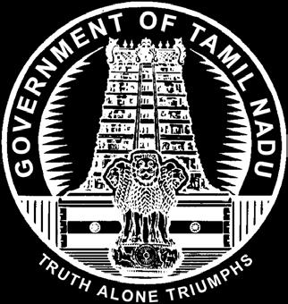

©
GOVERNMENT OF TAMIL NADU
| TAMIL NADU GOVERNMENT GAZETTE PUBLISHED BY AUTHORITY | ||

OF S2 Heed > > eae rere
No. 27] CHENNAI, WEDNESDAY, JULY 8, 2026
Pages.
Change of Names .. 1483 - 1558
Notices .. 1559 - 1561
NOTICE
NO LEGAL RESPONSIBILITY IS ACCEPTED FOR THE PUBLICATION OF ADVERTISEMENTS REGARDING CHANGE OF NAME IN THE TAMIL NADU GOVERNMENT GAZETTE. PERSONS NOTIFYING THE CHANGES WILL REMAIN SOLELY RESPONSIBLE FOR THE LEGAL CONSEQUENCES AND ALSO FOR ANY OTHER MISREPRESENTATION, ETC.
(By Order)
21193. I, Shakil Murugesan, wife of Thiru S Murugesan, born on 5th May 1974 (District of Birth: Madurai), residing at No. W21/24, MMC Colony Block, Avaniyapuram, Madurai-625 012, shall henceforth be known as SHAKILA M
21196. I, Mohamedgani K, son of Thiru Kamardeen, born on 30th May 1982 (District of Birth: Ramanathapuram), residing at No. 148, Ramalan Nagar, Madak Kottan, Melakkottai Post, Velipattanam, Ramanathapuram- 623 504, shall henceforth be known as ITHIRISH KANI K SHAKIL MURUGESAN
MOHAMEDGANI K Madurai, 29th June 2026.
Ramanathapuram, 29th June 2026.
21194. I, Venkateswara Ayyar Lakshmi, wife of Thiru Venkataraman. P, born on 30th April 1957 (District of Birth: Virudhunagar), residing at No. A21, Visithara Apartment, Vilangudi, Madurai-625 018, shall henceforth be known as LAKSHMI. V
21197. My son, A Rawf Ibnabdur Rahman, son of Thiru S Abdul Rahuman, born on 10th May 2021 (District of Birth: Madurai), residing at No. 467, Thiruppathi Nagar, Madurai-625 011, shall henceforth be known as A. RAWF IBN ABDUR RAHMAN
VENKATESWARA AYYAR LAKSHMI
Madurai, 29th June 2026.
Madurai, 29th June 2026.
NASRIN BANU (Mother) 21195. I, Rajeswari, wife of Thiru R. Rajamani, born on 8th March 1958 (District of Birth: Virudhunagar), residing at Old No. 1/7, New No. 1/159, North Street, Ilandaikulam Post, Watrap Taluk, Virudhunagar-626 149, shall henceforth be known as R. SHANMUGAVADIVU
21198. I, Indhuja Yoganantharaja, wife of Thiru Pattris, born on 24th June 1991 (District of Birth: Madurai), residing at Old No. 191, New No. 571, Srilankan Refugees Camp. Uchapatti, Thirumangalam Taluk, Madurai-625 008, shall henceforth be known as INTHUJA
INDHUJA YOGANANTHARAJA Virudhunagar, 29th June 2026.
Madurai, 29th June 2026.
[1483]
D.T.P.—VI-4 (27)—11484 TAMIL NADU GOVERNMENT GAZETTE [Part VI—Sec. 4 21199. I, Pandiyaraj Gurusamy, son of Thiru V Gurusamy, born on 3rd January 1954 (District of Birth: Theni), residing at No. 2/327, Ayyanar Colony, Narasingam Main Road, Kadachanendhal, Madurai-625 107, shall henceforth be known as G PANDIARAJU
PANDIYARAJ GURUSAMY Madurai, 29th June 2026.
21200. I, Ashwin K, son of Thiru K Karuppasamy, born on 19th December 2007 (District of Birth: Madurai), residing at No. 2/53A, Middle Street, Soorangudi, Thoothukkudi-628 901, shall henceforth be known as SHANMUGA KARUPPASAMY K ASHWIN
ASHWIN K Thoothukkudi, 29th June 2026.
21201. I, Nagarathinam, wife of Thiru R S Krishnasamy, born on 7th March 1951 (District of Birth: Theni), residing at No. T-237, Housing Board, Ellis Nagar, Arasaradi Post, Madurai-625 016, shall henceforth be known as RATNA
NAGARATHINAM Madurai, 29th June 2026.
21202. I, Anjalidevi Kulanthaivelu, wife of Thiru Ramesh, born on 15th March 2000 (District of Birth: Madurai), residing at No. 6179, Pudur, Thiruvaidavur, Madurai- 625 110, shall henceforth be known as ANJALAIDEVI K
ANJALIDEVI KULATHAIVELU Madurai, 29th June 2026.
21203. I, Bshaseera Parveen M, wife of Thiru Mohamed Rowther K, born on 25th May 1978 (District of Birth: Theni), residing at No. 12226, Thesiyapillai Vinayagam Street, Bagavathiyamman Kovil Street, Uthamapalayam, Theni-625 533, shall henceforth be known as BASHEERA PARWIN
BSHASEERA PARVEEN M Theni, 29th June 2026.
21204. I, Makilambo R, son of Thiru V Rajalingam, born on 28th September 2006 (District of Birth: Madurai), residing at No. 1E, Sangaiah Kovil Street, Silaiman, Madurai- 625 201, shall henceforth be known as R MAHILAMBOO
MAKILAMBO R Madurai, 29th June 2026.
21205. I, Jembulingam, son of Thiru Jambulingam, born on 25th February 1976 (District of Birth: Tiruchirappalli), residing at No. 2/548, North Street, Ramji Nagar Post, K. Kallikudy, Tiruchirappalli-620 009, shall henceforth be known as PARAMASIVAM J
JEMBULINGAM Tiruchirappalli, 29th June 2026.
21206. I, Susai Manicka Selvaraj K A, son of Thiru Arbutharaj, born on 17th March 1961 (District of Birth: Madurai), residing at No. 112, LIG Colony, KK Nagar, Madurai-625 020, shall henceforth be known as SELVAM A
SUSAI MANICKA SELVARAJ K A Madurai, 29th June 2026.
21207. My daughter, B Krithiksha, born on 11th November 2022 (District of Birth: Madurai), residing at No. 47, Gnanagiri Road, Coronation Colony, Sivakasi, Virudhunagar-626 189, shall henceforth be known as B.A. KRITHIKSHA SRI 21208. I, Kitchanan. N son of Thiru Narayanan. K born on 12th February 1981 (District of Birth: Madurai), residing at No. 197/77, Vidathakulam, Tirumangalam, Madurai-625 706, shall henceforth be known as KITCHANAN NARAYANAN
KITCHANAN. N Madurai, 29th June 2026.
21209. I, P Murugesan Paramasivam, son of Thiru Paramasivam, born on 2nd June 1979 (District of Birth: Madurai), residing at No. 10/9A, Sekkadipatti, Ottakkovilpatti Post, Melur Taluk, Tiruchunai, Madurai- 625 101, shall henceforth be known as P. MURUGAN
P MURUGESAN PARAMASIVAM Madurai, 29th June 2026.
21210. My son, John Rose D, born on 20th May 2021 (District of Birth: Virudhunagar), residing at No. 148/4/1F, Pullalalkottai Road, Virudhunagar-625 001, shall henceforth be known as JOSH ALWIN D
DILIP KUMAR K Virudhunagar, 29th June 2026. (Father) 21211. I, Sri Aishwarya Elango Subiramaniyan, daughter of Thiru P Elango Subramanian, born on 30th December 2003 (District of Birth: Madurai), residing at No. 3/54, Pandian Nagar 1st Street, K. Pudur, Madurai-625 007, shall henceforth be known as E SRI AISHWARYA SRI AISHWARYA ELANGO SUBIRAMANIYAN Madurai, 29th June 2026.
21212. My daughter, M Jayashree, born on 6th October 2011 (District of Birth: Madurai), residing at No. 2/158, Semminibatti, Vadibaddi Taluk, Mandaikulam, Katchikaddi Post, Madurai-625 218, shall henceforth be known as B. JAYASHREE
Madurai, 29th June 2026.
A. BHARATHI (Mother) 21213. My son, S Pughal, born on 10th July 2008 (District of Birth: Madurai), residing at No. 14/2/61, Kannimar Kovil Street, Vadugapatti, Tamaraikulam, Theni-625 603, shall henceforth be known as PUGAZH S
Theni, 29th June 2026.
SELVARAJ N (Father) 21214. My son, Sigupandi R, son of Thiru Raja P, born on 22nd March 2012 (District of Birth: Madurai), residing at No. 3/545, South Street, Semboor Melur, Madurai- 625 106, shall henceforth be known as SINGAPANDI R Madurai, 29th June 2026.
R MANTHAIAMMAL (Mother) 21215. I, Azhaguraja, son of Thiru Selvan, born on 5th April 2008 (District of Birth: Madurai), residing at No. 400/2, Kalathupatti Thethapatti Pudur Post, Natham, Dindigul-624 401, shall henceforth be known as ALAGURAJ S
AZHAGURAJA Dindigul, 29th June 2026.
21216. I, Glandston Jebaraj S, son of Thiru Selvaraj D, born on 16th April 1957 (District of Birth: Madurai), residing at No. 49, Teachers Line, Tirupparankundram, Pasumalai, Madurai-625 004, shall henceforth be known as GLADSTON JEBARAJ S July 8, 2026] TAMIL NADU GOVERNMENT GAZETTE 1485 21217. I, Indhu M, wife of Thiru Tharanidharan R K, born on 20th February 1999 (District of Birth: Puducherry), residing at No. 64, Vivega Garden, 3rd Street, Kalangal Road, Sulur, Coimbatore-641 402, shall henceforth be known as INDHU THARANIDHARAN
INDHU M Coimbatore, 29th June 2026.
21218. I, Serman, son of Thiru Kuthalingam, born on 10th June 1977 (District of Birth: Tenkasi), residing at No. 8/241, Mela Lakshmi Patti, Mela Ariyappapuram, Thippanampatti, Mettur, Tenkasi-627 808, shall henceforth be known as CHAIRMAN K
SERMAN Tenkasi, 29th June 2026.
21219. I, Azhakeswaran Chandran, son of Thiru Chandran, born on 16th April 2003 (District of Birth: Madurai), residing at No. 39, Vasuki Street, Melaannuppandi, Madurai- 625 009, shall henceforth be known as C ALAGESWARAN
AZHAKESWARAN CHANDRAN Madurai, 29th June 2026.
21220. I, Harish S, son of Thiru Jothi Murugan, born on 19th October 2003 (District of Birth: Theni), residing at No. 33C/2, W3, Samykulam 2nd Street, Uthamapalayam Taluk, Chinnamanur, Theni-625 515, shall henceforth be known as RUDRA DEV
HARISH S Theni, 29th June 2026.
21221. My son, Aknesh A, born on 6th April 2012 (District of Birth: Kanyakumari), residing at No. 1/82A, Paraiyadi Vilai, Puthen Veedu, Manvilai, Cheruppaloor Post, Kanyakumari-629 161, shall henceforth be known as AAKASH A
A ARULRAJ Kanyakumari, 29th June 2026. (Father) 21222. I, Vinoth, son of Thiru A. Selva Kumar, born on 9th October 2002 (District of Birth: Kanyakumari), residing at No. 20-130, Srilakshmipuram, Anjugramam, Variyoor Post, Kanyakumari-629 401, shall henceforth be known as ANISH S
VINOTH Kanyakumari, 29th June 2026.
21223. My son, Krishvanth, born on 21st March 2021 (District of Birth: Theni), residing at No. 2-190, Main Road Street, S Renganathapuram, Aundipatti, Theni-625 512, shall henceforth be known as KRISHVANTH J
Theni, 29th June 2026.
S JEYAKANTH (Father) 21224. My son, S. AL Kafeel, son of Thiru A Sabeeb Mohamed, born on 7th March 2019 (District of Birth: Ramanathapuram), residing at No. 4/994, Noor Nagar, Vani Village, Ramanathapuram-623 536, shall henceforth be known as S. KAFEEL
S. ANUSIYA BANU Ramanathapuram, 29th June 2026. (Mother) 21225. My son, R. Krishiv, born on 2nd February 2019 (District of Birth: Madurai), residing at No. 188B1/100, Periyakadai Bazar, Rajapalayam, Virudhunagar-626 117, shall henceforth be known as KRISHIV RAJKUMAR 21226. I, S Malathi Prakash, wife of Thiru Siva Prakasam, born on 3rd June 1957 (District of Birth: Ramanathapuram), residing at No. 3-863A12, Bharathi Nagar, Timber Road, Maruthupandiyar Nagar, Paramakudi, Ramanathapuram-623 707, shall henceforth be known as S MALATHY
S MALATHI PRAKASH Ramanathapuram, 29th June 2026.
21227. My son, M. Subash, son of Thiru Muthukrishnan, born on 25th September 2013 (District of Birth: Tenkasi), residing at Old No. 206, New No. 620, Bharathidasan Street, N.G.O. Colony, Sankarankovil Taluk, Tenkasi- 627 756, shall henceforth be known as SUBASH. M Tenkasi, 29th June 2026.
S. VELLATHURAICHI (Mother) 21228. My daughter, Dhananithisriyal, born on 30th January 2013 (District of Birth: Madurai), residing at No. 19A, Arunachalapuram 2nd Street, Ismailpuram 12th Street, Munichalai Road, Madurai-625 009, shall henceforth be known as DHANANITHI SHREEYAAL C S Madurai, 29th June 2026.
S C SRINIVASSAN (Father) 21229. I, K Jeganmurugan, son of Thiru M G Kathiresan, born on 11th May 1983 (District of Birth: Virudhunagar), residing at No. 2/283, Senaiyapuram Colony, Pallapatti Road, Sivakasi, Virudhunagar-626 123, shall henceforth be known as K ARUN RAAJ MURHAAN
K JEGANMURUGAN Virudhunagar, 29th June 2026.
21230. I, M Paul Pandi, son of Thiru P. Muthumayadevar, born on 10th May 1976 (District of Birth: Madurai), residing at No. 70H, Munichipalayam, Arasaradi Post, Madurai-625 016, shall henceforth be known as M PAULPANDIMUTHUMAYADEVAR
M PAUL PANDI Madurai, 29th June 2026.
21231. My son, Ahamd Osama, born on 27th October 2012 (District of Birth: Dindigul), residing at No. 96/4, Chellandiyamman Kovil, Narayanapillai Thottam, Dindigul- 624 001, shall henceforth be known as AHAMED. A Dindigul, 29th June 2026.
ANISH RAHMAN (Father) 21232. I, A Vimala, wife of Thiru Sengkimuthu alias Malaichami, born on 22nd April 1988 (District of Birth: Madurai), residing at No. 3/4/1, Arittapatti, Melur Taluk, Madurai-625 106, shall henceforth be known as VIMALA S M
A VIMALA Madurai, 29th June 2026.
21233. My daughter, V Dhanya Sri, born on 24th April 2011 (District of Birth: Tiruppur), residing at No. 2/1, Middle Street, Adalur Post, Dindigul-624 212, shall henceforth be known as V. DHANSIKA SRI
Dindigul, 29th June 2026.
P VETRIKUMAR (Father) 21234. I, Kalaiselvi Nallaiyan, wife of Thiru M Nallaiyan, born on 9th December 1959 (District of Birth: Thanjavur), residing at No. 1/2, Muthupillai Street, Alanganallur, Vadipatti Taluk, Madurai-625 501, shall henceforth be known as KALAICHELVI N 1486 TAMIL NADU GOVERNMENT GAZETTE [Part VI—Sec. 4 21235. My son, Keerish, born on 16th May 2010 (District of Birth: Theni), residing at East Street, Velayuthapuram, Periyakulam, Theni-625 562, shall henceforth be known as K. GIREESH
Theni, 29th June 2026.
KRISHNAMOORTHI P (Father) 21236. I, Karthikeyan, son of Thiru K Selvaraj, born on 5th April 1982 (District of Birth: Virudhunagar), residing at No. 21-B(3), Singarathoppu Street, Aruppukkottai, Virudhunagar-626 101, shall henceforth be known as KARTHICK S
KARTHIKEYAN Virudhunagar, 29th June 2026.
21237. I, Neethirasa Bothurasa, son of Thiru Pothuraja, born on 20th April 1998 (District of Birth: Theni), residing at No. 146/3, West Street, Paluthu Kadamalaikundu Post, Aundaipatti Taluk, Theni-625 579, shall henceforth be known as NEETHIRAJA P
NEETHIRASA BOTHURASA Theni, 29th June 2026.
21238. I, S Mohammed Ashik, son of Thiru S Sathik Batcha, born on 22nd July 2007 (District of Birth: Chennai), residing at No. 2565, TNHB Colony, Villapuram, Madurai-625 012, shall henceforth be known as MUHAMMAD ASHIK S
S MOHAMMED ASHIK Madurai, 29th June 2026.
21239. My son, Allagulli Pandi Avagan Mophnar, born on 26th June 2009 (District of Birth: Madurai), residing at No. 313, Valavanthalpuram, Alappalacheri Post, Thirumangalam Taluk, Madurai-625 704, shall henceforth be known as ALAGUPANDI A
Madurai, 29th June 2026.
S ALAGAN (Father) 21240. I, Ragesh, son of Thiru R Murugesan, born on 16th April 2005 (District of Birth: Virudhunagar), residing at No. 3/159, Murugan Colony, Sengamalapatti, Thiruthangal, Sivakasi, Virudhunagar-626 130, shall henceforth be known as RAGESH M
RAGESH Virudhunagar, 29th June 2026.
21241. I, Atshaya Senthilkumar, daughter of Thiru R. Senthilkumar, born on 11th January 2006 (District of Birth: Madurai), residing at No. 2A, Rajuillam, Vanjinathan 3rd Street, Ramaiah Street, Jaihindpuram, Madurai- 625 011, shall henceforth be known as S AKSHAYA
ATSHAYA SENTHILKUMAR Madurai, 29th June 2026.
21242. My son, N. Pirathip, son of Thiru Narayanan S, born on 16th November 2015 (District of Birth: Madurai), residing at No. 185, Main Road Kariyenthalpatti Manappacheheri Post, Melur Taluk, Madurai-625 103, shall henceforth be known as PRADEEP N
Madurai, 29th June 2026.
MATHAVI N (Mother) 21243. I, Muthulakshmi S, wife of Thiru Sakthivel, born on 8th August 1986 (District of Birth: Madurai), residing at Erumarpatti, Usilampatti, Madurai-625 527, shall henceforth be known as SUMATHI S 21244. I, Viji G, wife of Thiru Gurusamy, born on 31st July 1984 (District of Birth: Virudhunagar), residing at No. 12, Selva Vinayagar Kovil Street, Aruppukkottai, Virudhunagar-626 101, shall henceforth be known as S VIJI
VIJI G Virudhunagar, 29th June 2026.
21245. I, Jazith Ahamadh, son of Thiru Rabhik Ahamadh, born on 31st August 2007 (District of Birth: Sivagangai), residing at No. 126(2), Puluthipatti Post, Chettikurchi, Singampunari Taluk, Sivagangai-630 309, shall henceforth be known as SAJITH AHAMMED R
JAZITH AHAMADH Sivagangai, 29th June 2026.
21246. My daughter, Safrin Fathima, daughter of Thiru Rabhik Ahamadh, born on 6th July 2009 (District of Birth: Sivagangai), residing at No. 126(2), Puluthipatti Post, Chettikurichi, Singampunari Taluk, Sivagangai-630 309, shall henceforth be known as SAFRIN FATHIMA R Sivagangai, 29th June 2026.
AISHA R (Mother) 21247. My son, R. Abdul Rahman, born on 27th May 2019 (District of Birth: Tiruchirappalli), residing at No. 5-A, Elango Street, Ganapathi Nagar, Villapuram, Madurai-625 012, shall henceforth be known as T.R. ABDUL RAHMAN ASHWIN
Madurai, 29th June 2026.
RAMESH T R (Father) 21248. My daughter, T.R. Aarisa Bee, born on 18th May 2020 (District of Birth: Tiruchirappalli), residing at No. 5A, Elango Street, Ganapathi Nagar, Villapuram, Madurai-625 012, shall henceforth be known as T.R. AARISA NEETHA
Madurai, 29th June 2026.
RAMESH T R (Father) 21249. I, Muthukannan, son of Thiru V. Palani, born on 27th July 1991 (District of Birth: Madurai), residing at No. 162, West Street, Palanganatham, Madurai-625 003, shall henceforth be known as MUTHUKANNAN. P
MUTHUKANNAN Madurai, 29th June 2026.
21250. My daughter, P Laksana, born on 5th November 2025 (District of Birth: Madurai), residing at No. 70/76, Pattrai Thoppu, Kalavasal Madurai-625 016, shall henceforth be known as VILVA LAKSANA P Madurai, 29th June 2026.
PRABAKARA VELAN V (Father) 21251. My son, Siva Mayandi A, born on 8th August 2012 (District of Birth: Madurai), residing at No. 6/27, Muthuvanthidal, Thiruppuvanam Taluk, Sivagangai- 630 611, shall henceforth be known as SUDEEP. A Sivagangai, 29th June 2026.
S. AZHAGUMANI (Father) 21252. I, Inaya Fathima, wife of Thiru Mohammed Seeni Pathusa, born on 10th October 2000 (District of Birth: Vellore), residing at Musaparkani Street, Paramakudi, Ramanathapuram-623 707, shall henceforth be known as INAYA FATHIMA. M July 8, 2026] TAMIL NADU GOVERNMENT GAZETTE 1487 21253. My daughter, Mohan Sri, born on 21st November 2016 (District of Birth: Virudhunagar), residing at No. 7, 3rd Street, Periyar Nagar, Aruppukkottai, Virudhunagar- 626 101, shall henceforth be known as MOHANA SRI
S. MUNIYASELVAM Virudhunagar, 29th June 2026. (Father) 21254. My daughter, Dhanya Shri P, born on 13th December 2015 (District of Birth: Virudhunagar), residing at No. 1/47, Vidathakulam, Narikkudi Post, Virudhunagar- 626 607, shall henceforth be known as THANYASRI P
M. PANDI Virudhunagar, 29th June 2026. (Father) 21255. My daughter, Shabha Afrin, born on 10th November 2011 (District of Birth: Madurai), residing at No. 14-2-76, Alla Kovil Street, Singampunari, Tirupathur Taluk, Sivagangai-630 502, shall henceforth be known as SAFA AFRIN S
Sivagangai, 29th June 2026.
SHEIK ABDULLA A (Father) 21256. My son, Umar Paruk, born on 21st November 2015 (District of Birth: Madurai), residing at No. 14-2-76, Alla Kovil Street, Singampunari, Tirupathur Taluk, Sivagangai- 630 502, shall henceforth be known as UMAR FAROOK S Sivagangai, 29th June 2026.
SHEIK ABDULLA A (Father) 21257. My son, S. Harshavaradhan, born on 17th April 2024 (District of Birth: Madurai), residing at No. 67/3, Idaiyapatti, Vadipatti, Madurai-625 501, shall henceforth be known as S. ADHITHYA
Madurai, 29th June 2026.
S. SELVAKUMAR (Father) 21258. I, Pakkiyam, wife of Thiru Arokiasamy, born on 1st January 1956 (District of Birth: Madurai), residing at No. 168, Anthoniyar Colony, Kurumbalur, Perambalur Taluk, Perambalur-621 107, shall henceforth be known as AMIRDHAM
L.T.I. of PAKKIYAM Perambalur, 29th June 2026.
21259. I, P. Alagu, son of Thiru A. Periyanan, born on 30th April 1975 (District of Birth: Sivagangai), residing at No. 1496, Periyanan Velangapatti, Idaiyamelur Post, Sivagangai-630 562, shall henceforth be known as P. KARUPPUSAMY
P. ALAGU Sivagangai, 29th June 2026.
21260. I, Muthu Irulandi Meenampal, wife of Thiru Muthuirulandi, born on 15th May 1974 (District of Birth: Madurai), residing at No. 349, Angalaeshwari Nagar, Melakkal Main Road, Kochatai, Arasaradi Post, Madurai- 625 016, shall henceforth be known as MEENAMBAL M L.T.I. of MUTHU IRULANDI MEENAMPAL Madurai, 29th June 2026.
21261. My son, B. Mathimaran, born on 20th July 2023 (District of Birth: Madurai), residing at No. 5/199 North Street, Poosaripatti, Natham, Dindigul-624 402, shall henceforth be known as B. MARAN 21262. My son, L Theoder Andon, born on 30th August 2011 (District of Birth: Madurai), residing at No. 236, Moovender Nagar, Arul Complex, B B Kulam, Madurai- 625 002, shall henceforth be known as L THEODER ANTON Madurai, 29th June 2026.
A LOURDURAJ (Father) 21263. My daughter, P Pon Jeya Sri, born on 16th March 2021 (District of Birth: Thoothukkudi), residing at No. 2/4-1, East Street, K. Madharajapuram, Ariyanayakipuram Post, Thoothukkudi-628 901, shall henceforth be known as P MIDHUNA SRI
PONRAJ Thoothukkudi, 29th June 2026. (Father) 21264. I, Ayanasamy Sekar, son of Thiru Sekar, born on 16th April 1987 (District of Birth: Theni), residing at No. 26(2), Velu Street, Chinnamanur Post, Uthamapalayam Taluk, Theni-625 515, shall henceforth be known as AYYANACHMY S
AYANASAMY SEKAR Theni, 29th June 2026.
21265. My daughter, Nishanthini, daughter of Thiru Rokkasamy, born on 10th April 2012 (District of Birth: Virudhunagar), residing at No. 3/166, Middle Street, Adanur, Solaipatti, Peraiyur, Madurai-625 708, shall henceforth be known as R SUKASHINI
Madurai, 29th June 2026.
R AMUTHAKUMARI (Mother) 21266. My son, R Abinesh, son of Thiru Rokkasamy, born on 4th November 2009 (District of Birth: Virudhunagar), residing at No. 3/166, Middle Street, Adanur, Solaipatti, Peraiyur, Madurai-625 708, shall henceforth be known as R KARTHIKRAJA
Madurai, 29th June 2026.
R AMUTHAKUMARI (Mother) 21267. I, Bhuvaneswari Raja, wife of Thiru Raja, born on 12th June 1956 (District of Birth: Tirunelveli), residing at No. 3E, IOBOA Maduram Ganesh Nagar, Sambakulam Madurai North, K.Pudur, Madurai-625 007, shall henceforth be known as PUVANESWARI
BHUVANESWARI RAJA Madurai, 29th June 2026.
21268. My daughter, Shehsmiitaa, daughter of Thiru Selvaraj, born on 2nd June 2016 (District of Birth: Pudukkottai), residing at No. 736, Poolankuruchi, Sivagangai-630 405, shall henceforth be known as SESMITHA S
Sivagangai, 29th June 2026.
ANURADHA SELVARAJ (Mother) 21269. My son, Jarchs Mahimairaj, son of Thiru Mahimairaj, born on 28th September 2011 (District of Birth: Pudukkottai), residing at No. 628, Etticheri Ilayangudi, Uthamanur, Sivagangai-630 709, shall henceforth be known as GEORGE M
GLARA Sivagangai, 29th June 2026. (Mother) 21270. I, Selvam, son of Thiru Gnanagurusamy, born on 10th April 1977 (District of Birth: Virudhunagar), residing at No. 47/73, Thudiyandiyamman Kovil Theru, Srivilliputhur Taluk, Virudhunagar-626 125, shall henceforth be known as SANTHANASELVAM 1488 TAMIL NADU GOVERNMENT GAZETTE [Part VI—Sec. 4 21271. I, Kumar S, son of Thiru Sadamakkan, born on 10th February 1992 (District of Birth: Madurai), residing at Arasampatty Street, Valaiyapatty, Vadipatti, Madurai- 625 503, shall henceforth be known as VIJAYAKUMAR S
KUMAR S Madurai, 29th June 2026.
21272. My daughter, K Seja Sri, daughter of Thirumathi V Rajakumari, born on 31st October 2017 (District of Birth: Tiruvallur), residing at No. 3/52B, Sinthamani Street, Muthuramalingapuram, Kalloorani, Virudhunagar-626 105, shall henceforth be known as L SEJA SRI
LOGANNATHAN R Virudhunagar, 29th June 2026. (Step Father) 21273. My daughter, K. Thashika, born on 6th March 2024 (District of Birth: Virudhunagar), residing at No. 1/114, Keela Theru, Thambipatti, Virudhunagar-626 149, shall henceforth be known as THARANIKA K
KARUPPASAMY Virudhunagar, 29th June 2026. (Father) 21274. I, Layolin Francis, son of Thiru Innaci Muthu, born on 22nd July 1982 (District of Birth: Dindigul), residing at No. 2/597, Mottanampatty, Sirunayakkanpatty, Avellodu Dindigul-624 307, shall henceforth be known as FRANCIS
LAYOLIN FRANCIS Dindigul, 29th June 2026.
21275. I, R Sushiladevi, wife of Thiru Rajenthiran, born on 1st March 1963 (District of Birth: Sivagangai), residing at No. 75, Ganapathi Nagar, Extension, Alagar Kovil Main Road, Andhaneri, Kadakkinaru- Post, Madurai-625 107, shall henceforth be known as R SUSILA
R SUSHILADEVI Madurai, 29th June 2026.
21276. I, Bukazhendi P, son of Thiru Pandiannedunchezhian, born on 20th April 2006 (District of Birth: Madurai), residing at No. 7-2-1C, Apudur, Kodai Road, Nilkottai, Dindigul- 624 201, shall henceforth be known as PUGAZHENTHI P
BUKAZHENDI P Dindigul, 29th June 2026.
21277. My son, B. Kathirnilavan, born on 7th October 2023 (District of Birth: Virudhunagar), residing at No. 3/496, South Street, Kovilankulam, Kovilankulam Post, Virudhunagar-626 107, shall henceforth be known as B KAVIN
BALASUBRAMANIAN Virudhunagar, 29th June 2026. (Father) 21278. My son, S Rayyan Shaja, born on 7th April 2024 (District of Birth: Madurai), residing at No. 40, SKM Nagar, Ariyur, Madurai-625 018, shall henceforth be known as A RAYYAN
S ANISHA SHAHEEL Madurai, 29th June 2026. (Mother) 21279 I, Gugan, son of Thiru Vadivelu, born on 17th January 2005 (District of Birth: Sivagangai), residing at Old No. 2/164, Ganapathi Nagar, Perumbacherri, Sivagangai-623 701, shall henceforth be known as VASANTH V 21280. I, K. Dhilshath Begam, wife of Thiru J. Khaja Maideen, born on 10th March 1985 (District of Birth: Dindigul), residing at No. 3/76, Muslim Street, Nallamanarkottai Vedasandur, Dindigul-624 005, shall henceforth be known as AYSIA BEGAM
K. DHILSHATH BEGAM Dindigul, 29th June 2026.
21281. I, Roopa Sri Chinna Eluvan, daughter of Thiru Chinna Eluvan, born on 14th June 2008 (District of Birth: Sivagangai), residing at No. 208(2), Iyyathan Patti, Kambur Post, Melur Taluk, Madurai-625 101, shall henceforth be known as RUBASRI C
ROOPA SRI CHINNA ELUVAN Madurai, 29th June 2026.
21282. I, Sabeekabanu Alavudeen, daughter of Thiru Alavudeen, born on 20th June 2005 (District of Birth: Pudukkottai), residing at No. 153/75, Periya Street, Thiruvapur, Pudukkottai-622 003, shall henceforth be known as SHABIHA BANU A
SABEEKABANU ALAVUDEEN Pudukkottai, 29th June 2026.
21283. I, Syed Najmudeen, son of Thiru Mohammedrowther, born on 17th July 1968 (District of Birth: Ramanathapuram), residing at No. 3/79, Chinna Pallivasal Street, Chittrakkottai Post, Ramanathapuram-623 513, shall henceforth be known as SEIYATHU NASUMUTHIN
SYED NAJMUDEEN Ramanathapuram, 29th June 2026.
21284. My daughter, Jeyandhi, born on 19th October 2011 (District of Birth: Madurai), residing at No. 11-97/12, Chokkanathapuram, 2nd Street, New Vilangudi, Madurai- 625 018, shall henceforth be known as S. SRI JEYANTHI Madurai, 29th June 2026.
SENTHIL (Father) 21285. I, Jagatheesh Muthu, son of Thiru Muthu, born on 19th June 1999 (District of Birth: Sivagangai), residing at No. 16-1/52, Aranathankundu, Singampunari, Tirupathur, Sivagangai-630 502, shall henceforth be known as M. JEGADEESHMUTHU
JAGATHEESH MUTHU Sivagangai, 29th June 2026.
21286. I, Nallamaruthu, son of Thiru Mookooran, born on 2nd May 1993 (District of Birth: Virudhunagar), residing at No. 7-90, Ammanpatti Velanoorani, Virudhunagar-626 129, shall henceforth be known as MARUTHU M
NALLAMARUTHU Virudhunagar, 29th June 2026.
21287. My son, Maruthu Sharvanand R, born on 3rd May 2012 (District of Birth: Virudhunagar), residing at No. 38, Kuppaiyasandhu, Virudhunagar-626 001, shall henceforth be known as SHARVAANANTH
RAJKUMAR M Virudhunagar, 29th June 2026. (Father) 21288. My son, A Tashwin, son of Thiru Anandhan P, born on 21st May 2011 (District of Birth: Madurai), residing at No. 7/225, Thiruvalluvar Street, Nagamalaipudukottai, Madurai-625 019, shall henceforth be known as A DHASVITHAN July 8, 2026] TAMIL NADU GOVERNMENT GAZETTE 1489 21289. I, Joseph Antony Dasan Peerez, son of Thiru Wilfred, born on 9th August 1982 (District of Birth: Thoothukkudi), residing at No. 29, Lasus Street, Manapad, Thoothukkudi-628 209, shall henceforth be known as WILFRED JOSEPH ANTONY DASON PEEREZ JOSEPH ANTONY DASAN PEEREZ Thoothukkudi, 29th June 2026.
21290. I, R. Mamtha alias Akshaya, daughter of Thiru M Rajkumar, born on 9th April 2006 (District of Birth: Virudhunagar), residing at No. 198A, Muthumari Nagar, 4th Street, Rajapalayam, Virudhunagar-626 108, shall henceforth be known as R MAMTHA AKSHAYA
R MAMTHA alias AKSHAYA Virudhunagar, 29th June 2026.
21291. My son, Kabish, born on 16th November 2015 (District of Birth: Tenkasi), residing at No. 1/50, SC Middle Street, Keelakalangal, Tenkasi-627 860, shall henceforth be known as SUBISH M
Tenkasi, 29th June 2026.
MAINARSAMY (Father) 21292. I, Sathya alias Sakthi M, wife of Thiru M Ramesh Kumar, born on 19th August 1994 (District of Birth: Kanyakumari), residing at No. 29, 4th Street Kalpaga Nagar, Padianallur, Chennai-600 052, shall henceforth be known as R SAKTHI
SATHYA alias SAKTHI M Chennai, 29th June 2026.
21293. My daughter, U.M. Dhanusha, born on 13th February 2012 (District of Birth: Madurai), residing at No. 124, Pillaiyar Kovil Street, Mavadi and Post, Manur, Tirunelveli-627 201, shall henceforth be known as UDHAYA U
P. ULAGARAJA Tirunelveli, 29th June 2026. (Father) 21294. My daughter, Ajeya Aksharaa, born on 25th November 2010 (District of Birth: Ramathapuram), residing at No. 2/89, Theppakkulam Street, Thiruppudaimarudur, Palayamkottai Taluk, Tirunelveli- 627 426, shall henceforth be known as AMAYA K
V. KANNAN Tirunelveli, 29th June 2026. (Father) 21295. I, Nagaraj, son of Thiru Mottaivelsamy, born on 2nd September 2005 (District of Birth: Virudhunagar), residing at No. 149, Perumal Temple South Car Street, Sattur, Virudhunagar-626 203, shall henceforth be known as NAGARAJAN M
NAGARAJ Virudhunagar, 29th June 2026.
21296. My son, Ihaan. S. Raahil, born on 14th May 2021 (District of Birth: Tirunelveli), residing at No. 18A, Nabigal Nayagam Street, Pattapathu, Tirunelveli-627 006, shall henceforth be known as IHAAN MEHMED. S.N
SHAMSUDEEN IRSHATH. K Tirunelveli, 29th June 2026. (Father) 21297. My daughter, Joysha S S, born on 7th December 2015 (District of Birth: Madurai), residing at No. 19E, Rajeev Gandhi Nagar, Kudisai Paguthi, Police Station Near, S S Colony, Madurai-625 016, shall henceforth be known as JOYSHA S 21298. I, Ben Christal John Pushpa Rathi, son of Thiru Christal John, born on 17th December 1985 (District of Birth: Kanyakumari), residing at No. 7-55, Manvilai, Methukummal Post, Kanyakumari-629 172, shall henceforth be known as BEN C P
BEN CHRISTAL JOHN PUSHPA RATHI Kanyakumari, 29th June 2026.
21299. I, Thivya A Rajeshwari, daughter of Thiru Sankara Subramanian, born on 19th June 1991 (District of Birth: Tirunelveli), residing at No. 27, Chellathai Nagar, NGO A Colony, Perumalpuram, Palayamkottai, Tirunelveli-627 007, shall henceforth be known as S THIVYA
THIVYA A RAJESHWARI Tirunelveli, 29th June 2026.
21300. I, P Saghabidin, son of Thiru Pitchaimohamed, born on 29th May 1982 (District of Birth: Dindigul), residing at No. 39, Ashok Nagar, Natham, Dindigul-624 401, shall henceforth be known as P SAHABDEEN
P SAGHABIDIN Dindigul, 29th June 2026.
21301. My daughter, Minoli Shri, born on 28th May 2012 (District of Birth: Ramanathapuram), residing at No. 22, Vengalakurichi, Muukulathur Taluk, Vengalakurichi Post, Vilangulathur, Ramanathapuram- 623 704, shall henceforth be known as M MINOLI SHRI
R. MUNIYASAMY Ramanathapuram, 29th June 2026. (Father) 21302. I, Eswara Pillai K, son of Thiru Kanaka Raj. T, born on 24th August 2006 (District of Birth: Kanyakumari), residing at No. 16/23, Puthan Veedu, Kalkulam, Villukuri Post, Kanyakumari-629 180, shall henceforth be known as RITHVIK. K
ESWARA PILLAI K Kanyakumari, 29th June 2026.
21303. My daughter, Mayila N, born on 12th February 2026 (District of Birth: Puducherry), residing at No. 8-17/18, Kaliamman Kovil Street, New Vilangudi, Madurai-625 018, shall henceforth be known as N.G. MAYILA
Madurai, 29th June 2026.
S. NAVEEN (Father) 21304. My son, Seran M, born on 6th November 2008 (District of Birth: Madurai), residing at Nethaji Nagar, Uthappanaickanur, Usilampatti Taluk, Madurai-625 537, shall henceforth be known as CHERAN M
Madurai, 29th June 2026.
P. MURUGAN (Father) 21305. I, V. Gayathri Vijayarahavan, wife of Thiru S. Sadagoban, born on 16th June 1993 (District of Birth: Sivagangai), residing at No. 3/299, Middle Street, Perumal Kovil Backside, Vadugapatti, Madurai-625 018, shall henceforth be known as S GAYATHRI
V. GAYATHRI VIJAYARAHAVAN Madurai, 29th June 2026.
21306. I, Durkka, wife of Thiru R Perumal, born on 6th May 1975 (District of Birth: Madurai), residing at No. 20, 8th Street, Prasanna Colony, Avaniyapuram, Madurai- 625 012, shall henceforth be known as DURGA B P 1490 TAMIL NADU GOVERNMENT GAZETTE [Part VI—Sec. 4 21307. My daughter, Vellakutty, daughter of Thiru Karuppasamy, born on 15th January 2009 (District of Birth: Tenkasi), residing at No. 28B-1, Kamatchi Amman Kovil South Street, Melakadayanallur, Tenkasi-627 751, shall henceforth be known as VIDHYA K
Tenkasi, 29th June 2026.
SELVI (Mother) 21308. My daughter, B Deepshikha, daughter of Thiru KS Balasubramanian, born on 26th July 2009 (District of Birth: Madurai), residing at No. 298/F5, MM Nagar, Thiruppalai, Madurai-625 014, shall henceforth be known as DEEPSHIKHABALASUBRAMANIAN
Madurai, 29th June 2026.
21309. My daughter, A.R. Magizh Yazhini Umaiyal, born on 15th February 2024 (District of Birth: Theni), residing at No. 241 1A, 2W VIP Golden City, Jamin Thoppu Street, Bodinayakanur, Theni-625 513, shall henceforth be known as A R MAGIZHYAZHINI
Theni, 29th June 2026.
S ALAGURAJ (Father) 21310. My daughter, Monika Sri S, born on 13th July 2013 (District of Birth: Madurai), residing at No. 47, Selvalakshmi Nagar, Dharmathupatty, Kappalur Post, Thirumangalam Taluk, Madurai-625 008, shall henceforth be known as MONICASHRI S
Madurai, 29th June 2026.
R SENTHILMURUGAN (Father) 21311. My daughter, Rithika Sridevi P, born on 13th April 2015 (District of Birth: Dindigul), residing at No. 1/60, Kombai, Pannaipatti Post, Thethupatti Village, Dindigul- 624 705, shall henceforth be known as KEERTHIKA P Dindigul, 29th June 2026.
PARAMASIVAM (Father) 21312. My son, Jaiyohiththamizhinian, son of Thiru Thamizhinian, born on 27th February 2014 (District of Birth: Ramanathapuram), residing at No. 6/10, Sethupathy Nagar, Nagachi Village and Post, Ramanathapuram-623 534, shall henceforth be known as JAI YOHITH. T
KUMUDHA Ramanathapuram, 29th June 2026. (Mother) 21313. I, Idris, son of Thiru Kamsha Maideen, born on 18th June 1965 (District of Birth: Chennai), residing at No. 74, KTM Street, Kayalpattinam, Thoothukkudi-628 204, shall henceforth be known as MOHAMED ITHREES
L.T.I. of IDRIS Thoothukkudi, 29th June 2026.
21314. My son, A Arun Sai Ram, born on 31st December 2012 (District of Birth: Thoothukkudi), residing at No. 1404A/6, Annai Therasa Nagar, Lakshmipuram Post, Kovilpatti, Thoothukkudi-628 502, shall henceforth be known as A ARUN
S ANANDH Thoothukkudi, 29th June 2026. (Father) 21315. I, Fathurdeen Abdul Latif M, son of Thiru Mathar Mydeen, born on 10th December 2001 (District of Birth: Tirunelveli), residing at No. 128/B, Rahmath Nagar, 2nd Street, Maharaja Nagar Post, Palayamkottai Taluk, Tirunelveli-627 011, shall henceforth be known as FATHRUDEEN ABDUL LATIF M 21316. My son, Gayan Karthik, son of Thiru Ajith .R, born on 3rd October 2023 (District of Birth: Kanyakumari), residing at No. 3/123C, Nagamparavilai, Kodumkulam, Marthandam Post, Vilavancode, Kanyakumari-629 165, shall henceforth be known as A HARSHVARDH
P ANGEL AISHWARYA Kanyakumari, 29th June 2026. (Mother) 21317. I, M Esakki alias Indira, daughter of Thiru Murugan, born on 23rd October 1995 (District of Birth: Tirunelveli), residing at No. M17, TNHB Colony, Section 1, Bharani Nagar, VM Chatram, Maharaja Nagar Post, Tirunelveli- 627 011, shall henceforth be known as ESAKKI INDIRA M
M ESAKKI alias INDIRA Tirunelveli, 29th June 2026.
21318. I, Haja Suhubudeen, son of Thiru Ibrahim Gani, born on 4th May 1965 (District of Birth: Ramanathapuram), residing at No. 35, Ambalakara Street, Velipattinam, Ramanathapuram-623 504, shall henceforth be known as KAJASUKUBUTHEEN
HAJA SUHUBUDEEN Ramanathapuram, 29th June 2026.
21319. I, M. Chokkalingam, son of Thiru G. Mohandoss, born on 29th December 1977 (District of Birth: Tirunelveli), residing at No. 812J/14, EB Colony Pandavarmangalam Post, East Kovilpatti Taluk, Rajiv Nagar 6th Street, Thoothukkudi-628 502, shall henceforth be known as M. SOCKALINGAM
M. CHOKKALINGAM Thoothukkudi, 29th June 2026.
21320. I, M. Ananth, son of Thiru V. Muthaiyar, born on 15th May 1965 (District of Birth: Theni), residing at No. 93A, M.C Street, Gudalur, Uthampalayam Taluk, Theni-625 518, shall henceforth be known as M ARTHER
M. ANANTH Theni, 29th June 2026.
21321. My son, Naveen Charles. A, born on 18th March 2015 (District of Birth: Ramanathapuram), residing at No. 3/244, Mahathma Gandhi Street, Kalligudi Taluk, VT. Mani Nagar, K Vellakulam, Madurai-625 701, shall henceforth be known as A NAVEEN
Madurai, 29th June 2026.
L.T.I. of T APPATHURAI (Father) 21322. My daughter, M Sultaana Begam, daughter of Thiru Mubarak Ali, born on 11th November 2015 (District of Birth: Perambalur), residing at Roja Nagar, Vadakku Madhavi Road, Perambalur-621 212, shall henceforth be known as SULTHANA BEGAM M
Perambalur, 29th June 2026.
NASIMA BEGAM (Mother) 21323. My daughter, Harshini, daughter of Thiru C Kanagaraj, born on 24th March 2010 (District of Birth: Tiruchirappalli), residing at No. 10, Dindigul Road, Samathuvapuram, Inamkulathur, Tiruchirappalli-620 009, shall henceforth be known as HARSHINI K
K JOTHILAKSHMI Tiruchirappalli, 29th June 2026. (Mother) 21324. My son, K Renganathasuvamy, born on 31st July 2017 (District of Birth: Tiruchirappalli), residing at No. 88/1, Pusari Veeduakal Street, Telegapatti Colony, Porundalur, Karur-621 313, shall henceforth be known as RENGASAMY K July 8, 2026] TAMIL NADU GOVERNMENT GAZETTE 1491 21325. My son, S.S Magilmithran, born on 16th October 2025 (District of Birth: Tiruchirappalli), residing at No. 105, Middle Street, Ettarai, Tiruchirappalli-639 103, shall henceforth be known as PRANITH S
SATHISH KUMAR P Tiruchirappalli, 29th June 2026. (Father) 21326. My daughter, Jelani, born on 12th January 2013 (District of Birth: Namakkal), residing at No. 4/111A Vinayagar Kovil Street, Manamedu Post, Thottiyam Taluk, Tiruchirappalli-621 209, shall henceforth be known as JANANI K
KUMARESAN Tiruchirappalli, 29th June 2026. (Father) 21327. My son, C Kabilesh, born on 7th September 2022 (District of Birth: Namakkal), residing at No. 21 Colony West Thavittupalaiyam, Thottiyam Taluk, Kattuputhur, Tiruchirappalli-621 207, shall henceforth be known as GRIDHAR C
CHANDRAMOHAN M Tiruchirappalli, 29th June 2026. (Father) 21328. I, Segar S, son of Thiru Sugumaran, born on 20th May 1966 (District of Birth: Karur), residing at No. 113, Nethaji Nagar, Chinnagulthupalayam, Vengamedu, Karur-639 006, shall henceforth be known as S SEKARAN
SEGAR S Karur, 29th June 2026.
21329. My daughter, M Jency, born on 17th December 2023 (District of Birth: Karur), residing at No. 3/163, North Street, P Udaiyapatti, Pannapatti, Karur-621 301, shall henceforth be known as JEEVITHASRI M
Karur, 29th June 2026.
MAGESH (Father) 21330. My son, Advik, born on 29th August 2020 (District of Birth: Perambalur), residing at No. 2/70, Middle Street, Valaiyeduppu Post, Musiri, Tiruchirappalli-621 205, shall henceforth be known as V AADHVIK
P. VINOTHKUMAR Tiruchirappalli, 29th June 2026. (Father) 21331. My son, K A Sujeevan, son of Thiru C K Anandh, born on 17th August 2022 (District of Birth: Tiruchirappalli), residing at No. 77/1, Mela Kalnayakan Street, Woraiyur, Tiruchirappalli-620 003, shall henceforth be known as K A BHAVA NIRANJAN
A ANITHA Tiruchirappalli, 29th June 2026. (Mother) 21332. My daughter, Rukshana M, born on 29th July 2009 (District of Birth: Tiruchirappalli), residing at No. 110, Kallari Mettu Street, Woraiyur, Tiruchirappalli-620 003, shall henceforth be known as RUKHSHANA M
MOHAMED RAFIK Tiruchirappalli, 29th June 2026. (Father) 21333. I, A Aktharyha, son of Thiru J.V Ahamad, born on 14th May 1977 (District of Birth: Tiruchirappalli), residing at No. 64, Sethurathnapuram, Manapparai, Tiruchirappalli- 621 306, shall henceforth be known as A SHAJAHANRAJ 21334. My daughter, Madhumitha, daughter of Thiru Karthikeyan, born on 2nd April 2015 (District of Birth: Thanjavur), residing at No. 42, Panikkan Street, Woraiyur, Tiruchirappalli-620 003, shall henceforth be known as K.R MADHUMITHA
RAJALAKSHMI Tiruchirappalli, 29th June 2026. (Mother) 21335. My son, Mokhith Velavan A, born on 17th March 2022 (District of Birth: Virudhunagar), residing at No. 13, New Colony, 10th Street, Subburaj Nagar, Bodinayakanur, Theni-625 513, shall henceforth be known as MITHRAN A Theni, 29th June 2026.
AYYAPPARAJ (Father) 21336. I, Abirami Kamban K S, wife of Thiru Bonam Venkata Satyanarayana, born on 29th January 1995 (District of Birth: Chennai), residing at No. 21, 4th Cross Street, 2nd Main Road, Iyer Thottam, KK Nagar, Tiruchirappalli-620 021, shall henceforth be known as ABIRAMI KAMBAN BONAM
ABIRAMI KAMBAN K S Tiruchirappalli, 29th June 2026.
21337. My daughter, K Sumi, born on 14th June 2023 (District of Birth: Tiruchirappalli), residing at No. 1/88, Kottamettu Street, Kottapalayam, Thuraiyur, Tiruchirappalli-621 003, shall henceforth be known as SUJITHA K
Tiuchirappalli, 29th June 2026.
S KRISHNAKUMAR (Father) 21338. My son, Dakshith D, born on 25th April 2026 (District of Birth: Tiruchirappalli), residing at Old No. 2-183, New No. 250-1, Lottus Nagar, North Arangoor, Thottiyam, Tiruchirappalli-621 215, shall henceforth be known as RITHAN D
T. DILIPKUMAR Tiruchirappalli, 29th June 2026. (Father) 21339. My son, Sangeeth, son of Thiru Charlesjacob, born on 7th November 2011 (District of Birth: Tiruchirappalli), residing at No. 2/43C, Pilliyar Kovil Street, Sorathur, Thuraiyur, Tiruchirappalli-621 002, shall henceforth be known as SANJITH C
SUBAVATHI Tiruchirappalli, 29th June 2026. (Mother) 21340. I, Angammal E, wife of Thiru Elaiyaraja K, born on 30th June 1970 (District of Birth: Tiruchirappalli), residing at No. 4/239, Indira Colony, Perakambi, Tiruchirappalli- 621 104, shall henceforth be known as ANKAYAIRSELVI
ANGAMMAL E Tiruchirappalli, 29th June 2026.
21341. My daughter, Sharunica, daughter of Thiru Sakthivel, born on 5th August 2012 (District of Birth: Thiruvarur), residing at No. 50/6, New C Housing Unit, Pavithramanickam, Elavangargupi Post, Thiruvarur- 610 104, shall henceforth be known as SHIVA SHALLU S A Thiruvarur, 29th June 2026.
AMUTHA (Mother) 21342. My daughter, Dhivya Sri S, daughter of Thiru Selvakumar, born on 15th December 2010 (District of Birth: Perambalur), residing at No. 72/2, Samiyappa Nagar, Vadaku Madhavi Road, Perambalur-621 212, shall henceforth be known as DHIVYAA SREE S 1492 TAMIL NADU GOVERNMENT GAZETTE [Part VI—Sec. 4 21343. My son, Sreenivash J, born on 9th January 2012 (District of Birth: Tiruchirappalli), residing at No. 5-186, Rajeevgandhi Nagar, Moovarapalayam, Manachanallur, Tiruchirappalli-621 005, shall henceforth be known as NIVAS J
JAYABAL Tiruchirappalli, 29th June 2026. (Father) 21344. I, Mageswari R, wife of Thiru Rengasamy, born on 13th May 1966 (District of Birth: Karur), residing at No. 5/129, North Street, Kallai, Karur-639 110, shall henceforth be known as A MAGES
MAGESWARI R Karur, 29th June 2026.
21345. My daughter, J B Shamsrithi, daughter of Thiru Jegan, born on 4th September 2018 (District of Birth: Tiruchirappalli), residing at No. 1/7, North Street, Keela Natchikulam, Vadipatti Taluk, Madurai-625 205, shall henceforth be known as JB KANNUKINIYAL Madurai, 29th June 2026.
BAVITHRA (Mother) 21346. My son, V Dheena, born on 31st August 2023 (District of Birth: Tiruchirappalli), residing at No. 6, 2nd Street, Namachivaya Nagar, Mannachanallur, Tiruchirappalli- 621 005, shall henceforth be known as DHANVANTH
VINOTH Tiruchirappalli, 29th June 2026. (Father) 21347. My daughter, Anushi, daughter of Thiru Chinnappa, born on 12th May 2017 (District of Birth: Ariyalur), residing at No. 11/105-1, Middle Street, T. Melur, Thathanur West, Ariyalur-621 804, shall henceforth be known as ANUSRI C Ariyalur, 29th June 2026.
MALLIKA (Mother) 21348. I, Pushpakumar, son of Thiru Pichai, born on 22nd October 2003 (District of Birth: Pudukkottai), residing at No. 387, Pidarampatti, Kunnathur Post, Pudukkottai- 621 316, shall henceforth be known as KUMAR P
PUSHPAKUMAR Pudukkottai, 29th June 2026.
21349. My son, Thanuvaradhan, son of Thiru Manikandan, born on 25th June 2019 (District of Birth: Sivagangai), residing at No. 15A, Thirowpathi Amman Kovil Street, Keelachinthamani, Tiruchirappalli-620 002, shall henceforth be known as THASVANTH M
RANJANI Tiruchirappalli, 29th June 2026. (Mother) 21350. I, Pukazhanpan K, son of Thiru Kanakasabai G, born on 18th June 2002 (District of Birth: Tiruchirappalli), residing at No. 2/190, Sarkarpalaiyam, Puthapuram, Kilammullakudi, Tiruchirappalli-620 010, shall henceforth be known as PUGALANBAN. K
PUKAZHANPAN K Tiruchirappalli, 29th June 2026.
21351. My son, S. Syed Bilal, son of Thiru Syed Abdulla, born on 3rd January 2021 (District of Birth: Mayiladuthurai), residing at Old No. 68, New No. 80, Sarangapani East Street, Kumbakonam, Thanjavur-612 001, shall henceforth be known as S.A. NABILAAL 21352. My daughter, Samira, daughter of Thiru Arockiaraj, born on 1st December 2022 (District of Birth: Ariyalur), residing at No. 120, North Street, Pallakollai, Varadarajanpet, Andimadam Taluk, Ariyalur-621 805, shall henceforth be known as SAMEERA RIYANCY A Ariyalur, 29th June 2026.
PRIMINAROSE (Mother) 21353. My son, Kathir, born on 27th August 2019 (District of Birth: Tiruchirappalli), residing at No. 2/78, Perumal Kovil Street, Narasingapuram, Thuraiyur, Tiruchirappalli-621 008, shall henceforth be known as KATHIRSELVAN. M
MANI Tiruchirappalli, 29th June 2026. (Father) 21354. I, A. Tonial Raj, son of Thiru Arockiyasamy David, born on 11th March 2006 (District of Birth: Thanjavur), residing at No. 33/A-1, Thirukkalasanallur, Sakkottai, Kumbakonam Taluk, Thanjavur-612 401, shall henceforth be known as A. DANIAL RAJ
A. TONIAL RAJ Thanjavur, 29th June 2026.
21355. I, A. Jandait Selviyaa, wife of Thiru Arockiyasamy David, born on 5th February 1979 (District of Birth: Thanjavur), residing at No. 33/A-1, Thirukkalasanallur, Sakkottai, Kumbakonam Taluk, Thanjavur-612 401, shall henceforth be known as R. CHINNATHAL
A. JANDAIT SELVIYAA Thanjavur, 29th June 2026.
21356. I, Kumar Palaniyappan, son of Thiru Palaniyappan, born on 13th April 1978 (District of Birth: Sivagangai), residing at No. 1107, Rajagopalapuram 1st Street, Pudukkottai- 622 003, shall henceforth be known as PL. SIVAKUMAR
KUMAR PALANIYAPPAN Pudukkottai, 29th June 2026.
21357. My son, Anish, son of Thiru Vijay Anand, born on 25th March 2015 (District of Birth: Sivagangai), residing at Old No. 243, New No. 89, Thondi Road, Sivagangai- 630 561, shall henceforth be known as V ANEESH AADHAV Sivagangai, 29th June 2026.
RAJALAKSHMI. V (Mother) 21358. I, Basakaran Arumugam, son of Thiru Arumugam, born on 15th July 1971 (District of Birth: Pudukkottai), residing at No. 506/H1, Amman Nagar, Ellaipatti, Perunjunai Post, Pudukkottai-622 002, shall henceforth be known as A. BASKARAN
BASAKARAN ARUMUGAM Pudukkottai, 29th June 2026.
21359. My son, Santhosh Aravind, born on 11th January 2009 (District of Birth: Thiruvarur), residing at No. 2/688, South Street, Sivasakthi Nagar, Ivanallur, Manjakollai, Nagapattinam-611 106, shall henceforth be known as SANTHOSH ARAVINTH. I
ILAMURUGUSELVAN Nagapattinam, 29th June 2026. (Father) 21360. My daughter, Mathivadhani, born on 28th August 2011 (District of Birth: Thiruvarur), residing at No. 2/688, South Street, Sivasakthi Nagar, Ivanallur, Manjakollai, Nagapattinam-611 106, shall henceforth be known as MATHIVATHANI. I July 8, 2026] TAMIL NADU GOVERNMENT GAZETTE 1493 21361. I, Sandhanamariyammal Pitchai Pandi, wife of Thiru Pitchaipandi, born on 10th May 1978(District of Birth: Thoothukkudi), residing at No. 3/105, Middle Street, O Duraisamypruam, Athankarai, Thoothukkudi-628 904, shall henceforth be known as A. SANTHANA MARI AMMAL SANDHANAMARIYAMMAL PITCHAI PANDI Thoothukkudi, 29th June 2026.
21362. My daughter, V Roobasri, born on 7th July 2014 (District of Birth: Tiruchirappalli), residing at No. 129, South Street, Illuppur, Keezhakkurichi Post, Pudukkottai- 622 101, shall henceforth be known as RUBHASRI V Pudukkottai, 29th June 2026.
VEERASAMY (Father) 21363. My son, Ganeshprabu Adaikkalam, born on 22nd April 2010 (District of Birth: Pudukkottai), residing at No. 210A/2, Poovarasakkudi, Alangudi, Pudukkottai- 622 303, shall henceforth be known as GANESA PRABU A Pudukkottai, 29th June 2026.
ADAIKKALAM (Father) 21364. My daughter, Shagnsitha, daughter of Thiru Saravanan, born on 25th January 2011 (District of Birth: Pudukkottai), residing at No. 18, Bose Nagar 4th Street, Pudukkottai-622 001, shall henceforth be known as SANJITHA S
Pudukkottai, 29th June 2026.
PIPITHARANI. S (Mother) 21365. My son, Salai R.A. Rithvik Iyar, born on 24th January 2022 (District of Birth: Chennai), residing at No. 20B, 19th East Cross Street, Weavers Colony, M.K.B. Nagar, Vyasarpadi, Chennai-600 039, shall henceforth be known as SALAI KALAINGANAM R.A Chennai, 29th June 2026.
R.R. ANANDABABU (Father) 21366. My son, Akilan B, son of Thiru Balasuntharam, born on 3rd July 2012 (District of Birth: Pudukkottai), residing at No. 6/32, Egapperumalur, Enganivayal, Aranthangi Taluk, Pudukkottai-614 616, shall henceforth be known as AKILESH B
Pudukkottai, 29th June 2026.
KARTHIKA (Mother) 21367. I, Mithun Balaji AV, son of Thiru V. Asohan, born on 17th March 2003 (District of Birth: Thanjavur), residing at No. 370, 10th Street, Madhakottai Road, Bank Staff Colony, Thanjavur-613 005, shall henceforth be known as MITHUN A
MITHUN BALAJI AV Thanjavur, 29th June 2026.
21368. My daughter, Aathvika. S, daughter of Thiru N. Sarathkumar, born on 15th April 2023 (District of Birth: Pudukkottai), residing at No. 2/195/1, Madathukudiyiruppu, Arasarkulam, Keelpathi Post, Aranthangi Taluk, Pudukkottai-614 801, shall henceforth be known as INIYAAL S
Pudukkottai, 29th June 2026.
S. KANAKA (Mother) 21369. I, Hema Latha, daughter of Thiru A Rama Chandran, born on 4th January 1999 (District of Birth: Pudukkottai), residing at No. 73/1, Alangudi Taluk, Vallathirakkottai Post, Pudukkottai-622 303, shall henceforth be known as ACKSHAYA R 21370. My son, S. Krish, born on 12th January 2024 (District of Birth: Perambalur), residing at No. 139, West Street, Kaikalathur West, Perambalur-621 117, shall henceforth be known as SABARI S
Perambalur, 29th June 2026.
SATHISHKUMAR (Father) 21371. My daughter, Srimadhi, daughter of Thiru Keerthivasan, born on 10th December 2024 (District of Birth: Thanjavur), residing at No. 74, Main Road, Maharajapuram, Thiruvaiyaru, Thanjavur-613 104, shall henceforth be known as SRIVALLI K
Thanjavur, 29th June 2026.
KARTHIGA (Mother) 21372. I, Bakidharan S, son of Thiru Senthilmurugan G, born on 21st December 2004 (District of Birth: Pudukkottai), residing at No. D/14, S.L.R. Camp, Thoppukkollai, Alangudi Taluk, Thiruvarangulam, Pudukkottai-622 303, shall henceforth be known as BAKIRATHAN S
BAKIDHARAN S Pudukkottai, 29th June 2026.
21373. I, Meenachi, wife of Thiru Arumugam, born on 10th February 1983 (District of Birth: Sivagangai), residing at No. 3/857, West Street, Kanjirangal, Sivagangai- 630 562, shall henceforth be known as MEENAL
MEENACHI Sivagangai, 29th June 2026.
21374. I, Dhanavati Kovilpillai, wife of Thiru Kovilpillai, born on 28th April 1973 (District of Birth: Pudukkottai), residing at No. 1/36, Narikkudi, Sattiyakkudi, Avudaiyarkovil, Pudukkottai-614 618, shall henceforth be known as THANAPATHI
DHANAVATI KOVILPILLAI Pudukkottai, 29th June 2026.
21375. My son, Peragatheesvaran, born on 30th August 2020 (District of Birth: Ramanthapuram), residing at No. 12 1/211, Vilanchani Karaikulam, Indankulam, Ilayangudi Taluk, Sivagangai-630 709, shall henceforth be known as R. PRAKATHEESWARAN
Sivagangai, 29th June 2026.
RAMESH (Father) 21376. I, V Mariyadoss, son of Thiru A. Veerakumar, born on 25th February 1987 (District of Birth: Thiruvarur), residing at No. 2/96, Sannathi Street, Karumbiyur, Alathambadi Post, Tiruturaipoondi Taluk, Thiruvarur-610 211, shall henceforth be known as V MANTHIRI KUMAR
V MARIYADOSS Thiruvarur, 29th June 2026.
21377. I, Peramkumar, son of Thiru Pichaimuthu P, born on 18th September 2006 (District of Birth: Pudukkottai), residing at No. 6A, Pichaimuthu, Samuthirappatti, Komapuram, Gandarvakkottai Taluk, Pudukkottai-613 301, shall henceforth be known as PRAVIN KUMAR P
PERAMKUMAR Pudukkottai, 29th June 2026.
21378. I, Murshitha Begam Mohamed Yusuf, , daughter of Thiru Mohamed Yusuf, born on 24th April 2000 (District of Birth: Nagapattinam), residing at No. 3/25, Middle Street, Tittachery, Nagapattinam-609 703, shall henceforth be known as MURSIYA BEGAM M 1494 TAMIL NADU GOVERNMENT GAZETTE [Part VI—Sec. 4 21379. I, Thenammai Ramanathan, daughter of Thiru C Ramanathan, born on 6th April 2008 (District of Birth: Coimbatore), residing at No. 773/1, MGR Nagar 3rd Street, Viralimalai, Pudukkottai-621 316, shall henceforth be known as THAYNAMMAI R M
THENAMMAI RAMANATHAN Pudukkottai, 29th June 2026.
21380. I, Rajakumar, son of Thiru Subramani, born on 28th May 1982 (District of Birth: Pudukkottai), residing at No. 255, Fathima Nagar, Kullampatti, Edamalaipattiputhur, Pudukkottai-621 316, shall henceforth be known as S. RAJKUMAR
RAJAKUMAR Pudukkottai, 29th June 2026.
21381. I, Egampal, daughter of Thiru Sakthivel K, born on 12th August 2005 (District of Birth: Pudukkottai), residing at No. 2/47, Nattumangalam, Rethinakkottai Post, Aranthangi Taluk, Pudukkottai-614 616, shall henceforth be known as YEKA S
EGAMPAL Pudukkottai, 29th June 2026.
21382. I, Bamarajappa Marimuthu, son of Thiru Marimuthu, born on 31st May 1975 (District of Birth: Pudukkottai), residing at No. 48, North Arisana Street, Karambakudi Post and Taluk, Pudukkottai-622 302, shall henceforth be known as M RAJAPPAN
BAMARAJAPPA MARIMUTHU Pudukkottai, 29th June 2026.
21383. I, Mujibir Rahiman Sathakkathulla, son of Thiru Sathakkathulla, born on 19th April 1979 (District of Birth: Pudukkottai), residing at No. 10/4-3, Pallivasal Kadu, Illuppur Taluk, Pudukkottai-622 102, shall henceforth be known as MUJIPUR RAHUMAN S
MUJIBIR RAHIMAN SATHAKKATHULLA Pudukkottai, 29th June 2026.
21384. My daughter, Bandishvari, born on 17th May 2013 (District of Birth: Pudukkottai), residing at No. 344, Konar Street, Thippanviduthi, Vengarai East, Thanjavur- 614 628, shall henceforth be known as PANDEESWARI M Thanjavur, 29th June 2026.
MURUGESAN C (Father) 21385. I, Ramasamy alias Sankar Ram. C, son of Thiru R Chellappa, born on 30th March 1983 (District of Birth: Tirunelveli), residing at No. 1/142, Straight Street, I.O.B. Colony, Gandhi Nagar, Pettai, Tirunelveli-627 008, shall henceforth be known as SANKAR RAM C
RAMASAMY alias SANKAR RAM. C Tirunelveli, 29th June 2026.
21386. My daughter, Muthulakshmi, born on 20th December 2008 (District of Birth: Thiruvarur), residing at No. 564, West Street, Namachivayapuram, Thiruthangur, Thirunellikaval, Thiruvarur-610 205, shall henceforth be known as BUVANESHWARI R
Thiruvarur, 29th June 2026.
RAMALINGAM (Father) 21387. My son, Mohamed Kasim, son of Thiru Kaleel Rahuman, born on 30th May 2014 (District of Birth: Thanjavur), residing at No. 325, Prathapiramanpattinam, Krishnajipattinam Post, Manamelkudi Taluk, Subramaniyapuram, Pudukkottai-614 630, shall henceforth be known as MOHAMED SAHIM K 21388. I, S Kadhar, son of Thiru Sulaiman, born on 5th February 1980 (District of Birth: Pudukkottai), residing at No. 601-2, Vathanakurichi, Kulathur Taluk, Pudukkottai-622 504, shall henceforth be known as S KADHAR MEIDEEN
S KADHAR Pudukkottai, 29th June 2026.
21389. My son, E. Hariharan, born on 2nd September 2011 (District of Birth: Pudukkottai), residing at No. 314B, Nerunjippatti, Varappur, Pudukkottai- 622 203, shall henceforth be known as HARIKARAN E Pudukkottai, 29th June 2026.
ELANGOVAN (Father) 21390. I, A Fredrick Michael, son of Thiru M Arul Xavier, born on 14th July 1994 (District of Birth: Thanjavur), residing at No. 39/2734, Pookkara 1st Street, Thanjavur- 613 001, shall hence-forth be known as FREDRICK A
A FREDRICK MICHAEL Thanjavur, 29th June 2026.
21391. I, Femina Begum. S, wife of Thiru J Samsul Guda, born on 5th May 1999 (District of Birth: Pudukkottai), residing at No. 443, Pallivasal Street, Karaiyur, Ponnamaravathi, Pudukkottai-622 002, shall henceforth be known as FEMINA BEGAM S
FEMINA BEGUM. S Pudukkottai, 29th June 2026.
21392. My son, T.M. Anthuvan, son of Thiru T.S. Manikandan, born on 13th March 2013 (District of Birth: Tiruchirappalli), residing at No. B-174, MDLB Colony, New Washermenpet, Tondiarpet, Chennai-600 081, shall henceforth be known as SALAI ANTHUVAN M Chennai, 29th June 2026.
M. SALAI KAMALAM (Mother) 21393. I, Sarojini Ketheeswaran, wife of Thiru Ketheeswaran, born on 14th September 1983 (District of Birth: Kandy-Sri Lanka), residing at No. X/13, Agathikal Mugam, Pulivalam, Thirumayam, Pudukkottai-622 507, shall henceforth be known as DAYANA SAROJINI
SAROJINI KETHEESWARAN Pudukkottai, 29th June 2026.
21394. I, Mohamed Ans M, son of Thiru Mujeeb Rahman. M, born on 3rd May 2001 (District of Birth: Sivagangai), residing at No. 24G, Gandhiji Road, Pudur North, Ilayangudi, Sivagangai-630 709, shall henceforth be known as MOHAMED ANAS. M
MOHAMED ANS M Sivagangai, 29th June 2026.
21395. I, Akshaya, daughter of Thiru S Palani, born on 10th June 2004 (District of Birth: Thanjavur), residing at No. 42A, Melachellappan Pettai, Pandanallur, Kilamandur, Thiruvidaimarudur, Thanjavur-609 807, shall henceforth be known as ATCHAYA P
AKSHAYA Thanjavur, 29th June 2026.
21396. I, Vetrichelvan N K, son of Thiru Nagarajan P, born on 2nd October 2007 (District of Birth: Puducherry), residing at No. 494, West Street, Malliga Village, Perumbakkam Post, Ulundurpet Taluk, Kallakurichi- 607 204, shall henceforth be known as VETRICHELVAN N July 8, 2026] TAMIL NADU GOVERNMENT GAZETTE 1495 21397. I, Thowfic, son of Thiru Gulam Mohideen, born on 12th July 1996 (District of Birth: Cuddalore), residing at No. 4/113, Nehru Nagar, Kurumbalur Post, Perambalur-621 107, shall henceforth be known as MOHAMED THOUFIQ G
THOWFIC Perambalur, 29th June 2026.
21398. I, Ritish, son of Thiru Elangovan, born on 31st August 2008 (District of Birth: Kallakurichi), residing at No. 155, South Street, Thiyagai Village and Post, Kallakurichi-606 206, shall henceforth be known as NITHISHKUMAR E
RITISH Kallakurichi, 29th June 2026.
21399. My son, Abnash, born on 24th September 2016 (District of Birth: Cuddalore), residing at No. 45, North Street, P.K. Veeratikuppam, Virudhachalam Vattam, Periya Kappankulam, Muthanai, Cuddalore-607 802, shall henceforth be known as ABINESH A
Cuddalore, 29th June 2026.
ARIVAZHAGAN P (Father) 21400. My son, Lokishwaran, son of Thiru Iyappan, born on 4th January 2012 (District of Birth: Cuddalore), residing at No. 213B, Sekkumedu Street, Virudhachalam Taluk, Karunatham Post, Cuddalore-606 104, shall henceforth be known as LOKESWARAN I
Cuddalore, 29th June 2026.
KOKILA (Mother) 21401. My son, John David, born on 20th November 2011 (District of Birth: Cuddalore), residing at No. 647, Thotti Street, South Puvanikuppam, Kurinjipadi Taluk, Cuddalore-608 801, shall henceforth be known as B VISHNU
Cuddalore, 29th June 2026.
21402. My daughter, Subathra T, born on 2nd December 2025 (District of Birth: Mayiladuthurai), residing at Mela Street, Edaiyar, Pillaiyarthangal Post, Kattumannarkoil Taluk, Cuddalore-608 303, shall henceforth be known as MAGASRI T
Cuddalore, 29th June 2026.
THALAPATHI M (Father) 21403. I, Atsiyapriya, daughter of Thiru Raguraman, born on 21st May 2006 (District of Birth: Puducherry), residing at No. 2, Pajanai Kovil Street, Gramam, Villupuram-607 203, shall henceforth be known as AKSHAYAPRIYA R
L.T.I of ATSIYAPRIYA Villupuram, 29th June 2026.
21404. I, Kamalkkannan S, son of Thiru Selvarasu, born on 10th June 1984 (District of Birth: Cuddalore), residing at No. 202, Mela Street, Therkiruppu Iruppu, Virudhachalam, Cuddalore-607 805, shall henceforth be known as KAMALAKKANNAN S
KAMALKKANNAN S Cuddalore, 29th June 2026.
21405. My son, M Kavin, born on 17th September 2025 (District of Birth: Cuddalore), residing at No. 144A, East Street, Chinnakappankulam Village, Periyakappankulam Post, Virudhachalam, Cuddalore-607 802, shall henceforth be known as HARSHAVARDHAN M 21406. I, Selvavel, son of Thiru Ayyasamy, born on 1st July 1979 (District of Birth: Cuddalore), residing at No. 55, Indira Nagar, Sirumangalam Post, Titagudi Taluk, Sirumangalam, Cuddalore-606 302, shall henceforth be known as SELLAVEL
SELVAVEL Cuddalore, 29th June 2026.
21407. I, Sivasangari Sedhuraman, wife of Thiru Manikandan, born on 2nd February 1999 (District of Birth: Thanjavur), residing at No. 1/80, Ponnankanni Street, Melaperumpallam Post, Tharangambadi Taluk, Mayiladuthurai-609 107, shall henceforth be known as SIVASANKARI M
SIVASANGARI SEDHURAMAN Mayiladuthurai, 29th June 2026.
21408. I, Sri Arikrishnan, son of Thiru S Sridharan, born on 18th June 1996 (District of Birth: Villupuram), residing at Old No. 1/13, New No. 1/23, Pillaiyar Koil Street, Melmannur Village, Villupuram-604 208, shall henceforth be known as HARI KRISHNAN S
SRI ARIKRISHNAN Villupuram, 29th June 2026.
21409. My daughter, Daishi Shreenidhi. S.K, born on 12th May 2008 (District of Birth: Mayiladuthurai), residing at No. 2/9, North Madavilagam, Mayiladuthurai-609 001, shall henceforth be known as DAISHI SHREENIDHI. S.K
SENTHIL ANAND R Mayiladuthurai, 29th June 2026. (Father) 21410. I, S Dhivahar, son of Thiru Sankar, born on 2nd November 2006 (District of Birth: Mayiladuthurai), residing at No. 207/153, Main Road, Malliyam, Anaimelagaram, Mayiladuthurai-609 806, shall henceforth be known as DHIVAHAR. S
S DHIVAHAR Mayiladuthurai, 29th June 2026.
21411. I, Nageswari, wife of Thiru Murugan, born on 13th May 1976 (District of Birth: Villupuram), residing at No. 13/119, Asari Street, Pidagam Post, Elavanasur, Villupuram-607 202, shall henceforth be known as RAJESHWARI
L.T.I. of NAGESWARI Villupuram, 29th June 2026.
21412. My son, Kaniruth, born on 10th June 2012 (District of Birth: Villupuram), residing at Kattukottai, Neelamangalam Post, Kallakurichi, Villupuram-606 202, shall henceforth be known as K KANI ADITHYA
Villupuram, 29th June 2026.
K KUMAR (Father) 21413. My daughter, Devasena, born on 8th March 2017 (District of Birth: Villupuram), residing at Kattukottai, Neelamangalam, Kallakurichi, Villupuram-606 202, shall henceforth be known as K HEMA VAISHNI Villupuram, 29th June 2026.
K KUMAR (Father) 21414. I, Sheneka, daughter of Thiru Elangovan, born on 2nd July 2005 (District of Birth: Cuddalore), residing at No. 123, Old Kalani, Erumanur, Virudhachalam, Cuddalore-606 003, shall henceforth be known as SNEHA E 1496 TAMIL NADU GOVERNMENT GAZETTE [Part VI—Sec. 4 21415. I, Sivasurya S, son of Thiru Chandrasekaran, born on 14th September 2006 (District of Birth: Villupuram), residing at No. 1, Om Sakthi Kovil Street, Teacher Nagar, Gedilam, Senjikkuppam, Tirunavalur Post, Villupuram- 607 204, shall henceforth be known as SIVASURYA C
SIVASURYA S Villupuram, 29th June 2026.
21416. My daughter, Aanina, daughter of Thiru Balachandar, born on 5th March 2016 (District of Birth: Kallakurichi), residing at No. 2/50, Middle Street, Adaiyur, Villupuram-607 201, shall henceforth be known as ANANYA B
Villupuram, 29th June 2026.
CHITRA (Mother) 21417. I, Lourmari Lourdusamy, wife of Thiru Lourdusamy, born on 14th October 1955 (District of Birth: Cuddalore), residing at No. 140, East Street, Iruppukurichy, U. Agaram, Cuddalore-607 804, shall henceforth be known as LOURDHU MARY
LOURMARI LOURDUSAMY Cuddalore, 29th June 2026.
21418. I, Chetty. V, son of Thiru Venkatesan, born on 30th August 2004 (District of Birth: Cuddalore), residing at No. 387, Keezha Street, Vilangattur, Cuddalore-606 302, shall henceforth be known as CHERRY. V
CHETTY. V Cuddalore, 29th June 2026.
21419. I, Veerapandi, son of Thiru Pazhanivel, born on 25th May 2008 (District of Birth: Cuddalore), residing at No. 4/2142, South Street, Uoothangal, Ponnalagaram, U Agaram, Cuddalore-607 804, shall henceforth be known as VEERAPANDIYAN P
VEERAPANDI Cuddalore, 29th June 2026.
21420. I, Bharakavi, wife of Thiru Velan, born on 18th June 2000 (District of Birth: Cuddalore), residing at No. 7/5, Kizhkalani, Periyasozhavalli, Nellikuppam, Cuddalore-607 105, shall henceforth be known as PARKAVI V
Cuddalore, 29th June 2026.
21421. My daughter, V. Harshitha, daughter of Thiru Vetriselvan, born on 30th October 2022 (District of Birth: Cuddalore), residing at No. 284/A, Kuttai Street, Puliyangudi Post, Kaattumannarkoil Taluk, Cuddalore-608 302, shall henceforth be known as V. ADHIRA
Cuddalore, 29th June 2026.
KANTHAMANI (Mother) 21422. My son, Gabrial, born on 25th September 2025 (District of Birth: Puducherry), residing at No. 45/25A, Karnatham Road, Mangalampet, Virudhachalam, Cuddalore-606 104, shall henceforth be known as SANTHAN S
Cuddalore, 29th June 2026.
21423. My son, Sithitharthi, born on 20th December 2015 (District of Birth: Cuddalore), residing at No. 2/91, Periya Street, C Kothangudi Thope, Annamalai Nagar Post, Cuddalore-608 002, shall henceforth be known as SIDDHARTH T 21424. My daughter, Arya. PLK, daughter of Thiru Logesh Kumar R, born on 17th January 2024 (District of Birth: Coimbatore), residing at No. 393, Vettavalam Road, Thiruvannamalai-606 601, shall henceforth be known as DEVARYA OJASRI LP
POORNIMA M Thiruvannamalai, 29th June 2026. (Mother) 21425. My son, Sadayan alias L. Sadaiyan, born on 22nd May 2009 (District of Birth: Puducherry), residing at West Kattukotai, V. Mamandur, Villupuram-606 301, shall henceforth be known as SANJAY L
Villupuram, 29th June 2026.
LATCHATHI (Father) 21426. My daughter, Rajalakshmi, born on 15th August 2010 (District of Birth: Villupuram), residing at Thalaivazhai Street, Vinayaga Nagar, Virattikuppam Road, Villupuram-605 602, shall henceforth be known as RAJYA LAKSHMI C
Villupuram, 29th June 2026.
CHANDRASEKARAN (Father) 21427. My son, Jashwin Shivram S B, son of Thiru Shanmugham S, born on 4th September 2025 (District of Birth: Cuddalore), residing at Old No. 118A, New No. 7/69A, East Street, Irungalakurichi, Manakkudaiyan, Manakudayan, Sendurai, Ariyalur- 621 719, shall henceforth be known as JASHWIN S B Ariyalur, 29th June 2026.
BAVITHRA R (Mother) 21428. I, Brath, son of Thiru Prakash, born on 20th January 2006 (District of Birth: Kallakurichi), residing at No. 3/476, New Colony, Kosappadi Post, Villupuram- 606 401, shall henceforth be known as P BARATH
BRATH Villupuram, 29th June 2026.
21429. My son, Samy, born on 11th August 2022 (District of Birth: Kallakurichi), residing at South Street, Panaiyandur, Mamandur, Thittakudi, Cuddalore-606 301, shall henceforth be known as S.P. SAIESWAR
Cuddalore, 29th June 2026.
SAKTHIVEL (Father) 21430. I, M Selvarasu, son of Thiru K Mohan, born on 5th July 1969 (District of Birth: Perambalur), residing at Old No. 179, New No. 234, Nathamedu, Ogalur Post, Kunnam Taluk, Perambalur-621 108, shall henceforth be known as M NILAVAN
M SELVARASU Perambalur, 29th June 2026.
21431. My son, Ranjithkumar, born on 7th August 2008 (District of Birth: Villupuram), residing at Gandhi Nagar, Ka Kuppam, Poyyapakkam Post, Villupuram-605 103, shall henceforth be known as RAGESH A
Villupuram, 29th June 2026.
ATHIMURUGAN (Father) 21432. I, N Elumalai, son of Thiru S Nagendran, born on 2nd January 1970 (District of Birth: Thiruvannamalai), residing at No. 31/9, Mariamman Kovil Street, Thiruvannamalai-606 601, shall henceforth be known as N ASOKAN July 8, 2026] TAMIL NADU GOVERNMENT GAZETTE 1497 21433. My son, Risanth, born on 23rd December 2016 (District of Birth: Puducherry), residing at No. 365, Melnachipattu Salai, Japthikariyandal, Thiruvannamalai- 606 702, shall henceforth be known as TAMILVENDHAN R
RAMESH Thiruvannamalai, 29th June 2026. (Father) 21434. My son, Nihanth S K, born on 18th October 2023 (District of Birth: Puducherry), residing at No. 307, Colony Street, Pudupettai, Tharagambadi, Manickapangu, Mayiladuthurai-609 313, shall henceforth be known as S. NIHANTH
S. KAARTHIKA Mayiladuthurai, 29th June 2026. (Mother) 21435. My son, Maneethar P, son of Thiru K.K. Pachiyappan, born on 7th December 2009 (District of Birth: Thiruvannamalai), residing at No. 41, Odakkal Street, Varakoor Post, Kampattu, Thiruvannamalai-606 753, shall henceforth be known as MANEENDHAR K P
SUDHA R Thiruvannamalai, 29th June 2026. (Mother) 21436. I, Papammal Srinivasan, wife of Thiru Seenivasan, born on 9th September 1949 (District of Birth: Villupuram), residing at No. 1/168, Mariyamman Kovil Street, Melapalangur, Nurolai, Kallakurichi-606 205, shall henceforth be known as BAKIYAM AMMAL
PAPAMMAL SRINIVASAN Kallakurichi, 29th June 2026.
21437. My son, M.A. Kavinesh Kumar, born on 28th April 2012 (District of Birth: Thiruvannamalai), residing at No. 15, Pillaiyar Kovil Street, Kalathampattu, Palapadi Post, Villupuram-604 153, shall henceforth be known as A KAVINESH
Villupuram, 29th June 2026.
21438. My son, Pavadai Rayan, born on 24th October 2008 (District of Birth: Puducherry), residing at No. 96, Pillaiyar Koil Street, Valasai, Asanur Post, Cuddalore- 606 305, shall henceforth be known as PRAVEEN M Cuddalore, 29th June 2026.
21439. My son, Veeramani, son of Thiru Veeramani, born on 8th March 2016 (District of Birth: Cuddalore), residing at No. 2/162, Middle Street, Perumbakkam, Ulundurpettai, Kallakurichi-607 204, shall henceforth be known as GOPINATH V
Kallakurichi, 29th June 2026.
21440. My son, Kiruthish, son of Thiru K. Chandiramouli, born on 5th October 2022 (District of Birth: Puducherry), residing at No. 204, Thiruvalluvar Nagar, Panruti, Cuddalore-607 106, shall henceforth be known as C JEEYASHWIN
Cuddalore, 29th June 2026.
V. VITHYA (Mother) 21441. I, Ashok, son of Thiru Balraj, born on 7th November 1979 (District of Birth: Cuddalore), residing at No. 7, Sakthi Nagar, Near State Bank Colony, Vandipalayam Road, Cuddalore-607 602, shall henceforth be known as ASHOKACHAKARAVARTHY 21442. My daughter, S. Jaisana, born on 4th September 2012 (District of Birth: Dharmapuri), residing at No. 4/67-2, Kamarajpettai, Thinnapellur Post, Pennagaram Taluk, Dharmapuri-636 810, shall henceforth be known as JEYASANA S
Dharmapuri, 29th June 2026.
SURESH G (Father) 21443. I, V Ramya, wife of Thiru Sa. Mohanavel, born on 8th October 1990 (District of Birth: Kancheepuram), residing at No. 14/33, Ekambara Dabedar Street, Alandur, St. Thomas Mount, Chennai-600 016, shall henceforth be known as M RAMYALAKSHMI
V RAMYA Chennai, 29th June 2026.
21444. My daughter, Pothammal A, born on 8th February 2009 (District of Birth: Salem), residing at No. 146, Vittampalathankadu, Adaiyur, Edappadi, Salem-636 501, shall henceforth be known as BOTHAMMAL A
Salem, 29th June 2026.
A ARUMUGAM (Father) 21445. My daughter, Hamasri K, born on 12th October 2009 (District of Birth: Dharmapuri), residing at No. 5/226, Maniyabadi Post, Dharmapuri-635 303, shall henceforth be known as HEMASRI K
Dharmapuri, 29th June 2026.
C KESAVAN (Father) 21446. I, Venkatesh, son of Thiru Chennappan, born on 26th May 1989 (District of Birth: Krishnagiri), residing at No. 75, Umaiyanur, Krishnagiri-635 207, shall henceforth be known as C. MURUGAN
VENKATESH Krishnagiri, 29th June 2026.
21447. My daughter, Subhathra V P, born on 11th November 2013 (District of Birth: Namakkal), residing at No. 8-159, Mettu Street, Veerapandi Post, Salem- 636 308, shall henceforth be known as SUBHATHRA V Salem, 29th June 2026.
G. VIJAYAN (Father) 21448. My son, Adhish, born on 20th May 2009 (District of Birth: Tiruppur), residing at No. 198, Thathanoor, Gurubarahalli, Pappireddipatti, Dharmapuri- 635 302, shall henceforth be known as ADHI V
Dharmapuri, 29th June 2026.
S VELVANTHAN (Father) 21449. My son, Citas S, born on 8th February 2011 (District of Birth: Dharmapuri), residing at No. 4/412, Gundalahalli, PUM School, Karimangalam, Baisuhalli, Dharmapuri- 635 205, shall henceforth be known as SAIVIJAY S Dharmapuri, 29th June 2026.
M SATHIYARAJ (Father) 21450. My daughter, S Monasakshiya, born on 12th April 2014 (District of Birth: Dharmapuri), residing at No. 4/412, Gundalahalli, PUM School, Karimangalam, Baisuhalli, Dharmapuri-635 205, shall henceforth be known as MONASRI S 1498 TAMIL NADU GOVERNMENT GAZETTE [Part VI—Sec. 4 21451. My son, Sunith Madesh, born on 23rd June 2016 (District of Birth: Krishnagiri), residing at No. 2/210, Kondampatti D Thurinjipatti Post, Dharmapuri-636 202, shall henceforth be known as SRIGIRIDHARAN M
D. MADHESH Dharmapuri, 29th June 2026. (Father) 21452. I, Arfath Abuthasir E, son of Thiru Eqbal Hussain, born on 10th May 1996 (District of Birth: Krishnagiri), residing at No. 108/4, Subramaniyapuram, Mohanur Taluk, Namakkal-637 015, shall henceforth be known as ARAFATH ABUTHAHIR E
ARFATH ABUTHASIR E Namakkal, 29th June 2026. 21453. My son, S. Sarvesh, son of Thiru Suresh, born on 3rd June 2016 (District of Birth: Salem), residing at No. 127, New Colony, Sendarapatti, Gangavalli, Salem-636 110, shall henceforth be known as STALIN S
JAYASUNDARI. S Salem, 29th June 2026. (Mother) 21454. I, Thangaprakash Natarajan, son of Thiru Natarajan, born on 6th October 1975 (District of Birth: Salem), residing at No. 1/1, Thimmipalayam, Ramapuram, Kolankondai Post, Tiruchencode, Namakkal-637 503, shall henceforth be known as N. THANGAPRAKASAM
THANGAPRAKASH NATARAJAN Namakkal, 29th June 2026. 21455. My daughter, P. Dharinikasri, born on 18th December 2014 (District of Birth: Salem), residing at No. 15-296, Sevidanur, Kurukkapatti Post Erupalli, Edappadi, Salem-637 101, shall henceforth be known as THARANIKASRI P
M. PALANISAMY Salem, 29th June 2026. (Father) 21456. I, Nilatha Matheswaran, daughter of Thiru N. Matheswaran, born on 27th June 2007 (District of Birth: Salem), residing at Old No. 6/52, New No. 4/6/112 Anbu Nagar, Siruvachur Post, Attur Taluk, Salem-636 112, shall henceforth be known as NIVETHA M
NILATHA MATHESWARAN Salem, 29th June 2026. 21457. My daughter, P. Rashniga, daughter of Thirumathi Ranjitha, born on 16th May 2019 (District of Birth: Coimbatore), residing at Old No. 227-B, New No. 330, Thiruvagoundanoor Bye Pass Road, Salem- 636 005, shall henceforth be known as RASHNIGA R
D. RAVI Salem, 29th June 2026. (Step Father) 21458. My son, M. Vishnudarshan, born on 28th August 2021 (District of Birth: Dharmapuri), residing at No. 9, Sri Vrindavan Dham, Omalur Taluk, Karuppur Post, Salem-636 012, shall henceforth be known as LOKA VISHNU DARSHAN M
P. MURUGAN Salem, 29th June 2026. (Step Father) 21459. I, Munirathnam Munisamy, son of Thiru Munisamy, born on 17th July 1969 (District of Birth: Krishnagiri), residing at No. 3/65, Painapalli Marutheypalli Post, Krishnagiri-635 108, shall henceforth be known as MUNIRATHINAM. M 21460. My son, S R Rakshanraj, born on 16th November 2017 (District of Birth: Salem), residing at No. 4/369, A Sekkarapatti, Adagappadi, Dharmapuri-636 803, shall henceforth be known as RAKSANRAJ S R Dharmapuri, 29th June 2026.
K RAJALINGAM (Father) 21461. I, Selvaraj Pachappan, son of Thiru Pachappan, born on 20th June 1996 (District of Birth: Krishnagiri), residing at No. 109, Bharatha Kovil Mittahalli Post, Krishnagiri-635 112, shall henceforth be known as SELVARASU P
SELVARAJ PACHAPPAN Krishnagiri, 29th June 2026.
21462. My son, Balaji S, born on 28th March 2009 (District of Birth: Namakkal), residing at No. 1/115, Nadar Theru Tiruchengode, Kumaramangalam Post, Namakkal-637 205, shall henceforth be known as SUBASH C
Namakkal, 29th June 2026.
CHAGNCEEVIN (Father) 21463. I, D. Malarkkodi, daughter of Thiru Duraisamy, born on 4th June 1985 (District of Birth: Namakkal), residing at No. 7/91, Vellalachikadu, Kattanachempatti Post, Rasipuram Taluk, Namakkal-637 408, shall henceforth be known as D. MALARKODI
D. MALARKKODI Namakkal, 29th June 2026.
21464. I, K. Mohanraju, son of Thiru Karuppannan, born on 10th June 1981 (District of Birth: Namakkal), residing at No. 7/91, Vellalachikadu Athipalaganur, Rasipuram, Kattanachempatti, Namakkal-637 408, shall henceforth be known as K. MOHANRAJ
K. MOHANRAJU Namakkal, 29th June 2026.
21465. My daughter, V.D. Praphiyusha, daughter of Thiru M. Velsenthil, born on 20th January 2012 (District of Birth: Salem), residing at No. 4/15, Sanar Street, Vadugam Post, Rasipuram Taluk, Namakkal-637 407, shall henceforth be known as V.D. PRIYA
Namakkal, 29th June 2026.
V DEVAGI (Mother) 21466. I, Pappayammal Nachinadar, wife of Thiru Nachinadar, born on 30th June 1940 (District of Birth: Namakkal), residing at No. 3/93, Nadu Street, Rasipuram, Alavaipatty, Namakkal-637 505, shall henceforth be known as PAPPAL
L.T.I. of PAPPAYAMMAL NACHINADAR Namakkal, 29th June 2026.
21467. My daughter, M Harini, daughter of Thirumathi Selvarani, born on 11th January 2014 (District of Birth: Salem), residing at No. 10/264, Santhaithatam, Kendaperiyanvalasu, Tumbipadi Post, Omalur, Salem- 636 305, shall henceforth be known as HARINI G Salem, 29th June 2026.
GUNASEKARAN. V (Step Father) 21468. My son, M. Kirubha Nithi, born on 27th March 2014 (District of Birth: Namakkal), residing at No. 7/91, Vellalachikadu, Athipalaganur Kattanachempatti, Rasipuram, Namakkal-637 408, shall henceforth be known as KIRUBHA M July 8, 2026] TAMIL NADU GOVERNMENT GAZETTE 1499 21469. My daughter, M. Aarudhra, daughter of Thiru Matheswaran S, born on 8th September 2020 (District of Birth: Salem), residing at No. 9/56, Uppiliyar Street, Thiruchengode, Illuppili Post, Namakkal-637 202, shall henceforth be known as LITHANYA IMAIYAZH. M Namakkal, 29th June 2026.
21470. My son, Elamaran P, born on 30th April 2014 (District of Birth: Krishnagiri), residing at No. 535, Edaipaiyur Paiyur Post, Kaveripattinam Taluk, Krishnagiri-635 112, shall henceforth be known as ARUNENTHIRAN P Krishnagiri, 29th June 2026.
PANDIYAN (Father) 21471. My daughter, A Lavanya, daughter of (late) Thiru Ravi, born on 30th October 2012 (District of Birth: Tiruchirappalli), residing at No. 8/28, Erumbu Thalaiankadu, Dasanaikkapatti, Salem-636 201, shall henceforth be known as LAVANYA R
Salem, 29th June 2026.
AMUTHA (Mother) 21472. My son, Shivaranjan G, born on 27th October 2017 (District of Birth: Krishnagiri), residing at No. 1/28-81A, Alapatti, Krishnagiri-635 122, shall henceforth be known as JOTHIPRASATH A G
Krishnagiri, 29th June 2026.
ARUNKUMAR G (Father) 21473. My son, Kalyan, born on 5th December 2011 (District of Birth: Namakkal), residing at No. 8/43B, Podampil, Ariyumadu, Namakkal-637 411, shall henceforth be known as KABILAN S
Namakkal, 29th June 2026.
M. SIVAKUMAR (Father) 21474. My son, S. Karthigeyan, son of Thiru P. Sakthivel, born on 3rd August 2013 (District of Birth: Dharmapuri), residing at No. 6/402, Andiyappan Kottai Kamalanatham, Bolanahalli, Samichettipatti, Nallampalli, Dharmapuri- 636 807, shall henceforth be known as KARTHIKEYAN S Dharmapuri, 29th June 2026.
S. CHITRA (Mother) 21475. I, Valliyammal Ganesan, wife of Thiru Elumalai Palanivel, born on 30th June 1961 (District of Birth: Salem), residing at No. 3/127, Chinnakutti Street, Sivadapuram Post, Vadapuram, Salem-636 307, shall henceforth be known as CHINNAPONNU ELUMALAI
L.T.I. of VALLIYAMMAL GANESAN Salem, 29th June 2026.
21476. My son, Dhanususridhar V, born on 4th January 2016 (District of Birth: Salem), residing at No. 2/315, Thannirpanthal, 74 Krishnapuram, Gangavalli Taluk, Salem-636 105, shall henceforth be known as DHANUSRIDHAR V
Salem, 29th June 2026.
S. VENGATESH (Father) 21477. My son, A. Ishaan Kishan, born on 12th August 2021 (District of Birth: Namakkal), residing at No. 15/166, Nethaji Street, Vennandur Post, Rasipuram Taluk, Namakkal-637 505, shall henceforth be known as NANMARAN A M 21478. I, K.S.P Ragul, son of Thiru Pushparaj, born on 30th November 1994 (District of Birth: Tiruchirappalli), residing at No. 145, Vellakadai, Yercaud, Salem-636 602, shall henceforth be known as RAGUL PUSHPARAJ
K.S.P. RAGUL Salem, 29th June 2026.
21479. I, Gulsar, wife of Thiru Mubaraq, born on 6th February 1997 (District of Birth: Krishnagiri), residing at No. 230, Ram Nagar, Hosur, Krishnagiri-635 109, shall henceforth be known as SALMA KHATUN
GULSAR Krishnagiri, 29th June 2026.
21480. My daughter, Hemasri S, born on 13th November 2014 (District of Birth: Dharmapuri), residing at No. 2/126, Kattukottai, Belamaranahalli, Thirumalvadi Post, Palacode Taluk, Dharmapuri-636 808, shall henceforth be known as KOWSHIKA S
Dharmapuri, 29th June 2026.
S SARAVANAN (Father) 21481. I, Sinthuja Ravindran, daughter of Thiru Ravindarn, born on 21st March 2004 (District of Birth: Salem), residing at No. 9/24, Kattikaranur, Pottiyapuram Post, Kadaiyampatty Taluk, Salem-636 309, shall henceforth be known as SINDHUJA RAVINDARN
SINTHUJA RAVINDRAN Salem, 29th June 2026.
21482. My daughter, S. Lokamma, daughter of Thiru R Sekar, born on 9th June 2012 (District of Birth: Namakkal), residing at No. 4/17-4, Post Office Backside, Sowdapuram, Olaipatti, Namakkal-637 505, shall henceforth be known as NILA S
S SEETHALAKSHMI Namakkal, 29th June 2026. (Mother) 21483. I, Kumathavalli N, wife of Thiru Praveenkumar B, born on 20th March 1998 (District of Birth: Namakkal), residing at No. 10/3A, Paavadi Sandhu 3, Paavadi Street, Tiruchengodu, Namakkal-637 211, shall henceforth be known as KUMUTHAVALLI P
KUMATHAVALLI N Namakkal, 29th June 2026.
21484. I, Kondappan Chandrasekaran, son of Thiru Chandrasekaran, born on 13th July 2005 (District of Birth: Salem), residing at No. 4/38, Nayakkar Street, Erumanayakkanpalayaiyam, Valakuttapatti, Pethampatti, Salem-636 203, shall henceforth be known as NAVEEN C
KONDAPPAN CHANDRASEKARAN Salem, 29th June 2026.
21485. I, Maimoon Basha Sayabu, wife of Thiru Babu, born on 31st December 1965 (District of Birth: Krishnagiri), residing at Old No. 113C, New No. 2/89, 1st Street, Anna Nagar, Uthangarai, Krishnagiri-635 207, shall henceforth be known as B MYMUN
MAIMOON BASHA SAYABU Krishnagiri, 29th June 2026.
21486. My son, Thuchendiran M, born on 3rd October 2008 (District of Birth: Erode), residing at No. 405, Aayapalli, Gangapuram Post, Erode-638 102, shall henceforth be known as SUVASH M 1500 TAMIL NADU GOVERNMENT GAZETTE [Part VI—Sec. 4 21487. My daughter, Suvadhi M, daughter of (late) Thiru Madhu K, born on 25th July 2007 (District of Birth: Dharmapuri), residing at No. 1, Agri Nagar, Lakkiampatti, Dharmapuri-636 705, shall henceforth be known as SWATHI M
VIJIYA C Dharmapuri, 29th June 2026. (Mother) 21488. I, Madesh Sakthivel, son of Thiru R Madesh, born on 5th June 1992 (District of Birth: Krishnagiri), residing at No. 5/64, MGR Street, Santhapuram, Hosur, Hosur Indl Complex Post, Krishnagiri-635 126, shall henceforth be known as SAKTHIVEL M
MADESH SAKTHIVEL Krishnagiri, 29th June 2026.
21489. My daughter, G. Vesali, daughter of (late) Thiru P. Ganapathi, born on 18th March 2013 (District of Birth: Erode), residing at No. 17/29, Rajaji Kuppam, Komarapalayam Post, Namakkal-638 183, shall henceforth be known as VISHALINI. G
G. VANITHA Namakkal, 29th June 2026. (Mother) 21490. My daughter, Kaviya. P, born on 29th September 2009 (District of Birth: Salem), residing at old No. 84/1, New No. 99/1, Erikkadu Panagattur, Thindamangalam, Salem-636 455, shall henceforth be known as KAVYA P Salem, 29th June 2026.
21491. My son, Hansunpaul. J.J, born on 3rd October 2010 (District of Birth: Salem), residing at Old No. 15, New No. 26, Saminathapuram Main Road, Salem-636 009, shall henceforth be known as HANSONPAUL. J
Salem, 29th June 2026.
M. JERIN (Mother) 21492. I, S. Durkadevi, wife of Thiru Vijayakumar, born on 26th January 1987 (District of Birth: Thanjavur), residing at No. 11/14, New Perumal Kovil Street, Omalur, Salem- 636 455, shall henceforth be known as DEVI
S. DURKADEVI Salem, 29th June 2026.
21493. My son, Dharshan M, born on 20th September 2021 (District of Birth: Namakkal), residing at No. 3/117, Eluvanpatti Sivanaickenpatti, Near Mariyamman Kovil, Palayapalayam, Sarkarpalayapalayam, Namakkal-637 405, shall henceforth be known as THARSHAN M
MOORTHI D Namakkal, 29th June 2026. (Father) 21494. My son, Om Sakthi alias Sundhararaj, son of Thiru N Senthilkumar, born on 3rd January 2012 (District of Birth: Dharmapuri), residing at No. 5/77C, Mallapuram Senganur, Pennagaram, Dharmapuri-636 810, shall henceforth be known as SUNDHARRAJ S
A DHATCHAYINI Dharmapuri, 29th June 2026. (Mother) 21495. I, Mahesh Moorthi, wife of Thiru Moorthi, born on 12th May 1988 (District of Birth: Dharmapuri), residing at No. 5/43, Etiikuzhi Manjanayakkana Halli Pudupatti, Kalappambadi, Pennagaram, Dharmapuri-636 811, shall henceforth be known as M. MAGESH 21496. My daughter, A Riradhanya, born on 12th February 2012 (District of Birth: Namakkal), residing at No. 2/396, Karungalputhur, Pappinayakkanpatti, Pappinayakkanpatti, Post, Namakkal-637 003, shall henceforth be known as RITHANYA A
M ARUNKUMAR Namakkal, 29th June 2026. (Father) 21497. I, J. Logathambal, wife of Thiru Selvakumar, born on 5th June 1976 (District of Birth: Salem), residing at No. 485, Kurukku Street, RN Palayam, Kalarampatty, Attur, Salem-636 107, shall henceforth be known as CHITHRA SELVAKUMAR
J. LOGATHAMBAL Salem, 29th June 2026.
21498. I, L Gokulamithra, wife of Thiru E Lakshminarayanan, born on 28th July 1992 (District of Birth: Salem), residing at No. 385/8, Paavaiammal 2nd Cross Street, Salem- 636 302, shall henceforth be known as K. MEKALADEVI
L. GOKULAMITHRA Salem, 29th June 2026.
21499. My son, M. Gowthamraj, born on 12th January 2009 (District of Birth: Salem), residing at No. 166, Kilakku Kadu, Singipuram Post, Salem-636 115, shall henceforth be known as GOWTHAMRAJ .M
Salem, 29th June 2026.
S. MANIKANDAN (Father) 21500. My daughter, N.S Kaaviya, daughter of Thiru Subramanian, N, born on 25th September 2012 (District of Birth: Vellore), residing at No. 3/56, Karuvalli Marakottai, Kadayampatti, Salem-636 305, shall henceforth be known as KAAVIYA SUBRAMANIAN
Salem, 29th June 2026.
DURGA R (Mother) 21501. My daughter, Baranika. N.S, born on 7th July 2011 (District of Birth: Krishnagiri), residing at No. 86, 5th Cross, KVS Nagar, Hosur, Krishnagiri-635 109, shall henceforth be known as PREETHIKA N S
NAMACHIVAYAM D Krishnagiri, 29th June 2026. (Father) 21502. I, S. Eswaramurthy, son of Thiru Subramaniyam, born on 1st December 1958 (District of Birth: Salem), residing at No. 216/320, Mariyamman Koil Street, Seelanaikkanpatti, Salem-636 006, shall henceforth be known as EASVARAMOORTHI SUBRAMANIYAM
S. ESWARAMURTHY Salem, 29th June 2026.
21503. My daughter, Gangeswari Arivazhagan, daughter of Thiru Arivazhagan M, born on 22nd July 2009 (District of Birth: Dharmapuri), residing at No. 5/9A, Sanarapatti, Perumbalai, Pennagaram, Dharmapuri-636 811, shall henceforth be known as GANGESHWARI A S
SANGEETHA A Dharmapuri, 29th June 2026. (Mother) 21504. My son, G Lalith Raj, born on 18th July 2017 (District of Birth: Salem), residing at No. 1/67, Pudupatti, Vellari Velli Post, Edappadi Taluk, Salem-637 101, shall henceforth be known as KAVINESH G July 8, 2026] TAMIL NADU GOVERNMENT GAZETTE 1501 21505. My son, Daksha M, son of Thiru Muniraj, born on 17th July 2015 (District of Birth: Krishnagiri), residing at No. 8/228, Errandapalli, Beerpalli Post, Krishnagiri-635 115, shall henceforth be known as DAKSHAN M
SHANTHI Krishnagiri, 29th June 2026. (Mother) 21506. I, M. Senthilkumar, son of Thiru Muthu, born on 27th June 1986 (District of Birth: Salem), residing at No. 2/119, Muyalkadu, Manmalai, Palakkadu Post, Gangavalli Taluk, Salem-636 110, shall henceforth be known as M. SADAIYAN
M. SENTHILKUMAR Salem, 29th June 2026.
21507. My daughter, Juliet Swpna Amalathas, born on 28th September 2009 (District of Birth: Dharmapuri), residing at Nagavathidam, Perumpalai, Arakasanahalli Post, Dharmapuri-636 811, shall henceforth be known as JULIET SWAPNA A
S. AMALATHAS Dharmapuri, 29th June 2026. (Father) 21508. I, Maheswari Balakrishnan, wife of Thiru Balakrishnan S, born on 10th April 1976 (District of Birth: Dharmapuri), residing at No. 4/490, Erikodi, Adagapadi, Dharmapuri-636 803, shall henceforth be known as MAHESWARI
MAHESWARI BALAKRISHNAN Dharmapuri, 29th June 2026.
21509. My daughter, Monika, daughter of Thiru K Raja, born on 3rd April 2012 (District of Birth: Namakkal), residing at No. 119/8, Perumbali, Kunavelampatti, Namakkal- 637 401, shall henceforth be known as MOUNIKA R
R ESWARI Namakkal, 29th June 2026.
(Mother) 21510. My daughter, Jayalakshmi P, born on 17th August 2016 (District of Birth: Salem), residing at No. 1-2/65, Earikodikattu Valavu, Vedapatti Road, Tharamangalam Post, Omalur Salem-636 502, shall henceforth be known as JAYANTHI P
P PERIYASAMY Salem, 29th June 2026.
(Father) 21511. My daughter, S. Prathiga, born on 31st August 2017 (District of Birth: Salem), residing at No. 2/17, Mooper Street, Paruthipalli Post, Tiruchengodu Taluk, Namakkal-637 503, shall henceforth be known as BHANUPRATHISGA S
T. SABAREESAN Namakkal, 29th June 2026. (Father) 21512. My daughter, Midhula, born on 28th June 2015 (District of Birth: Dharmapuri), residing at No. 4/101, Pallimuthnur, Arakasanahalli, Pennagaram, Dharmapuri- 636 811, shall henceforth be known as MITHULA P
A K PRAKASH Dharmapuri, 29th June 2026. (Father) 21513. I, Sumithra Sakthivel, daughter of Thiru Sakthivel, born on 11th December 2005 (District of Birth: Dharmapuri), residing at No. 1/256, Periyathoppu, Seeriyampatti, Palacode, Dharmapuri-636 808, shall henceforth be known as SUMATHRA S 21514. My Daughter, Suthiksha, daughter of Thiru Gopal, born on 7th November 2022 (District of Birth: Thanjavur), residing at No. 204, Kuyavankattu Thottam Bhavani Taluk, Periyapuliyur Post, Erode-638 455, shall henceforth be known as LAYANIKA G
G KOWSALYA Erode, 29th June 2026.
(Mother) 21515. My daughter, Jyoshna Yuvarajkumar, daughter of Thiru R Yuvarajkumar, born on 20th February 2012 (District of Birth: Namakkal), residing at No. 49/1, Vellalapalayam South Street, Paramathi Velur Taluk, Namakkal-637 207, shall henceforth be known as JYOSHNA UMAYAAL Y
K NAVANEETHA Namakkal, 29th June 2026. (Mother) 21516. My daughter, Wnusha, daughter of Thiru Ramesh, born on 14th September 2014 (District of Birth: Krishnagiri), residing at Old No. 91, New No. 2/91, Pithanapalli, Melumalai Post, Krishnagiri-635 115, shall henceforth be known as ANUSHA R
JAYANTHI Krishnagiri, 29th June 2026. (Mother) 21517. My daughter, Shalini, born on 25th October 2011 (District of Birth: Tiruchirappalli), residing at No. 7/160, Naduveethi, Ulipuram Post, Gangavalli Taluk, Salem- 636 118, shall henceforth be known as SHALINI. K
A. KALAISELVI Salem, 29th June 2026.
(Mother) 21518. I, Magathiran Babu, son of Thiru Babu, born on 20th May 1993 (District of Birth: Salem), residing at No. 24, Selliyadiyamman Street, Sakthi Nagar, Edappadi Post and Taluk, Salem-637 101, shall henceforth be known as MAHENDRAN B
MAGATHIRAN BABU Salem, 29th June 2026.
21519. My son, Gowreesh R, born on 30th August 2012 (District of Birth: Salem), residing at No. 4/228A7, Thagadur West, A. Jettihalli Post, Dharmapuri-636 807, shall henceforth be known as GAVREESH R
R RAMESH Dharmapuri, 29th June 2026. (Father) 21520. My son, R Kanishk, born on 30th August 2012 (District of Birth: Salem), residing at No. 4/228A7, Thagadur West, A. Jettihalli Post, Dharmapuri-636 807, shall henceforth be known as KANISHKK R
R RAMESH Dharmapuri, 29th June 2026. (Father) 21521. I, Bala Menaka, wife of Thiru Sivaraman C, born on 10th May 1996 (District of Birth: Thoothukkudi), residing at No. 1/8A, East Street, Vella Kovil, Suganthalai, Thoothukkudi-628 207, shall henceforth be known as BALA MENAKA M
BALA MENAKA Thoothukkudi, 29th June 2026.
21522. My daughter, Hamsika V, born on 12th January 2017 (District of Birth: Dharmapuri), residing at No. 172, Chitra, Vadivel, Puludhikarai Post, Dharmapuri- 635 202, shall henceforth be known as AMSIKA V 1502 TAMIL NADU GOVERNMENT GAZETTE [Part VI—Sec. 4 21523. I, Mahesh, wife of (late) Thiru Krishnan, born on 4th February 1970 (District of Birth: Dharmapuri), residing at No. 2/114, Panangalli, Padi, Palacode, Buganahalli, Dharmapuri-636 809, shall henceforth be known as K. MAGESWARI
MAHESH Dharmapuri, 29th June 2026.
21524. My daughter, Dhanushka, daughter of Thiru Vinayaga, born on 26th May 2012 (District of Birth: Dharmapuri), residing at No. 5/34, Moongapatti, Erranahalli Post, Palacode, Dharmapuri-636 808, shall henceforth be known as DHANUSHKA. V
P POONKODI Dharmapuri, 29th June 2026. (Mother) 21525. I, Janapradap, son of Thiru Shankar, born on 7th March 2005 (District of Birth: Namakkal), residing at Malayampatti, Rasipuram, Namakkal-637 407, shall henceforth be known as JANAPRATHAP S
JANAPRADAP Namakkal, 29th June 2026.
21526. My daughter, Dviyashri. K, born on 9th August 2015 (District of Birth: Tirupattur), residing at No. 166-1, Erusan Vattam, Agrakaram, Natrampalli, Tirupattur, Vellore- 635 651, shall henceforth be known as OVIYASHRI. K Vellore, 29th June 2026.
KUMARESAN (Father) 21527 I, Gowthaman Manickam, son of Thiru Manickam K P, born on 19th January 1984 (District of Birth: Salem), residing at Old No. 260, New No. 189, Shree Maligai, Nehru Nagar, Karumalaikoodai, Mettur Dam, Salem-636 402, shall henceforth be known as M GOWTHAM
GOWTHAMAN MANICKAM Salem, 29th June 2026.
21528. I, Venkatesan Manikam, son of Thiru Manikam, born on 20th June 1978 (District of Birth: Dharmapuri), residing at Rangapuram, Anjehalli Post, Pennagaram, Dharmapuri-636 813, shall henceforth be known as MANIKAM VENKATESA
VENKATESAN MANIKAM Dharmapuri, 29th June 2026.
21529. My daughter, S. Preethika, daughter of Thiru C. Ashok, born on 20th August 2012 (District of Birth: Dharmapuri), residing at No. 1/4, Kamatchiyamman Street, B Agraharam, Konangihalli Post, Bilyanur, Dharmapuri- 636 813, shall henceforth be known as PRITHIKA A
A SHANMUGAPRIYA Dharmapuri, 29th June 2026. (Mother) 21530. My son, Gowtham, born on 18th July 2012 (District of Birth: Dharmapuri), residing at No. 43, 4/230, Karadikal, Kundukottai Endur Kumpalapadi, Nagarkoodal, Dharmapuri-636 803, shall henceforth be known as CHARUVARDHAN S
K SAKARAVEL Dharmapuri, 29th June 2026. (Father) 21531. I, Kaviraj J, son of Thiru P Jeevanantham, born on 16th October 2002 (District of Birth: Salem), residing at No. 67-A-1-B, Chinnamanali East Street, Edapady, Salem- 637 101, shall henceforth be known as KAVIRAJ J M 21532. My son, Doni S I, born on 4th June 2022 (District of Birth: Thirupathur), residing at No. 6/170, Kunichimottur, Priyakunichi Post, Thirupathur, Vellore-635 602, shall henceforth be known as ENIYAN S I
Vellore, 29th June 2026.
SATHISH S (Father) 21533. My son, Donish S I, born on 4th June 2022 (District of Birth: Thirupathur), residing at No. 6/170, Kunichimottur, Priyakunichi Post, Thirupathur, Vellore-635 602, shall henceforth be known as CHEZHIYAN S I
Vellore, 29th June 2026.
SATHISH S (Father) 21534. My son Naveen M, son of Thiru Muthu, born on 14th December 2009 (District of Birth: Salem), residing at Mutyan Valavu, Bodinaickenpatti, Avaniperur East Edappadi Taluk, Salem-637 105, shall henceforth be known as NAVEENKUMAR M
Salem, 29th June 2026.
M. KARTHIKA (Mother) 21535. My son, Kavinkumar alias Kavinesh, born on 15th December 2011 (District of Birth: Namakkal), residing at No. M-II-20, TNHB, Sankari RS, Nattuvampalayam Post, Sankari Taluk, Salem- 637 302, shall henceforth be known as KAVINESH S Salem, 29th June 2026.
SELVARAJ N M (Father) 21536. I, Veeramani M, wife of Thiru Thirunavukkarasu, born on 16th April 1982 (District of Birth: Salem), residing at No. 1/2345, Pavendhar Street, Shree Garuda Highway Residency, Kalipalayam, Tiruppur-638 752, shall henceforth be known as M SHOBA SREE
VEERAMANI M Tiruppur, 29th June 2026.
21537. I, Munirathna Muniyellappa, wife of Thiru Muniyellappa, born on 24th August 1965 (District of Birth: Krishnagiri), residing at No. 3/240, Navathi Hosur Cattle Farm, Krishnagiri-635 110, shall henceforth be known as MUNIRATHNAMMA
L.T.I. of MUNIRATHNA MUNIYELLAPPA Krishnagiri, 29th June 2026.
21538. My son, Pugazanthi S, son of Thiru Sathiyamurthi K, born on 21st November 2009 (District of Birth: Krishnagiri), residing at No. 1/312, X Road, Kundarapalli Village, Ramapuram Post, Krishnagiri-635 115, shall henceforth be known as PUGAZANTHI S K
VENKATRAMANI G Krishnagiri, 29th June 2026. (Mother) 21539. My daughter, N Lakchitha, daughter of Thiru Neelakandan, born on 16th March 2013 (District of Birth: Krishnagiri), residing at No. 118/2, 1st Floor, Varshini Nilayam, Chinna Elasagiri, Zuzuvadi, Hosur, Krishnagiri-635 126, shall henceforth be known as N B SUDAR AADHINI
BHUVANESHWARI A Krishnagiri, 29th June 2026. (Mother) 21540. My son, Subith Mounesh N B, son of Thiru Neelakannan, born on 12th March 2016 (District of Birth: Krishnagiri), residing at No. 118/2, 1st Floor, Varshini Nilayam, Chinna Elasagiri, Hosur, Zuzuvadi, Krishnagiri-635 126, shall henceforth be known as N B SUBITH AADHITHYA July 8, 2026] TAMIL NADU GOVERNMENT GAZETTE 1503 21541. My daughter, S.M Viyanishanmugavelappavu, daughter of Thiru S. Silambarasan, born on 4th January 2023 (District of Birth: Krishnagiri), residing at No. 337-5, Premier Mill Gate Bagalur, Kalaignar Nagar, Housur Taluk, Krishnagiri-635 103, shall henceforth be known as S. M VIYANISHANMUGAVEL
MUTHULAKSHMI S Krishnagiri, 29th June 2026. (Mother) 21542. I, M Yuvan Adithya, son of Thiru Marxmani, born on 21st May 2008 (District of Birth: Krishnagiri), residing at No. 12, Varunas Gold Enclave, Opposite To Anand Electronics, NH-7, Chennathur, Hosur, Krishnagiri-635 109, shall henceforth be known as YUVAN ADITHYA MARXMANI
M YUVAN ADITHYA Krishnagiri, 29th June 2026.
21543. I, M Sujan Karthik, son of Thiru Marxmani, born on 29th September 2004 (District of Birth: Krishnagiri), residing at No. 12, Varuna Gold Enclave Opposite to Anand Electronics, NH-7, Chennathur, Hosur, Krishnagiri-635 109, shall henceforth be known as SUJAN KARTHIK MARXMANI
M SUJAN KARTHIK Krishnagiri, 29th June 2026.
21544. My daughter, K Mahisa, born on 4th December 2012 (District of Birth: Erode), residing at No. 2/128, Sunnambukuttai, Devannagoundanur Post, Sankari Taluk, Salem-637 301, shall henceforth be known as S.K. RIDDANYA
Salem, 29th June 2026.
S. KARTHIKEYAN (Father) 21545. My daughter, M Akshaya Anbarasi, born on 29th April 2012, (District of Birth: Tirunelveli), residing at No. 3/308, South Thottam Vadugapatti, Mettupatti, Namakkal-637 020, shall henceforth be known as M AKSHAYA
B MAHENDRAN Namakkal, 29th June 2026. (Father) 21546. My daughter, V M Ganikaa, born on 31st August 2020 (District of Birth: Salem), residing at No. 4/128, Gundukkallur, Udayapatti, Salem-636 140, shall henceforth be known as KANIKASHRI V M
Salem, 29th June 2026.
V MURALIDASS (Father) 21547. I, Naresh, son of Thiru N. Kaliyappan, born on 17th April 1985 (District of Birth: Krishnagiri), residing at No. 169A, Uthangarai Kalani, Ambetkar Nagar, Uthangarai Post and Taluk, Krishnagiri-635 207, shall henceforth be known as K NARESHKUMAR
NARESH Krishnagiri, 29th June 2026.
21548. I, Pazhani Vetrayan, son of Thiru Vetrayan, born on 13th May 1982 (District of Birth: Krishnagiri), residing at No. 1/107A, Jagadab Post, Krishnagiri-635 112, shall henceforth be known as V. PALANI
PAZHANI VETRAYAN Krishnagiri, 29th June 2026.
21549. I, Settu Thangavel, son of Thiru Thangavel, born on 2nd February 1962 (District of Birth: Namakkal), residing at No. 3/49, East Street, Muthugappatti, Namakkal- 637 405, shall henceforth be known as T KANNAIYAN 21550. I, Chellaperumal Ayyamperumal, son of Thiru Ayyamperumal, born on 10th March 1970 (District of Birth: Salem), residing at No. 7/93, Senaigoundanur, Mungilpadi Post, Salem-636 012, shall henceforth be known as A. SELLAPERUMAL
CHELLAPERUMAL AYYAMPERUMAL Salem, 29th June 2026.
21551. My daughter, P. Mithuna Mehannthika, born on 9th February 2012 (District of Birth: Erode), residing at No. 3-184, Opp Milk Soscity, Adikarapatty Village and Post Dharmapuri-636 905, shall henceforth be known as MITHUN MITHRA P
Dharmapuri, 29th June 2026.
M. PALANI (Father) 21552. My son, S Awaphraj, born on 26th August 2015 (District of Birth: Namakkal), residing at No. 7/76-1, Sekkankadu, Agaram, Elachipalayam, Namakkal-637 202, shall henceforth be known as RAGUL S M
Namakkal, 29th June 2026.
G SAKTHIVEL (Father) 21553. My son, Kathirvel, son of (late) Thiru Nagaraj, born on 15th February 2012 (District of Birth: Krishnagiri), residing at Veppalampatti Santhur, Pochampalli, Krishnagiri- 635 206, shall henceforth be known as N KATHIRAVAN Krishnagiri, 29th June 2026.
MEENACHI C (Mother) 21554. My daughter, R Avanthika, born on 28th December 2022 (District of Birth: Dharmapuri), residing at No. 2/55, Veppampatti Post, Harur Taluk, Dharmapuri-636 903, shall henceforth be known as DHARANI R
Dharmapuri, 29th June 2026.
RAMALINGAM D (Father) 21555. I, Jason Richard Kendrick A, son of Thiru Aadhimalai, born on 27th July 1992 (District of Birth: Salem), residing at No. 8-5, Dharma Nagar,Subramangalam, Salem-636 005, shall henceforth be known as JASON RICHARD KENDRICK
JASON RICHARD KENDRICK A Salem, 29th June 2026.
21556. My son, D Adithya Dev, born on 8th March 2022 (District of Birth: Salem), residing at No. 120/715, Pillayar Kovil 2nd Street, Sowdeshwari Kovil, Gandhi Nagar, Maniyanur Post, Salem-636 010, shall henceforth be known as DEV ADITHYA D
Salem, 29th June 2026.
DEVARAJAN K (Father) 21557. My son, Karthi Sekar, born on 27th January 2010 (District of Birth: Namakkal), residing at No. 20/1, Nehru Nagar, Pattanam, Muniyappanpalayam Post, Rasipuram, Namakkal-637 407, shall henceforth be known as KISHORE S
Namakkal, 29th June 2026.
SEKAR (Father) 21558. I, Jeevanathan Chinnapaiyan, son of Thiru Chinnapaiyan, born on 15th March 2007 (District of Birth: Salem), residing at No. 71, Mel Mottur, Kanjanaickenpatti Kanjanaickenpatti, Salem-636 305, shall henceforth be known as JEEVANANTHAM C 1504 TAMIL NADU GOVERNMENT GAZETTE [Part VI—Sec. 4 21559. I, Bakiyalakshmi B, wife of Thiru Siva, born on 1st February 2000 (District of Birth: Tiruchirappalli), residing at No. 21, Middle Street, Paundamangalam, Paramathi, Velur, Namakkal-637 208, shall henceforth be known as NANDHINI B
BAKIYALAKSHMI B Namakkal, 29th June 2026.
21560. I, Kamalakannan Krishnan, son of Thiru SP. Krishnan, born on 6th June 1971 (District of Birth: Salem), residing at No. 339, Sobanur Thatrahalli Post, Pannandur, Krishnagiri-635 123, shall henceforth be known as KAMALAKANNAN SOBANURKRISHNAN
KAMALAKANNAN KRISHNAN Krishnagiri, 29th June 2026.
21561. My daughter, Bujitha, born on 7th March 2012 (District of Birth: Sivagangai), residing at No. 393A, Idaipaiyur, Paiyur, Krishnagiri-635 112, shall henceforth be known as SWETHA A
ARUN. C Krishnagiri, 29th June 2026. (Father) 21562. I, J. Kaviyasri, daughter of Thiru, Jayamurugan, born on 16th February 2008 (District of Birth: Salem), residing at No. 4/286, Indira Nagar, Omalur, Salem-636 455, shall henceforth be known as KAVIYA SHREE J
J. KAVIYASRI Salem, 29th June 2026.
21563. I, Gobi A, son of Thiru, Arthanari M, born on 3rd June 1993 (District of Birth: Salem), residing at No. 1/219, Muniyappan Kovil Street, Surapalli Post, Jalakantapuram, Salem-636 501, shall henceforth be known as GOPINATH A
GOBI A Salem, 29th June 2026.
21564. I, S. Enthiraganthi Dhanacotti, wife of Thiru, M. Dhanacotti, born on 9th June 1970 (District of Birth: Salem), residing at No. 2/18, Koolcaranvalavu, Kamatchiyamman, Goviloor Amaram, Mettur, Salem- 636 451, shall henceforth be known as S INDIRAGANDHI
S. ENTHIRAGANTHI DHANACOTTI Salem, 29th June 2026.
21565. I, Velu C, son of Thiru, Sivaraji, born on 25th June 1986 (District of Birth: Dharmapuri), residing at No. 2/23, Kodialli, Halepuram Post, Dharmapuri-636 810, shall henceforth be known as MUTHUVELU S
VELU C Dharmapuri, 29th June 2026.
21566. My son, Pranesh Sureshkumar, son of Thiru Sureshkumar K, born on 24th October 2011 (District of Birth: Salem), residing at Old No. 34E7, New No. 233, Ganesapuram New Street, Namakkal-637 001, shall henceforth be known as PRANESH AATHITHYA S
P PREMA Namakkal, 29th June 2026. (Mother) 21567. I, Sharanya E, daughter of Thiru, M Elumalai, born on 10th May 1996 (District of Birth: Namakkal), residing at No. 1/155, Konangiyur Katchupalli, Edappadi Salem-637 102, shall henceforth be known as SARANYAJAYASHRI E C 21568. I, Obuli Sundaram, son of Thiru Opuli Chetty, born on 15th August 1965 (District of Birth: Salem), residing at No. 4/17, Devangar Street, Attavanai, Vanavasi, Salem- 636 457, shall henceforth be known as OBULISUNDHARAM
OBULI SUNDARAM Salem, 29th June 2026.
21569. My daughter, R. Puzalaruvi, daughter of Thiru Rajesh, born on 14th October 2012 (District of Birth: Krishnagiri), residing at No. 98, Elavambadi, Athipadi, Uthangarai, Krishnagiri-635 307, shall henceforth be known as PUGAZHARUVI R
R. THAMILARASI Krishnagiri, 29th June 2026. (Mother) 21570. My daughter, Shasini S T, daughter of Thiru Seenivasan P, born on 18th December 2023 (District of Birth: Erode), residing at No. 264, Water Tank Street, Kulavikaradu P, Vellalapalayam, Gobichettipalayam, Taluk, Erode-638 476, shall henceforth be known as SRI SASHTIHASINI S T
Erode, 29th June 2026.
THANGAM SASITHA K (Mother) 21571. I, Mohana N, daughter of Thiru Rasu S, born on 14th May 1985 (District of Birth: Erode), residing at No. 628-A, Ramachipalayam, Sembadapalayam, Kurichi, Bhavani, Erode-636 457, shall henceforth be known as MOHANA R
MOHANA N Erode, 29th June 2026.
21572. I, Nupeeneeroopaneedaadevi, wife of Thiru Rajeenes Nagaraju, born on 19th February 1965 (District of Birth: Coimbatore), residing at No. 46-H/18, Oomapalayam Road, Vinayagar Koil Street, Ramasamy Nagar, Mettupalayam, Coimbatore-641 301, shall henceforth be known as NEREDAJASHADHISHANI
NUPEENEEROOPANEEDAADEVI Coimbatore, 29th June 2026.
21573. I, Viswanathan G, son of Thiru Ganesh, born on 15th December 1984 (District of Birth: Coimbatore), residing at No. 51, Segudanthalipudur, Karumathmpatti Coimbatore-641 659, shall henceforth be known as VISHNUBHARATHI G
VISWANATHAN G Coimbatore, 29th June 2026.
21574. I, Jayapandiarajan S, son of Thiru Chellapandian S, born on 10th March 2002 (District of Birth: Dindigul), residing at No. 2/229-2, Thanthai Periyar Nagar, Karakkadu Periyayeepalayam, Palangarai, Tiruppur-641 654, shall henceforth be known as JAYAPANDIARAJAN C
JAYAPANDIARAJAN .S Tiruppur, 29th June 2026.
21575. I, Pathuruneesa Abdul Rasak, wife of Thiru Abdul Rasak, born on 25th May 1965 (District of Birth: Erode), residing at No. 42/23, VIP Nagar, Pavadi Sandhu, Raja Street, Perundurai, Erode -638 052, shall henceforth be known as M BATHURUNEESA
M. PATHURUNEESA ABDUL RASAK Erode, 29th June 2026.
21576. I, Marudhasala Adihal, son of Thiru Velusamy, born on 4th March 1960 (District of Birth: Coimbatore), residing at No. 204, Siruvani Main Road, Perur, Coimbatore-641 010, shall henceforth be known as SANTHALINGA MARUDHAASALA ADIGAL July 8, 2026] TAMIL NADU GOVERNMENT GAZETTE 1505 21577. My daughter, A Thana Pepisha, daughter of Thiru Arulraj, born on 11th June 2012 (District of Birth: Tirunelveli), residing at No. 1/7, K.V.R. West, Karuvampalaiyam, Tiruppur- 641 604, shall henceforth be known as DHANAPEBISHA A Tiruppur, 29th June 2026.
ESWARI A (Mother) 21578. My son, V N S Thuvithan, son of Thiru Naveenkumar R, born on 2nd December 2022 (District of Birth: Erode), residing at No. 34/37, Main Street, Vadakku Moorthipalayam, Kodumudi, Erode-638 151, shall henceforth be known as THUVITHAN RAYAR N Erode, 29th June 2026.
SURYAPRABHA N (Mother) 21579. My son, Magadheep Saran S K, born on 8th December 2013 (District of Birth: Tirunelveli), residing at No. 111, Kamarjar Nagar, TNUHDB, Peruntholuvu, Thottam, Tiruppur-641 665, shall henceforth be known as MAHADHEEP SARAN S K
Tiruppur, 29th June 2026.
SAKTHIVEL (Father) 21580. My son, Dharanish Kumaran, born on 16th May 2012 (District of Birth: Madurai), residing at No. 5/3, Sanjay Nagar, 2nd Street, Palaikadu, Tiruppur-641 607, shall henceforth be known as DHARANISH KUMARAN S
Tiruppur, 29th June 2026.
SELVAM (Father) 21581. My daughter, Thulatchana B, son of Thiru Boopathi R, born on 3rd December 2024 (District of Birth: Pudhukottai), residing at No. 674/2(1), Kammangadu Keelapaatti, Manaviduthi, Pudukkottai-622 203, shall henceforth be known as ARADHANA B
LAKSHMI B Pudukkottai, 29th June 2026. (Mother) 21582. My son, Sridharan, son of Thiru Rajendhiran, born on 13th May 2011 (District of Birth: Coimbatore), residing at No. 1-16, Thilai Nagar, 2nd Veethi Pallipalayam Agraharam Village, Kumarapalayam Taluk, Namakkal- 638 008, shall henceforth be known as TAMILSELVAN R Namakkal, 29th June 2026.
JEEVA (Mother) 21583. I, Rahul Velusamy, son of Thiru A Velusamy, born on 7th November 2007 (District of Birth: Tiruppur), residing at No. 149, Karukanthottam, Ettiveerampalayam, Tiruppur-641 666, shall henceforth be known as RAHUL DINESH V
RAHUL VELUSAMY Tiruppur, 29th June 2026.
21584. I, Senbagavalli J, wife of (late) Thiru Jayaraman, born on 1st January 1972 (District of Birth: Salem), residing at No. 2/332A Konapallam Colony, Thalavaihalli, Nallampalli, Dharmapuri-636 803, shall henceforth be known as SANMUGAVALLI
L.T.I. of SENBAGAVALLI J Dharmapuri, 29th June 2026.
21585. My daughter, B. Manasi Shratha, daughter of Thiru Bathran, born on 30th October 2021 (District of Birth: Tiruppur), residing at No. 10/2, MGR Nagar, Kalipalayam, Tiruppur-641 663, shall henceforth be known as MEYNILA D 21586. I, R. Rasiyasri, wife of Thiru Ragupathi, born on 31st May 2004 (District of Birth: Erode), residing at No. 11/51, Chinnanaikan Pudur, Vellankovil Post, Erode- 638 054, shall henceforth be known as RASIKASRI R
R. RASIYASRI Erode, 29th June 2026.
21587. My daughter, Puvanesvari, daughter of Thiru Balamurugan K, born on 13th August 2008 (District of Birth: Kallakkurichi), residing at No. 508, Colony Pukkiravari Post, Sirumangalam, Kallakkurichi-606 204, shall henceforth be known as BHUVANESHWARI B
Kallakurichi, 29th June 2026.
SELVARANI B (Mother) 21588. I, Mohamed Rajeedu, son of Thiru Abdul Rahman A, born on 15th January 1990 (District of Birth: Coimbatore), residing at No. 31, F SS Nest Gnanapuram Road, Kuniamuthur Coimbatore-641 008, shall henceforth be known as MOHAMMED RAZITH A
MOHAMED RAJEEDU Coimbatore, 29th June 2026.
21589. I, P Pappathi, daughter of Thiru Pasumpon, born on 10th April 1990 (District of Birth: Theni), residing at No. 9, Nataraj Compound K M Nagar, 3rd Street, Velliyankadu, Tiruppur-641 604, shall henceforth be known as P PRIYA
P PAPPATHI Tiruppur, 29th June 2026.
21590. I, Shahnaj, daughter of Thiru Mohammed Shabhiq, born on 2nd February 2008 (District of Birth: Tiruppur), residing at Old No. 144, New No. 1/269F, Swami Muniyappan Nagar, Palladam, Tiruppur-641 604, shall henceforth be known as SAHANAJ BANU M
SHAHNAJ Tiruppur, 29th June 2026.
21591. My son, K Kavin Athiran, son of Thiru Kaliraj N, born on 18th September 2021 (District of Birth: Coimbatore), residing at No. 56, Velus Avenue SNMV College Road, Malumichampatti, Coimbatore-641 050, shall henceforth be known as KAVIN AATHIRAN K
PARAMESWARI A Coimbatore, 29th June 2026. (Mother) 21592. My son, Dakshith D M, born on 6th September 2022 (District of Birth: Coimbatore), residing at No. 9, Gopal Nagar, 4th Street, Velliyangadu, Tiruppur-641 604, shall henceforth be known as DAKSHIT MADHAV Tiruppur, 29th June 2026.
DIVYA B (Mother) 21593. My son, Sulthan Iframsha G, born on 11th April 2015 (District of Birth: Tiruppur), residing at No. 380-1, College Road, Odakkadu Post, Tiruppur-641 602, shall henceforth be known as MOHAMMED IBRAMSHA G
Tiruppur, 29th June 2026.
GOWS MAIDEEN (Father) 21594. I, Dhraninthira K, son of Thiru Kaliappan, born on 15th November 2005 (District of Birth: Tiruppur), residing at No. W2/4, Periyakottai, SV Mill Post, Udumalpet, Tiruppur-642 128, shall henceforth be known as DHARINENDRA K 1506 TAMIL NADU GOVERNMENT GAZETTE [Part VI—Sec. 4 21595. I, Arunchalam Suppannan, son of Thiru Suppannan, born on 15th March 1962 (District of Birth: Erode), residing at No. 59/1, Dhelkaradu Street-1, Rangasamuthiram, Sathyamangalam, Erode-638 402, shall henceforth be known as ARUNACHALAM S
ARUNCHALAM SUPPANNAN Erode, 29th June 2026.
21596. My daughter, M. Siva Parathi, daughter of Thiru Muthusamy S, born on 28th August 2012 (District of Birth: Tiruppur), residing at No. 13/78, Pangampalayam, Ellappalaiyam, Nelali, Kangeyam, Tiruppur-638 660, shall henceforth be known as SIVA BHARATHI M Tiruppur, 29th June 2026.
AMSAVENI M (Mother) 21597. My daughter, K. Yalini, born on 22nd June 2013 (District of Birth: Tiruppur), residing at No. 2/170B, Sri Moogambikai Nagar, Karaipudur, Ayyampalayam, Tiruppur-641 604, shall henceforth be known as YAZHINI K R
Tiruppur, 29th June 2026.
KUMAR (Father) 21598. My daughter, Sri Nika. R, born on 14th August 2021 (District of Birth: Erode), residing at No. 3/1436, Subbanna Complex, Thalavadi, Erode-638 461, shall henceforth be known as AISHWARYA R
Erode, 29th June 2026.
RAMAN (Father) 21599. My daughter, R.M. Danya Sri, daughter of Thirumathi Maheswari S, born on 7th March 2013 (District of Birth: Coimbatore), residing at Old No. 1, New No. 399, Pillayar Kovil Street, Mudhalipalayam, Arasur Post, Sulur Taluk, Coimbatore-641 407, shall henceforth be known as DANYA SRI S M
SARATH BABU R S Coimbatore, 29th June 2026. (Step Father) 21600. I, Kaliyammal Vengatraman, son of Thiru Vengatraman, born on 17th July 1953 (District of Birth: Erode), residing at No. 4/234, Anna Nagar, Arasur, Erode-638 454, shall henceforth be known as KALIAPPAN V
KALIYAMMAL VENGATRAMAN Erode, 29th June 2026.
21601. I, Ranjini Rajendran, daughter of Thiru Rajendran, born on 19th August 2002 (District of Birth: Tiruchirappalli), residing at No. 1/103, Keela Street, Keelarasur, Tiruchirappalli District, shall henceforth be known as RANJANI
RANJINI RAJENDRAN Tiruchirappalli, 29th June 2026.
21602. My son, D.M. Sharvesh, born on 10th March 2012 (District of Birth: Coimbatore), residing at No. 48/A, M S R Puram-2, Mettupalayam, Coimbatore-641 301, shall henceforth be known as SHARVESH S M
S MEENA Coimbatore, 29th June 2026. (Mother) 21603. I, Revathi Lakshmi, wife of Thiru Mariyappan, born on 4th April 1983 (District of Birth: Tiruppur), residing at No. 57, Kallangadu Thottam, Kallampalayam, Naranapuram, Tiruppur-641 664, shall henceforth be known as LAKSHMI 21604. I, Magesh, son of Thiru Selvaraj, born on 4th April 1986 (District of Birth: Tiruppur), residing at No. 207A, Vadakkupalayam, Padiyur, Kangeyam, Tiruppur-638 701, shall henceforth be known as MAGESH KUMAR
MAGESH Tiruppur, 29th June 2026.
21605. My son, Karuppasamy M, born on 2nd January 2014 (District of Birth: Theni), residing at No. 3/22, Pallapalayam, Udumalaipettai, Tiruppur-642 112, shall henceforth be known as KARUPPUSAMY M
MUNIYANDI Tiruppur, 29th June 2026.
(Father) 21607. I, Sandan, son of Thiru Basha, born on 14th August 1967 (District of Birth: Dharmapuri), residing at No. 104/7, SP Mani Complex Solipalayam, 15, Velampalayam, Tiruppur-641 652, shall henceforth be known as CHANDAN
SANDAN Tiruppur, 29th June 2026.
21608. I, Rabeakal K, wife of Thiru Karthikeyan, born on 1st March 1995 (District of Birth: Chennai), residing at No. 54, Kalainar Nagar, Appanayakkanpalayam, Kurudampalayam, Vadamadurai, Coimbatore-641 017, shall henceforth be known as RABEKA K
RABEAKAL K Coimbatore, 29th June 2026.
21609. My daughter, Jayasri K, born on 21st March 2009 (District of Birth: Tiruppur), residing at No. 3/534, Chinnaveerampatti, Pukkulamudumalaipet, Tiruppur- 642 154, shall henceforth be known as JAISRI K
KANNAN Tiruppur, 29th June 2026.
(Father) 21610. My son, C B Dhanvish, son of Thiru Chinnasami R, born on 10th August 2017 (District of Birth: Erode), residing at Old No. 6, New No. 457 Gobi Road, Seenapuram West, VTC Seenapuram Post, Seenapuram, Erode-638 057, shall henceforth be known as DHANVISH C B
C BHARANI Erode, 29th June 2026.
(Mother) 21611. My daughter, Varathammal, born on 4th October 2008 (District of Birth: Coimbatore), residing at No. 156, Serangkadu 3rd Street, Tiruppur-641 604, shall henceforth be known as ABINAYA V
VARATHARAJ Tiruppur, 29th June 2026.
(Father) 21612. My daughter, R. Yuga Shri, born on 16th March 2020 (District of Birth: Coimbatore), residing at No. 54, Krishnappa Sandu, T.K. Street, Coimbatore-641 001, shall henceforth be known as AARUNYA R July 8, 2026] TAMIL NADU GOVERNMENT GAZETTE 1507 21613. I, Chanthirapandi B, daughter of Thiru Bose, born on 27th May 2001 (District of Birth: Dindigul), residing at No. 44, South Street, Sitharevu, Attur, Dindigul-624 204, shall henceforth be known as CHANDRAPANDEESWARI
L.T.I. of CHANTHIRAPANDI B Dindigul, 29th June 2026.
21614. I, Jasima Mohamed Sadiq, wife of Thiru Mohamed Sadiq, born on 5th November 1983 (District of Birth: Tiruppur), residing at No. 23/5b, MNR Line, Periyakadaiveethi, Tiruppur-641 604, shall henceforth be known as ANISHA FATHIMA
JASIMA MOHAMED SADIQ Tiruppur, 29th June 2026.
21615. I, Maki, wife of (late) Thiru Andhonigurush, born on 17th January 1953 (District of Birth: The Nilgiris), residing at No. 409, Manjanakora, Karunanathi Colony, Fernhill, The Nilgiris-643 004, shall henceforth be known as MARGARET MARY
MAKI The Nilgiris, 29th June 2026.
21616. My son, Maya, born on 23rd August 2019 (District of Birth: Coimbatore), residing at No. 10/6, Bharathi Colony, Govt. School, Madukkarai Market, Coimbatore- 641 105, shall henceforth be known as ASHWANTH S Coimbatore, 29th June 2026.
21617. My son, RJ Krithikraj, son of Thiru Rajaram C M, born on 12th August 2012 (District of Birth: Erode), residing at No. 4/585, Selvaganapathi Nagar, Kullampalayam, Gobichettipalayam, Erode-638 476, shall henceforth be known as KRUTHIKRAJ R
Erode, 29th June 2026.
JAANAKI R (Mother) 21618. I, Mohammed Sadh, son of Thiru Mohamed Ansari, born on 1st March 2008 (District of Birth: Coimbatore), residing at No. 2/87, Palladam Road, Mangalam, Tiruppur-641 663, shall henceforth be known as M MOHAMMED SAATH
MOHAMMED SADH Tiruppur, 29th June 2026.
21619. My son, K Nishanth Suchin, born on 15th November 2012 (District of Birth: Erode), residing at No. 86/1, Nethaji Road, Allamarathu Street, Erode-638 001, shall henceforth be known as NISHANTH U
Erode, 29th June 2026.
G UMAMAGESWARI (Mother) 21620. I, Murugesh, son of Thiru G C Lingan, born on 30th January 1974 (District of Birth: The Nilgiris), residing at No. 11/394, Amman Hatti, Nanjanad, The Nilgiris-643 004, shall henceforth be known as L. MURUGESHNAN
The Nilgiris, 29th June 2026.
21621. My son, R. Mukilan, born on 24th December 2012 (District of Birth: Karur), residing at No. 215, M.P. Nagar, Uppupalayam Road, Vellakovil, Tiruppur- 638 111, shall henceforth be known as MUHIL VASANTH R 21622. My son, P Pijuprabhu, born on 11th August 2017 (District of Birth: Ramanathapuram), residing at No. 530, Arivoli Nagar, Munaivendri, Sivagangai-623 701, shall henceforth be known as YAWEH BENJAMIN P Sivagangai, 29th June 2026.
PRABHU (Father) 21623. I, Ganesh Prasad U, son of Thiru Umaragupathy, born on 15th June 1998 (District of Birth: Coimbatore), residing at No. 35/136, E2, Nanjundapuram Road, Podanur, Coimbatore-641 023, shall henceforth be known as GANESH PRASSAAD U
GANESH PRASAD U Coimbatore, 29th June 2026.
21624. My son, P V Guhanth, born on 28th June 2021 (District of Birth: Coimbatore), residing at No. 16/11, Muniyappan Kovil Street, Nadoor, Mettupalayam, Coimbatore-641 301, shall henceforth be known as GUGAN P
Coimbatore, 29th June 2026.
PARTHIBAN M (Father) 21625. I, Anand, son of Thiru Murugesan, born on 31st January 1983 (District of Birth: Theni), residing at No. 3/632, N.M. Nagar, Sircar, Periyapalayam, Tiruppur- 641 607, shall henceforth be known as ANANDAN
ANAND Tiruppur, 29th June 2026.
21626. My son, T Tamilselvan, born on 5th February 2010 (District of Birth: Erode), residing at No. 72, Nagalurpudur, Nagalur Village, Anthiyur, Erode-638 502, shall henceforth be known as TAMILARASU T
Erode, 29th June 2026.
THAVASIYAPPAN K (Father) 21627. My daughter, A V Bhavanisha, born on 16th June 2014 (District of Birth: Coimbatore), residing at No. 101-A, Trichy Road, Sulur, Coimbatore-641 402, shall henceforth be known as BHAVANISHA V
Coimbatore, 29th June 2026.
VISWANATHAN (Father) 21628. I, Aarthi K S, daughter of Thiru K Karuppuchamy, born on 10th February 2002 (District of Birth: Erode), residing at No. 511, M Palanisamy Nagar, Kangeyam Taluk, Vellakovil, Tiruppur-638 111, shall henceforth be known as ISHAA AARUTHRA
AARTHI K S Tiruppur, 29th June 2026.
21629. My son, R. Krithik, born on 3rd November 2011 (District of Birth: Tiruchirappalli), residing at No. 6/203H, Bharathiyar Nagar, Kollupalayam, Arasur, Coimbatore- 641 407, shall henceforth be known as KRITHIK R Coimbatore, 29th June 2026.
RAVICHANDRAN M (Father) 21630. I, Subramani M, son of Thiru Marimuthu, born on 5th June 1957 (District of Birth: Coimbatore), residing at No. 286, Senthamil Nagar, Sugunapuram East, Kuniyamuthur Post, Coimbatore-641 008, shall henceforth be known as SUBRAMANIAM M 1508 TAMIL NADU GOVERNMENT GAZETTE [Part VI—Sec. 4 21631. I, Balakumar, son of Thiru K Palanisamy, born on 25th February 1978 (District of Birth: Tiruppur), residing at No. 1/731A, Moogambikai Nagar, Palavanjipalayam, Tiruppur-641 604, shall henceforth be known as BALAKUMAR PALANISAMY
BALAKUMAR Tiruppur, 29th June 2026.
21632. My son, Puratchithanizhan N, born on 24th August 2017 (District of Birth: Thiruvannamalai), residing at No. 343, Therku Theru, Padigraharam Post, Chenkam, Thiruvannamalai-606 705, shall henceforth be known as PURATCHITHAMIZHAN N
R NARAYANAN Thiruvannamalai, 29th June 2026. (Father) 21633. I, M Santhiya, wife of Thiru Senthilkumar K, born on 16th July 1992 (District of Birth: Coimbatore), residing at No. 4/124, Panapalayam Pudur, Bharathi Nagar, Velliangadu, Coimbatore-641 104, shall henceforth be known as M VANI
Coimbatore, 29th June 2026.
21634. I, Murugavudaiammal S, wife of Thiru Suresh M, born on 4th October 2000 (District of Birth: Tirunelveli), residing at No. 24/26, Ilango Layout, Kankeyam Cross Road, 2nd Street, Tiruppur-641 604, shall henceforth be known as LAKSHMI S
MURUGAVUDAIAMMAL S Tiruppur, 29th June 2026.
21635. I, Subramaniam, son of Thiru Subramaniam, born on 11th January 1990 (District of Birth: Tiruppur), residing at No. 1/103, Seeranga Goundenpalayam, Iduvai Post, Tiruppur-641 687, shall henceforth be known as GOKULAKANNAN
SUBRAMANIAM Tiruppur, 29th June 2026.
21636. I, Mohanasundari M, daughter of Thiru Marisamy, born on 26th February 1994 (District of Birth: Erode), residing at No. 125/1, Chinnagounder Street, Sengodampalayam, Pethampalayam Taluk and Post, Erode-638 116, shall henceforth be known as MOHANA M
MOHANASUNDARI M Erode, 29th June 2026.
21637. I, Lakshmi N, daughter of Thiru Nanjan, born on 10th June 1956 (District of Birth: The Nilgiris), residing at No. 43/37, Sakthi Malar Road, Ramchand, Kotagiri, The Nilgiris-643 217, shall henceforth be known as NANJAN LAKSHMI
The Nilgiris, 29th June 2026.
21638. I, Karthick, son of Thiru Rathinam, born on 3rd October 1986 (District of Birth: Coimbatore), residing at No. 27, Avinashi Main Road, Nagammapudur, Annur, Coimbatore-641 653, shall henceforth be known as KARTHIK R
KARTHICK Coimbatore, 29th June 2026.
21639. I, Yogachandher G A, son of Thiru Govindarajan Thirumalasamy Acharya, born on 8th August 1965 (District of Birth: Tiruppur), residing at No. 3/508, Yogashri Kurinji Nagar, Perur, Chettipalayam, Coimbatore- 641 010, shall henceforth be known as YOGACHANDHER GOVINDARAJ ACHARYA 21640. My son, V. Sai Prathyush, son of Thiru R. Venugopal, born on 22nd March 2017 (District of Birth: Coimbatore), residing at Old No. 73, New No. 95, Cutchery Street, Near Periyar Mandram, Erode-638 001, shall henceforth be known as SAI PRATHYUSH VENUGOPAL Erode, 29th June 2026.
V. AMUTHA ISWARYA (Mother) 21641. My daughter, V. Sai Prithvika, daughter of Thiru R. Venugopal, born on 22nd March 2017 (District of Birth: Coimbatore), residing at Old No. 73, New No. 95, Cutchery Street, Near Periyar Mandram, Erode-638 001, shall henceforth be known as SAI PRITHVIKA VENUGOPAL Erode, 29th June 2026.
V. AMUTHA ISWARYA (Mother) 21642. I, My daughter Mathivathani, born on 26th September 2011 (District of Birth: Coimbatore), residing at No. 5/376(2), Elumalaiyan Nagar, Kallimedu, Ganapathypalayam, Tiruppur-641 605, shall henceforth be known as MATHIVATHANI V
Tiruppur, 29th June 2026.
VIMALAVIGNESHWARAN (Father) 21643. My daughter, Athira N, born on 19th August 2022 (District of Birth: Erode), residing at No. 2/103, Koramadaipudur, Varappalaiyam Post, Nambiyur, Erode- 638 402, shall henceforth be known as AADHIRA Erode, 29th June 2026.
NAVEEN (Father) 21644. My daughter, Monishasri, born on 4th January 2021 (District of Birth: Namakkal), residing at No. 346/2, Dr. Colony, Keelvani, Bhavani, Erode-638 502, shall henceforth be known as MOVUNIHASRI P Erode, 29th June 2026.
PRAKASHAM L (Father) 21645. I, P. Lakshmanan, son of Thiru Pongianna Nadar, born on 13th October 1973 (District of Birth: Tiruppur), residing at No. 100/92, Pothapalayam, Koshanam, Gobichettipalayam, Erode-638 458, shall henceforth be known as LAKSHMANAN P P
P. LAKSHMANAN Erode, 29th June 2026.
21646. My daughter, P R Dhiya Sri, born on 12th June 2022 (District of Birth: Tiruppur), residing at No. 5/225, M6, Mahalakshmi Villa, Karukkankattu Pudhur, Ettiveerampalayam, Tiruppur-641 666, shall henceforth be known as DHIYA SRI PREMKUMAR
Tiruppur, 29th June 2026.
PREMKUMAR (Father) 21647. My daughter, P Layanika, born on 14th May 2018 (District of Birth: Tiruppur), residing at No. 5/225, M6, Mahalakshmi Villa, Karukkankattu Pudhur, Ettiveeranpalayam, Tiruppur-641 666, shall henceforth be known as LAYANIKA PREMKUMAR
Tiruppur, 29th June 2026.
PREMKUMAR (Father) 21648. I, Sownthiya C, daughter of Thiru Chandramohan, born on 22nd January 2007 (District of Birth: Erode), residing at No. 5/407, Thanneer Pandal, Perumugai, Kallipatti, Gobichettipalayam, Erode-638 505, shall henceforth be known as SAVINDHIYA C July 8, 2026] TAMIL NADU GOVERNMENT GAZETTE 1509 21649. I, Jemila Simbrose H, wife of Thiru Albert Kennedy, born on 3rd May 1977 (District of Birth: Coimbatore), residing at No. 101, Marianallur, Somanur, Karumattampatti, Semmandampalayam, Coimbatore-641 668, shall henceforth be known as JEMILA SIMBU ROSE H
JEMILA SIMBROSE H Coimbatore, 29th June 2026.
21650. My son, S.S. Sharanesh, born on 6th March 2019 (District of Birth: Madurai), residing at Old No. 196, New No. 4A, Sri Vinayagar Nagar, Kovaipudur, Coimbatore- 641 042, shall henceforth be known as YUVANESH S Coimbatore, 29th June 2026.
SATHESHBABU S (Father) 21651. My son, S.D. Prageeth, born on 4th July 2012 (District of Birth: Erode), residing at Old No. 432-1, New No. 670, Main Road, Nambiyur, Erode-638 458, shall henceforth be known as S D PRAJITH
Erode, 29th June 2026.
SUNDARAMOORTHI (Father) 21652. I, James J, son of Thiru Johnpeter, born on 19th November 1981 (District of Birth: Dindigul), residing at No. 3/72, M G R Nagar, Naickenpalayam, Pollachi, Coimbatore-642 004, shall henceforth be known as JAMES MENDONSHA J
JAMES J Coimbatore, 29th June 2026.
21653. My son, P.S. Dhruv, born on 11th September 2021 (District of Birth: Erode), residing at No. 24, Karaivaikkal Pudhur, Rayapalayam Road, Nasiyanur, Erode-638 107, shall henceforth be known as DHRUV AADHITH P S Erode, 29th June 2026.
PUSHPARAJ M (Father) 21654. I, Gowtham T, son of Thiru Thiagarajan R, born on 27th February 1999 (District of Birth: Erode), residing at No. 3/302, Kamachipuram, West Merkupudhur, Koonampati, Pallagoundanpalayam, Tiruppur-638 056, shall henceforth be known as J.T. GOWDHAMAN
GOWTHAM T Tiruppur, 29th June 2026.
21655. I, Subbu alias Bakkiyalakshmi K, wife of Thiru Hariharan, born on 8th May 1988 (District of Birth: Tenkasi), residing at No. P4/207, Rajeshwari Nagar, Ganesapuram, Annur, Kattampatti, Coimbatore-641 107, shall henceforth be known as K BAKKIYALAKSHMI
SUBBU alias BAKKIYALAKSHMI K Coimbatore, 29th June 2026.
21656. My son, Gokulakrishnan V, born on 11th September 2011 (District of Birth: Coimbatore), residing at No. 2/189A, Pottaiyampalayam, Dhoddampatti, Tiruppur-642 205, shall henceforth be known as PRANAVMITHRAN Tiruppur, 29th June 2026.
VEERAKUMAR. T (Father) 21657. My son, M Tamilamudan, born on 29th November 2024 (District of Birth: Erode), residing at No. 153, Semboothampalayam, Periyapuliyur, Bhavani, Erode- 638 455, shall henceforth be known as M VISHAKAN 21658. My daughter, Arshika, born on 2nd June 2018 (District of Birth: Coimbatore), residing at No. T-7, 3rd Floor, Gujans Annapoorna Appartment, Kasthurinaickenpalayam, Vadavalli Post, Coimbatore- 641 041, shall henceforth be known as ARSHIKA RAJESH Coimbatore, 29th June 2026.
RAJESH (Father) 21659. My son, K Sudharson, son of Thiru C Karpooravelan, born on 25th March 2017 (District of Birth: Erode), residing at No. 1/133, Kenjanur, Pillaiyar Kovil Street, Ikkarainegamam, Sathyamangalam, Erode- 638 401, shall henceforth be known as SAKTHIPRIYAN K Erode, 29th June 2026.
S MEGALA (Mother) 21660. My daughter, Esther, daughter of Thiru Jagadeesh, born on 23rd September 2011 (District of Birth: Erode), residing at No. 311, Thotta Salai, Karalavadi, Thiginarai, Thalavadi, Erode-638 461, shall henceforth be known as PRARTHANA J
Erode, 29th June 2026.
GEETHA (Mother) 21661. I, J. Suseela, wife of Thiru C. Jayaraj, born on 7th July 1952 (District of Birth: Coimbatore), residing at No. 7/161, V O C Nagar Main Road, Kovilmedu, Edayarpalayam, Coimbatore-641 025, shall henceforth be known as BABYSUSEELA JAYARAJ
J. SUSEELA Coimbatore, 29th June 2026.
21662. I, Nandhini. S wife of Thiru Senthilkumar. O, born on 25th May 1987 (District of Birth: Coimbatore), residing at No. 5/215, Moopan Pillaiyar Street, Santhosh Nagar, Kaniyur Post, Sulur Taluk, Coimbatore-641 659, shall henceforth be known as NANTHIYA DEVI. S.
NANDHINI. S Coimbatore, 29th June 2026.
21663. I, Lavanya Rajam. J wife of Thiru Navin Cyril Prashanth, born on 21st November 1980 (District of Birth: Coimbatore), residing at No. 6, Pioneer Estate Seerapalayam, Malumichampatti, Coimbatore-641 050, shall henceforth be known as J LAVANYA
LAVANYA RAJAM. J Coimbatore, 29th June 2026.
21664. I, Periya Karuppan P, son of Thiru Pandidurai, born on 26th August 2004 (District of Birth: Sivagangai), residing at Ayivathanpatti, Kambur, Melur, Madurai-625 101, shall henceforth be known as HARIHARAN
PERIYA KARUPPAN P Madurai, 29th June 2026.
21665. I, Saloni S, wife of Thiru Soham, born on 16th March 1994 (District of Birth: Wardha- Maharashtra), residing at No. 133-4, Priyadarshan Near Ratantata Holiday Home, Westbury Road, Udhagamandalam, The Nilgiris-643 001, shall henceforth be known as SALONI NARENDRA BAID
SALONI S The Nilgiris, 29th June 2026.
21666. My daughter, P.G. Evana Christa, daughter of Thiru Prathapkumar K, born on 4th March 2023 (District of Birth: Erode), residing at No. 5, ARR Colony, Vanipudur, Thuckanaickenpalayam, Gobichettipalayam, Erode-638 506, shall henceforth be known as P.G. BENNITA EVANA CHRISTA 1510 TAMIL NADU GOVERNMENT GAZETTE [Part VI—Sec. 4 21667. My son, R Paariaathithan, born on 7th July 2022 (District of Birth: Tiruppur), residing at No. 5/58A, East Street, Angeripalayam, Chettipalayam, Tiruppur-641 603, shall henceforth be known as ADHITHAN R
Tiruppur, 29th June 2026.
RAMAR (Father) 21668. I, Manimegala, wife of Thiru Saravanan, born on 11th January 1990 (District of Birth: Tiruppur), residing at No. 7/78, Bommanayakkanpalayam, Puluvapatti, Tiruppur- 641 602, shall henceforth be known as NIROSHA S
MANIMEGALA Tiruppur, 29th June 2026.
21669. I, Fathima, wife of Thiru Emanuvel S, born on 13th December 1985 (District of Birth: Salem), residing at No. 158, Narasingapuram, Attur, Salem-636 108, shall henceforth be known as JOSMINPATHIMA E
FATHIMA Salem, 29th June 2026.
21670. My son, Anto Aalden, son of Thiru Jesuraja, born on 17th November 2011 (District of Birth: Tenkasi), residing at No. 22-A, Kamatchipuram College Road, Gandhi Nagar, Tiruppur-641 603, shall henceforth be known as ANTO AALDIN J
Tiruppur, 29th June 2026.
LOURDHU LIGORI (Mother) 21671. My daughter, K Chinnammal, born on 30th November 2019 (District of Birth: Erode), residing at No. 2, Kuppan Street, Puthukothukadu, Ariyappampalayam, Erode-638 402, shall henceforth be known as SUDHASINI K
Erode, 29th June 2026.
KARTHI (Father) 21672. My daughter, S Evangeline, daughter of Thiru K Siranjeevi, born on 4th October 2012 (District of Birth: Tiruppur), residing at No. 2/292, Marukkalampatti, Paappirettipatti, Alapuram, Dharmapuri-636 904, shall henceforth be known as JERSHIYA EVANGELINE S Dharmapuri, 29th June 2026.
JEUITS RAMYA (Mother) 21673. My son, V Ilango, born on 8th January 2013 (District of Birth: Coimbatore), residing at No. 5/248, Aishwarya Nagar, Rangasamuthiram, Zamin Kottampatti, Pollachi, Coimbatore-642 123, shall henceforth be known as NITHIN V
Coimbatore, 29th June 2026.
VIJAYAKUMAR (Father) 21674. I, P Kavin, son of Thiru B Panneerselvam, born on 23rd December 2006 (District of Birth: Tiruppur), residing at No. 1/2, Vadakku Thottam, Keeranatham, Annur, Coimbatore-641 035, shall henceforth be known as B.P. KAVIN SIDARTH
P KAVIN Coimbatore, 29th June 2026.
21675. I, E. Rubini, wife of Thiru K. Abuthahir, born on 15th April 1982 (District of Birth: Coimbatore), residing at No. 85/6, Thippu Nagar, Karumbukkadai, Kuniyamuthur, Coimbatore-641 008, shall henceforth be known as RUBINA A 21676. My son, Poovash, son of Thiru Deivendran, born on 26th October 2008 (District of Birth: Sivagangai), residing at No. 96, Pampu Vilunthan, Melayakudi, Paramakudi Taluk, Ramanathapuram-623 707, shall henceforth be known as SARVESH D
SENTHUR SELVI Ramanathapuram, 29th June 2026. (Mother) 21677. I, Varatharaj, son of Thiru Vengatasamy, born on 10th June 1979 (District of Birth: Madurai), residing at Post Office Street, T. Mettupatti, Vadipatti, Madurai- 625 503, shall henceforth be known as VARADHARAJ
VARATHARAJ Madurai, 29th June 2026.
21678. My daughter, Mahalakshmi, daughter of Thiru Muruganantham, born on 8th June 2011 (District of Birth: Coimbatore), residing at No. 183, Nagarajapuram Pillayarpuram Sidco, Coimbatore-641 021, shall henceforth be known as M M. AKSHARA
Coimbatore, 29th June 2026.
SARASWATHY M (Mother) 21679. I, Manikandan, son of Thiru Arumugam, born on 29th May 1985 (District of Birth: Namakkal), residing at No. 3/965-12, Thiru Vi Ka Street, Avathipalayam, Kaliyanur, Namakkal-638 008, shall henceforth be known as RAJU A
MANIKANDAN Namakkal, 29th June 2026.
21680. My son, Tharun Athava S K, son of Thiru Kumar V, born on 28th September 2011 (District of Birth: Coimbatore), residing at No. 308/1, Nagampalli Post, Aravakurichi Taluk, Karur-639 109, shall henceforth be known as JUDSON SAMUEL S K
Karur, 29th June 2026.
SANGEETHA RUBI (Mother) 21681. I, Divanoli Fashir Samsudeenseit, son of Thiru Samsudeen Seit, born on 7th April 2004 (District of Birth: Tenkasi), residing at No. 2/209, Chinnaputhur Mangalam, Tiruppur-641 663, shall henceforth be known as DIVAN OLI BASHEER S
DIVANOLI FASHIR SAMSUDEENSEIT Tiruppur, 29th June 2026.
21682. My son, Aswanth A, born on 8th February 2012 (District of Birth: Thiruvarur), residing at No. 1/45, Mavoor Road, Thirunattiyanthankudi, Chithraiyur, Needamangalam, Thiruvarur-610 202, shall henceforth be known as ASWINTH A
Thiruvarur, 29th June 2026.
AYYAPPAN (Father) 21683. I, Jeevarathinam, son of Thiru Yogaraj, born on 14th November 1996 (District of Birth: Tiruppur), residing at No. 4/140/3A, Bharathipuram 7th Street, Iduvai, Tiruppur- 641 687, shall henceforth be known as CHARLES
JEEVARATHINAM Tiruppur, 29th June 2026.
21684. My son, K.M. Pranavadhithya, son of (late) Thiru Karthick, born on 27th September 2011 (District of Birth: Coimbatore), residing at No. 2/872, Green Field, HP Petrol Bunk Opposite, Karunaipalayam Pirivu, Avinashi, Tiruppur-641 654, shall henceforth be known as PRANAV ADHITHYA K M July 8, 2026] TAMIL NADU GOVERNMENT GAZETTE 1511 21685. My daughter, Shrika B N, born on 21st November 2015 (District of Birth: Erode), residing at No. 109, Palayapalayam Attavanai, Hanuman Palli, Erode-638 101, shall henceforth be known as SHRIRIKA B N
Erode, 29th June 2026.
BALRAJ T (Father) 21686. I, K. Kalpana, daughter of Thiru Sekar, born on 13th January 1995 (District of Birth: Tiruppur), residing at No. 13, Ranganathapuram 4th Street, Kongu Main Road, Tiruppur-641 607, shall henceforth be known as KALPANA S
Tiruppur, 29th June 2026.
21687. I, T.K. Kalyan, son of Thiru Thamarai Selvan, born on 28th January 1986 (District of Birth: Tiruppur), residing at No. 13, Ranganathapuram 4th Street, Kongu Main Road, Tiruppur-641 607, shall henceforth be known as KANDHASAMY KALYAN
Tiruppur, 29th June 2026.
21688. I, A Sayeetha Banu, wife of Thiru Anver Sadhath, born on 9th June 1988 (District of Birth: Chennai), residing at Old No. 11, New No. 2A, Rajakrishna Road, Teynampet, Chennai-600 018, shall henceforth be known as SAYEETHA BANU B
A SAYEETHA BANU Chennai, 29th June 2026.
21689. My son, A Ajmal, born on 21st September 2011 (District of Birth: Chennai), residing at Old No. 11, New No. 2A, Rajakrishna Road, Teynampet, Chennai-600 018, shall henceforth be known as MOHAMMAD AJMAL A
Chennai, 29th June 2026.
ANVER SADHATH (Father) 21690. My son, A Ameer Khan, born on 5th September 2015 (District of Birth: Chennai), residing at Old No. 11, New No. 2A, Rajakrishna Road, Teynampet, Chennai- 600 018, shall henceforth be known as AMEER KHAAN A Chennai, 29th June 2026.
ANVER SADHATH (Father) 21691. My son, A. Mohammed Zohan, born on 12th June 2024 (District of Birth: Chennai), residing at No. 5/3A, Thiruvalluvar Nagar, Wimco, Thiruvottiyur, Chennai-600 019, shall henceforth be known as A. MOHAMMED NIHAL
Chennai, 29th June 2026.
MOHAMMED ASIF R (Father) 21692. My son, N Prabhanjan Sha, born on 25th January 2019 (District of Birth: Chennai), residing at Plot No. 101, Sundaresan Nagar, Vanagaram, Chennai- 600 095, shall henceforth be known as N PRABHANJAN Chennai, 29th June 2026.
P K NANDAKUMAR SAH (Father) 21693. I, Baby Nanasekar, wife of Thiru K Gnanasekaran, born on 22nd August 1991 (District of Birth: Chennai), residing at No. 92/85, Mariammal Koil, Mathiravedu, Tiruverkadu, Chennai-600 077, shall henceforth be known as BABY GNANASEKARAN 21694. I, Roshni Jain K, wife of Thiru Rahul Jain, born on 31st October 1986 (District of Birth: Kolkata- West Bengal), residing at No. 2/6, Kelly Lane, Kalathiappa Street, Choolai, Chennai-600 112, shall henceforth be known as ROSHNI JAIN
ROSHNI JAIN K Chennai, 29th June 2026.
21695. My daughter, Thachuru Deswaja, born on 15th December 2011 (District of Birth: Chennai), residing at No. 20, Hariharan Bazzar, Ponneri, Tiruvallur-601 204, shall henceforth be known as DESWAJA TATCHURU Tiruvallur, 29th June 2026.
KUMAR TATCHURU (Father) 21696. My daughter, T Charu Lekha, born on 31st March 2014 (District of Birth: Chennai), residing at No. 20, Hariharan Bazzar, Ponneri, Tiruvallur-601 204, shall henceforth be known as CHARULEKHA TATCHURU Tiruvallur, 29th June 2026.
KUMAR TATCHURU (Father) 21697. My daughter, Charumathi T, born on 31st March 2014 (District of Birth: Chennai), residing at No. 20, Hariharan Bazzar, Ponneri, Tiruvallur-601 204, shall henceforth be known as CHARUMATI TATCHURU Tiruvallur, 29th June 2026.
KUMAR TATCHURU (Father) 21698. My son, Pravarsh, son of Thiru R. Ashwin Bharath, born on 20th August 2015 (District of Birth: Chennai), residing at AP515, 4th Sector, 14th Street, Kalaignar Kanunanidhi Nagar, Chennai-600 078, shall henceforth be known as A. PRAVARSSH
Chennai, 29th June 2026.
SINDUJA ASHWIN (Mother) 21699. My daughter, N Thabithal, born on 13th October 2015 (District of Birth: Chennai), residing at No. 4/2, Maragathammal 2nd Street, Ponni Nagar, Karambakkam, Chennai-600 116, shall henceforth be known as PREETHI N
Chennai, 29th June 2026.
NAGANTHERAN (Father) 21700. My son, Emmanuvel N, born on 10th January 2012 (District of Birth: Tiruvallur), residing at No. 4/2, Maragathammal 2nd Street, Ponni Nagar, Karambakkam, Chennai-600 116, shall henceforth be known as SANJAY N Chennai, 29th June 2026.
NAGANTHERAN (Father) 21701. I, R. Dency Florence, wife of Thiru A Ruben Daniel, born on 2nd January 1984 (District of Birth: Chennai), residing at No. 1/15, Ambedkar Nagar, 3rd Street, Thiruvalluvar 1st Cross Street, Vengadamangalam, Chennai-600 127, shall henceforth be known as DENCY FLORENCE JUSSILINE. R
R. DENCY FLORENCE Chennai, 29th June 2026.
21702. My daughter, D Mihisha, born on 23rd August 2025 (District of Birth: Chennai), residing at No. 18/7, Lalbhadhur Sastri Street, Thiruvanmiyur, Chennai-600 041, shall henceforth be known as D. MIHISHA LIORA 1512 TAMIL NADU GOVERNMENT GAZETTE [Part VI—Sec. 4 21703. My daughter, S Shanmugapriya, daughter of Thiru Sankar, born on 19th December 2011 (District of Birth: Tiruvallur), residing at No. 9/1, Dayasadan Street, Nerkundram, Chennai-600 107, shall henceforth be known as SANMUGAPRIYA S
Chennai, 29th June 2026.
ANJALAI S (Mother) 21704. My son, L Jenin Henry, born on 13th July 2014 (District of Birth: Chennai), residing at No. 7/7, East Street, Ragavan Colony, Jafferkhanpet, Ashok Nagar, Chennai-600 083, shall henceforth be known as J JENIN HENRY
Chennai, 29th June 2026.
21705. I, Bindu Roka Khatri, wife of Thiru S Den Bahadur Khatri, born on 4th August 1998 (District of Birth: Nepal-Chitwan), residing at No. 304, 7th Unit, Madhavaram Milk Colony, Chennai-600 051, shall henceforth be known as BINDU ROKA KHATRI D
BINDU ROKA KHATRI Chennai, 29th June 2026.
21706. My son, Jegathrakshagan Sundeep Anand, born on 12th May 2011 (District of Birth: Chennai), residing at No. 1, First Main Road, Kasthuri Bai Nagar, Adyar, Chennai-600 020, shall henceforth be known as L ADHAV JEGATHRAKSHAHAN
Chennai, 29th June 2026.
J LAKSHMINARAYANAN (Father) 21707. I, M. Kotteeswari, daughter of Thiru K. Mohanan, born on 20th January 1999 (District of Birth: Chennai), residing at No. 32A, Chittoor Road, Saibaba Nagar, Tiruttani, Tiruvallur-631 209, shall henceforth be known as M KODEESWARI
M. KOTTEESWARI Tiruvallur, 29th June 2026.
21708. My daughter, S. Aadhine Vidyapriya, born on 7th September 2020 (District of Birth: Chennai), residing at No. 9-14-1, Main Road, Rasipuram, Vennandur, Namakkal-637 505, shall henceforth be known as AADHINEVIDYAPRIYA SAKTHIGANAPATHY Namakkal, 29th June 2026.
SAKTHIGANAPATHY VELAPPAN (Father) 21709. My son, Movin V, born on 18th August 2023 (District of Birth: Chengalpattu), residing at Mulberry 408, Eden Park Phase 1, MR. Radha Road, Siruseri, Chengalpattu-603 103, shall henceforth be known as MOVIN SKANDAA V
VINOD KUMAR K V Chengalpattu, 29th June 2026. (Father) 21710. I, C.T. Arunasalam, son of Thiru Chithambaram, born on 21st April 1969 (District of Birth: Sivagangai), residing at No. 4/35D, Sri Jeyasakthi Nagar, Manguttaipalayam Road, Karuveppampatti Village and Post, Tiruchengode, Namakkal-637 304, shall henceforth be known as ARUNACHALAM CHITHAMBARAM
C.T. ARUNASALAM Namakkal, 29th June 2026.
21712. My son, Dheeraj Ramcharan V, born on 12th October 2020 (District of Birth: Kancheepuram), residing at No. D3, 6/41, Abirami Paradaise, No. 17, Chakkaravathy Street, East Tambaram, Chennai-600 059, shall henceforth be known as RAM CHARAN V
Chennai, 29th June 2026.
VIVEKANAND M (Father) 21713. I, N. Mano Prabu, son of Thiru Nalinkumar, born on 12th March 1991 (District of Birth: Thiruvannamalai), residing at No. 76/C-6A, Anbu Nagar, Nallavanpalayam, Thiruvannamalai-606 603, shall henceforth be known as MANOPRABU NALINKUMAR
N MANO PRABU Thiruvannamalai, 29th June 2026.
21714. My son, K.V Somesh, born on 14th September 2019 (District of Birth: Vellore), residing at No. 12, Bharathiyar Street, Gandhi Nagar West, Kazhinjur, Vellore-632 006, shall henceforth be known as V. SOMESH
Vellore, 29th June 2026.
K. M. VELMURUGAN (Father) 21715. My son, K.V Sudarshan, born on 6th March 2022 (District of Birth: Vellore), residing at No. 12, Bharathiyar Street, Gandhi Nagar West, Kazhinjur, Vellore-632 006, shall henceforth be known as V. SUDARSHAN
Vellore, 29th June 2026.
K. M. VELMURUGAN (Father) 21716. My daughter, K. Sarvika, born on 14th January 2019 (District of Birth: Dindigul), residing at No. 182/2, North Thottam, K. Keeranur, K. Keeranur Post, Oddanchatram Taluk, Dindigul-624 616, shall henceforth be known as SARVIKA KARTHIKEYAN
Dindigul, 29th June 2026.
KARTHIKEYAN (Father) 21717. My son, K. Krithik, born on 26th June 2014 (District of Birth: Dindigul), residing at No. 182/2, North Thottam, K. Keeranur, K. Keeranur Post, Oddanchatram Taluk, Dindigul-624 616, shall henceforth be known as KRITHIK KARTHIKEYAN
Dindigul, 29th June 2026.
KARTHIKEYAN (Father) 21718. My daughter, Diya Dellibabu, born on 29th January 2020 (District of Birth: Vellore), residing at Old No. 9, New No. 17, Seenivasa Perumal Koil, Walajapet, Vellore-632 513, shall henceforth be known as D.J. DIYA Vellore, 29th June 2026.
A DELLIBABU (Father) 21719. I, Yogeshwaran. A, son of Thiru Karuppusamy. K, born on 3rd April 2002 (District of Birth: Dindigul), residing at No. 173, Periyakarattupatti, Veeralapatti Post, Oddanchatram Taluk, Dindigul-624 614, shall henceforth be known as YOGESHWARAN. K
YOGESHWARAN. A Dindigul, 29th June 2026.
21720. My son, P. Gokul, son of Thiru Palanichamy, born on 22nd March 2009 (District of Birth: Dindigul), residing at No. 2, Arul Murugan Nagar Extension, 4th Street, Madipakkam Taluk, Chennai-600 091, shall henceforth be known as GOKUL PALANICHAMY MUTHULAKSHMI July 8, 2026] TAMIL NADU GOVERNMENT GAZETTE 1513 21721. My son, S. Harshith, son of Thiru S. Sakthimanikandan, born on 10th September 2023 (District of Birth: Coimbatore), residing at No. FF12, North Housing Unit, Selvapuram, Coimbatore-641 026, shall henceforth be known as V.S. AHILVARMA
R. VEERALAKSHMI Coimbatore, 29th June 2026. (Mother) 21722. I, Makeshwaran Thirumaran, son of Thiru Thirumaran, born on 5th January 2006 (District of Birth: Thanjavur), residing at No. 16, North Street, Neduvasal Keelpathi & Post, Alangudi Taluk, Pudukkottai-622 304, shall henceforth be known as SAKTHIMAHESWARAN T
MAKESHWARAN THIRUMARAN Pudukkottai, 29th June 2026.
21723. I, Merrin R, daughter of Thiru Ranjith Kamal, born on 16th September 2001 (District of Birth: Coimbatore), residing at No. 11/18, Baba Nagar, P and T Colony, Kavundampalayam, Coimbatore-641 030, shall henceforth be known as MERRIN RANJITH
MERRIN R Coimbatore, 29th June 2026.
21724. I, Jeeva S, daughter of Thiru Samu K, born on 10th April 1999 (District of Birth: Vellore), residing at No. 3046, Appaswamy Splendour Rajiv Gandhi Salai, OMR, Semmanjeri, Sholinganallur, Chennai-600 119, shall henceforth be known as JANVI VAIDYA SAMU
JEEVA S Chennai, 29th June 2026.
21725. My daughter, Aahana Jagdish, born on 18th January 2012 (District of Birth: Chennai), residing at No. H2A, CEE DEE YES Regal Palm Gardens, 383, Tambaram Road, Velachery, Chennai-600 042, shall henceforth be known as AHANA JAGDISH Chennai, 29th June 2026.
JAGDISH GOPALAKRISHNAN (Father) 21726. I, Santhana Kumar A, son of Thiru Anbalagan, born on 12th December 1991 (District of Birth: Tiruchirappalli), residing at No. 865, South Kallar Street, Bikshandar Kovil Mannacha Nallur, Tiruchirappalli-621 216, shall henceforth be known as SANTHANAKUMAR A
SANTHANA KUMAR A Tiruchirappalli, 29th June 2026.
21727. My son, Sanjeev Adithya M, born on 12th April 2018 (District of Birth: Chennai), residing at No. 30, Ayyanar Anexes, I R N Backside, Oil Mill, Tiruvallur-602 001, shall henceforth be known as B SANJEEV ADITHYA
M BANUPRIYA Tiruvallur, 29th June 2026. (Mother) 21728. I, Adam Jack V, son of Thiru Vargees, born on 3rd September 2007 (District of Birth: Kanyakumari), residing at No. 5/153-1, West Street, Kovalam, Agasteeswaram Taluk, Kanyakumari-629 702, shall henceforth be known as ADAM JACK VARGEES
ADAM JACK V Kanyakumari, 29th June 2026.
21729. I, Dharani, daughter of Thiru Narayanan, born on 5th January 1984 (District of Birth: Chennai), residing at No. 19, 4th Cross Street, Purushothaman Nagar, Chromepet, Chennai-600 044, shall henceforth be known as N DHARINI 21730. I, Lalitha K, wife of Thiru Sivakumar G, born on 5th February 1983 (District of Birth: Cuddalore), residing at No. 16-A, Akshaya Jayam Flats, 3rd Street, Jothi Nagar, Chitlapakkam, Chennai-600 064, shall henceforth be known as LALITHA S
LALITHA K Chennai, 29th June 2026.
21731. I, Kavitha, wife of Thiru Purushothaman, born on 12th November 1985 (District of Birth: Villupuram), residing at No. 33C, Mailam Road, Tindivanam, Villupuram- 604 001, shall henceforth be known as P. GOWRI
KAVITHA Villupuram, 29th June 2026.
21732. I, Legala Naga Raju, son of Thiru L Chinnaiah, born on 28th September 1978 (District of Birth: Chennai), residing at No. 3, Santhammal Street, Rajammal Nagar, Minjur, Tiruvallur-601 203, shall henceforth be known as L. NAGARAJA
LEGALA NAGA RAJU Tiruvallur, 29th June 2026.
21733. I, Gudiya T, daughter of Thiru Tejaram D, born on 23rd November 2001 (District of Birth: Chennai), residing at No. 2/199, Sardar Patel Street, Navalur, Kancheepuram- 603 103, shall henceforth be known as T KAVITHA
GUDIYA T Kancheepuram, 29th June 2026.
21734. My son, S. Mithesh, born on 18th August 2012 (District of Birth: Kancheepuram), residing at No. 43, Abirami Street, Andharapatti Road, Tiruchirappalli-621 211, shall henceforth be known as MITHESH SENTHILNATHAN
S. SENTHILNATHAN Tiruchirappalli, 29th June 2026. (Father) 21735. I, Sirija C, daughter of Thiru Chinnappan, born on 21st June 2008 (District of Birth: Chennai), residing at No. 1/82, Pillaiyar Kovil Street, Arcot Kuppam Post, Arcod, Tiruvallur-631 204, shall henceforth be known as SRIJA C
SIRIJA C Tiruvallur, 29th June 2026.
21736. I, Suresh Ramu, son of Thiru Kanniyappan, born on 13th July 1982 (District of Birth: Kancheepuram), residing at No. 4/12, Jeeva Street, Adhi Nagar, East Tambaram, Chennai-600 059, shall henceforth be known as K. MADHANA
SURESH RAMU Chennai, 29th June 2026.
21737. My son, Dharmendravelu, born on 30th October 2014 (District of Birth: Vellore), residing at No. 90, Palaranacut Road, Gudimalur, Vellore-632 513, shall henceforth be known as T. DHARSHN
Vellore, 29th June 2026.
V. THIRUNIRAISELVAN (Father) 21738. My son, Vikash P, born on 1st September 2010 (District of Birth: Salem), residing at Plot No. 32, E B Colony, Veeraraghavan Nagar, Veppampattu, Tiruvallur-602 024, shall henceforth be known as P VIKASH 1514 TAMIL NADU GOVERNMENT GAZETTE [Part VI—Sec. 4 21739. I, Mary Angeline Suchirita, wife of Thiru Sivakumar, born on 15th July 1973 (District of Birth: Chengalpattu), residing at F1, No. 23, Shreya Shelters, Vignesh Avenue, Selaiyur, Chennai-600 073, shall henceforth be known as SUCHIRITA SIVAKUMAR
MARY ANGELINE SUCHIRITA Chennai, 29th June 2026.
21740. I, Bhathima Lathipkan, wife of Thiru Lathipkan, born on 28th April 1975 (District of Birth: Thiruvannamalai), residing at No. 745, Kolla Kottai, Melvannaiyanur, Thiruvannamalai-606 751, shall henceforth be known as L. BHATHIMABEE
L.T.I. of BHATHIMA LATHIPKAN Thiruvannamalai, 29th June 2026.
21741. My son, Sanjeevi, born on 21st May 2009 (District of Birth: Vellore), residing at No. 31/3, Periyar Street, Ragava Nagar, Alli Nagar, Polur, Thiruvannamalai-606 803, shall henceforth be known as SANJEEV G
R. GURUMOORTHY Thiruvannamalai, 29th June 2026. (Father) 21742. My daughter, Keerthika, born on 22nd September 2008 (District of Birth: Villupuram), residing at Old No. 119, New No. 2, Mariyamman Kovil Street, Thanikelampattu Post, Kadaganur, Thirukkoyilur, Villupuram-605 755, shall henceforth be known as KRITHIKA V
VEERAN Villupuram, 29th June 2026. (Father) 21743. My daughter, B Sivatha, born on 29th November 2014 (District of Birth: Tiruvallur), residing at No. 249, Kacheri Street, Perumbedu, Agaram Tiruvallur-601 204, shall henceforth be known as B SWETHA
BAKKIYARAJ Tiruvallur, 29th June 2026. (Father) 21744. I, Davagi, wife of Thiru Sambathan, born on 31st January 1952 (District of Birth: Vellore), residing at No. 1/66, Main Road, Valli Malai, Vallimali, Vellore- 632 520, shall henceforth be known as DEVAKI
DAVAGI Vellore, 29th June 2026.
21745. I, R Arulmurugan, son of Thiru Ramalingam, born on 11st October 1992 (District of Birth: Kallakurichi), residing at No. 3-98/3-138, Perumal Kovil Street, Parinthal, Asanur, Kallakurichi-606 305, shall henceforth be known as ARULMURUGAN RAMALINGAM
R ARULMURUGAN Kallakurichi, 29th June 2026.
21746. I, Meenakashi, daughter of Thiru Murugesan, born on 30th January 2008 (District of Birth: Thiruvannamalai), residing at No. 212, Anna Nagar Colony, Painginar, Arugavur, Thiruvannamalai-604 407, shall henceforth be known as MEENA. M
MEENAKASHI Thiruvannamalai, 29th June 2026.
21747. My son, Nivaan A, born on 5th October 2016 (District of Birth: Cuddalore), residing at No. 33, South Fort Street, Virudhachalam, Cuddalore-606 001, shall henceforth be known as NIVAN CHORDIA 21748. I, Hemavathy, wife of Thiru R Mani, born on 9th April 1971 (District of Birth: Chennai), residing at No. 31, Anandam Nagar, 1st Main Road, Ramapuram, Chennai- 600 089, shall henceforth be known as KUMARI M
HEMAVATHY Chennai, 29th June 2026.
21749. I, S. Sathiyaraj, son of Thiru Sankar, born on 20th February 1994 (District of Birth: Thiruvannamalai), residing at No. 522, New Colony, Kunnathur Post, Renderipattu, Polur, Thiruvannamalai-606 803, shall henceforth be known as SATHIYARAJ SANKAR
S. SATHIYARAJ Thiruvannamalai, 29th June 2026.
21750. I, B Santhana Lakshmi, wife of Thiru D Baskar, born on 7th February 1973 (District of Birth: Chennai), residing at Old No. 354, New No. 96, T9 B Block, 3rd Floor, Sayani Complex, Konnur High Road, Ayanavaram, Chennai-600 023, shall henceforth be known as SANTHANA LAKSHMI BASKAR
B SANTHANA LAKSHMI Chennai, 29th June 2026.
21751. I, Thachuru Sangeetha, wife of Thiru Kumar Tatchuru, born on 26th October 1986 (District of Birth: Tiruvallur) residing at D.No.20, Hariharan Bazaar, Ponneri, Tiruvallur-601 204, shall henceforth be known as SANGEETHA TATCHURU
THACHURU SANGEETHA Tiruvallur, 29th June 2026.
21752. I, Ashik S, son of Thiru Sardhar, born on 29th December 2001 (District of Birth: Chengalpattu), residing at No. 21, Tank Street, Sengundram Melrosapuram Post, Chengalpattu-603 204, shall henceforth be known as ASHIK SARDHAR
ASHIK S Chengalpattu, 29th June 2026.
21753. My son, Krishana Prakash D, born on 30th August 2012 (District of Birth: Chennai), residing at No. 61/78, Subramaniamudali Street, Saidapet, Chennai-600 015, shall henceforth be known as KRISHNA PRAKASH D Chennai, 29th June 2026.
DILLI. D (Father) 21754. My son, Vihaan. R, born on 16th May 2018 (District of Birth: Chennai), residing at Flat No. S2, K-Block, Vatsa Apartment Vasanthapuram Main Road, Mangadu, Chennai-600 122, shall henceforth be known as VIHAAN RAM PRASAD
Chennai, 29th June 2026.
RAM PRASAD MOHANRAJ (Father) 21755. My son, Dev Adithya. R, born on 2nd January 2021 (District of Birth: Chennai), residing at Flat No. S2, K-Block Vatsa Apartment Vasanthapuram Main Road, Mangadu, Chennai-600 122, shall henceforth be known as DEV ADITHYA RAM PRASAD
Chennai, 29th June 2026.
RAM PRASAD MOHANRAJ (Father) 21756. I, S. Meerabai alias Meerabai S, wife of Thiru B Irudhayaraj, born on 2nd July 1979 (District of Birth: Chennai), residing at No. 5, Kannabiran Koil Street, Madhavaram, Chennai-600 060, shall henceforth be known as I MEERA July 8, 2026] TAMIL NADU GOVERNMENT GAZETTE 1515 21757. I, Smirti M, daughter of Thiru Manikandan K, born on 14th May 2007 (District of Birth: Chennai), residing at No. 5, Flat No. 4, Rani Apartments Rajaji Street, Nanganallur, Chennai-600 061, shall henceforth be known as SMRITHI MANIKANDAN
SMIRTI M Chennai, 29th June 2026.
21758. My daughter, Monika, daughter of (late) Thiru K Sankar, born on 12th October 2012 (District of Birth: Chennai), residing at Old No. 16, New No. 27, 9th Street, Padi Pudhu Nagar, Anna Nagar West Extension, Chennai- 600 101, shall henceforth be known as S SARUMONIKA Chennai, 29th June 2026.
S. SATHIYA (Mother) 21759. My son, Kaarikeya I, son of Thiru Iyyappan M, born on 27th November 2015 (District of Birth: Puducherry), residing at No. 7, Mari 2nd Street, Moolachathiram Madhavaram Milk Colony, Chennai-600 051, shall henceforth be known as KAARTIKEYA I
Chennai, 29th June 2026.
EZHILARASI. I (Mother) 21760. I, Deepa Haresh Kumar, daughter of Thiru N Haresh Kumar, born on 4th December 2003 (District of Birth: Chennai), residing at No. 90, Halls Road, Kilpauk, Chennai-600 010, shall henceforth be known as DEEPA HARESH HEMDEV
DEEPA HARESH KUMAR Chennai, 29th June 2026.
21761. I, Sudharshini S V, daughter of Thirumathi S Srividhya, born on 13th October 2007 (District of Birth: Thoothukkudi), residing at No. 37/A, 15 Feet Road, Malliga Nagar, West Tambaram, Chennai-600 040, shall henceforth be known as SUDHARSHINI S
SUDHARSHINI S V Chennai, 29th June 2026.
21762. I, Meenachi, wife of Thiru Anbu Raj, born on 28th November 1991 (District of Birth: Chennai), residing at Old No. 24, New No. 48, Ezhil Nagar, B-Block, 7th Street, Kodungaiyur, Chennai-600 118, shall henceforth be known as MEENATCHI A
MEENACHI Chennai, 29th June 2026.
21763. I, Pachiyappan, son of Thiru Rajendiran, born on 28th June 1993 (District of Birth: Thiruvannamalai), residing at No. 1/74A, Arunachala Nagar, Kadagaman Thiruvannamalai-606 804, shall henceforth be known as PACHAIYAPPAN
PACHIYAPPAN Thiruvannamalai, 29th June 2026.
21764. My daughter, V. Thiyashri, born on 25th February 2023 (District of Birth: Chennai), residing at No. 1/55, Pillaiyar Kovil Street, Nedumudaiyan Villupuram-605 751, shall henceforth be known as DIYASHREE VB
Villupuram, 29th June 2026.
P VIJAY (Father) 21765. My daughter, N. Samridha, born on 3rd February 2014 (District of Birth: Tiruchirappalli), residing at No. F1, Plot No. 55, 7th Cross, Shanmuga Nagar, Mannivakkam, Chennai-600 048, shall henceforth be known as N SAMRIDHA SREE 21766. I, Lakshmi, wife of Thiru Nandagopal, born on 15th June 1988 (District of Birth: Chennai), residing at No. 75/138, 5th Street, Annai Sathya Nagar, Rajaannamalaipuram, Chennai-600 028, shall henceforth be known as SEETHA. N
LAKSHMI Chennai, 29th June 2026.
21767. My daughter, Jayashini, daughter of Thiru Prakash, born on 23rd September 2015 (District of Birth: Kancheepuram), residing at No. 20A, Devanesan Nagar, Bharathiyar Street, New Perungalathur, Chennai-600 063, shall henceforth be known as P. JAYAVARSHINI Chennai, 29th June 2026.
P. RUPA (Mother) 21768. I, Narayanasamy Sundaram, son of Thiru Sundaram, born on 26th March 1972 (District of Birth: Ariyalur), residing at No. 72, North Street, Thiruvalluvar Nagar, Namangunam , Ariyalur-621 714, shall henceforth be known as MOORTHY. S
NARAYANASAMY SUNDARAM Ariyalur, 29th June 2026.
21769. I, Rukmani, wife of Thiru K Peranban, born on 2nd March 1956 (District of Birth: Vellore), residing at No. 83, Sivan Koil Street, Kodambakkam, Chennai-600 024, shall henceforth be known as RUKUMANI K P
RUKMANI Chennai, 29th June 2026.
21770. My daughter, Sadika Jaffer S Shaikh, born on 24th June 2011 (District of Birth: Mumbai-Maharashtra), residing at No. 455, TNHB, Sithalapakkam, Chennai- 600 126, shall henceforth be known as SADIKA. J Chennai, 29th June 2026.
JAFFER. S (Father) 21771. My daughter, Genisha, daughter of (late) Thiru Muruganantham. S, born on 21st January 2015 (District of Birth: Cuddalore), residing at Old No. 58, New No. B/17, Arasa Mara Street, Thittakudi, Cuddalore- 606 106, shall henceforth be known as SUGANA M Cuddalore, 29th June 2026.
INBAMATHI (Mother) 21772. My daughter, Lelisa, daughter of (late) Thiru Muruganantham S, born on 21st January 2015 (District of Birth: Cuddalore), residing at Old No. 58, New No. B/17, Arasa Mara Street, Thittakudi, Cuddalore- 606 106, shall henceforth be known as SANJANA M Cuddalore, 29th June 2026.
INBAMATHI (Mother) 21773. I, Shalini, wife of Thiru K M Balaji, born on 31st May 1984 (District of Birth: Madurai), residing at No. 3, Hunters Road, Choolai, Chennai-600 112, shall henceforth be known as K B SHALINI
SHALINI Chennai, 29th June 2026.
21774. My daughter, Sanga Mithra, born on 1st October 2012 (District of Birth: Thanjavur), residing at Old No. 74, New No. 12, West Mada Street, Maduravoyal, Chennai- 600 095, shall henceforth be known as S VARSHIKA 1516 TAMIL NADU GOVERNMENT GAZETTE [Part VI—Sec. 4 21775. My daughter, Samhitha, born on 1st October 2012 (District of Birth: Thanjavur), residing at Old No. 74, New No. 12, West Mada Street, Maduravoyal, Chennai-600 095, shall henceforth be known as S LAKSHANA
Chennai, 29th June 2026.
G.Ve. SATHYANARAYANAN (Father) 21776. My daughter, S Niranchana, born on 26th May 2021 (District of Birth: Chennai), residing at No. 8/94, Pillaiyar Kovil Street, Paraniputhur, Chennai-600 122, shall henceforth be known as S. NIRANJANA
Chennai, 29th June 2026.
S. SUDHAKAR (Father) 21777. I, Raju, son of Thiru Balasubramaniam, born on 20th June 1942 (District of Birth: Chennai), residing at No. 416C, 2nd Cross Street, Kumaran Nagar, Virugambakkam, Chennai-600 092, shall henceforth be known as B. RAJU
RAJU Chennai, 29th June 2026.
21778. I, Krishnammal, wife of Thiru M.S. Subbiah, born on 13th June 1962 (District of Birth: Tirunelveli), residing at No. 4, 1st Main Road, Elim Nagar, Perungudi, Chennai- 600 096, shall henceforth be known as S GEETHA
KRISHNAMMAL Chennai, 29th June 2026.
21779. I, Kumari, wife of Thiru K. Pandian, born on 17th July 1959 (District of Birth: Chennai), residing at No. 17/2, Subbarayan 4th Street, 3rd Lane, Nammalwarpet, Chennai-600 012, shall henceforth be known as P SELVAKUMARI
KUMARI Chennai, 29th June 2026.
21780. My daughter, Surtheka E, born on 29th July 2013 (District of Birth: Chennai), residing at No. 1233, LIG 1, TNHB Colony, Sithalapakkam, Chennai-600 126, shall henceforth be known as E SURTHIKA
Chennai, 29th June 2026.
S ELAVARASU (Father) 21781. I, V. Sumadhi, wife of Thiru Kannan, born on 23rd May 1973 (District of Birth: Villupuram), residing at No. 14, VOC 4th Street, VPK Nagar, Urapakkam, Kancheepuram-603 210, shall henceforth be known as SUMATHI K
Kancheepuram, 29th June 2026.
21782. I, Nimmalisubramani, wife of Thiru S Subiramani, born on 10th March 1959 (District of Birth: Tiruvallur), residing at No. 1, Amman Kovil Street, Kumarkuppam, Tiruttani, Tiruvallur-631 209, shall henceforth be known as NIRMALA.S
NIMMALISUBRAMANI Tiruvallur, 29th June 2026.
21783. I, Seshadhri M, son of Thiru N Manoharan, born on 26th August 1994 (District of Birth: Chennai), residing at Old No. 21C, New No. 85, Sivasankaran Street, Erukkancherry, Kodungaiyur, Chennai-600 118, shall henceforth be known as M SHESHATRI 21784. My daughter, Srivarahi Lakshvanthi K, born on 25th October 2023 (District of Birth: Puducherry), residing at No. 45/1, Door No. 4, 1st Floor, MV Kovil Street, Royapettah, Chennai-600 014, shall henceforth be known as SRILAKSHVANTHI K
Chennai, 29th June 2026.
B.A. KIRUBAKARAN (Father) 21785. My daughter, L Sashtikka, daughter of Thiru P Lokesh, born on 19th November 2024 (District of Birth: Chennai), residing at Old No. 21, New No. 22, MGR Nagar, 11th Street, Velachery Chennai- 600 042, shall henceforth be known as L SASHTIKA SRI Chennai, 29th June 2026.
HEMALATHA S (Mother) 21786. I, M Ghousbaig, son of Thiru Mahaboob Baig, born on 22nd November 1971 (District of Birth: Kancheepuram), residing at Old No. 17, New No. 19, Noormanzil, Mosque Colony 5th Street, Maduvinkarai, Guindy, Chennai-600 032, shall henceforth be known as GHOUSE BAIG M
M GHOUSBAIG Chennai, 29th June 2026.
21787. My daughter, Manthini, daughter of Thiru S. Suriyaprakash, born on 1st December 2015 (District of Birth: Tiruvallur), residing at No. 120/74, Ambethkar Street, Chozhavaram, Sholavaram Post, Chennai-600 067, shall henceforth be known as MEGANTHINI S
Chennai, 29th June 2026.
S. KAMALI (Mother) 21788. I, K. K. T. Pratheep, son of Thiru J K Thiyagu, born on 30th December 2007 (District of Birth: Coimbatore), residing at No. 7, Sriram Garden, Trichy Road, Sulur Kannampalayam Post, Coimbatore- 641 402, shall henceforth be known as T PRADEEP
K. K. T. PRATHEEP Coimbatore, 29th June 2026.
21789. My son, S. Harshiiv alias Harshiiv, born on 18th March 2016 (District of Birth: Chennai), residing at Old No.41/1, New No. 12, Kumaran Nagar, 3rd Main Road, Virugambakkam, Chennai-600 092, shall henceforth be known as AS RAMA HARSHIIV
Chennai, 29th June 2026.
MN SATHISH KUMAR (Father) 21790. My son, S. Niranjan alias Niranjan, born on 11th September 2013 (District of Birth: Chennai), residing at Old No.41/1, New No. 12, Kumaran Nagar, 3rd Main Road, Virugambakkam, Chennai-600 092, shall henceforth be known as AS RAMA NIRANJAN
Chennai, 29th June 2026.
MN SATHISH KUMAR (Father) 21791. I, Pooja Soni, daughter of Thiru Mangilal Soni, born on 28th October 1981 (District of Birth: Chattisgarh - Durg), residing at No. B5, Richmond Court, 3rd Cross Street, 8th Main Road, Samraj Nagar, Balaji Avenue, Sembakkam, Chennai-600 073, shall henceforth be known as PUJA SONI
POOJA SONI Chennai, 29th June 2026.
21792. I, Govindaraj Jaganathan J, son of Thiru, M. Jaganathan, born on 20th July 1965 (District of Birth: Kancheepuram), residing at No. 6/206, Vivekananthar Nagar, 6th Street, Padappai, Kancheepuram-601 301, shall henceforth be known as J. GOVINDARAJ July 8, 2026] TAMIL NADU GOVERNMENT GAZETTE 1517 21793. My daughter, Padmapriya T, daughter of Thiru N Thamarai Kannan, born on 10th July 2025 (District of Birth: Chengalpattu), residing at No.27, 4th Main Road, New Colony, Chrompet Chennai-600 044, shall henceforth be known as T.S ANKITHARAA
Chennai, 29th June 2026.
M. SARANYA (Mother) 21794. I, Mahek K Shah, daughter of Thiru Kalpesh. Shah, born on 16th December 2000 (District of Birth: Sirohi - Rajasthan), residing at No. 83, Varadha Muthiappan Street, Sowcarpet, Chennai-600 007, shall henceforth be known as MAHEK SHAH
MAHEK K SHAH Chennai, 29th June 2026.
21795. My daughter, Athira D Senthil, born on 8th February 2013 (District of Birth: Chennai), residing at No.232/99, GST Road, Chrompet, Chennai-600 044, shall henceforth be known as D ATHIRA
Chennai, 29th June 2026.
DEVI UMAPATHI (Mother) 21796. I, Jeevanantham L, son of Thiru Lakshmipathi, born on 14th January 2002 (District of Birth: Kancheepuram), residing at No. 28/26, Sanniyasi Subedar Street, Alandur, Chennai-600 016, shall henceforth be known as L JEEVANANTHAN
JEEVANANTHAM L Chennai, 29th June 2026.
21797. I, E. Paarkavi, wife of Thiru M Sarveaswaran, born on 16th October 1988 (District of Birth: Chennai), residing at No. 71/34, Swamy Pillai Street, Choolai, Chennai-600 112, shall henceforth be known as PARRKAVI SARVEASWARAN
Chennai, 29th June 2026.
21798. My son, T Prem, born on 26th July 2012 (District of Birth: Virudhunagar), residing at No.105, Kalpataru Royale Apartment, Vignarajapuram 5th Extension Vengai vasal, Chennai-600 073, shall henceforth be known as PREM THANGAMARIAPPAN
Chennai, 29th June 2026.
THANGAMARIAPPAN G (Father) 21799. My son, Kalai Nathan, born on 30th July 2025 (District of Birth: Tiruvallur), residing at No.6/A, 7th Street, Munniyappa Nagar, Nerkundram, Chennai- 600 107, shall henceforth be known as SHAKRUTH TAMIL P Chennai, 29th June 2026.
PRATHAP S (Father) 21800. My daughter, Keerthna E, born on 14th August 2008 (District of Birth: Pondicherry), residing at No. 3/5, Naidu Street, Vanniyanallur, Kancheepuram-603 401, shall henceforth be known as KEERTHANA E
ELANGOVAN N Kancheepuram, 29th June 2026. (Father) 21802. I, Nijam I, son of Thiru Ibrahim, born on 3rd February 1997 (District of Birth: Tiruvallur), residing at No. 213, Athi Narayanan Koil Street, Pulicut, Tiruvallur- 601 205, shall henceforth be known as NIJAMUDEEN I
NIJAM I Tiruvallur, 29th June 2026.
21803. My daughter, V Iniya Sri, born on 28th August 2013 (District of Birth: Vellore), residing at No. 128, T Krishnapuram, Kurumbakeri Pudur, Tirupattur, Thathavalli, Vellore-635 653, shall henceforth be known as ABI V Vellore, 29th June 2026.
VENKATACHALAM (Father) 21804. I, Nancy S, wife of Thiru Sathya Moorthy S, born on 5th February 1990 (District of Birth: Chennai), residing at No. 44/50, 15th West Cross Street, M.K.B. Nagar, Chennai-600 039, shall henceforth be known as NANCY MARY. S
NANCY S Chennai, 29th June 2026.
21805. My son, Giridara S, son of Thiru Sundar K, born on 27th January 2009 (District of Birth: Bangalore- Karnataka), residing at No. 182, Kuvateras 3rd Street, Vengaram, Thiruvannamalai-604 408, shall henceforth be known as GIRIDARAN S
DEEPA S Thiruvannamalai, 29th June 2026. (Mother) 21806. I, Kumari, wife of Thiru Ramadas, born on 1st January 1970 (District of Birth: Cuddalore), residing at No. 59, Gandhi Street, Chinnapudupattu, Pallipudupattu, Maduramandagapet, Villupuram-605 106, shall henceforth be known as R. JAYAKUMARI
KUMARI Villupuram, 29th June 2026.
21807. I, Mohamed Farook, son of Thiru Sulaiman Haji Oomer, born on 9th October 1962 (District of Birth: Chennai), residing at No. 55, Zainab Manzil Apartments, Sait Colony 2nd Street, Egmore, Chennai-600 008, shall henceforth be known as FAROOK SULAIMAN
MOHAMED FAROOK Chennai, 29th June 2026.
21808. My son, Seran. V, born on 30th January 2012 (District of Birth: Thiruvannamalai), residing at No. 490, Mettupalayam Post, Reddiarpalayam, Thiruvannamalai- 606 708, shall henceforth be known as CHERAN
VENGATRAMAN Thiruvannamalai, 29th June 2026. (Father) 21809. My son, P Sumit, born on 21st January 2019 (District of Birth: Kancheepuram), residing at No. 99, Door No. 100/100, Perumal Koil Street, Thiruvannamalai- 604 401, shall henceforth be known as P THARUN
PRAKASH Thiruvannamalai, 29th June 2026. (Father) 21810. I, Kailash, son of Thiru Baskar, born on 12th June 1994 (District of Birth: Chennai), residing at Old No. 7, New No. 8, Veerasamy Salai, Kurinji Nagar, Perungudi, Chennai-600 096, shall henceforth be known as KAILASH BASKAR 1518 TAMIL NADU GOVERNMENT GAZETTE [Part VI—Sec. 4 21811. I, Mohamed Mustafa, son of Thiru Nainar Mohammed, born on 4th January 2005 (District of Birth: Tenkasi), residing at No. 3/249, Middle Colony, Velayuthapuram, Oormelazahiyan, Poigai, Tenkasi-627 856, shall henceforth be known as MOHAMMED RIYAS N
MOHAMED MUSTAFA Tenkasi, 29th June 2026.
21812. My daughter, Dhana Bakiyam Dhanashree, daughter of Thiru Pushparaj. T, born on 18th November 2023 (District of Birth: Tiruvallur), residing at No. 4/4, Gurusamy Street, Gnanamoorthy Nagar,Ambattur, Chennai-600 053, shall henceforth be known as DHANABAKIYAM P Chennai, 29th June 2026.
P. SUDHA (Mother) 21813. I, Sanju Balaji, son of Thiru Balaji, born on 24th December 2007 (District of Birth: Vellore), residing at No. 989, Pushpagiri, Santhavasal, Thiruvannamalai- 606 905, shall henceforth be known as SANJEEV B
SANJU BALAJI Thiruvannamalai, 29th June 2026.
21814. My son, J Jowan Paul, son of Thirumathi Dorathi Henna, born on 21st February 2020 (District of Birth: Tiruchirappalli), residing at No. 2/47, Kulasekara Alwar Street, NH-1, Maraimalainagar, Chengalpattu-603 209, shall henceforth be known as JOWAN PAUL V
V VIGNESH KUMAR Chengalpattu, 29th June 2026. (Step Father) 21815. I, Vaishnavi Ankush Verma, wife of Thiru Ankush, Jawaharlal Verma, born on 17th February 1983 (District of Birth: Chennai), residing at No. B7, Darshan Apartments, 2nd East Mada Street, Thiruvanmiyur, Chennai-600 041, shall henceforth be known as VAISHNAVI RAJAGOPAL
VAISHNAVI ANKUSH VERMA Chennai, 29th June 2026.
21816. My daughter, Uganthra S, daughter of Thiru Suresh S, born on 22nd September 2012 (District of Birth: Vellore), residing at No. 50, Arunthathiyarpalayam, Jambukulam, Wallajah Taluk, Vellore-631 102, shall henceforth be known as YUGANTHARA S
Vellore, 29th June 2026.
MOHANAVALLI S (Mother) 21817. My son, S Jousha, born on 31st May 2011 (District of Birth: Chennai), residing at No. 34A/3, Jansi Nagar, Chennai-600 052, shall henceforth be known as S JOSHUVA
Chennai, 29th June 2026.
SRINIVASA MOORTHY (Father) 21818. I, J Jailaudeen, son of Thiru Ahammed Ibrahim, born on 3rd November 1982 (District of Birth: Chennai), residing at No. 19, Narayanan Sarang Garden Street, Mannady, Chennai-600 001, shall henceforth be known as JAILAUDEEN A
I JAILAUDEEN Chennai, 29th June 2026.
21819. My son, M. Simson, born on 20th May 2013 (District of Birth: Kancheepuram), residing at No. 322, Perumal Kovil Street, Kolathur Village, Asur Post, Kancheepuram-631 605, shall henceforth be known as M. MUGILAN 21820. My son, Dhiyash, born on 12th January 2023 (District of Birth: Ranipet), residing at No. 1/59, New Street, Gandhi Nagar, Manthangal, Ranipet-632 404, shall henceforth be known as DHIYASH D
Ranipet, 29th June 2026.
DHILIP KUMAR. M (Father) 21821. I, Kalaiyarasu Gopi, son of Thiru Gopi, born on 22nd January 2008 (District of Birth: Thiruvannamalai), residing at No. 1/74, Main Road Street, Natchathira Kovil, Vilvarani, Thiruvannamalai District, shall henceforth be known as KALAIYARASAN G
KALAIYARASU GOPI Thiruvannamalai, 29th June 2026.
21822. I, Muruganandam Muthusamy, son of Thiru Muthusamy, born on 11th March 1991 (District of Birth: Perambalur), residing at No. 7/91, East Street, Nathakadu, Kannapadi Post, T.Kalathur, Perambalur-621 114, shall henceforth be known as MURUGANANTHAN. M
MURUGANANDAM MUTHUSAMY Perambalur, 29th June 2026.
21823. I, Harikaran M, son of Thiru A Munusamy, born on 27th April 2004 (District of Birth: Chennai), residing at No. 22/23, Pillaiyar Kovil Street, Thiyagaraya Nagar, Chennai-600 017, shall henceforth be known as M HARIHARAN
HARIKARAN M Chennai, 29th June 2026.
21824. My daughter, J. Carolyn, daughter of Thiru Joshua N, born on 22nd January 2021 (District of Birth: Tiruvallur), residing at No. 4, Flats-1, Valliammal Nagar, Ganga Nagar, West Jafferkhanpet, Chennai-600 083, shall henceforth be known as LEENA CAROLYN J Chennai, 29th June 2026.
RAJESHWARI CINNAPILLAI (Mother) 21825. I, Malin Suban Basha, wife of Thiru Abdul Rahman, born on 17th November 1991 (District of Birth: Tiruvallur), residing at No. 15/33, Papaie Tharga Street, Gowrimedu, Poonamallee, Chennai-600 056, shall henceforth be known as MALIN
MALIN SUBAN BASHA Chennai, 29th June 2026.
21826. I, A. Shanthakumari, wife of Thiru R. Sekar, born on 10th June 1979 (District of Birth: Chennai), residing at Old No. 68, New No. 4, 85th Street, Ashok Nagar, Chennai-600 083, shall henceforth be known as SHANTHAKUMARI A S
A. SHANTHAKUMARI Chennai, 29th June 2026.
21827. I, Dhananjeyan Subbareddy, son of Thiru A Subbareddy, born on 13th March 1984 (District of Birth: Tiruvallur), residing at No. 45, Rukmanipuram, TC Kandigai Post, Tiruvallur-631 205, shall henceforth be known as S DHANANCHEZHIYAN
DHANANJEYAN SUBBAREDDY Tiruvallur, 29th June 2026.
21828. My daughter, Cladiyal Esther, born on 27th July 2014 (District of Birth: Chennai), residing at No. 28, Athipattan Street, Ambedkar Nagar, Arakkonam, Ranipet-631 001, shall henceforth be known as C. CLADIYA July 8, 2026] TAMIL NADU GOVERNMENT GAZETTE 1519 21829. My son, M. Thanishwaran, born on 22nd February 2017 (District of Birth: Chennai), residing at No. 2/232, Mettu Street, Sarathukandigai, Old Pamathukulam, Chennai- 600 052, shall henceforth be known as THANISH. M Chennai, 29th June 2026.
MAHENDRAN. R (Father) 21830. I, Vanakkar Naveeda Iman Vanakkar Abdul Saleem, wife of Thiru Hasim Basha, born on 18th February 1995 (District of Birth: Ranipet), residing at No. 2/633, Eswaran Koil Street, R.K. Pettai, Tiruvallur-631 303, shall henceforth be known as NAVEEDA IMAN
VANAKKAR NAVEEDA IMAN VANAKKAR ABDUL SALEEM Tiruvallur, 29th June 2026.
21831. I, S Ubagararaj, son of Thiru Selvaraj, born on 19th August 1989 (District of Birth: Tiruvallur), residing at No. 240, E Block, Gandhi Nagar, Palavan Salai, Anna Road, Chennai-600 002, shall henceforth be known as JERALD
S UBAGARARAJ Chennai, 29th June 2026.
21832. I, Rakesh Soni Pramod Kumar, son of Thiru Pramod Kumar, born on 7th February 1985 (District of Birth: Pali-Rajasthan), residing at No. 5/3, 1st Floor, West Club Road, Shenoy Nagar, Chennai-600 030, shall henceforth be known as RAKESH SONI
RAKESH SONI PRAMOD KUMAR Chennai, 29th June 2026.
21833. I, Mudaliyar Sumathi Ilaiyaraja, wife of Thiru Ilaiyaraja Mudaliyar, born on 14th September 1989 (District of Birth: Thane-Maharashtra), residing at No. 10/25, Jagannathan Nagar, 1st Main Road, Yoga Sri Shirdi Saibaba Temple, Arumbakkam, Chennai-600 106, shall henceforth be known as SUMATHI ILAIYARAJA MUDALIYAR MUDALIYAR SUMATHI ILAIYARAJA Chennai, 29th June 2026.
21834. I, Saikumar S, son of Thiru Shankarganesh, born on 2nd November 2004 (District of Birth: Kancheepuram), residing at No. 21, 2nd Street, Kathiricheri Village, Kancheepuram District, shall henceforth be known as BARATH S
SAIKUMAR S Kancheepuram, 29th June 2026.
21835. My daughter, J. Merlyn, born on 4th September 2018 (District of Birth: Chennai), residing at No. 4, Flat S-1, Valliammal Nagar, Ganga Nagar, West Jafferkhanpet, Chennai-600 083, shall henceforth be known as VEDHA MERLYN J
Chennai, 29th June 2026.
JOSHUA. N (Father) 21836. I, M A Abdul Samad, son of Thiru Manakader Aboobacker, born on 19th July 1978 (District of Birth: Chennai), residing at No. AP-1143, Door No. 21, 19th Central Cross Street, MKB Nagar, Chennai- 600 039, shall henceforth be known as ABDUL SAMAD MANAKADER ABOOBACKER
M A ABDUL SAMAD Chennai, 30th June 2026.
21837. My son, Gautham R, born on 17th August 2008 (District of Birth: Tiruvallur), residing at No. 430, Kattabomman Street, Venbakkam, Ponneri, T.V. Puram, Tiruvallur-601 204, shall henceforth be known as GOWTHAM R 21838. I, Kanchan Krishnan, wife of Thiru Krishnan, born on 10th June 1980 (District of Birth: Vellore), residing at Kulakararai Street, Kadaperi, Wallajah, Vellore-632 508, shall henceforth be known as K KANCHANA
KANCHAN KRISHNAN Vellore, 30th June 2026.
21839. I, KA Koushick, son of Thiru Karthikeyan, born on 7th May 2008 (District of Birth: Chennai), residing at No. 206, 2nd Floor, Eterne Flat, Maxworth Nagar, 5th Cross Street, Kolapakkam, Chennai-600 128, shall henceforth be known as KOUSHICK KARTHIKEYAN
KA KOUSHICK Chennai, 30th June 2026.
21840. I, S Siva Sankari, wife of Thiru Arunachalam, born on 18th June 1983 (District of Birth: Tirunelveli), residing at No. 6/F2, Balaji Avenue, Ayyappanthangal, Chennai- 600 056, shall henceforth be known as SIVASANKARI A
S SIVA SANKARI Chennai, 30th June 2026.
21841. I, Angala Eswari alias Ahila M, wife of Thiru Ravi, born on 1st June 1986 (District of Birth: Theni), residing at Plot No. 46, 47F3 Stepstone Srinis Apartment, Srisai Nagar, West Tambaram, Chennai-600 045, shall henceforth be known as AKILA RAVI
ANGALA ESWARI alias AHILA M Chennai, 30th June 2026.
21842. I, M. Rajasekar, son of Thiru K. Mariappan, born on 5th September 1983 (District of Birth: Chennai), residing at Landmark Vertica, Flat: PE 153-156, Peters Road, Gopalapuram, Chennai-600 086, shall henceforth be known as M RAJASHEKAR
M. RAJASEKAR Chennai, 30th June 2026.
21843. My son, Rithvik, born on 31st May 2023 (District of Birth: Chennai), residing at Plot No. 342, Vinayagar Kovil Street, TCL Company Sri Vigneshwara Nagar, Polivakkam, Tiruvallur-602 002, shall henceforth be known as RITHVIK KUMARAN D
DEENADAYALAN V Tiruvallur, 30th June 2026. (Father) 21844. I, Bhuvana A, wife of Thiru N. Ganesan, born on 13th November 1991 (District of Birth: Chennai), residing at No. 10/45, Narasinga Puram 4th Street, Guindy Industrial Estate, Chennai-600 032, shall henceforth be known as G JEEVITHA
BHUVANA A Chennai, 30th June 2026.
21845. My son, Surendher P, son of (late) Thiru P Prakash, born on 18th September 2008 (District of Birth: Vellore), residing at No. 48/35, Pandiyan Street, Pernambut, Vellore-635 810, shall henceforth be known as SURENDHAR P
Vellore, 30th June 2026.
JAYANTHI P (Mother) 21846. My son, R. Kameshwaran, born on 26th June 2013 (District of Birth: Vellore), residing at No. 140, Bajanai Kovil Street, Konavattam, Vellore-632 013, shall henceforth be known as R. KAMESH 1520 TAMIL NADU GOVERNMENT GAZETTE [Part VI—Sec. 4 21847. My son, Vihaan Prasanna, born on 11th August 2015 (District of Birth: Chennai), residing at No. 167, Seashore, Township Panayur ECR, 5th Avenue, Sholinganallur, Chennai-600 119, shall henceforth be known as VIHAAN SUHASINI
Chennai, 30th June 2026.
PRASANNA KRISHNAMOORTHY (Father) 21848. My daughter, Aadyanthaa, born on 24th January 2020 (District of Birth: Kancheepuram), residing at No. 167, Seashore, Township, Panayur ECR, 5th Avenue, Sholinganallur, Chennai-600 119, shall henceforth be known as AADYANTHAA SUHASINI
Chennai, 30th June 2026.
PRASANNA KRISHNAMOORTHY (Father) 21849. My daughter, Deepika S, daughter of Thiru A Saravanan, born on 16th September 2009 (District of Birth: Vellore), residing at No. 2, Annai Indra Nagar, Bachiammai Street, Velapadi, Vellore-632 001, shall henceforth be known as S DEEPTHIKA
Vellore, 30th June 2026.
S UMA (Mother) 21850. I, Hemalatha, wife of Thiru Ravikumar, born on 18th January 1973 (District of Birth: Tiruvallur), residing at No. 4/452, Reddiyar Street, Nallatur, Tiruvallur-631 212, shall henceforth be known as R. LATHA
Tiruvallur, 30th June 2026.
21851. My son, Ragavachandran, born on 24th October 2014 (District of Birth: Chennai), residing at No. 32a/81, 2nd Street, Annai Sivagami Nagar, Ennore, Chennai- 600 057, shall henceforth be known as ROHITKUMAR. N Chennai, 30th June 2026.
21852. My son, K R Arjun, born on 11th January 2012 (District of Birth: Salem), residing at No. 8, Ayyanar Koil Kadu, Gokul Nagar, Phase 3, Salem, Chinnatirupathy, Salem-636 008, shall henceforth be known as R ARJUN KADIRVEL
Salem, 30th June 2026.
M. K. RAJA (Father) 21853. My son, V Monish, born on 3rd December 2015 (District of Birth: Vellore), residing at No. 1/58, Palla Street, Sevur, Vellore-632 106, shall henceforth be known as V SHIREE ROSHAN
Vellore, 30th June 2026.
A VENKATESH (Father) 21854. My daughter, T. Sahana, daughter of Thiru Tamilazhagan, born on 1st July 2011 (District of Birth: Madurai), residing at No. S1, Plot No-1, Gangothri Apartment, Dr. Ramamoorthy Nagar, Main Road, Keelkattalai, Chennai-600 117, shall henceforth be known as SAHANA TAMILAZHAN
Chennai, 30th June 2026.
SHENBAGADEVI (Mother) 21855. I, K. Menagadevi, wife of Thiru Koshimin, born on 12th January 1981 (District of Birth: Thoothukkudi), residing at No. 98A, 2nd Cross Street, North Mada Street, Padi, Chennai-600 050, shall henceforth be known as K MENAKA DEVI 21856. I, Laasya D, daughter of Thiru Dhayakar K, born on 27th October 2007 (District of Birth: Nellore- Andhra Pradesh), residing at No. 18/18, Madhura Nagar, Thiruvottiyur, Chennai-600 019, shall henceforth be known as KOPPAKONDA LAASYA
LAASYA D Chennai, 30th June 2026.
21857. I, Haleema Mohammed, wife of Thiru Mohamed Tharik, born on 27th May 1990 (District of Birth: Thrissur-Kerala), residing at No. 10, Abulkalam Asath 3rd Street, Ariyanvoyal, Minjur, Tiruvallur-601 203, shall henceforth be known as ARIFA C H
HALEEMA MOHAMMED Tiruvallur, 30th June 2026.
21858. I, Thayub Ali Mohammed Yasin, son of Thiru Mohammed Yasin, born on 10th February 1957 (District of Birth: Vaishali-Bihar), residing at No. 28, New No. 22A, Kajilu Panda, Hosur Post, Krishnagiri-635 109, shall henceforth be known as HAFEEZ MOHAMMED THAYUB NIYAZ
L.T.I. of THAYUB ALI MOHAMMED YASIN Krishnagiri, 30th June 2026.
21859. I, Periyasamy C, son of Thiru G Chandrasekar, born on 26th September 2001 (District of Birth: Thiruvannamalai), residing at No. 59, School Street, Kallottu, Velayampakkam, Thiruvannamalai-606 811, shall henceforth be known as VICKY C
PERIYASAMY C Thiruvannamalai, 30th June 2026.
21860. I, Elambarithi John Xavier, son of Thiru S S John Xavier, born on 5th June 1984 (District of Birth: Tiruchirappalli), residing at Old No. 416, New No. 209, Sagaya Matha Kovil Street, Angarai Post, Lalgudi Taluk, Tiruchirappalli-621 703, shall henceforth be known as S S J ILAMBARITHI
ELAMBARITHI JOHN XAVIER Tiruchirappalli, 30th June 2026.
21861. My son, S. Gershan, born on 11th November 2016 (District of Birth: Chennai), residing at No. 505, Kannan karanai, Pandur, Tiruvallur-631 203, shall henceforth be known as JERSON S
Tiruvallur, 30th June 2026.
S. SATHISH KUMAR (Father) 21862. I, Suhasini Moses Jella, wife of Thiru Vincent Pradeep Golconda, born on 21st October 1975 (District of Birth: Hyderabad-Telangana), residing at Flat No. 3243, 3244, 24th Floor, Tower 3, TVH Ouranya Bay Apartment, Rajiv Gandhi Salai, Kazhipattur, Padur, Kancheepuram-603 103, shall henceforth be known as SUHASINI VINCENT GOLCONDA
SUHASINI MOSES JELLA Kancheepuram, 30th June 2026.
21863. My son, Aarya, born on 8th February 2014 (District of Birth: Chennai), residing at Old No. 1, New No. 7, Thiruvalluvar Street, Mathiyalagan Nagar, Saligramam, Chennai-600 093, shall henceforth be known as D. SAI ROHAN
J DURAI Chennai, 30th June 2026. (Father) 21864. My daughter, Zoya Fathima, born on 10th February 2018 (District of Birth: Chennai), residing at Old No. 16/2, New No. 31, Madhi Hussain Khan Street, Royapettah, Chennai-600 014, shall henceforth be known as ZOYA FATHIMA KHAN July 8, 2026] TAMIL NADU GOVERNMENT GAZETTE 1521 21865. My daughter, Misba Fathima, born on 17th May 2012 (District of Birth: Ajman UAE), residing at Old No. 16/2, New No 31, Madhi Hussain Khan Street, Royapettah, Chennai-600 014, shall henceforth be known as MISBA FATHIMA KHAN
MOHAMMED FEROZ KHAN Chennai, 30th June 2026. (Father) 21866. My daughter, Alina Fathima, born on 31st May 2010 (District of Birth: Bangalore-Karnataka), residing at Old No. 16/2, New No 31, Madhi Hussain Khan Street, Royapettah, Chennai-600 014, shall henceforth be known as ALINA FATHIMA KHAN
MOHAMMED FEROZ KHAN Chennai, 30th June 2026. (Father) 21867. I, Sangeetha, wife of Thiru Murugesan, born on 25th February 1990 (District of Birth: Ramanathapuram), residing at No. 1/B, Venkateswara Nagar, 3rd Street, Kodungaiyur, Chennai-600 118, shall henceforth be known as KALADEVI M
Chennai, 30th June 2026.
21868. I, Mohamed Saleem, son of Thiru Allabhakkash, born on 13th December 1982 (District of Birth: Chennai), residing at No. 67, Jagan Nagar, Ariyanvoyal, Minjur, Tiruvallur-601 203, shall henceforth be known as SALEEM A
MOHAMED SALEEM Tiruvallur, 30th June 2026.
21869. I, S Sadiq, son of Thiru Shaffi, born on 7th December 2003 (District of Birth: Chennai), residing at No. 3/14, Ballard Street, Peravellur Jawahar Nagar, Chennai-600 082, shall henceforth be known as SYED SADIQ UR REHMAN S
S SADIQ Chennai, 30th June 2026.
21870. I, Vishnu Prakash Gopi, son of Thiru T Gopi, born on 7th February 2006 (District of Birth: Thanjavur), residing at No. M9/19, New Armed Reserve Police Quarters, Pudupet, Chennai-600 002, shall henceforth be known as G VISHNU PRAKASH
VISHNU PRAKASH GOPI Chennai, 30th June 2026.
21871. I, S.J. Radha, daughter of Thiru S. Jayachandran, born on 29th June 1982 (District of Birth: Vellore), residing at No. 20, Kalliyathamman Koil Street, Thakkolam, Arakonam, Vellore-631 151, shall henceforth be known as S. SHENBAGAPRIYA
Vellore, 30th June 2026.
21872. I, Kamatchi Uthirappan, wife of Thiru Udrappan, born on 27th March 1953 (District of Birth: Vellore), residing at No. 37, Kulakarai Street, Pallikuppam, Katpadi, Vellore-632 007, shall henceforth be known as U. KAMATCHI AMMAL
KAMATCHI UTHIRAPPAN Vellore, 30th June 2026.
21873. My daughter, B. Deekshitha, born on 12th March 2012 (District of Birth: Salem), residing at No. 4A, Green Peace Akshaya 121, Rajamannar Salai, KK Nagar, Chennai-600 078, shall henceforth be known as DEEKSHITHA BASKARAN 21874. I, R Jagadeesiwari, wife of Thiru Balasubramanian, born on 8th July 1952 (District of Birth: Kozhikode- Kerala), residing at No. 39/19, Vadamalaipillai Street, Purasawalkam, Chennai-600 007, shall henceforth be known as B. JAGADEESWARI
R JAGADEESIWARI Chennai, 30th June 2026.
21875. I, C Rahamathunnisa, daughter of Thiru Cowsiyan, born on 10th May 1985 (District of Birth: Chennai), residing at No. 19/2, PPD Road, Thangal, Thiruvottriyur, Chennai-600 019, shall henceforth be known as C. RAHAMATHUNISHA
C RAHAMATHUNNISA Chennai, 30th June 2026.
21876. I, R. Pascal Babilone alias R. Pascal Fernando, born on 4th May 1967 (District of Birth: Tirunelveli), residing at Flat No. F-7, Ishwarya Homes No. 63, Brindavan Nagar 2nd Street, Valasaravakkam, Chennai-600 087, shall henceforth be known as R. PASCAL FERNANDO R. PASCAL BABILONE alias R. PASCAL FERNANDO Chennai, 30th June 2026.
21877. I, Sajitha, daughter of Thiru Ravi, born on 13th December 1991 (District of Birth: Chennai), residing at No. S901, Cheran Nagar, Casagrand 1st City, Perumbakkam, Chennai-600 100, shall henceforth be known as SAJITHA RAVI JAGADISH
SAJITHA Chennai, 30th June 2026.
21878. I, Karthi, H, son of Thiru S Hariharan, born on 16th November 2005 (District of Birth: Kancheepuram), residing at No. 3/1207, Sulaima Nagar, 2nd Street, Mettukuppam, Thuraipakkam, Chennai-600 097, shall henceforth be known as KARTHIK H
KARTHI H Chennai, 30th June 2026.
21879. I, Meena Ellappan, wife of Thiru Ellappan P, born on 1st January 1965 (District of Birth: Chengalpattu), residing at No. 124/4, Kamarajar Nagar, 2nd Street, Melamaiyur, Chengalpattu-603 001, shall henceforth be known as MEENATCHI E
MEENA ELLAPPAN Chengalpattu, 30th June 2026.
21880. I, Kalimuthu, son of Thiru Ramu, born on 6th June 1971 (District of Birth: Chennai), residing at No. 1/89, B-Block, 2nd Main Road, 4th Lane, Kannadhasan Nagar, Kodungaiyur, Chennai-600 118, shall henceforth be known as KANNAN
KALIMUTHU Chennai, 30th June 2026.
21881. I, Pazhani Baskaran, son of Thiru Pazhani, born on 3rd July 1995 (District of Birth: Vellore), residing at No. 17, Balaji Nagar, Kanni Kovil Street, Tajpora, Vellore- 632 521, shall henceforth be known as BASKAR P
PAZHANI BASKARAN Vellore, 30th June 2026.
21882. I, Kamalakkannan G, son of Thiru Govindasamy, born on 23rd March 1979 (District of Birth: Chennai), residing at Old No. 266, New No. 279, Srinivasa Nagar, Trunk Road, Poonamallee, Chennai-600 056, shall henceforth be known as G KAMALAKANNAN 1522 TAMIL NADU GOVERNMENT GAZETTE [Part VI—Sec. 4 21883. I, Manivasagan Duraisamy, son of Thiru Duraisamy, born on 13th January 1954 (District of Birth: Thiruvannamalai), residing at Old No. 173, New No. 325, Big Street, Abdullapuram, Dusi Post, Thiruvannamalai-631 702, shall henceforth be known as D MANIVASAGAM DORAISWAMY
MANIVASAGAN DURAISAMY Thiruvannamalai, 30th June 2026.
21884. I, Rakesh Roshan Daniel IB, son of Thiru Bhaskaran IS, born on 16th July 1985 (District of Birth: Chennai), residing at No. T82G, No. 46B, Thaiyur Village, Vijay Shanthi Lotus Pond, Kelambakkam, Kancheepuram-603 103, shall henceforth be known as RAKESH ROSHAN DANIEL
RAKESH ROSHAN DANIEL IB Kancheepuram, 30th June 2026.
21885. I, Muzammil Raabih, son of Thiru Raji, born on 8th May 1990 (District of Birth: Villupuram), residing at No. 57, Middle Street, Akkarapalayam, Vadakkanandal Post, Chinnasalem Taluk, Kallakurichi, Villupuram-606 207, shall henceforth be known as MUZAMMIL RAABIH RAJI
MUZAMMIL RAABIH Villupuram, 30th June 2026.
21886. I, S Susheela, wife of Thiru Srinivasan, born on 15th April 1978 (District of Birth: Thiruvannamalai), residing at No. 9, 19th Street, Sakthi Nagar, C-Block, Nerkundram, Chennai-600 107, shall henceforth be known as S. KALAISELVI
S SUSHEELA Chennai, 30th June 2026.
21887. I, Ismaiyil Beevi Mohammed Meera, wife of Thiru Mohammed Meera, born on 1st May 1981 (District of Birth: Chennai), residing at Old No. 59, New No. 30, Thulasingam Street, Pudupet, Chennai-600 002, shall henceforth be known as M ISMAIL BEEVI
ISMAIYIL BEEVI MOHAMMED MEERA Chennai, 30th June 2026.
21888. My son, KK. I mukunthan, born on 1st July 2014 (District of Birth: Thiruvannamalai), residing at No. 97, Cross Street, Veppambattu Post, Villivalam (Mel), Thiruvannamalai-606 807, shall henceforth be known as MUGUNTHAN K K
KARTHIKEYAN KUMARASAMY Thiruvannamalai, 30th June 2026. (Father) 21889. I, E. Kannagi, wife of Thiru V Karthik, born on 16th July 1993 (District of Birth: Chennai), residing at No. 1, Lazar Church Street, Chintadripet, Chennai- 600 002, shall henceforth be known as KANNAGI K
Chennai, 30th June 2026.
21890. My daughter, Shahana Fahima R, born on 21st March 2013 (District of Birth: Chennai), residing at Old No. 19, New No. 16, R.K. Nagar 1st Street, Valleeswaran Garden, RA Puram, Chennai-600 028, shall henceforth be known as R SHAHANA FATHIMA
Chennai, 30th June 2026.
RAHAMATHULLAH S (Father) 21891. I, Vinothkumar Sivagnanam, son of Thiru Sivagnanam, born on 5th April 1986 (District of Birth: Dindigul), residing at No. 11-7-24A, Old Hospital East Street, Mettupatti, Chinnalapatti, Dindigul-624 301, shall henceforth be known as VINOTHKUMAR S 21892. I, Vinoth S, son of Thiru K Abirami, born on 22nd April 1999 (District of Birth: Chennai), residing at No. 2/1148, MGR Nagar 24th Street, Kovilambakkam, Chennai-600 129, shall henceforth be known as VINOTH A
VINOTH S Chennai, 30th June 2026.
21893. My son, Selvavinayam, born on 27th October 2015 (District of Birth: Villupuram), residing at No. 452, Mettu Street, Tindivanam, Nadukuppam, Villupuram- 604 303, shall henceforth be known as SELVAVINAYAGAM Villupuram, 30th June 2026.
PARTHIBAN (Father) 21894. I, Prasanth Krishnamoorthy, son of Thiru S Krishnamoorthy, born on 19th May 1992 (District of Birth: Tiruvallur), residing at No. 51, New MGR Nagar Extension, Manali, Chennai-600 068, shall henceforth be known as PRASATH K
PRASANTH KRISHNAMOORTHY Chennai, 30th June 2026.
21895. My son, Iyanan, son of Thiru Chinnapayan, born on 12th January 2009 (District of Birth: Thiruvannamalai), residing at No. 552, Thideer Kuppam, Isukazhikatteri, Thiruvannamalai-606 804, shall henceforth be known as AYYANAN C
BANU Thiruvannamalai, 30th June 2026. (Mother) 21896. My daughter, Varshika, born on 28th March 2012 (District of Birth: Thanjavur), residing at No. 77A, Main Road, Kilariyam, Viswanathapuram, Koradacheri, Thiruvarur District, shall henceforth be known as VARSHIKA. R Thiruvarur, 30th June 2026.
K. RAJKUMAR (Father) 21897. I, G Avadathai, wife of Thiru S. Suresh, born on 12th May 1979 (District of Birth: Virudhunagar), residing at No. 156/86, Ashok Nagar, MMDA Colony, Arumbakkam, Chennai-600 106, shall henceforth be known as AVUDAITHAI
G AVADATHAI Chennai, 30th June 2026.
21898. I, Sultanalaudin N, son of Thiru A Nasirudhin, born on 3rd May 1987 (District of Birth: Ramanathapuram), residing at Old No. 30, New No. 31, 1st Street, Masudhi Colony, Maduvankarai, Guindy, Chennai-600 032, shall henceforth be known as ALAUDIN N
SULTANALAUDIN N Chennai, 30th June 2026.
21899. I, Riyaz Ahamed, son of Thiru Taj Mohammed, born on 23rd October 1988 (District of Birth: Chennai), residing at No. 2, Krishnapillai Garden 1st Street, East Jones Road, Saidapet, Chennai-600 015, shall henceforth be known as RIYAZ MOHAMMED
RIYAZ AHAMED Chennai, 30th June 2026.
21900. My son, R Jaanardhan, son of Thiru M.V. Ramavinayagam, born on 23rd April 2022 (District of Birth: Chennai), residing at No. 10/155, Jayasimman Street, Indra Nagar, Perumbakkam, Chennai-600 100, shall henceforth be known as R.P JATIN KRISHNA July 8, 2026] TAMIL NADU GOVERNMENT GAZETTE 1523 21901. I, Rosy B, daughter of Thirumathi B Prema, born on 6th June 2007 (District of Birth: Chennai), residing at No. 261, Nehru Nagar, 3rd Street, Vyasarpadi, Chennai- 600 039, shall henceforth be known as ROSHINI B
ROSY B Chennai, 30th June 2026.
21902. I, Yasmine, wife of Thiru Azaruddin I, born on 23rd April 1993 (District of Birth: Thoothukkudi), residing at No. 20, Apsara Apartments, 1st Floor, 1st Street, United Colony, Medavakkam, Chennai-600 100, shall henceforth be known as YASMINE SULTHANA A M
YASMINE Chennai, 30th June 2026.
21903. I, Selvam K, son of Thiru Kasinathan, born on 10th October 1964 (District of Birth: Thanjavur), residing at No. 3/22, Venugopal Street, Kiruthalapuram, Orakkadu, Chennai-600 067, shall henceforth be known as K MANOHARAN
SELVAM K Chennai, 30th June 2026.
21904. My son, G.V. Rishivaradhan, son of (late) Thiru M. Govindaraji, born on 30th March 2021 (District of Birth: Krishnagiri), residing at No. 4/687B, Kummanur Village, Melumalai Post, Shoolagiri Taluk, Krishnagiri-635 115, shall henceforth be known as G. RAHUL
Krishnagiri, 30th June 2026.
V. VIMALA (Mother) 21905. My son, M A Mohammed Arafaath, born on 15th November 2010 (District of Birth: Chennai), residing at No. 20, Apsara Apartments, 1st Floor, 1st Street, United Colony, Medavakkam, Chennai-600 100, shall henceforth be known as MOHAMMED ARAFAATH A
Chennai, 30th June 2026.
AZARUDDIN I (Father) 21906. I, D. Dorai Segaran, son of Thiru C Doraisamy, born on 20th December 1957 (District of Birth: Vellore), residing at No. 3/14, Appar Street, TVS Nagar, Padi, Chennai-600 050, shall henceforth be known as DORAISEGARAN D
D. DORAI SEGARAN Chennai, 30th June 2026.
21907. I, Omprakash Balan, son of Thiru Balan T N, born on 7th May 1965 (District of Birth: Madurai), residing at No. 71A, Ambika Nagar 4th Street, Madambakkam, Chennai-600 126, shall henceforth be known as OMPRAKASH THAMARAM BALAN
OMPRAKASH BALAN Chennai, 30th June 2026.
21908. I, Visalakshi, wife of Thiru M. Subramanian, born on 27th November 1959 (District of Birth: Trivandrum- Kerala), residing at A1, 1st Floor, Perm Nazir Domain, New No. 12, Lynwood Avenue, Mahalingapuram, Nungambakkam, Chennai-600 034, shall henceforth be known as VISALAKSHI SUBRAMANIAN
Chennai, 30th June 2026.
21909. I, Sathyasree S, daughter of Thiru S Shanmuganathan, born on 3rd June 2002 (District of Birth: Kancheepuram), residing at No. 3/15, Ellappan Nagar, 2nd Cross Street, Ops. JMS Kalyanamandapam, Sevilimedu, Kancheepuram-631 501, shall henceforth be known as SWAPNA S 21910. My son, R. Thirumaran, born on 12th February 2020 (District of Birth: Vellore), residing at No. 24/4, Muniyanvattam, Katteri, Pakkirithakka, Tirupathur-635 853, shall henceforth be known as R. AATHITHIYAVARMAN Tirupathur, 30th June 2026.
K. RAJKUMAR (Father) 21911. My daughter, P Jshmitha, daughter of Thiru Praveen S, born on 12th October 2019 (District of Birth: Thiruvannamalai), residing at Old No. 1, New No. 54, Mariamman Kovil Back Side, Nathakollai, Nalanpillaipetral, Gingee, Villupuram-604 152, shall henceforth beknown as SATHYASRI P
Villupuram, 30th June 2026.
NANTHINI P (Mother) 21912. My son, Anbuarasan. V, born on 27th June 2011 (District of Birth: Tiruvallur), residing at No. 62, Ramar Koil Street, Srinivasapuram, Tiruthani, Tiruvallur-631 209, shall henceforth be known as ANBARASAN V
Tiruvallur, 30th June 2026.
VELAYUDHAM (Father) 21913. I, R Ravichandran, son of Thiru Rajendran, born on 19th April 1990 (District of Birth: Thanjavur), residing at No. 468, Atrangarai Street, Kumbakonam Taluk, Kallur, Thanjavur-612 503, shall henceforth be known as RAVICHANDRAN RAJENDRAN
R RAVICHANDRAN Thanjavur, 30th June 2026.
21914. I, Bhuvaneswarai Sudhakaran, wife of Thiru M Sudhakaran, born on 16th May 1975 (District of Birth: Chennai), residing at No. 12, 14th Street, Nehru Colony, Pazhavanthangal, Kancheepuram District, shall henceforth be known as S BHUVANESWARI
BHUVANESWARAI SUDHAKARAN Kancheepuram, 30th June 2026.
21915. I, Vasanth, son of Thiru Raja, born on 4th April 1999 (District of Birth: Chennai), residing at Old No. 93, New No. 211, Samynaicken Street, Chintadripet, Anna Road, Chennai-600 002, shall henceforth be known as R VASANTH
VASANTH Chennai, 30th June 2026.
21916. I, Paulsamy Muthukamatchi, son of Thiru Muthukamatchi, born on 5th May 1976 (District of Birth: Madurai), residing at No. 3/32, West Street, Kappalur, Thirumangalam Taluk, Madurai-625 008, shall henceforth be known as M. BALUSAMY
PAULSAMY MUTHUKAMATCHI Madurai, 30th June 2026.
21917. I, Thenmozhi. N, daughter of Thiru Nagarajan, born on 27th March 2004 (District of Birth: Pudukkottai), residing at No. 3/463, Kalaingar Nagar, Alangudi, Kallalangudi Post, Pudukkottai-622 301, shall henceforth be known as ANUVIHANA N
THENMOZHI. N Pudukkottai, 30th June 2026.
21918. I, Priyanka, wife of Thiru R. Babu, born on 12th April 1993 (District of Birth: Vellore), residing at No. 8/330, Ettiyamman Koil Street, Devalapuram, Vellore- 635 802, shall henceforth be known as B. PRIYA 1524 TAMIL NADU GOVERNMENT GAZETTE [Part VI—Sec. 4 21919. I, Vani, wife of Thiru Baranidharan, born on 1st May 1979 (District of Birth: Kancheepuram), residing at No. 1063, Perumal Kovil Street, Melapedu, Palavedu, Chennai-600 095, shall henceforth be known as GOKILAVANI
VANI Chennai, 30th June 2026.
21920. I, Sutha, wife of Thiru P Raveendran, born on 12th August 1972 (District of Birth: Chennai), residing at No. 136, Anthonipuram Odai, Suramangalam, Salem- 636 005, shall henceforth be known as R SUDHA
SUTHA Salem, 30th June 2026.
21921. My son, Siaran Andrew M K, born on 11th April 2023 (District of Birth: Chennai), residing at Old No. 3, New No. 2, K.K. Nagar, 4th Street, Ayanavaram, Chennai- 600 023, shall henceforth be known as SIARAN M K Chennai, 30th June 2026.
MANIKANDAN M (Father) 21922. My son, P. Prathiv Raj, born on 13th September 2013 (District of Birth: Kancheepuram), residing at Old No. 270, New No. 10, Rajiv Gandhi Street, Bharath Nagar, Selaiyur, Chennai-600 073, shall henceforth be known as PRITHIVRAJ P
Chennai, 30th June 2026.
21923. I, P. Kavithayani, wife of Thiru Perumal M, born on 30th March 1992 (District of Birth: Sivagangai), residing at Old No. 270, New No. 10, Rajiv Gandhi Street, Bharath Nagar, Selaiyur, Chennai-600 073, shall henceforth be known as KAVITHAYENI P
P. KAVITHAYANI Chennai, 30th June 2026.
21924. I, Atchaya Sathya, daughter of Thiru S Sathya, born on 13th November 2003 (District of Birth: Chennai), residing at No. 3/96B, Padasalai Street, Vettuvankeni, Chennai-600 115, shall henceforth be known as AKSHAYA S
ATCHAYA SATHYA Chennai, 30th June 2026.
21925. My son, S Sam, born on 28th January 2023 (District of Birth: Chennai), residing at No. 37/16, Chinnaiya New Colony, 1st Main Road, Perambur, Chennai- 600 011, shall henceforth be known as SHYAM S Chennai, 30th June 2026.
SELVA KUMAAR S (Father) 21926. I, M Palani Karthick, son of Thiru Palani, born on 7th January 1981 (District of Birth: Chengalpattu), residing at No. 15, Vetri Vinayagar Kovil Street, Sainathapuram, Vellore District, shall henceforth be known as KARTHICK M P
M PALANI KARTHICK Vellore, 30th June 2026.
21927. I, S Sabitha, wife of Thiru S Rameshbabu, born on 4th March 1983 (District of Birth: Tiruvallur), residing at No. 20, Venbakkam Main Road, Venbakkam Village, Ponneri, Tiruvallur-601 204, shall henceforth be known as R SABITHA 21928. My daughter, J. Jasline, born on 9th June 2023 (District of Birth: Chennai), residing at No. 18, Romankattollik Street, Melathirupanthuruthi, Thanjavur- 613 103, shall henceforth be known as J. JASLIN Thanjavur, 30th June 2026.
JOHN BRITTO S (Father) 21929. My daughter, Sajina S, born on 27th February 2009 (District of Birth: Vellore), residing at No. 1/32, Madapalli, Tirupattur, Vellore-635 653, shall henceforth be known as SHABREEN S
Vellore, 30th June 2026.
SARDAR A (Father) 21930. I, Benis B, son of Thiru S. Benacis, born on 15th June 1999 (District of Birth: Kanyakumari), residing at No. 20, Bethanya Nagar, 2nd Street, Valasaravakkam, Chennai-600 087, shall henceforth be known as BENIZ B
BENIS B Chennai, 30th June 2026.
21931. I, Vedhanayagi, wife of Thiru Suresh, born on 12th September 1988 (District of Birth: Kancheepuram), residing at Old No. 3, New No. 11, Parthasarathypuram 1st Street, Thiyagaraya Nagar, Chennai-600 017, shall henceforth be known as S. VEDHANAYAGI
VEDHANAYAGI Chennai, 30th June 2026.
21932. I, Balasubramani T, son of Thiru Thangaiya, born on 15th April 1982 (District of Birth: Pudukkottai), residing at Udaiyamalavaranpatti, Kulathur, Pudukkottai-622 504, shall henceforth be known as T BALASUBRAMANIAN
BALASUBRAMANI T Pudukkottai, 30th June 2026.
21933. My son, Ukesh S, son of Thiru Selvaraj L, born on 19th June 2016 (District of Birth: Thiruvannamalai), residing at No. 377, Palla Street, Mottur, Vayalur Post, Thiruvannamalai-604 501, shall henceforth be known as YUKESH S
S MAHALAKSHMI Thiruvannamalai, 30th June 2026. (Mother) 21934. I, Mathivanan Vijaya, wife of Thiru Mathivanan, born on 10th April 1964 (District of Birth: Virudhunagar), residing at No. AP1268, New No. 40, 77th Street, 12th Sector, Kalaignar Karunanidhi Nagar, Chennai-600 078, shall henceforth be known as VIJAYA MATHIVANAN
MATHIVANAN VIJAYA Chennai, 30th June 2026.
21935. I, Ganeshkumar, son of Thiru Mani, born on 12th June 1979 (District of Birth: Kancheepuram), residing at No. 3/718, Kanni Kovil, 4th Street, Sittalapakkam, Chennai- 600 126, shall henceforth be known as JAI GANESH M
GANESHKUMAR Chennai, 30th June 2026.
21936. I, Merlin Keerthana, daughter of Thiru Arokiyasami, born on 14th October 2002 (District of Birth: Chennai), residing at No. 38D, Mani Vasagam Street, Kannigaipair, Uthukottai Taluk, Tiruvallur-601 102, shall henceforth be known as MERLIN KEERTHANA K A July 8, 2026] TAMIL NADU GOVERNMENT GAZETTE 1525 21937. I, Kantiphen Manoharan, son of Thiru Manoharan, born on 2nd May 1992 (District of Birth: Vellore), residing at No. 120/11A, Tharadi Street, Irungur, Ranipet-604 407, shall henceforth be known as M GANDEEPAN
KANTIPHEN MANOHARAN Ranipet, 30th June 2026.
21938. I, Naresh Gowsik R, son of Thiru MS Rajendran, born on 4th February 1992 (District of Birth: Sivagangai), residing at Old No. 8A, New No. 101, North Perumal Mesthiri Street, Madurai-625 001, shall henceforth be known as AADHITHYA ARUNACHALAM R
NARESH GOWSIK R Madurai, 30th June 2026.
21939. I, D. Monisha, wife of Thiru B. Hariprasad, born on 18th June 1991 (District of Birth: Chennai), residing at Old No. 12, New No. 79, Narayan Main Street, Otteri, Chennai-600 012, shall henceforth be known as MONISHA D
Chennai, 30th June 2026.
21940. I, Rajalakshmi K, wife of Thiru Kamalakasan, born on 1st January 1986 (District of Birth: Kancheepuram), residing at No. 7, Beach Road, Thazhankuppam, Ennore, Chennai-600 057, shall henceforth be known as JAYALAKSHMI K
RAJALAKSHMI K Chennai, 30th June 2026.
21941. I, Shirmila G R, wife of Thiru Vijay Vincent M, born on 31st May 1984 (District of Birth: Kanyakumari), residing at No. 145, 3rd Street, R C Blooming Garden, Villangadupakkam, Chennai-600 052, shall henceforth be known as SHARMILA VINCENT
SHIRMILA G R Chennai, 30th June 2026.
21942. I, Aswini, daughter of Thiru Palani, born on 3rd November 2005 (District of Birth: Thiruvannamalai), residing at No. 15, Padasalai Street, Pudupalayam, Thiruvannamalai-632 315, shall henceforth be known as P ASWINI
ASWINI Thiruvannamalai, 30th June 2026.
21943. I, Sawariyammal, wife of Thiru Appolin, born on 28th August 1974 (District of Birth: Villupuram), residing at No. 534, East Street, Periya Nayagi Nagar, Melsiruvallur, Vanapuram, Kallakurichi, Villupuram-605 702, shall henceforth be known as SELVARANI
SAWARIYAMMAL Villupuram, 1st July 2026.
21944. My daughter, Anushka alias Sahaana, born on 30th August 2012 (District of Birth: Tuppa-Maharashtra), residing at Flat No. 1206, Mulberry Block, L&T Eden Park, Phase-1, M R Radha Road, Siruseri, Navalur, Kancheepuram-603 103, shall henceforth be known as SAHAANA GOPALAKRISHNAN
Kancheepuram, 1st July 2026.
GOPALAKRISHNAN (Father) 21945. I, Uma Nandhini, wife of Thiru Subbaraj R, born on 5th September 1974 (District of Birth: Tiruvallur), residing at No. 1, 2nd Cross Street, Murugesa Nagar, Thiruninravur, Poonamallee, Tiruvallur-602 024, shall henceforth be known as UMANANDHINI S 21946. My daughter, G. Thanshika, daughter of Thiru D. Gopalakrishnan, born on 26th May 2024 (District of Birth: Thiruvannamalai), residing at Mariyamman Koil Street, Moranam, Thiruvannamalai-604 407, shall henceforth be known as G. PRANITHASRI
G. ANBARASI Thiruvannamalai, 1st July 2026. (Mother) 21947. I, Praven M, son of Thiru Mathivanan T S, born on 10th June 2000 (District of Birth: Vellore), residing at No. 12, Madalaya Street, Vilapakkam, Arcot, Vellore- 632 521, shall henceforth be known as PRAVIN M
PRAVEN M Vellore, 1st July 2026.
21948. My son, Jeevesh Perumal, son of Thiru Perumal V, born on 5th October 2011 (District of Birth: Tirupathur), residing at No. 1/115, Chinnagoundanoor, Paniyandapalli, Tirupathur-635 651, shall henceforth be known as JEEVESH P M
Tirupathur, 1st July 2026.
MOUNA R (Mother) 21949. My son, Muhamadu, born on 10th March 2009 (District of Birth: Thiruvannamalai), residing at Old No. 111, New No. 70, Anna Nagar, 9F Street, Thiruvannamalai-606 601, shall henceforth be known as MOHAMMED A
AKMAL BASHA Thiruvannamalai, 1st July 2026. (Father) 21950. I, K Devaki, wife of Thiru Dinker, born on 24th March 1971 (District of Birth: Chennai), residing at No. Jains Ashraya Flat, SE Block 1, Phase 1, 1A Vembuliamman Koil Street, K.K. Nagar, Chennai-600 078, shall henceforth be known as DEVI DINKER
K DEVAKI Chennai, 1st July 2026.
21951. My daughter, S Monisha, born on 12th November 2009 (District of Birth: Tiruvallur), residing at No. 15/19, 24th Avenue, Banu Nagar, Ambattur, Chennai-600 053, shall henceforth be known as MONISHAA S K Chennai, 1st July 2026.
SATHISHKUMAR S (Father) 21952. My daughter, Shrishti, daughter of Thiru Prajapati Hardi K, born on 3rd May 2024 (District of Birth: Chennai), residing at Old No. 1261, New No. 133, Anna Pillai Street, Sowcarpet, Chennai-600 001, shall henceforth be known as SHRISHTI PRAJAPATI Chennai, 1st July 2026.
MANISHA PRAJAPATI (Mother) 21953. I, Chandran K, son of Thiru Karunakaran, born on 11th March 1981 (District of Birth: Kancheepuram), residing at No. 11/363, Mullai Street, Mambakkam Main Road, Medavakkam, Chennai-600 100, shall henceforth be known as CHANDRU K
CHANDRAN K Chennai, 1st July 2026.
21954. I, Kasankatha Perumal Karmegaraj, son of Thiru Karmegaraj, born on 31st October 1995 (District of Birth: Thoothukkudi), residing at Old No. 18, New No. 10, 1st Floor, 1st Main Road, Rajivgandi Nagar, Villivakkam, Chennai- 600 049, shall henceforth be known as K CHINNADURAI 1526 TAMIL NADU GOVERNMENT GAZETTE [Part VI—Sec. 4 21955. I, Usha, daughter of Thiru P Vaidheeswaran, born on 20th September 1960 (District of Birth: Salem), residing at Old No. 43, New No. 2, R.K. Nagar, 2nd Cross Street, Flat 4A, Srivatsam Apartments, Mandaveli, Chennai-600 028, shall henceforth be known as USHA VAIDHEESWARAN
USHA Chennai, 1st July 2026.
21956. My daughter, Hemadharshini, daughter of Thiru Pawnraj. M, born on 28th February 2018 (District of Birth: Chittoor-Andhra Pradesh), residing at No. 12, Karunanithi Street, EET Natrampalli, Vellore-635 852, shall henceforth be known as DHARSHINI P
Vellore, 1st July 2026.
DIVYA. S (Mother) 21957. My son, Rishi. R, born on 18th January 2012 (District of Birth: Chennai), residing at No. 1A, Srinivas Flats, Thamirabarani Street, Bharath Nagar, Adambakkam, Chennai-600 088, shall henceforth be known as RISHI RAMKUMAR
Chennai, 1st July 2026.
RAMKUMAR RAMANI (Father) 21958. I, Vanitha K, wife of Thiru A Naveen, born on 26th March 2004 (District of Birth: Kancheepuram), residing at No. 58C/17, Orandi Amman Kovil Street, Velacherry, Chennai-600 042, shall henceforth be known as N VANITHA
VANITHA K Chennai, 1st July 2026.
21959. I, Chandrisekaran C, son of Thiru Chakkarapani, born on 7th September 1969 (District of Birth: Thiruvannamalai), residing at No. 29/13, Rajasekaran Street, Mylapore, Chennai-600 004, shall henceforth be known as CHANDIRASEKARAN C
CHANDRISEKARAN C Chennai, 1st July 2026.
21960. My son, V. Dhruvik Dhakshith, son of Thiru K. Vignesh, born on 19th September 2024 (District of Birth: Chennai), residing at No. 4613, TNHB, Ayyapakkam, Chennai-600 077, shall henceforth be known as V. DHRUVIK
Chennai, 1st July 2026.
DHANALAKSHMI (Mother) 21961. I, Lakshmi L, wife of Thiru Lakshmanan P L, born on 21st December 1964 (District of Birth: Chennai), residing at No. 1 G A Road 3rd Lane, Washermenpet, Chennai- 600 021, shall henceforth be known as L MEYYAMMAI
LAKSHMI L Chennai, 1st July 2026.
21962. I, Kumar, son of Thiru Penchalaiah, born on 8th August 1995 (District of Birth: Chennai), residing at No. 5/9, Gurusamy Nagar 7th Street, Pulianthope, Perambur Barracks, Chennai-600 012, shall henceforth be known as CHEJARLA KUMAR
KUMAR Chennai, 1st July 2026.
21963. My son, V. Sugi Mithran, born on 17th October 2024 (District of Birth: Chengalpattu), residing at No. 9, M A HUT F2, Swamy Nagar Extension, 1st Cross Street, Urappakkam, Kancheepuram-603 211, shall henceforth be known as V MUGIZH MITHRAN
VENKATESAN MUTHUKRISHNAN Kancheepuram, 1st July 2026. (Father) 21964. I, Amudha, wife of Thiru Senthil Kumar, born on 1st June 1988 (District of Birth: Tiruvallur), residing at No. 32, Ramachandra Nagar, Nalur, Tiruvallur-601 203, shall henceforth be known as SELVI S
AMUDHA Tiruvallur, 1st July 2026.
21965. I, Chengan, son of Thiru Nagappan, born on 2nd September 1979 (District of Birth: Tiruvallur), residing at No. 121, Kigyanmman Govil Street, E2, Avurivakkam, Thirupalavanam, Tiruvallur-601 205, shall henceforth be known as N. SENGAN
CHENGAN Tiruvallur, 1st July 2026.
21966. I, Karthik, son of Thiru Rathinasabapathy, born on 23rd March 1988 (District of Birth: Kallakurichi), residing at No. 1-34A, North Street, Romalur, Tirukkoilur, Kallakurichi-606 205, shall henceforth be known as KAMALA SEKAR R
KARTHIK Kallakurichi, 1st July 2026.
21967. I, K Selvi, wife of Thiru Balasubramani, born on 12th March 1982 (District of Birth: Chennai), residing at Old No. 3, New No. 5, Chellpillayar Koil Street, Royapettah, Chennai-600 014, shall henceforth be known as B SELVI
K SELVI Chennai, 1st July 2026.
21968. I, Ayushi Poddar, wife of Thiru Vijay Kumar Chowdhry, born on 29th June 1997 (District of Birth: Kolkata-West Bengal), residing at No. 292, 7th Block, South Avenue, Muthamizh Nagar, Kodungaiyur, Chennai-600 118, shall henceforth be known as AYUSHI CHOWDHRY
AYUSHI PODDAR Chennai, 1st July 2026.
21969. My son, Kalaiyarasan A, son of Thiru Arumugam P, born on 26th September 2012 (District of Birth: Thiruvannamalai), residing at No. 33/1, Kilth Street, Naranamangalam Village, Krishnapuram Post, Polur Taluk, Thiruvannamalai-606 905, shall henceforth be known as KALAIYARASU A
THARANIBAI A Thiruvannamalai, 1st July 2026. (Mother) 21970. My son, Srinivasan A, son of Thiru Arumugam P, born on 26th October 2015 (District of Birth: Vellore), residing at No. 33/1, Kilth Street, Naranamangalam Village, Krishnapuram Post, Polur Taluk, Thiruvannamalai- 606 905, shall henceforth be known as SRI SRINIVASAN A
THARANIBAI A Thiruvannamalai, 1st July 2026. (Mother) 21971. I, Priya Saravanan, wife of Thiru Avinash V S, born on 8th October 1998 (District of Birth: Chennai), residing at No. 96/40, Adam Street, Royapuram, Chennai-600 013, shall henceforth be known as A PRIYA
PRIYA SARAVANAN Chennai, 1st July 2026.
21972. My daughter, Poonkuyel S, daughter of Thiru Subramani, born on 18th February 2012 (District of Birth: Thiruvannamalai), residing at No. 284, Devanku Street, Perumanam, Thiruvannamalai-606 806, shall henceforth be known as POONGUYIL S
SUDHA Thiruvannamalai, 1st July 2026. (Mother)July 8, 2026] TAMIL NADU GOVERNMENT GAZETTE 1527 21973. My son, S. Linkeshwaran, born on 1st October 2015 (District of Birth: Tiruvallur), residing at No. 1/19, Pillaiyar Koil Street, Annai Indira Nagar, Redhills, Chennai-600 052, shall henceforth be known as S SALINKESHWARAN Chennai, 1st July 2026.
SARAVANAN S (Father) 21974. I, Saraswathi, daughter of Thiru K. Karmegam, born on 5th May 1983 (District of Birth: Chennai), residing at No. 47, 1st Floor, Chengalvarayan Street, Sembium, Perambur, Chennai-600 011, shall henceforth be known as K SARASWATHI
SARASWATHI Chennai, 1st July 2026.
21975. My daughter, K Dikshitha, born on 5th June 2022 (District of Birth: Chengalpattu), residing at No. 8/35, Elango Adikal Street, Bharathi Nagar, Pallavaram, Chennai- 600 043, shall henceforth be known as DARIKA SHREE. K Chennai, 1st July 2026.
V. KUMAR (Father) 21976. I, Khadharunissa S, wife of Thiru Mohammed Basheer N, born on 4th November 1995 (District of Birth: Tiruvallur), residing at Old No. 100, New No. 81, Thana Street, Purasaiwakkam, Vepery, Chennai-600 007, shall henceforth be known as KHADHARUNISHA S
KHADHARUNISSA S Chennai, 1st July 2026.
21977. I, K. R. Amirtha Varshini, daughter of Thiru Rajendran K, born on 27th January 1997 (District of Birth: Chennai), residing at Old No. 32, New No. 115, Palayakara Street, Ayanavaram, Chennai-600 023, shall henceforth be known as MONICA R
K. R. AMIRTHA VARSHINI Chennai, 1st July 2026.
21978. I, Jayakumar, son of Thiru Arunagiri, born on 10th April 1977 (District of Birth: Virudhunagar), residing at No. 59, Soundara Rajapuram Street, Thirunagaram, Aruppukottai, Virudhunagar-626 101, shall henceforth be known as JEYAKUMAR ARUNAGIRI
Virudhunagar, 1st July 2026.
21979. I, Elangovan, son of Thiru Ranganathan, born on 19th March 1973 (District of Birth: Tiruvallur), residing at No. 5, Rajiv Gandhi Salai, Periyar Nagar, Alwarthiru Nagar, Chennai-600 087, shall henceforth be known as ILANGOVAN R
Chennai, 1st July 2026.
21980. I, Sounder, son of Thiru Sundaramoorthy, born on 1st April 1960 (District of Birth: Thiruvannamalai), residing at No. 2, Rajaji Street, Arani, Thiruvannamalai-632 301, shall henceforth be known as S. SOUNDAR
SOUNDER Thiruvannamalai, 1st July 2026.
21981. My son, S. Dhuvarakesh, son of Thiru Sugumar, born on 1st June 2015 (District of Birth: Chennai), residing at No. H Block, No. 518, Tsunami Colony, HL Nagar, Tondiarpet, Chennai-600 081, shall henceforth be known as BHUVARAKESH 21982. My daughter, Kaviya, born on 3rd September 2010 (District of Birth: Kancheepuram), residing at No. 4, VOC Street, New Perungalathur, Srinivasa Nagar, Chennai- 600 063, shall henceforth be known as P. KAVIYA SHREE Chennai, 1st July 2026.
T. PANDURANGAN (Father) 21983. I, Santhoshkumar G, son of Thiru Giri, born on 3rd October 2001 (District of Birth: Vellore), residing at No. 1, 17th East Cross Road, Vellore-632 006, shall henceforth be known as SANTHOSH GIRI
SANTHOSHKUMAR G Vellore, 1st July 2026.
21984. My son, S. Vijender, son of Thiru M. Sriram, born on 26th June 2014 (District of Birth: Tiruvallur), residing at Old No. 15, New No. 13, Bujanga Rao Street, Radha Nagar, Chromepet, Chennai-600 044, shall henceforth be known as VIJAYEENDHRAN S
Chennai, 1st July 2026.
SOWMIYA L (Mother) 21985. I, Vasanthi, Wife of Thiru Gowrishankar, born on 1st November 1985 (District of Birth: Chennai), residing at No. 155, Amman Koil Street, Kakkanji Nagar, Vyasarpadi, Chennai-600 039, shall henceforth be known as M VASANTHI
VASANTHI Chennai, 1st July 2026.
21986. I, Pradeeshwaran Sakkarapani, son of Thiru Chakarapani, born on 2nd December 2002 (District of Birth: Cuddalore), residing at No. 867, Melpoovanikuppam, Cuddalore-608 801, shall henceforth be known as PRITHEESWARAN C
PRADEESHWARAN SAKKARAPANI Cuddalore, 1st July 2026.
21987. My daughter, S.P. Sahana Sri, daughter of Thiru Prakash S, born on 17th July 2012 (District of Birth: Kancheepuram), residing at No. 33, Top Town, Kannapuram Road, Kolathur, Chennai-600 048, shall henceforth be known as SAHANA SRI P
Chennai, 1st July 2026.
SARASWATHY (Mother) 21988. My son, N. K. Krithik, born on 14th May 2013 (District of Birth: Dakshina Kannada–Karnataka), residing at Old No. 4, New No. 6, E.V. Ramasamy Street, Gayathri Nagar, Ayappakkam, Chennai-600 077, shall henceforth be known as KRITHIK S V
Chennai, 1st July 2026.
K. VIJAYAKUMAR (Father) 21989. I, V. Kulasakaran, son of Thiru P. Venkatesan, born on 3rd October 2007 (District of Birth: Thiruvannamalai), residing at No. 229, Seliamman Kovil Theru, Pelasur, Thiruvannamalai-606 803, shall henceforth be known as KULASEKARAN V
V. KULASAKARAN Thiruvannamalai, 1st July 2026.
21990. I, Aravindh Gopinath, son of Thiru Gopinathan, born on 12th April 2000 (District of Birth: Chennai), residing at No. 70, Gujji Main Road, Anna Nagar East, Chennai-600 102, shall henceforth be known as G. ARAVINDHAN 1528 TAMIL NADU GOVERNMENT GAZETTE [Part VI—Sec. 4 21991. My son, S. Lokeshwarn, son of Thiru Senthilkumar, born on 7th December 2011 (District of Birth: Chennai), residing at No. 220, Krishnan Street, Pillayar Palayam, Kancheepuram-631 501, shall henceforth be known as LOKESHWARAN S
ARULJOTHI Kancheepuram, 1st July 2026. (Mother) 21992. I, Vasanthi Rammohan, wife of Thiru Rammohan, born on 18th February 1975 (District of Birth: Cuddalore), residing at No. 24/69, 5th Street, Kamaraj Nagar, Ennore, Chennai-600 057, shall henceforth be known as VANAJA R
VASANTHI RAMMOHAN Chennai, 1st July 2026.
21993. I, Suresh, son of Thiru Gopal, born on 2nd March 1973 (District of Birth: Krishnagiri), residing at No. 14, Palla Street, Kancheepuram-631 502, shall henceforth be known as MUTHU G
SURESH Kancheepuram, 1st July 2026.
21994. I, Revathy, daughter of Thiru G Suresh, born on 16th July 2005 (District of Birth: Chennai), residing at No. 6/4, Elango Adiglar Street, Periyar Nagar, Pallikaranai, Chennai-600 100, shall henceforth be known as MAYA SHIVANI S
REVATHY Chennai, 1st July 2026.
21995. My son, Sabarish M, son of Thiru J Manikandan Prabhu, born on 4th December 2015 (District of Birth: Chennai), residing at No. 261, Gomathi Amman Nagar, Annex-6, Villangadupakkam, Redhills, Chennai-600 052, shall henceforth be known as M. BALASABARISH Chennai, 1st July 2026.
M. LATHA (Mother) 21996. My son, Manvendra S, son of Thiru Sudhakar M, born on 1st May 2012, (District of Birth: Chennai), residing at No. 24, Chozhan Street, Nandivaram, Guduvancheri, Chengalpattu, Kacheepuram-603 202, shall henceforth be known as MANAVENDRA S
SUMATHY S Kancheepuram, 1st July 2026. (Mother) 21997. I, R. Aamina Parvin, wife of Thiru M. Riyas, born on 22nd August 1991 (District of Birth: Erode), residing at No. 21 C, S V Nagar, 1st Street, Senneer Kuppum, Poonamalli, Chennai-600 056, shall henceforth be known as PARVEEN R
R. AAMINA PARVIN Chennai, 1st July 2026.
21998. I, Prabakaran, son of Thiru Venkatesan, born on 5th May 1990 (District of Birth: Tiruvallur), residing at No. 26, 3rd Street, Muthupudupet, Ambattur, Avadi IAF, Chennai- 600 055, shall henceforth be known as PRABAKARAN V
PRABAKARAN Chennai, 1st July 2026.
21999. I, Padmavathi Rajendran, wife of Thiru S Rajendran, born on 15th September 1960 (District of Birth: Kancheepuram), residing at No. 640, VUC Street, Gerugambakkam, Chennai-600 122, shall henceforth be known as R PADMA 22000. My daughter, Vidhushi S, born on 4th August 2022 (District of Birth: Chengalpattu), residing at No. F401, 4th Floor, Lancor Lumina Apartments, Nellikuppam Road, Guduvanchery, Chengalpattu-603 202, shall henceforth be known as VIDHUSHI M R
Chengalpattu, 1st July 2026.
M R MADHUMITHA (Mother) 22001. My daughter, Hansika Sree N S, born on 2nd November 2011 (District of Birth: Krishnagiri), residing at No. 41 B, Kamala Nager, Santhakuppam, Kelambakkam, Chengalpattu-603 103, shall henceforth be known as KARKUZHALI N S
Chengalpattu,1st July 2026.
NANDAKUMAR. T (Father) 22002. My daughter, B. Lavanya, born on 23rd February 2015 (District of Birth: Chennai), residing at Sanjeevirayan Kovil Street, Old Washermenpet, Chennai-600 021, shall henceforth be known as SANCHANA B
Chennai, 1st July 2026.
BABU R (Father) 22003. I, Damodharan V, son of Thiru Varadhan. P, born on 15th March 1981 (District of Birth: Vellore), residing at No. 124-1, Bajanai Kovil Street, Chithanji, Kalathur Post, Vellore-632 531, shall henceforth be known as DHAMODHARAN. V
DAMODHARAN V Vellore, 1st July 2026.
22004. I, Kalyana Sundaram .G .B, son of Thiru Bala Subramani, born on 31st December 1959 (District of Birth: Tiruvallur), residing at No. 437, 7th Block, Mogappair West, Mogappair, Chennai-600 037, shall henceforth be known as KALYAN SUNDARAM G B
KALYANA SUNDARAM .G.B Chennai, 1st July 2026.
22005. My daughter, Riya Deepthi A, born on 24th February 2014 (District of Birth: Chennai), residing at No. 2, Model Line, 1st Street, Old Washermenpet, Chennai-600 021, shall henceforth be known as RIYAZHINI A
Chennai, 1st July 2026.
V ARUN KUMAR (Father) 22006. I, Chella Durai, son of Thiru Kalaimurthi, born on 6th August 1992 (District of Birth: Chennai), residing at No. 205, Annappan Street, V.O.C, Chennai-600 001, shall henceforth be known as SELVA DURAI K
CHELLA DURAI Chennai, 1st July 2026.
22007. I, Nikhilkumar Bharatkumar Jain, son of Thiru Bharat Kumar R Jain, born on 27th September 1987 (District of Birth: Mumbai-Maharashtra), residing at No. 99, 100, 101, Girnar Apartment, 3rd Floor, Flat 2303, Sydenams Lane, Periyamet, Ripon Buildings, Chennai-600 003, shall henceforth be known as NIKHIL KUMAR B JAIN NIKHILKUMAR BHARATKUMAR JAIN Chennai, 1st July 2026.
22008. My son, A. Maaveeran Prabhakaran, son of Thiru G. Anbazhagan, born on 15th September 2023 (District of Birth: Kallakkurichi), residing at No. 74, Pasar Salai, Pasar, Vanapuram Taluk, Kallakkurichi-606 205, shall henceforth be known as A.S PRABHAKARAN July 8, 2026] TAMIL NADU GOVERNMENT GAZETTE 1529 22009. I, Mir Fazal Alirazvi, son of Thiru Hashim Ali, born on 25th December 1972 (District of Birth: Vellore), residing at No. Old.6, New.19, Mirza Ghulam Hussain Ali Khan Street, Royapettah, Chennai-600 014, shall henceforth be known as FAZAL ALI RAZVI
MIR FAZAL ALIRAZVI Chennai, 1st July 2026.
22010. My daughter, C.M. Sai Samyuktha, born on 19th November 2015 (District of Birth: Chennai), residing at No. 9A, Medimix Avenue, Kalaivanar Colony, Anna Nagar West Extension, Chennai-600 101, shall henceforth be known as SAI SAMYUKTHA MAMALLAN
Chennai, 1st July 2026.
C MAMALLAN (Father) 22011. My daughter, Repokka, born on 4th April 2009 (District of Birth: Pondicherry), residing at No. 10, Madha Kovil Street, Orathur, Villupuram-605 601, shall henceforth be known as RIBEKHA A
Villupuram, 1st July 2026.
ARON (Father) 22012. I, Balu Ramar, son of Thiru M Ramaswamy, born on 6th April 1997 (District of Birth: Pondicherry), residing at No. 1/30, 1/30-2, Indira Nagar Ariyur, Kallakurichi District, shall henceforth be known as BALAMURUGAN R
BALU RAMAR Kallakurichi, 1st July 2026.
22013. My daughter, S. Diyazhini, daughter of Thiru E. Sudhakar, born on 10th March 2024 (District of Birth: Chennai), residing at Old No. 2/264, New No. 21, Ambal Nagar, Villangadupakkam, Chennai-600 052, shall henceforth be known as S. SREE DIYAZHINI Chennai, 1st July 2026.
S. HEERA PRIYANKA (Mother) 22014. I, Ariharan Arasan, son of Thiru Arasan, born on 5th December 2005 (District of Birth: Villupuram), residing at No. 2Z18, Mariyamman Koil Street, Thanam, Ulundurpettai, Villupuram-607 201, shall henceforth be known as ARIKARAN A
ARIHARAN ARASAN Villupuram, 1st July 2026.
22015. My son, V. Lukas Sekar, born on 24th May 2014 (District of Birth: Kancheepuram), residing at No. 265/4, Padasalai Street, Athivakkam, Kancheepuram-631 561, shall henceforth be known as V. GNANASEKAR Kancheepuram, 1st July 2026.
VEERARAGHAVAN (Father) 22016. My daughter, Thara Nachiyar G K, born on 15th July 2012 (District of Birth: Madurai), residing at No. 1/863, F1, Gokulam Flats, Karthikeyapuram 11th Street, Madipakkam, Chennai-600 091, shall henceforth be known as THARA NACHIYAR
Chennai, 1st July 2026.
YOHITHA JENIFER (Mother) 22017. My son, Mithransaravana LA, son of Thiru M Lakshmipathy, born on 28th September 2016 (District of Birth: Chennai), residing at No. 52, Chidambaranar Street, Balaji Nagar, Arakkonam, Vadamambakkam Post, Vellore-631 003, shall henceforth be known as MITHRAN NAIDU. M.L 22018. I, Boopalan Narayanasamy, son of Thiru Narayanasamy, born on 8th January 1970 (District of Birth: Tiruvallur), residing at No. 406(2), Ambedhkar Street, Alathur, Palavedu, Chennai-600 055, shall henceforth be known as N. BHOOBAL
BOOPALAN NARAYANASAMY Chennai, 1st July 2026.
22019. I, Nooruddeen N, son of Thiru Nizamudeen, born on 24th July 1979 (District of Birth: Chennai), residing at No. 27/B, Nehru Street, Cantonment, Pallavaram, Chennai- 600 043, shall henceforth be known as NOORUDEEN N
NOORUDDEEN N Chennai, 1st July 2026.
22020. I, Jasir H, son of Thiru Hajji Mohammed, born on 28th November 2001 (District of Birth: Saudi Arabia), residing at No. 227, Mathina Street, Kattumannarkovil, Cuddalore-608 303, shall henceforth be known as JASIR HAJJI MOHAMED
JASIR H Cuddalore, 1st July 2026.
22021. I, A.K. Aaseema Zahra, daughter of Thiru Abdul Khadir, born on 4th September 2003 (District of Birth: Dubai), residing at Old No. 28, New No. 73, Sembu Doss Street, Mannady, Chennai-600 001, shall henceforth be known as MARYAM ABDUL KHADIR
A.K. AASEEMA ZAHRA Chennai, 1st July 2026.
22022. My daughter, K Anjhana, daughter of (late) Thiru K Dharmendra, born on 13th July 2008 (District of Birth: Tiruvallur), residing at Plot No. 14, 60 Feet JJ Road, VM Nagar, Tiruvallur-602 001, shall henceforth be known as ANJHANA KIREETAM
Tiruvallur, 1st July 2026.
K SOMAKALA (Mother) 22023. I, Srinivasan, son of Thiru Arumugam, born on 5th March 1997 (District of Birth: Thiruvannamalai), residing at No. 52, 3rd Street, Gandhi Nagar, Kattankolathur, Kancheepuram-603 203, shall henceforth be known as SEENU A
SRINIVASAN Kancheepuram, 1st July 2026.
22024. I, Amjithkhan Amir Kamsa Moithin, son of Thiru Amir Kamsa Moithin, born on 8th January 1984 (District of Birth: Tirunelveli), residing at No. 1/258A, 15th Street, Ambethkar Nagar, Nandambakkam, Kundrathur, Chennai-600 069, shall henceforth be known as AMJATHKHAN A
AMJITHKHAN AMIR KAMSA MOITHIN Chennai, 1st July 2026.
22025. I, Priencekumar U, son of Thiru R Uthirapathy, born on 19th October 2006 (District of Birth: Chennai), residing at No. 1024, Thiruvalluvar Nagar, Thiruvanmiyur, Chennai- 600 041, shall henceforth be known as PRINCE KUMAR U
PRIENCEKUMAR U Chennai, 1st July 2026.
22026. I, Arshiya Thabasum J.W, daughter of Thiru Wahidbasha, born on 9th January 1998 (District of Birth: Vellore), residing at No. 337, Duraisamy Nagar, 4th Street, Winterpet, Arakkonam, Vellore-631 005, shall henceforth be known as ARSHIYA THABASUM WAHIDBASHA 1530 TAMIL NADU GOVERNMENT GAZETTE [Part VI—Sec. 4 22027. I, Chennakodappa, son of Thiru Chennappa, born on 6th August 1993 (District of Birth: Krishnagiri), residing at No. 2/20, Salivaram, Thenkanikottai Taluk, Krishnagiri- 635 107, shall henceforth be known as C RAVI
CHENNAKODAPPA Krishnagiri, 2nd July 2026.
22028. I, M. Govindaraj, son of Thiru Muthulingam, born on 10th May 1975 (District of Birth: Villupuram), residing at No. 8/20, South Boag Road, T. Nagar, Chennai-600 017, shall henceforth be known as GOVINDARAJU M
M. GOVINDARAJ Chennai, 2nd July 2026.
22029. I, Jayaswetha S, daughter of Thiru C. Sukumar, born on 28th February 2003 (District of Birth: Chennai), residing at No. 23, Mayor Chittibabu Street, Triplicane, Chennai-600 005, shall henceforth be known as S. SWETHA
JAYASWETHA S Chennai, 2nd July 2026.
22030. My son, Arun Kumar R, born on 29th April 2009 (District of Birth: Tiruvallur), residing at No. 34, Periya Street, Lakshmipuram, Nabalur, Tiruvallur-631 204, shall henceforth be known as ARUN R
Tiruvallur, 2nd July 2026.
MUNIYAMMA RAJENDRAN (Mother) 22031. I, Athiyaman Ka, son of Thiru Kandhasamy, born on 10th August 1967 (District of Birth: Idikki-Kerala), residing at No. 5/35A, Panneer Nagar Main Road, VGP Nagar, Mogappair, Chennai-600 037, shall henceforth be known as KANDHASAMY ATHIYAMAAN
ATHIYAMAN Ka Chennai, 2nd July 2026.
22032. My daughter, SF Noor-E-Saba, born on 20th April 2012 (District of Birth: Vellore), residing at No. 37V, Meera Sahaib 2nd Cross Street, Mellvisharam, Ranipet-632 509, shall henceforth be known as ARAFA YUSRA
Ranipet, 2nd July 2026.
SYED FAREED HUSSAIN (Father) 22033. I, Geetha, wife of Thiru Mugundan, born on 1st February 1970 (District of Birth: Vellore), residing at No. F3, Sreemeenakshi Flats, No. 1, Andavar Street, Madippakkam, Chennai-600 091, shall henceforth be known as GEETHA MUGUNDAN
GEETHA Chennai, 2nd July 2026.
22034. I, Maripremkumar I, son of Thiru Ignacy, born on 30th April 1995 (District of Birth: Tirunelveli), residing at No. 4/106, North Street, Rengasamuthiram, Tenkasi-627 953, shall henceforth be known as MARIYA PREAM KUMAR I
MARIPREMKUMAR I Tenkasi, 2nd July 2026.
22035. I, Manav D, son of Thiru Deepak Kumar U, born on 7th April 2005 (District of Birth: Kancheepuram), residing at No. 157/158, Navkar Avenue, Depot Street, Off Sydenhams Road, Periyamet, Chennai-600 003, shall henceforth be known as MANAV DEEPAK
MANAV D Chennai, 2nd July 2026.
22036. My son, Vishwanathan, born on 19th May 2013 (District of Birth: Thiruvannamalai), residing at No. 253, Malai Nagar, Samanthipuram, Kalasamuthiram, Polur Taluk, Thiruvannamalai-632 311, shall henceforth be known as V. RAMESH
VISHWANATHAN Thiruvannamalai, 2nd July 2026. (Father) 22037. I, Karnika Nagendran, daughter of Thiru Nagendhiran, born on 21st October 2007 (District of Birth: Karur), residing at No. 2-36, Ramji Nagar, Sathirapatti, Alambadi, Vedasandur, Dindigul-624 620, shall henceforth be known as HARINIKA N
KARNIKA NAGENDRAN Dindigul, 2nd July 2026.
22038. My daughter, Purvi Jain J, born on 26th December 2013 (District of Birth: Bangalore-Karnataka), residing at No. 43, Mannarsamy Koil Street, Royapuram, Chennai- 600 013, shall henceforth be known as J PURVI JAIN Chennai, 2nd July 2026.
JEETENDAR U (Father) 22039. My son, Mudith Jain J, born on 22nd June 2015 (District of Birth: Chennai), residing at No. 43, Mannarsamy Koil Street, Royapuram, Chennai-600 013, shall henceforth be known as J MUDITH JAIN
Chennai, 2nd July 2026.
JEETENDAR U (Father) 22040. I, Julie, wife of Thiru Dominic Savio P R, born on 5th August 1962 (District of Birth: Chennai), residing at No. 4, 1st Street, Bharathi Nagar, Pallavaram, Chennai-600 043, shall henceforth be known as JULIAN NOVISE MARY
JULIE Chennai, 2nd July 2026.
22041. I, Harshita Rathod A, wife of Thiru Hitesh Kumar, born on 2nd January 1991 (District of Birth: Chennai), residing at No. 36, Subramaniam Street Near Gandhi Statue, Sevenwells, Chennai-600 001, shall henceforth be known as HARSHITA JAIN
HARSHITA RATHOD A Chennai, 2nd July 2026.
22042. My son, A Paul Raj, born on 19th October 2012 (District of Birth: Chennai), residing at No. 38/27, Mariyamman Kovil Street, Essa Pallavaram, Chennai- 600 043, shall henceforth be known as A. POUL RAJ Chennai, 2nd July 2026.
ANTHONY LURTHURAJ J (Father) 22043. I, Moorthi, son of Thiru Ramar, born on 25th January 1980 (District of Birth: Thiruvannamalai), residing at No. 770, Road Street, Eraiyur Post, Danakoundan Pudur, Thiruvannamalai-606 704, shall henceforth be known as MURTHY
MOORTHI Thiruvannamalai, 2nd July 2026.
22044. My daughter, Deepsri V.S, born on 17th April 2014 (District of Birth: Vellore), residing at No. 17, Mel Chavadi Street, Polur, Thiruvannamalai-606 803, shall henceforth be known as DEEPASHREE V S
P.M. VIJAYA BASKAR Thiruvannamalai, 2nd July 2026. (Father)July 8, 2026] TAMIL NADU GOVERNMENT GAZETTE 1531 22045. My son, Dayanidhi V S, born on 19th August 2012 (District of Birth: Vellore), residing at No. 17, Mel Chavadi Street, Polur Thiruvannamalai-606 803, shall henceforth be known as DHAYANIDHI V S
P.M VIJAYA BASKAR Thiruvannamalai, 2nd July 2026. (Father) 22046. I, Muniyammal R, wife of Thiru Raman, born on 1st July 1960 (District of Birth: Vellore), residing at No. 7/163, Annasagaram, Mallapalli, Paniyandapalli, Tirupattur, Vellore-635 651, shall henceforth be known as RAJESWARI R
L.T.I. of MUNIYAMMAL R Vellore, 2nd July 2026.
22047. My daughter, Srisubasri, born on 12th August 2014 (District of Birth: Puducherry), residing at No. 569, Keezhandai Street, Marutheri Village, Vallam Post, Gingee Taluk, Villupuram-604 206, shall henceforth be known as SRISUBASRI. R. L
G.K. RAJAKRISHNAMURTHY Villupuram, 2nd July 2026. (Father) 22048. My daughter, Meerayadav, born on 12th January 2012 (District of Birth: Puducherry), residing at No. 569, Keezhandai Street, Marutheri Village, Vallam Post, Gingee Taluk, Villupuram-604 206, shall henceforth be known as RIYANIKA. R.L
G.K. RAJAKRISHNAMURTHY Villupuram, 2nd July 2026. (Father) 22049. I, M Zahadha Banu, daughter of Thiru Mohammed Gouse, born on 7th July 2001 (District of Birth: Chennai), residing at No. 6, Moulana Abdul Kalam Asad Street, Redhills, Chennai-600 052, shall henceforth be known as M. ZAHADHA
M ZAHADHA BANU Chennai, 2nd July 2026.
22050. My daughter, Dheekshashreerajan, born on 24th August 2012 (District of Birth: Chennai), residing at No. 38/1C, FF4, Dhanalakshmi Nagar, 4th Cross Street, Sempakkam, Selaiyur, Chennai-600 073, shall henceforth be known as R DHEEKSHA SHREE RAJAN
Chennai, 2nd July 2026.
RAJAN KRISHNAMOORTHY (Father) 22051. I, Baskar, son of Thiru T. Sambanthan, born on 13th July 1976 (District of Birth: Chengalpattu), residing at Old No. 23, New No. 60, Vedapper Street, Chinna Natham, Chengalpattu-603 002, shall henceforth be known as BHASKARAN. S
BASKAR Chengalpattu, 2nd July 2026.
22052. I, Thiyagarajan D, son of Thiru N.M. Dharmalingam Mudaliar, born on 20th January 1968 (District of Birth: Chennai), residing at No. 12/2, Elephant Tank, 5th Street, Royapettah, Chennai-600 014, shall henceforth be known as N M D THIYAGARAJAN
THIYAGARAJAN D Chennai, 2nd July 2026.
22053. I, Dhanasekar, son of Thiru Krishnamoorthy, born on 9th March 1989 (District of Birth: Chennai), residing at No. 463/2, 3rd Main Road, Viijaya Nagar, Velachery, Chennai-600 042, shall henceforth be known as K DHANASEKAR 22054. I, N. Sadiq N Nawab Shaikh alias N. Sadique Basha, son of Thiru Nawab Shariff, born on 10th July 1975 (District of Birth: Vellore), residing at No. 2/29, DVG Nagar, 2nd Cross Street, New Town, Vaniyambadi, Vellore-635 751, shall henceforth be known as SADIQ BASHA NAWAB SHARIFF
N. SADIQ N NAWAB SHAIKH alias N. SADIQUE BASHA Vellore, 2nd July 2026.
22055. I, H Revathi, daughter of Thiru P Haribabu, born on 28th July 1992 (District of Birth: Vellore), residing at No. 9, Illangudi Ayyanar Flat 2, Indra Nagar, 4th East Cross, Kattuppakkam, Chennai-600 056, shall henceforth be known as H REVATHI AKSHYA
H REVATHI Chennai, 2nd July 2026.
22056. My son, T. Ilambrjith, born on 4th February 2022 (District of Birth: Chengalpattu), residing at No. 134A, Muthumariyamman Koil Street, Seeyamangalam, Walajabad, Kancheepuram-631 601, shall henceforth be known as DILANPRADEEP. T
M. TAMILARASAN Kancheepuram, 2nd July 2026. (Father) 22057. My daughter, Kotteswari, daughter of Thiru Govindaraj G, born on 7th September 2009 (District of Birth: Tiruvallur), residing at No. 521, Vijay Nagar, Ayal, Arakonam, Vellore-631 102, shall henceforth be known as SANTHRALEKA G
Vellore, 2nd July 2026.
POUNU. G (Mother) 22058. My son, B Pranish, son of Thiru K Balamurugan, born on 5th December 2021 (District of Birth: Chennai), residing at No. F/3266, Ganthi Street, Sholinganallur, Chennai-600 119, shall henceforth be known as PRANESH B
Chennai, 2nd July 2026.
B DURGA (Mother) 22059. I, Rajeswari Kumar, wife of Thiru S. Kumar, born on 3rd February 1958 (District of Birth: Mumbai-Maharashtra), residing at No. 335, KTS Mani Road, Mamallan Nagar, Arapananchery, Big Kancheepuram, Kancheepuram- 631 502, shall henceforth be known as RAJEE KUMAR
RAJESWARI KUMAR Kancheepuram, 2nd July 2026.
22060. I, Ayyappan P, son of Thiru Periyasami, born on 2nd April 1991 (District of Birth: Chengalpattu), residing at No. 8, 1st Ner Street, Sirunagalur Post, Poraiyur Village, Chengalpattu-603 319, shall henceforth be known as MANIKANDAN
AYYAPPAN P Chengalpattu, 2nd July 2026.
22061. I, Jayapaul Jaswanth, son of Thiru C. Jayapaul, born on 19th December 1978 (District of Birth: Madurai), residing at No. 18/173-B, JCS Wisteria, Wydra Compound, Kodaikanal, Dindigul-624 103, shall henceforth be known as C.J. JASWANTH JOHN
JAYAPAUL JASWANTH Dindigul, 2nd July 2026.
22062. I, Satheesh, wife of Thiru Ravikumar, born on 22nd March 1971 (District of Birth: Kerala), residing at No. 28/30, Abirami Nagar 1st Street, Thiruverkadu, Chennai- 600 077, shall henceforth be known as R SATHIDEVI 1532 TAMIL NADU GOVERNMENT GAZETTE [Part VI—Sec. 4 22063. My daughter, Jeevitha Kamalasekar, daughter of Thiru Kamalasekar D, born on 10th September 2008 (District of Birth: Chennai), residing at No. 38/22, P V Kovil 3rd Street, Pudupet, Royapettah, Chennai- 600 014, shall henceforth be known as JEEVITHA K Chennai, 2nd July 2026.
JAGADEESWARI (Mother) 22064. I, Sathya, daughter of Thiru T. Sanmugam, born on 31st May 1987 (District of Birth: Villupuram), residing at No. 175, Mariyamman Kovil Street, Suthukeni Post, Vanur Taluk, Sengamedu, Villupuram-605 502, shall henceforth be known as S. SATHIYA
SATHYA Villupuram, 2nd July 2026.
22065. I, Anthonipichai Madasamy Daniyel, son of Thiru Madasamy, born on 15th November 1988 (District of Birth: Thoothukkudi), residing at No. 2/210, South Street, TKC Nagar, Theripanai, Pidaneri, Thailapuram, Sathankulam, Thoothukkudi-628 617, shall henceforth be known as ANTONY M
ANTHONIPICHAI MADASAMY DANIYEL Thoothukkudi, 2nd July 2026.
22066. My daughter, S S Harini, born on 4th November 2023 (District of Birth: Chennai), residing at No. 100, Cross Street, Kizveedhi, Arakonam, Vellore-632 502, shall henceforth be known as HEMAVARSHINI S S Vellore, 2nd July 2026.
P SANTHOSHKUMAR (Father) 22067. My son, S S Hariharan, born on 4th November 2023 (District of Birth: Chennai), residing at No. 100, Cross Street, Kizveedhi, Arakonam, Vellore-632 502, shall henceforth be known as HEMAVARSHAN S S Vellore, 2nd July 2026.
P SANTHOSHKUMAR (Father) 22068. I, B Sathish, son of Thiru Basker, born on 9th November 1994 (District of Birth: Chennai), residing at Old No. 24, New No. 9, Kavari Street, Vadapalani, Chennai- 600 026, shall henceforth be known as B. SATHISH KUMAR
B SATHISH Chennai, 2nd July 2026.
22069. My son, A Kirshvath, son of Thiru D. Arputharaj, born on 7th July 2020 (District of Birth: Chennai), residing at No. 18/8, Kuppusamy Thasar Street, Kodungaiyur, Erukkencherry, Chennai-600 118, shall henceforth be known as A. KRISHVANTH
Chennai, 2nd July 2026.
M. SHARMILA (Mother) 22070. I, Reevaranjani Saranathan, daughter of Thiru Saranathan, born on 18th May 2008 (District of Birth: Thanjavur), residing at No. 129I, Plot No. 27, Annamalai Nagar Extension, Indra Nagar, Kancheepuram-631 502, shall henceforth be known as REVARANJANI S
REEVARANJANI SARANATHAN Kancheepuram, 2nd July 2026.
22071. My daughter, Girija S, born on 15th May 2009 (District of Birth: Thiruvannamalai), residing at No. 239, Maniyan Theru, Andampallam, Thiruvannamalai-606 804, shall henceforth be known as KRISHA S 22072. I, Manasraj, son of Thiru C Kolanchi, born on 22nd June 1988 (District of Birth: Villupuram), residing at No. 113/2, Bangaram Village, Kallakurichi-606 201, shall henceforth be known as MANASRAJ K
MANASRAJ Kallakurichi, 2nd July 2026.
22073. My daughter, V Darsini, born on 8th November 2019 (District of Birth: Tiruvallur), residing at No. 334, Kollapuriyamman Koil Street, Karikkal, Vellore-631 102, shall henceforth be known as DHARSHINI V
Vellore, 2nd July 2026.
N. VENKATESAN (Father) 22074. My daughter, Nilashree Sridharan Thenila, born on 25th December 2008 (District of Birth: Chennai), residing at No. 28, Parthasarathy Koil Streeet, Kummangalam, Nadar Rice Mill Road, Ponneri, Tiruvallur-601 204, shall henceforth be known as NILASHREE SRIDHARAN
Tiruvallur, 2nd July 2026.
M. SRIDHARAN (Father) 22075. My son, Santhosh Palani, born on 7th June 2011 (District of Birth: Vellore), residing at No. 4/275C, Andavar Street, Anandhalai, Vellore-632 513, shall henceforth be known as SANTHOSH P
Vellore, 2nd July 2026.
PALANI G (Father) 22076. My son, Jagadesan Palani, son of Thiru Palani, born on 21st March 2009 (District of Birth: Vellore), residing at No. 4/275C, Andavar Street, Kulathuranandhalai, Wallajah, Vellore-632 513, shall henceforth be known as JAGADESH P
Vellore, 2nd July 2026.
PUNITHA P (Mother) 22077. My son, Vijayganesh, born on 18th October 2008 (District of Birth: Thiruvannamalai), residing at No. 114, Odaikkal Street, Vambal, Polur Taluk, Thiruvannamalai- 606 907, shall henceforth be known as V. VIGNESH
VELU Thiruvannamalai, 2nd July 2026. (Father) 22078. I, V. Annapoorna, daughter of Thiru V Venkateswara, born on 11th June 2001 (District of Birth: Chennai), residing at No. 1-A, 4th Street, VV Colony, Adambakkam, Chennai-600 088, shall henceforth be known as V. SIRISHA
V. ANNAPOORNA Chennai, 2nd July 2026.
22079. I, Rinku Shirish Jain, wife of Thiru Shirish Jain, born on 4th September 1988 (District of Birth: Pali-Rajasthan), residing at No. 17/33, Govindappa Street, Seven Wells, Chennai-600 001, shall henceforth be known as RINKU JAIN
RINKU SHIRISH JAIN Chennai, 2nd July 2026.
22080. I, T.S. Subhasri alias Subhasri. T.S. daughter of Thiru Sankar S, born on 9th March 2000 (District of Birth: Thanjavur), residing at Door No. 2, Belvedere Park, Lakshminarayanan Street, West Mambalam, Chennai-600 033, shall henceforth be known as SUBHASRI THANJAVUR SANKAR July 8, 2026] TAMIL NADU GOVERNMENT GAZETTE 1533 22081. My daughter, C Durga, born on 3rd April 2013 (District of Birth: Chennai), residing at No. 9/7, Subbanayakkanpatti, Mallapuram Village and Post, Gujiliamparai Taluk, Dindigul-624 703, shall henceforth be known as DURGA CHANDRASEKAR
Dindigul, 2nd July 2026.
R CHANDRASEKAR (Father) 22082. My daughter, C Datchayani, born on 17th October 2014 (District of Birth: Chennai), residing at No. 9/7, Subbanayakkanpatti, Mallapuram Village and Post, Gujiliamparai Taluk, Dindigul-624 703, shall henceforth be known as DATCHAYANI CHANDRASEKAR
Dindigul, 2nd July 2026.
R CHANDRASEKAR (Father) 22083. I, Jaganatha Raj Nagaraj, son of Thiru Nagiah Raju, born on 18th December 1982 (District of Birth: Kancheepuram), residing at No. 5, Mariyamman Kovil 1st Street, Ottan Natham, Mangadu, Chennai-600 122, shall henceforth be known as JAGANATHA RAJI. N
JAGANATHA RAJ NAGARAJ Chennai, 2nd July 2026.
22084. I, Geethalakshmi, wife of Thiru T R Sathiya Narayanan, born on 11th July 1988 (District of Birth: Chennai), residing at Old No. 25, New No. 51, Choolai High Road, Chennai-600 112, shall henceforth be known as GEETHA LAKSHMI K
GEETHALAKSHMI Chennai, 2nd July 2026.
22085. My daughter, Krithika S, daughter of Thiru Suresh, born on 12th April 2016 (District of Birth: Vellore), residing at No. 377/1, Powndu Street, Poondi, Vellore-632 513, shall henceforth be known as KEERTHIKA S
Vellore, 2nd July 2026.
JOTHILAKSHMI S (Mother) 22086. I, M. Amsaveni, wife of Thiru Dhasarathan, born on 10th May 1981 (District of Birth: Krishnagiri), residing at No. 187, 2nd Street, Mythiriyan Nagar, Chinnathagarakuppam, Vellore-632 501, shall henceforth be known as AMSAVENI M
M. AMSAVENI Vellore, 2nd July 2026.
22087. My daughter, S Subhiksha, born on 28th March 2014 (District of Birth: Kancheepuram), residing at No. 796, Thindivanam Road, Sathya Nagar, Vandavasi, Thiruvannamalai-604 408, shall henceforth be known as SUBHIKSHA S U
S. SIVAKUMAR Thiruvannamalai, 2nd July 2026. (Father) 22088. I, P Koti, wife of Thiru Manikandan, born on 16th June 1984 (District of Birth: Chennai), residing at No. 33C, Nethaji Stadium, Puliyanthoppu, Vellore-632 001, shall henceforth be known as M KOTTESWARI
P KOTI Vellore, 2nd July 2026.
22089. I, C Parveen Banu, daughter of Thiru Sikkanthar, born on 15th March 1980 (District of Birth: Theni), residing at No. 23/26, Sathyabama Street, Vyasarpadi, Kakkanji Nagar, Chennai-600 039, shall henceforth be known as PARVEEN BANU. S 22090. My daughter, K.V. Moneka Shree, born on 25th March 2013 (District of Birth: Sivagangai), residing at Old No. 12, New No. 4, Selvarangam Flats, Virupaksheewarar Koil Street, Mylapore, Chennai-600 004, shall henceforth be known as K.V. MONIKASHREE Chennai, 2nd July 2026.
N.K. VEERAMANIKANDAN (Father) 22091. I, Samson Selvaraj, son of Thiru Sowriyappa, born on 22nd February 1976 (District of Birth: Vellore), residing at No. 5/235, Kuzhanthai Yesu Street, Christianpet, Katpadi, Vellore-632 059, shall henceforth be known as S SAMSAN SELVARAJ
SAMSON SELVARAJ Vellore, 2nd July 2026.
22092. I, Joya Mohammed Naim Memon, wife of Thiru Faizan, born on 10th March 2007 (District of Birth: Panchmahal-Gujarat), residing at Old No. 2, New No. 11, Balakrishna Lane, Acharappan Street, Mannady, Chennai-600 001, shall henceforth be known as ZOYA FAIZAN
JOYA MOHAMMED NAIM MEMON Chennai, 2nd July 2026.
22093. My daughter, Tejashree. P D, born on 10th April 2020 (District of Birth: Vellore), residing at No. 12, Eswaran Koil Street, Illodu, Villupuram-604 210, shall henceforth be known as THIGAZHINI P D
Villupuram, 2nd July 2026.
PRABAKARAN P (Father) 22094. I, Lilly V, wife of Thiru Balakrishnan B, born on 30th September 1996 (District of Birth: Chennai), residing at Old No. 12, New No. 79, Nehru Street, Kumaran Nagar, Padi, Chennai-600 050, shall henceforth be known as LILLY BALAKRISHNAN
LILLY V Chennai, 2nd July 2026.
22095. My daughter, S White Taaj, daughter of Thiru Sherif Basha B, born on 17th September 2013 (District of Birth: Shimoga-Karnataka), residing at No. 242, North Street, Mandakolathur Village and Post, Polur Taluk, Thiruvannamalai-606 904, shall henceforth be known as SHIFA TAAJ S
FOUZIYA BANU Thiruvannamalai, 2nd July 2026. (Mother) 22096. I, Meenatchi, wife of Thiru Abbu, born on 4th June 1974 (District of Birth: Thiruvannamalai), residing at No. 2/296, Mariyamman Kovil Street, Melnagarambedu, Kaduganur, Thiruvannamalai-604 503, shall henceforth be known as MEENAKSHI G
MEENATCHI Thiruvannamalai, 2nd July 2026.
22097. I, Fathima, wife of Thiru Mohideen Thamby, born on 1st February 1971 (District of Birth: Thoothukkudi), residing at No. 370/3, Saduckai Street, Kayalpatnam, Thoothukkudi-628 204, shall henceforth be known as MOHAMED ABDUL CADER PETHA AHMED NAINA
FATHIMA Thoothukkudi, 2nd July 2026.
22098. I, Mohan Kumar L, son of Thiru V Lakshmanan, born on 6th June 1984 (District of Birth: Thiruvarur), residing at Flat No. 5, 2nd Floor, Rammiyam Rakshitha 5th Cross Street, Pallikaranai, Chennai-600 100, shall henceforth be known as MOHANKUMR V L 1534 TAMIL NADU GOVERNMENT GAZETTE [Part VI—Sec. 4 22099. My son, P. Kaarunyan, born on 19th June 2012 (District of Birth: Chennai), residing at No. 2/470, Lakshmi Narayana Nagar, Pollachi, Coimbatore-642 006, shall henceforth be known as KAARUNYAN VIJAYA PRAKASH
Coimbatore, 2nd July 2026.
(Father) 22100. I, Rajitha, wife of Thiru Krishnamurthi, born on 8th May 1976 (District of Birth: Vellore), residing at No. 1/594, 5th Street, Karthikeyapuram, Madipakkam, Chennai-600 091, shall henceforth be known as K. RAJEELA
RAJITHA Chennai, 2nd July 2026.
22101. My son, G.S. Bala Renuk Chandru, born on 13th December 2023 (District of Birth: Virudhunagar), residing at No. 1/91, West Street, Mustakurichi, Kamuthi Taluk, Ramanathapuram-623 603, shall henceforth be known as RENICK DEV S G
SATHIYENDRAN R Ramanathapuram, 2nd July 2026. (Father) 22102. My daughter, Sai Dharshni N, born on 16th November 2019 (District of Birth: Chengalpattu), residing at No. 80, Biraminar Street, Athiyanam Pennagar, Vellore-632 518, shall henceforth be known as SADHANA N
Vellore, 2nd July 2026.
(Father) 22103. My daughter, Rathinaa G, born on 4th August 2022 (District of Birth: Cuddalore), residing at No. 612, Bimaro Nagar, Suthukulam, Cuddalore Port, Cuddalore- 607 003, shall henceforth be known as TAMIZHNADHI G
N GUBENDRAN Cuddalore, 2nd July 2026.
(Father) 22104. I, Naresh, son of Thiru Ghewarchand, born on 11th July 1977 (District of Birth: Chennai), residing at No. 4567, Stephenson Road, North Town Apartments, Perambur, Chennai-600 012, shall henceforth be known as NARESH G
NARESH Chennai, 2nd July 2026.
22106. I, Alex Rajanikanth, son of Thiru A Francis, born on 4th December 1971 (District of Birth:
The Nilgiris), residing at No. A102, Malles Aashira Cheran Nagar, Nookampalayam Main Road, Perumbakkam, Chennai-600 100, shall henceforth be known as F ALEX RAJANIKANTH
ALEX RAJANIKANTH Chennai, 2nd July 2026.
22107. I, Thanasekar Harinatter, son of Thiru Harinatter, born on 1st July 1977 (District of Birth: Thiruvannamalai), residing at No. 151, Raji Ganthi Nagar, Irumbedu, Arigaran Nagar, Thiruvannamalai-632 317, shall henceforth be known as DHANASEKARAN. H 22108. My son, V Kavin, born on 26th May 2021 (District of Birth: Thiruvannamalai), residing at No. 312, Yadhava Street, Vadamanapakkam, Thiruvannamalai-604 402, shall henceforth be known as NAVIN V
VENKADESAN M Thiruvannamalai, 2nd July 2026. (Father) 22109. I, Leela M, wife of Thiru Mahalingam, born on 1st December 1955 (District of Birth: Chennai), residing at No. 42, Pillaiyar Kovil Street, Govindapuram, Singaperumalkovil, Kancheepuram-603 204, shall henceforth be known as NEELA M
L.T.I. of LEELA M Kancheepuram, 2nd July 2026.
22110. I, Shenazbegum, wife of Thiru Mohamed Khader, born on 14th April 1984 (District of Birth: Chennai), residing at No. 7, Kathbada 2nd Street, Washermenpet, Chennai- 600 021, shall henceforth be known as SHENAZUNNISA
SHENAZBEGUM Chennai, 2nd July 2026.
22111. My son, A. Kavin Chellappa, son of Thiru R Ashok, born on 18th March 2023 (District of Birth: Chennai), residing at No. 140A, Vigneshwara Nagar, Gerugambakkam, Chennai-600 128, shall henceforth be known as KAVIN HALASYAM ASHOK
Chennai, 2nd July 2026.
GEETHANJALI SIVARAJ (Mother) 22112. My son, Parvinkumar, born on 6th May 2017 (District of Birth: Thiruvannamalai), residing at No. 177, 5th Mettu Street, Neithavayal, Neidavoyal, Tiruvallur- 601 203, shall henceforth be known as M. PRAVEENKUMAR Tiruvallur, 2nd July 2026.
MARIMUTHU T (Father) 22113. I, A.S. Shamsuddin, son of Thiru Abdul Subhan, born on 2nd March 1980 (District of Birth: Kallakurichi), residing at Old No. 2, New No. 13, Mariamman Koil Street, Poottai, Kallakurichi-606 401, shall henceforth be known as ABDUL SUBHAN SHAMSUDDIN
A.S. SHAMSUDDIN Kallakurichi, 2nd July 2026.
22114. I, Shrifa S, wife of Thiru Asraf Ali, born on 25th September 1987 (District of Birth: Tirupathi- Andhra Pradesh), residing at No. 2, Block, 1054, Mogappair West, Chennai-600 037, shall henceforth be known as SHAREEFA S
SHRIFA S Chennai, 2nd July 2026.
22115. I, Prakash R, son of Thiru Rajamanikkam, born on 1st June 1969 (District of Birth: Villupuram), residing at No. 74, Sannathi Street, Kaladipet, Thriuvottiyur, Chennai- 600 019, shall henceforth be known as ARASAOLI R
PRAKASH R Chennai, 2nd July 2026.
22116. I, Nemalikanti Prakash Babu, son of Thiru Pitchaiah, born on 25th December 1985 (District of Birth: Guntur-Andhra Pradesh), residing at No. 98H, Rail Nagar, Perumalpattu, Tiruvallur-602 024, shall henceforth be known as PRAKASH BABU NEMALIKANTI July 8, 2026] TAMIL NADU GOVERNMENT GAZETTE 1535 22117. My son, Thushwin S, born on 9th October 2011 (District of Birth: Chennai), residing at No. 13, Vaithiyalingam Salai, Ganesh Avenue, Neelankarai, Injambakkam, Sholinganallur, Chennai-600 115, shall henceforth be known as S DHASHWIN
Chennai, 2nd July 2026.
SRINIVASAN D (Father) 22118. My daughter, Devadharshini G, born on 11th September 2014 (District of Birth: Chennai), residing at No. 101, Theruveethi Amman Street, Kalpakkam, Neidavoyal, Tiruvallur-601 203, shall henceforth be known as DEVADHARSHINI K
Tiruvallur, 2nd July 2026.
KOTTI (Father) 22119. My son, Aravindhan G, born on 15th February 2016 (District of Birth: Tiruvallur), residing at No. 101, Theruveethi Amman Street, Kalpakkam, Neidavoyal, Tiruvallur-601 203, shall henceforth be known as ARAVINDHAN K
Tiruvallur, 2nd July 2026.
KOTTI (Father) 22120. I, Gopala Krishnan P, son of Thiru Govindan, born on 24th April 1978 (District of Birth: Chennai), residing at No. 108/10, Hari Sai Nagar, Malayambakkam, Chennai-600 123, shall henceforth be known as GOPALAKRISHNAN GOVINDAN
GOPALA KRISHNAN P Chennai, 2nd July 2026.
22121. I, Ashikabegum Mohammed Sulthan, wife of Thiru Nagoor Meeran M, born on 8th July 2002 (District of Birth: Chennai), residing at Old No. 2, New No. 5, 3rd Street, Meenambal Nagar, Korukkupet, Chennai-600 021, shall henceforth be known as ASHIKA BEGUM NAGOOR MEERAN ASHIKABEGUM MOHAMMED SULTHAN Chennai, 2nd July 2026.
22122. My son, R Ezhil, born on 19th March 2017 (District of Birth: Tiruvallur), residing at No. 1/16, North Street, Neelothbalapuram Village, R.K. Pet Taluk, Tiruvallur- 631 302, shall henceforth be known as R. YUKESH Tiruvallur, 2nd July 2026.
RAJA (Father) 22123. My son, Gokulprasath, born on 22nd September 2011 (District of Birth: Thiruvannamalai), residing at No. 7/3, Kamalakannan Colony, Ponnusamy Street, Royapettah, Chennai-600 014, shall henceforth be known as D. GOKULPRASAD
Chennai, 2nd July 2026.
M. DHAYALAN (Father) 22124. I, Vaheetha Rahman Jalwa Mohammed Ibrahim, wife of Thiru A Uthuman, born on 23rd May 2001 (District of Birth: Theni), residing at No. 20/6, Thiyagi Beer Mohammed, Pavalar Street, Cumbum, Theni-625 516, shall henceforth be known as VAHITHA RAHUMAN M VAHEETHA RAHMAN JALWA MOHAMMED IBRAHIM Theni, 2nd July 2026.
22125. My daughter, G.N. Ashwitha, born on 12th August 2020 (District of Birth: Chennai), residing at No. 89/36, Subbarayan 5th Street, Nammalwarpet, Chennai-600 012, shall henceforth be known as ASHWITHA N G 22126. I, Kiran Mayee D, wife of Thiru S V Raviraj, born on 9th June 1976 (District of Birth: Vellore), residing at No. 5, Thalayari Street, Royapettah, Chennai-600 014, shall henceforth be known as KIRANMAYE RAVIRAJ
KIRAN MAYEE D Chennai, 2nd July 2026.
22127. I, Indran, wife of Thiru Raji, born on 13th October 1980 (District of Birth: Tiruvallur), residing at No. 43B, Appar Sami Kovil Street, Thiruvottiyur, Chennai-600 019, shall henceforth be known as R. INDRA
INDRAN Chennai, 2nd July 2026.
22128. I, Esakki Siva Sangeetha K, daughter of Thiru P Kathirvel, born on 2nd August 2006 (District of Birth: Thoothukkudi), residing at No. 3/24, Plot No. 49, R.R. Nagar 2nd Street, Paraniputhur, Chennai-600 122, shall henceforth be known as SIVA SANGEETHA K
ESAKKI SIVA SANGEETHA K Chennai, 2nd July 2026.
22129. I, C. Parameshwari, wife of Thiru N. Murugan, born on 10th May 1974 (District of Birth: Tirunelveli), residing at No. 3, Kavitha Nagar, Peria Colony Main Road, Gomathipuram, Thiruninravur, Tiruvallur-602 024, shall henceforth be known as PARAMESHWARI M
C. PARAMESHWARI Tiruvallur, 2nd July 2026.
22130. My daughter, K Dhanyasri, born on 12th September 2023 (District of Birth: Tiruvallur), residing at No. 2/166, Periya Colony, Kannambakkam, Gummidipoondi, Tiruvallur- 601 202, shall henceforth be known as K.N DISHITHA Tiruvallur, 2nd July 2026.
M KIRANKUMAR (Father) 22131. I, Ezhilarasi D, wife of Thiru G Murali, born on 15th June 1969 (District of Birth: Ramanathapuram), residing at No. 5A, Pearl K R Orchid, Plot No. A23, Block-30, 18th Avenue, Ashok Nagar, Chennai-600 083, shall henceforth be known as EZHILARASI MURALI
EZHILARASI D Chennai, 2nd July 2026.
22132. I, Krishnaveni R, wife of Thiru Rajendiran, born on 1st January 1955 (District of Birth: Chennai), residing at No. 51/85, TVK Street, Vyasarpadi, Chennai-600 039, shall henceforth be known as MALLIKA MENON
KRISHNAVENI R Chennai, 2nd July 2026.
22133. I, M Meer Basula Abbas, son of Thiru Meer Abbas Ali, born on 19th March 2005 (District of Birth: Vellore), residing at No. 1845, B Block, 77th Street, Avadi, Chennai-600 054, shall henceforth be known as M SAMEER ALI
M MEER BASULA ABBAS Chennai, 2nd July 2026.
22134. I, Sharmila alias Vijayalakshmi G, wife of Thiru Kalirajasekar G, born on 29th September 1990 (District of Birth: Virudhunagar), residing at Old No. 10, New No. 30, S1, 2nd Floor, South K.R. Koil Street, West Mambalam, Chennai-600 033, shall henceforth be known as SHARMILA 1536 TAMIL NADU GOVERNMENT GAZETTE [Part VI—Sec. 4 22135. I, Mohamed Moideen, son of Thiru Mohamed Ibrahim, born on 21st October 2004 (District of Birth: Chengalpattu), residing at No. 25C, Bakhasha Street, Villupuram-605 602, shall henceforth be known as M MOHAMED MYTHIN
MOHAMED MOIDEEN Villupuram, 2nd July 2026.
22136. I, Mahendarkumar C, son of Thiru Chenaram, born on 10th December 1990 (District of Birth: Jodhpur- Rajasthan), residing at No. 33A/4, 2nd Floor, Pedunaiken Street, Kondithope, Chennai-600 001, shall henceforth be known as MAHENDAR KUMAR
MAHENDARKUMAR C Chennai, 2nd July 2026.
22137. I, G Gunasekarvaishnavi, daughter of Thiru Gunasekar, born on 11th November 2003 (District of Birth: Tiruvallur), residing at No. 2, Aravakkam, Perumbedu Post, Ponneri Taluk, Tiruvallur-601 204, shall henceforth be known as VAISHNAVI G
G GUNASEKARVAISHNAVI Tiruvallur, 2nd July 2026.
22138. My son, F Shagul, born on 31st August 2015 (District of Birth: Chennai), residing at No. 182, Anthoniyar Kovil Street, Nadur Madhakuppam, Pulicut, Tiruvallur-601 205, shall henceforth be known as F KITHERI SANTHOSH
Tiruvallur, 2nd July 2026.
22139. I, Prithichordia. N, daughter of Thiru Noratmal. S, born on 5th January 2002 (District of Birth: Tiruvallur), residing at No. 16/3A, 4th Cross Street, Lakshmipuram, Thiruninravur, Tiruvallur-602 024, shall henceforth be known as PRITHI
PRITHICHORDIA N Tiruvallur, 2nd July 2026.
22140. I, Madan Mohan alias Madan Mohan. J, son of Thiru N Jagadeesam, born on 9th June 1981 (District of Birth: Chennai), residing at Old No. 25, New No. 20/1, 1st Floor, AC Block, 4th Street, Anna Nagar, Chennai- 600 040, shall henceforth be known as J MADANMOGHAN MADAN MOHAN alias MADAN MOHAN. J Chennai, 2nd July 2026.
22141. I, K. Dharun, son of Thiru V. Karnan, born on 7th July 2007 (District of Birth: Kancheepuram), residing at No. 29/232, Mariyamman Kovil Street, Arcot Village, Kokkaranthangal, Palayur, Chengalpattu-603 302, shall henceforth be known as K. THARUN
Chengalpattu, 2nd July 2026.
22142. I, Vignesh, son of Thiru Suresh, born on 29th October 2000 (District of Birth: Chennai), residing at Old No. 10, New No. 16A, Dhuvaraga Nagar 4th Street, Triplicane, Chennai-600 005, shall henceforth be known as VIGNESH M
VIGNESH Chennai, 2nd July 2026.
22143. I, Sai Sasmitha Vaishnodevi, daughter of Thiru Meka Srinivas, born on 28th March 2006 (District of Birth: Mahaboobnagar-Andhra Pradesh), residing at No. 46, 8th Street, 2nd Floor, Kamaraj Nagar, Puthagaram, Kolathur, Chennai-600 099, shall henceforth be known as MEKA SAI SASMITHA VAISHNODEVI 22144. My daughter, Sabjana, born on 29th April 2012 (District of Birth: Dindigul), residing at No. 36/91, 5th Street, Nethaji Nagar, Tondiarpet, Chennai-600 081, shall henceforth be known as SANJANA. C
Chennai, 2nd July 2026.
K A CHANDRAJITHU (Father) 22145. I, Dinesh, son of Thiru Pandiyan, born on 7th November 1991 (District of Birth: Cuddalore), residing at No. 1/75, South Street, Kilseruvi, Cuddalore-606 106, shall henceforth be known as DHINESHKUMAR
DINESH Cuddalore, 2nd July 2026.
22146. My son, Narayanan Swamy, son of Thiru Balamurugan, born on 2nd September 2017 (District of Birth: Thiruvannamalai), residing at No. 290, School Street, Mekkalur Post, Thiruvannamalai-604 601, shall henceforth be known as NARAYANANSWAMI. B
RAJESHWARI B Thiruvannamalai, 3rd July 2026. (Mother) 22147. My daughter, Guberaeswari, daughter of Thiru Balamurugan, born on 23rd July 2010 (District of Birth: Thiruvannamalai), residing at No. 900, School Street, Mekkalur Post, Thiruvannamalai-604 601, shall henceforth be known as GUBERIIESHWARI B
RAJESHWARI B Thiruvannamalai, 3rd July 2026. (Mother) 22148. My daughter, A.S.A. Krethiya Shree, born on 31st August 2012 (District of Birth: Villupuram), residing at Plot No. A, S.M. Raja Flat, S2, 1st Street, Senthil Nagar, Keelkattalai, Chennai-600 117, shall henceforth be known as S. KRITHIYA SHRI
Chennai, 3rd July 2026.
SAKTHI ARUL M.M (Father) 22149. My daughter, A.S.A. Phuraneega, born on 22nd July 2015 (District of Birth: Kancheepuram), residing at Plot No. A, S.M. Raja Flat, S2, 1st Street, Senthil Nagar, Keelkattalai, Chennai-600 117, shall henceforth be known as S. POORANIKA
Chennai, 3rd July 2026.
SAKTHI ARUL M.M (Father) 22150. My daughter, Minitha, daughter of Thiru B Saravanan, born on 4th January 2010 (District of Birth: The Nilgiris), residing at No. 8/85B, Pillaiyar Kovil Stret, No. 4, Veerapandi, Coimbatore-641 019, shall henceforth be known as MINITHA S
Coimbatore, 3rd July 2026.
R ANUSIYA (Mother) 22151. My son, S. Siddhik, son of Thiru B Saravanan, born on 13th May 2015 (District of Birth: Wayanad- Kerala), residing at No. 885B, Pillaiyar Kovil Street, No. 4, Veerapandi, Coimbatore-641 019, shall henceforth be known as SIDDHARTH S
Coimbatore, 3rd July 2026.
R ANUSIYA (Mother) 22152. I, A. Antony Gnana Savariyammal, wife of Thiru Alexgnanachandiran, born on 20th June 1971 (District of Birth: Thoothukkudi), residing at No. 52/2, South Street, Soundrapandippuram, Tiruvallur-627 113, shall henceforth be known as A SELVI July 8, 2026] TAMIL NADU GOVERNMENT GAZETTE 1537 22153. I, Susheela Krishnan, wife of Thiru Krishnan Arumugam, born on 18th May 1952 (District of Birth: Kanyakumari), residing at Old No. 25, New No. 19, Sri Nagar Colony, A9, Vasanth Apartments, South Mada Street, Saidapet, Chennai-600 015, shall henceforth be known as SUSILA KRISHNAN
SUSHEELA KRISHNAN Chennai, 3rd July 2026.
22154. I, Veena Sreedhar, daughter of Thiru R Sridhar, born on 24th September 1996 (District of Birth: Mumbai-Maharashtra), residing at No. 12/35, 3rd Main Road, Bhuvaneswari Nagar, Hasthinapuram, Chromepet, Chennai-600 044, shall henceforth be known as VEENA SRIDHAR
VEENA SREEDHAR Chennai, 3rd July 2026.
22155. I, Sabarees M, son of Thiru Muthuveerannan, born on 16th August 1996 (District of Birth: Karur), residing at No. 2/44, East Street, Sarvoi, Salem-636 121, shall henceforth be known as SABAREES MUTHUVEERANNAN
SABAREES M Salem, 3rd July 2026.
22156. I, R Sowmya, wife of Thiru Vaibhav Rangarajan Venkatesh, born on 29th April 1989 (District of Birth: Chennai), residing at No. 302, Deccan Enclave, 72, TM Maistry Street, Thiruvanmiyur, Chennai-600 041, shall henceforth be known as SOWMYA VAIBHAV
Chennai, 3rd July 2026.
22157. I, M Dilithkumar, son of Thiru Meganathan, born on 5th August 2005 (District of Birth: Kancheepuram), residing at No. 29, Bajanai Kovil Street, Kilkadirpoor, Melkadirpur, Kancheepuram-631 502, shall henceforth be known as M DILLI
M DILITHKUMAR Kancheepuram, 3rd July 2026.
22158. I, Lakshmi, wife of Thiru Krishnamoorthy, born on 29th November 1947 (District of Birth: Chennai), residing at No. 138/12, Redhills Road, Bharathi Nagar, Ambattur, Chennai-600 053, shall henceforth be known as LAKSHMI K
LAKSHMI Chennai, 3rd July 2026.
22159. My daughter, L Prakathi, born on 15th September 2023 (District of Birth: Kancheepuram), residing at No. 8, Bharathiyar Nagar, Suvarna Nagar, Vaiyavoor Road, Kancheepuram-631 502, shall henceforth be known as PRATHAKSHANA L
J LOGESH Kancheepuram, 3rd July 2026. (Father) 22160. I, Manju, daughter of Thiru K. Sekar, born on 11th August 1991 (District of Birth: Chennai), residing at Plot No. 9, BF1, 1st Floor, M.M. Thulir Flats, 2nd Street, Brindavan Nagar, Avadi, Chennai-600 055, shall henceforth be known as S MANJU
MANJU Chennai, 3rd July 2026.
22161. I, Pachiyammal M, wife of Thiru Dhanasekaran, born on 12th May 1995 (District of Birth: Dharmapuri), residing at No. 16-10, Pappichettipatti, Kanjanaiyakkanpatti, Salem-636 305, shall henceforth be known as NITHYA M 22162. I, Aravinth Kumar K, son of Thiru Kannan, born on 7th April 2000 (District of Birth: Sivagangai), residing at No. 5/80C, Melapoovanthi, Thiruppuvanam, Poovandh, Sivagangai-630 611, shall henceforth be known as KAALAI K
ARAVINTH KUMAR K Sivagangai, 3rd July 2026.
22163. I, Selvaraj, son of Thiru Manickam, born on 10th April 1968 (District of Birth: Ariyalur), residing at No. 2/40, Keela Street, Periyakkurichi Sendurai Taluk, Ariyalur-621 719, shall henceforth be known as SELVARASU
SELVARAJ Ariyalur, 3rd July 2026.
22164. I, Sakthi Kumar M, son of Thiru Madhaiyan D, born on 24th December 2000 (District of Birth: Dharmapuri), residing at No. 2/375, Giddanahalli, Panaikulam, Dharmapuri-636 809, shall henceforth be known as YUVAN M
SAKTHI KUMAR M Dharmapuri, 3rd July 2026.
22165. I, Masani S, son of Thiru Subramaniyan, born on 28th July 1997 (District of Birth: Coimbatore), residing at No. 3/252/A2, Kumarasamy Layout, SV Puram, Udumalpet Tiruppur-642 128, shall henceforth be known as MANICK S
MASANI S Tiruppur, 3rd July 2026.
22166. My daughter, A.J. Joannta Hannel, born on 17th November 2016 (District of Birth: Kanyakumari), residing at No. 16-13A, Thassaiyah Bhavan, Azhankani Vilai, Mangarai Post, Vilavancode Taluk, Kanyakumari- 629 157, shall henceforth be known as JOANNTA A Kanyakumari, 3rd July 2026.
ARUN ISAAC (Father) 22167. I, Kasthuri, wife of Thiru S. Ramasamy, born on 15th January 1949 (District of Birth: Tirunelveli), residing at No. 44/41/1, Ammasimadam Street, Mennashipuram, Nagercoil, Agasteeswaram Taluk, Kanyakumari-629 001, shall henceforth be known as T. KASTHURI BAI GANDHI
KASTHURI Kanyakumari, 3rd July 2026.
22168. I, Rajasekar K, son of Thiru Krishnan M K, born on 26th May 1979 (District of Birth: Madurai), residing at No. 18, Jawahar Street, Kottar Post, Nagercoil, Agasteeswaram Taluk, Kanyakumari-629 002, shall henceforth be known as RAJASEKARAN K
RAJASEKAR K Kanyakumari, 3rd July 2026.
22169. I, Selvarani, wife of Thiru Manikandan, born on 7th April 1991 (District of Birth: Tirunelveli), residing at No. 38, South Street, Moolachi Therkku Kallidaikirichi Ambasamudram Taluk, Tirunelveli-627 416, shall henceforth be known as CHELLAMMAL
SELVARANI Tirunelveli, 3rd July 2026.
22170. I, Raju Ponnaiyan, son of Thiru Ponnaiyan, born on 25th January 1965 (District of Birth: Kanyakumari), residing at No. 1-154, Kuyavilai, Therkuvattam, Thiruvithancode Post, Kalkulam Taluk, Kanyakumari- 629 174, shall henceforth be known as P. RAJU 1538 TAMIL NADU GOVERNMENT GAZETTE [Part VI—Sec. 4 22171. I, Kavitha Murugesan, wife of Thiru Murugesan, born on 18th March 1987 (District of Birth: Nagapattinam), residing at No. 1/164, Meduhalli, Mallikuttai Post, Palakodu Taluk, Dharmapuri-635 205, shall henceforth be known as JOTHIKA
KAVITHA MURUGESAN Dharmapuri, 3rd July 2026.
22172. I, Bobin Lonston Lazar, son of Thiru Lazar, born on 29th October 1985 (District of Birth: Kanyakumari), residing at No. 9-167 A, Annai Illam, Palayam Mekkode Post, Kalkulam Taluk, Kanyakumari-629 804, shall henceforth be known as BABIN LONSTON
BOBIN LONSTON LAZAR Kanyakumari, 3rd July 2026.
22173. My son, V Ramachandrananni, born on 15th March 2023 (District of Birth: Coimbatore), residing at No. 5/42, Pothanur, Kurumbapalayam, Coimbatore-642 002, shall henceforth be known as SHRI SAATHVIK V K
Coimbatore, 3rd July 2026.
VINOTH KUMAR (Father) 22174. My son, A M Akarsh, born on 20th June 2020 (District of Birth: Thanjavur), residing at No. 1B, G1, Sai Spoorthi Apartment, Sri Ram Nagar, Kovilancheri, Chennai-600 126, shall henceforth be known as A M AKRISH
Chennai, 3rd July 2026.
ANANTHARAJ ESSAKIMUTHU (Father) 22175. My daughter, Lakshana G, born on 28th June 2022 (District of Birth: Erode), residing at No. 268, Gandhi Nagar, Kolathupalyam, Unjalur, Erode-638 152, shall henceforth be known as KANISHKA G
Erode, 3rd July 2026.
M GANAPATHI (Father) 22176. My daughter, Nivethitha, daughter of Thirumathi Deepa, born on 4th April 2017 (District of Birth: Tirunelveli), residing at No. 9/50, West Street, T Ayyappapuram, Marudanvalvoonaraikinar, Thoothukkudi-628 303, shall henceforth be known as NIVETHITHA K
KANNAN Thoothukkudi, 3rd July 2026. (Step Father) 22177. My son, K Raja Aruzmozhivarman, born on 24th August 2020 (District of Birth: Coimbatore), residing at No. 17/276, Nethaji Nagar, Kodaikanal, Dindigul- 624 101, shall henceforth be known as K ARULKRISH Dindigul, 3rd July 2026.
K KARUPPASAMY (Father) 22178. I, Menaka B, daughter of Thiru Balakrishnan, born on 3rd June 1990 (District of Birth: Thanjavur), residing at No. 586, North Street, Pudur, Orathanadu, Thanjavur-614 625, shall henceforth be known as MENAKA BALAKRISHNAN
Thanjavur, 3rd July 2026.
22179. I, Sudalai, son of Thiru Murugan, born on 6th May 1986 (District of Birth: Tenkasi), residing at No. 29, Povund Street, Melakadaiyanallur, Tenkasi- 627 751, shall henceforth be known as SURESH M 22180. I, P. Maria Pushpam, wife of Thiru Chinnaiyan, born on 3rd September 1955 (District of Birth: Kanyakumari), residing at No. 1-11, Mampallithottam, Vettuvenni, Vilavancode, Kanyakumari-629 165, shall henceforth be known as P. THANGAM
P. MARIA PUSHPAM Kanyakumari, 3rd July 2026.
22181. My son, Chenthan M, born on 17th November 2021 (District of Birth: Chengalpattu), residing at No. 6/45, 1st Floor, Dr. Ramadoss Street, Medavakkam, Chennai- 600 100, shall henceforth be known as CHENTHAN MANO Chennai, 3rd July 2026.
MANO GANAPATHY (Father) 22182. I, M Selvi, wife of Thiru Subramanaian, born on 3rd November 1979 (District of Birth: Erode), residing at No. 4/276 A, Anna Nagar, Arasur, Makkinancombai, Erode- 638 454, shall henceforth be known as S SELVI
M SELVI Erode, 3rd July 2026.
22183. I, Sithukkumar, son of Thiru Nilamani Sahoo, born on 28th June 1994 (District of Birth: Nayagarh- Odisha), residing at No. 5/35, Sap Textiles, Near Kadampadi, Sulur, Coimbatore-641 401, shall henceforth be known as MADHAB SAHOO
SITHUKKUMAR Coimbatore, 3rd July 2026.
22184. My daughter, Asvattha P, daughter of Thirumathi Saranya, born on 11th November 2011 (District of Birth: Tiruppur), residing at No. 2/2, Sivan Kovil Street, Natham, Thirunadriyur Post, Sirkazhi, Mayiladuthurai-609 118, shall henceforth be known as ASVATTHA R
RAJESH Mayiladuthurai, 3rd July 2026. (Step Father) 22185. My son, Kavin. S, born on 15th March 2018 (District of Birth: Coimbatore), residing at No. 22, Block A, A2A, Alamelumangapuram, 2nd Main Road, Madipakkam, Chennai-600 091, shall henceforth be known as KAVIN SELVAGANESH
Chennai, 3rd July 2026.
SELVAGANESH CHANDRASEKAR (Father) 22186. My son, A.M. Amaan Zayd Mohamed, born on 14th November 2018 (District of Birth: Tiruchirappalli), residing at No. 18/16, Parasu Street, Kilpauk, Chennai-600 010, shall henceforth be known as A.M. MOHAMED AMAAN ZAYD
Chennai, 3rd July 2026.
I. AMIR MOHAMED (Father) 22187. I, Piruthinraj Selvaraj, son of Thiru Selvaraju, born on 2nd September 1998 (District of Birth: Namakkal), residing at No. 4/139, East Veethi, Selipalayam, Devarayapuram, Namakkal-637 021, shall henceforth be known as PIRUTHINRAJ SELVARAJU
PIRUTHINRAJ SELVARAJ Namakkal, 3rd July 2026.
22188. I, D Kishore Kumar, son of Thiru D Sundara Rama Naidu, born on 5th June 1982 (District of Birth: Tirupati-Andhra Pradesh), residing at No. TI, Block-2, Jains Apoorva Apartments, Dharga Road, Pallavaram, Chennai-600 043, shall henceforth be known as DASINENI KISHORE KUMAR July 8, 2026] TAMIL NADU GOVERNMENT GAZETTE 1539 22189. I, Subashini, daughter of Thiru Vallimayil, born on 24th February 2002 (District of Birth: Tirunelveli), residing at No. 11, North Street, Singikulam, Mundradaippu, Tirunelveli-627 152, shall henceforth be known as SHRIVALLI
Tirunelveli, 3rd July 2026.
22190. I, Amutha R, wife of Thiru Rajendran, born on 1st January 1983 (District of Birth: Malappuram- Kerala), residing at No. 173, Padamudipalayam, Paramathi Velur, Namakkal-638 182, shall henceforth be known as AMMINI C
AMUTHA R Namakkal, 3rd July 2026.
22191. I, Karthik Annamalai, son of Thiru Annamalai, born on 30th April 1995 (District of Birth: Ranipet), residing at No. 246, Godi Street, Ponnampattu, Maniyambatttu, Thengal, Vellore–632 404, shall henceforth be known as IYYAPPAN A
KARTHIK ANNAMALAI Vellore, 3rd July 2026.
22192. I, N Rajini alias Karthik, son of Thiru Namasivayam, born on 17th November 1988 (District of Birth: Salem), residing at No. 2-273/2-257, Gandhi Nagar, Mallamoopampatty, Salem-636 302, shall henceforth be known as N. RAJINI
N RAJINI alias KARTHIK Salem, 3rd July 2026.
22193. I, B Bhuvanehswaran, son of Thiru K. Balaji, born on 31st July 2006 (District of Birth: Chennai), residing at No. 2, 1st Floor, D.No.3/69, Avvai Nagar, 1st Cross Street, Hasthinapuram Salai, Chennai–600 129, shall henceforth be known as BHUVANESHWARAN B
B BHUVANEHSWARAN Chennai, 3rd July 2026.
22194. My daughter, M Sushmitha, born on 30th October 2020 (District of Birth: Madurai), residing at No. 13C, Poonthottam, 1st Street, Ganapathy, Coimbatore- 641 006, shall henceforth be known as SUSHMITHA A Coimbatore, 3rd July 2026.
J. ALAGU MEENA (Mother) 22195. I, B. Raghavi, daughter of Thiru R. Balakrishnan, born on 6th November 1991 (District of Birth: Coimbatore), residing at No. 20A, Poosari Ramanaidu Street, Peelamedu, Coimbatore-641 004, shall henceforth be known as THANIKAIMHAA NAYAGI B
Coimbatore, 3rd July 2026.
22196. My son, Sabarigiri S, born on 19th April 2010 (District of Birth: Namakkal), residing at No. 2, 2nd Floor, Vellakanni Ammal Lay-out, Cauvery R.S, Alampalayam, Namakkal-638 008, shall henceforth be known as SASWIN S
Namakkal, 3rd July 2026.
22197. I, Anuritha Suresh, wife of Thiru A N Lakshmanan, born on 24th September 1988 (District of Birth: Chennai), residing at No. 11/62 B2, Sri Balaji Apartments 2nd Avenue, Prithvipakkam, Ambattur, Chennai-600 053 shall henceforth be known as ANURITHA LAKSHMANAN
ANURITHA SURESH Chennai, 3rd July 2026.
22198. I, Masthan Syad, son of Thiru Syed Basha, born on 13th May 1979 (District of Birth: Krishnagiri), residing at D. No. 321, Kil Sapamutlu, Thogarapalli, Jagadevipalayam, Krishnagiri-635 203, shall henceforth be known as SYED AZAM MASTHAAN
MASTHAN SYAD Krishnagiri, 3rd July 2026.
22199. I, V. Lakshmi, wife of Thiru Palanivel, born on 15th April 1985 (District of Birth: Vellore), residing at No. 51, Pillaiyar Kovil Street, Athiyur, Anaicut Taluk, Vellore- 632 105, shall henceforth be known as P. MAHALAKSHMI
V. LAKSHMI Vellore, 3rd July 2026.
22200. I, K.Poongothai, wife of Thiru Kannan, born on 27th July 1971 (District of Birth: Chennai), residing at No. 68/80 K. P. Kovil Street, Saidapet, Chennai-600 015, shall henceforth be known as K.ARUNA
K.POONGOTHAI Chennai, 3rd July 2026.
22201. My daughter, P N Prithingkya, born on 23rd January 2011 (District of Birth: Tiruppur), residing at No. 89, Teachers Colony, Kulathupalayam, Palangarai, Tiruppur-641 654, shall henceforth be known as P N SIVAPRITHINYA
Tiruppur, 3rd July 2026.
G. PRASATH (Father) 22202. I, Saajid Meeran Mohideen Jeilani, son of Thiru Mohideen Jeilani, born on 14th April 2002 (District of Birth: Dindigul), residing at No. 32, South Street, Sithayankottai Post, Dindigul-624 708, shall henceforth be known as SAAJID MEERAN JEILANI
SAAJID MEERAN MOHIDEEN JEILANI Dindigul, 3rd July 2026.
22203. My son, Nindraseer Nedumaran, son of Thirumathi Manimegalai S, born on 3rd September 2022 (District of Birth: Dindigul), residing at No. 79/1, Vinayagar Koil Street-3, Telephone Nagar, Moolapalayam, Erode-638 002, shall henceforth be known as NINDRASEER NEDUMARAN M A
Dindigul, 3rd July 2026.
S V ARUN (Step Father) 22204. My daughter, A V Rudhrazhini, born on 6th May 2023 (District of Birth: Mayiladuthurai), residing at No. 50/1, 2nd Cross Street, Puthu Nagar, Kuthalam, Mayiladuthurai, Nagapattinam-609 801, shall henceforth be known as RUDHRAZHINI PANDIYAN
Nagapattinam, 3rd July 2026.
P ARUNKUMAR (Father) 22205. My son, S. S. Sharan Pranav, born on 22nd June 2013 (District of Birth: Coimbatore), residing at No. 1, Perumal Nagar, P and T Colony, Angappa School, Edayarpalayam Road, Kavundampalayam, Coimbatore- 641 030, shall henceforth be known as R PRANAV ADITHYA Coimbatore, 3rd July 2026.
REJINA R (Mother) 22206. My son, M. Aaron Moses, born on 6th October 2022 (District of Birth: Coimbatore), residing at No. 37G, Augustin Street, Trichy Main Road, Ramanathapuram, Coimbatore-641 045, shall henceforth be known as M NEEL FRANCIS
Coimbatore, 3rd July 2026.
A MOSES RAJAN (Father)1540 TAMIL NADU GOVERNMENT GAZETTE [Part VI—Sec. 4 22207. My son, T S Rithvik Sai, born on 26th June 2015 (District of Birth: Coimbatore), residing at No. 16A, Chitra Nagar, 3rd Cross Amman Koil, Saravanampatti, Coimbatore-641 035, shall henceforth be known as RITHVIK SEYON T
Coimbatore, 3rd July 2026.
THIYAGARAJAN C (Father) 22208. My son, T S Aadhrik Krshna, born on 26th September 2020 (District of Birth: Coimbatore), residing at No. 16A, Chitra Nagar, 3rd Cross Amman Koil, Saravanampatti, Coimbatore-641 035, shall henceforth be known as AADHRIK KRISHNA T
Coimbatore, 3rd July 2026.
THIYAGARAJAN C (Father) 22209. I, Ragul Gandhi, son of Thiru Selvaraj, born on 19th March 1991 (District of Birth: Coimbatore), residing at No. B6, Ganapathy Enclave, Mullai Nagar, P N Pudur, Coimbatore-641 041, shall henceforth be known as RAGHUL SELVARAJ
RAGUL GANDHI Coimbatore, 3rd July 2026.
22210. I, Sharanya D, wife of Thiru Ashok K J, born on 19th November 1989 (District of Birth: Coimbatore), residing at No. 9, Surya Nagar, Narasimhanaicken Palayam, Coimbatore-641 031, shall henceforth be known as A D SARANYA
SHARANYA D Coimbatore, 3rd July 2026.
22211. I, Deepa, wife of Thiru Hari Krishnan, born on 23rd December 1987, (District of Birth: Chennai), residing at No. 20/13 Railway Colony, 2nd Street, Aminjikarai, Chennai-600 029, shall henceforth be known as JEEVITHA R
DEEPA Chennai, 3rd July 2026.
22212. I, V. Pandian, son of Thiru N. Venkatesan, born on 2nd October 1955 (District of Birth: Tiruchirappalli), residing at No. 20, Thirukumaran, Nagar Singanallur, Coimbatore-641 005, shall henceforth be known as V PANDIYAN
Coimbatore, 3rd July 2026.
22213. I, Cellanadar Nallathambi Nadar, son of Thiru Chellanadar, born on 25th June 1958, (District of Birth: The Nilgiris), residing at No. 5/393 Kottar Vayal, Gudalur, The Nilgiris-643 212, shall henceforth be known as NALLATHAMBI CHELLANADAR
CELLANADAR NALLATHAMBI NADAR The Nilgiris, 3rd July 2026.
22214. My son, Sudeep S, born on 12th July 2012 (District of Birth: Coimbatore), residing at No. 2, Alampalayam, Koothampalayam, Erode-638 751, shall henceforth be known as SUDEEPKUMAR S Erode, 3rd July 2026.
SELVAKUMAR R (Father) 22215. I, S.M. Gubendhiran, son of Thiru Shanmugam, born on 23rd September 2004 (District of Birth: Coimbatore), residing at No. 41/6A, Masthi Santhu, Town Raja Street, Coimbatore-641 001, shall henceforth be known as GUBENDHIRAN S 22216. My daughter, P Kirthika, born on 19 March 2012 (District of Birth: Tiruppur), residing at No. 3/477, Amman Nagar Extension Uthukuli, Velliampathy, Tiruppur-638 103, shall henceforth be known as KIRTHIKA A
Tiruppur, 3rd July 2026.
ANAND (Father) 22217. My daughter, Kaveensri, born on 31th December 2008 (District of Birth: Coimbatore), residing at No. 64, Periyakumarpalayam, Muthiampatti, Dharapuram, Tiruppur-642 201, shall henceforth be known as KAVINA SRI V
Tiruppur, 3rd July 2026.
VIJAYAKUMAR G (Father) 22218. My son, M S Vishwa, born on 29th August 2023 (District of Birth: Madurai), residing at No. 410, 4th Floor, Tharangini Apartment, Maruthi Nagar Extension, Hosur, Perandapalli, Krishnagiri-635 109, shall henceforth be known as VISHWA MANIKANDAN
Krishnagiri, 3rd July 2026.
MANIKANDAN P (Father) 22219. I, Thirumalai alias Babu, son of Thiru Arasamannadi, born on 1st February 1986 (District of Birth: Dindigul), residing at No. 2-1-28, Nadu Street, Pachalur, Kodaikkanal, Dindigul-614 212, shall henceforth be known as THIRUMALAI PAGAVAN
THIRUMALAI alias BABU Dindigul, 3rd July 2026.
22220. I, Rajamani, wife of Thiru Manivel, born on 15th March 1979 (District of Birth: Dindigul), residing at No. 7/100, Kappal Patti, Sikkamanaickanpatti, Pottikampatti, Dindigul-624 614, shall henceforth be known as CHINNATHAAL MANIVEL
RAJAMANI Dindigul, 3rd July 2026.
22221. I, Vaiyapuri Ramasamy, son of Thiru Ramasamy, born on 14th October 1934 (District of Birth: Tiruppur), residing at No. 1/507, Vattamalai Palayam, South Avanashipalayam, Tiruppur-638 660, shall henceforth be known as MUTHUSAMY R
VAIYAPURI RAMASAMY Tiruppur, 3rd July 2026.
22222. I, Gayathri, wife of Thiru Sarathkumar, born on 2nd November 1998 (District of Birth: Tiruppur), residing at No. 70/5, Anna Nagar, Kondarasampalayam, Tiruppur- 638 657, shall henceforth be known as GAYATHRI S
GAYATHRI Tiruppur, 3rd July 2026.
22223. My son, Revanth G, born on 8th July 2022 (District of Birth: Vellore), residing at No. 17/187, Pamandi Street, Palacode, Dharmapuri-636 808, shall henceforth be known as AKHIL G
Dharmapuri, 3rd July 2026.
GOPINATH K V (Father) 22224. I, Ramasamy, son of Thiru Muthaan, born on 12th June 1974 (District of Birth: Tiruppur), residing at No. 37, Chinnakkam Patti, Vellavavi Pudur Kiramam, Kolathupalayam, Dharapuram, Tiruppur-638 661, shall henceforth be known as RAMAN July 8, 2026] TAMIL NADU GOVERNMENT GAZETTE 1541 22225. My daughter, S. A. Tharani, born on 11th June 2012, (District of Birth: Erode), residing at No. 3/61B, Bhagavathi Palayam, Veeranampalayam, Kangayam, Tiruppur- 638 701, shall henceforth be known as THARANI. A Tiruppur, 3rd July 2026.
22226. I, S Senthil Kumar, son of Thiru S Sundaram, born on 12th March 1976 (District of Birth: Erode), residing at No. 96G6 Village Nagar, Kurumbapalayam, Sarkarsamakulam, Coimbatore-641 107, shall henceforth be known as S SENTHIL KUMAR R
S SENTHIL KUMAR Coimbatore, 3rd July 2026.
22227. I, Saranya, wife of Thiru Muthurasu Ponnusamy, born on 3rd December 1987, (District of Birth: Thanjavur), residing at No. G101, Kubhera Vistas Apartments, Saravanampatti, Coimbatore-641 035, shall henceforth be known as SARANYA MUTHURASU
SARANYA Coimbatore, 3rd July 2026.
22228. I, Kommanapalli Mahesh, son of Thiru Kommanapalli Eswararao, born on 6th May 2003, (District of Birth: Visakhapatnam, Andhra Pradesh), residing at No. 86, 3rd Street, Iyyappanthangal Bus Stand, R.R. Nagar, Ayyappanthangal, Chennai-600 056, shall henceforth be known as MAHESH VALENTINE
KOMMANAPALLI MAHESH Chennai, 3rd July 2026.
22229. I, Radhakrishnan, son of Thiru Rengaiyan, born on 13th April 1938, (District of Birth: Virudhunagar), residing at Old No. 65, New No. 76, Mannar Thirumalai Street, W. Puthupatti, Srivilliputhur, Virudhunagar-626 116, shall henceforth be known as KRISHNASAMY R
RADHAKRISHNAN Virudhunagar, 3rd July 2026.
22230. My son, Mukil Ashwin, born on 18th September 2012 (District of Birth: Tirunelveli), residing at No. B-14, Sakthi Terraspace, 5th Main Road, Rajesh Nagar, Pallikaranai, Chennai-600 100, shall henceforth be known as MUKIL ASHWIN. V
Chennai, 3rd July 2026.
T VIJAY KANDHAN (Father) 22231. My son, S. Sai Uddhav, son of Thiru K. Sateesh, born on 5th March 2020 (District of Birth: Thanjavur), residing at No. 6/1334, Poombukarsalai Main Road, Koranatukaruppur, Kambakonam Taluk, Thanjavur- 612 501, shall henceforth be known as S. EZHIL MARAN Thanjavur, 3rd July 2026.
S. SUBASAKTHI (Mother) 22232. I, Mahamooda A, wife of Thiru Ashraf Ali K, born on 18th October 1980 (District of Birth: Ranipet), residing at No. 20, Seppillai Street, Melvisharam, Vellore-632 509, shall henceforth be known as A MAHMOODA
MAHAMOODA A Vellore, 3rd July 2026.
22233. My son, Akhilesh. V.F born on 9th June 2017 (District of Birth: Kanyakumari), residing at No. 6, Chinna Genga Nallore, Genga Nallore Post, Vellore-632 101, shall henceforth be known as AKHIL V F 22234. My daughter, Maanasa, daughter of Thiru P. Leelakumar, born on 29th April 2012 (District of Birth: Tiruchirappalli), residing at No. D-105, Premier Grihalakshmi Apartments, Vayuputra Street, Virugambakkam, Chennai-600 092, shall henceforth be known as L. MAANASA
Chennai, 3rd July 2026.
MAHALAKSHMI (Mother) 22235. My son, V. Purushoth, born on 8th May 2021 (District of Birth: Villupuram), residing at No. 5/57, Kulakkarai Street, Kadaiyam Post, Nallapalayam, Vikravandi, Villupuram- 605 701, shall henceforth be known as V. YAATHIVI Villupuram, 3rd July 2026.
VINOTHKUMAR (Father) 22236. My son, Sudharesan B, born on 23rd January 2010 (District of Birth: Tiruvallur), residing at No. 10, Mandabam Street, Kondapalayam Post, Sholinghur, Ranipet-631 102, shall henceforth be known as SUNDHARESAN B
Ranipet, 3rd July 2026.
BAKTHAVATSALAM G (Father) 22237 I, Vijaya Prabha V, daughter of Thiru Viswanadhan, born on 27th January 1998 (District of Birth: Chennai), residing at No. 109/2, School Street, Karuveppampoondi Village, Uthiramerur, Kancheepuram-631 603, shall henceforth be known as JEEVITHA V
VIJAYA PRABHA V Kancheepuram, 3rd July 2026.
22238. I, R. Pothumponnu, daughter of Thiru C. Ramasamy, born on 10th June 1996 (District of Birth: Dindigul), residing at No. 3/102, Pilathu Village, Valisettipatti, Vedasandur Taluk, Dindigul-624 802, shall henceforth be known as R PREMA
R. POTHUMPONNU Dindigul, 3rd July 2026.
22239. My son, Bhuvaneswaran E, born on 5th February 2018 (District of Birth: Vellore), residing at Old No. 1/A, New No. 24, Pachaiyappan Gounder Street, R N Palayam, Vellore-632 001, shall henceforth be known as BHUVANESWARAN S
Vellore, 3rd July 2026.
SANGEETHA. V (Mother) 22240. My daughter, S Spoorthi Sri, born on 1st October 2020 (District of Birth: Tiruchirappalli), residing at No. 1/277, Mayavan Kovil Street, Chettinaickenpatti Post, Dindigul- 624 004, shall henceforth be known as MAZHIL S Dindigul, 3rd July 2026.
SAMINATHAN (Father) 22241. I, Karuppammal, wife of Thiru Senniyappan, born on 1st January 1945 (District of Birth: Tiruppur), residing at No. 31A, Valluvar Street, Kallapalayam, Ichipatti, Palladam, Tiruppur-641 668, shall henceforth be known as PAPPA
L.T.I. of KARUPPAMMAL Tiruppur, 3rd July 2026.
22242. I, B V Nagalakshmi, wife of Thiru Rajagopal, born on 8th June 1980 (District of Birth: Salem), residing at No. 10-1/42, Pillaiyar Kovil Street, No.4, Gugai, Salem- 636 006, shall henceforth be known as NAGALAKSHMI R 1542 TAMIL NADU GOVERNMENT GAZETTE [Part VI—Sec. 4 22243. My son, Alagumani, born on 23rd February 2012 (District of Birth: Virudhunagar), residing at No. 610, Mariyamman Kovil Street, Srivilliputhur, Virudhunagar-626 125, shall henceforth be known as S. SRI AZHAGUSUDHAN
Virudhunagar, 3rd July 2026.
SENTHIL GANESH (Father) 22244. I, Selladurai, son of Thiru Jeyaprakasam, born on 13th November 1987 (District of Birth: Perambalur), residing at No. 46, Mariyamman Kovil Street, Ammapalayam, Perambalur-621 101, shall henceforth be known as KARTHIK
SELLADURAI Perambalur, 3rd July 2026.
22245. I, J Ramachandra Reddy, son of Thiru Ragunandan, born on 12th May 1981 (District of Birth: Bengaluru-Karnataka), residing at No. 4/386-1, Indira Nagar, Salem South, Vembadithalam, Salem-637 504, shall henceforth be known as MOHANRAJ R
J RAMACHANDRA REDDY Salem, 3rd July 2026.
22246. I, Loganayagi, wife of Thiru Karthick, born on 7th February 1995 (District of Birth: Coimbatore), residing at No. 3/55, Kumaran Nagar, Kovai Road, Annur, Coimbatore- 641 653, shall henceforth be known as LOGANAYAKI S
LOGANAYAGI Coimbatore, 3rd July 2026.
22247. I, Sarathkumar Mani, son of Thiru Mani, born on 2nd January 1993 (District of Birth: Erode), residing at No. 76/2, Chellamuthu Gounder Street, Sankari Road, Ottamethai, Pallipalayam, Agraharam Post, Kumarapa, Namakkal-638 008, shall henceforth be known as SHARATHKUMAAR MANI
SARATHKUMAR MANI Namakkal, 3rd July 2026.
22248. I, Karani R, daughter of Thiru Ravi, born on 23rd September 2002 (District of Birth: Erode), residing at No. 124, Nattukalpalayam, Dhasarpatti, Ponnapuram, Dharapuram, Tiruppur-638 657, shall henceforth be known as HARINI R
KARANI R Tiruppur, 3rd July 2026.
22249. I, Cellamal, wife of Thiru Ponnusamy, born on 30th August 1972 (District of Birth: Karur), residing at No. 3/32, Veeramalaipalayam, Thennilai, Manjapulipatti, Karur-621 301, shall henceforth be known as CHELLAMMAL P
Karur, 3rd July 2026.
22250. I, Ramayi Palaniyappan, daughter of Thiru Palaniyappagoundar, born on 20th August 1960 (District of Birth: Dindigul), residing at No. 2/53, Kethampatti, Gurunathanaickanur, Dindigul-624 622, shall henceforth be known as RAMUTHAI P
RAMAYI PALANIYAPPAN Dindigul, 3rd July 2026.
22251. I, Sundari Boominathan, wife of Thiru Boominathan, born on 10th June 1958 (District of Birth: Thanjavur), residing at No. 255, VOC Street, Siramelkudi, Thanjavur-614 903, shall henceforth be known as GNANASUNDARI
SUNDARI BOOMINATHAN Thanjavur, 3rd July 2026.
22252. I Bhathmanaban Govinthasamy, son of Thiru Govinthasamy, born on 22nd August 1952 (District of Birth: Tiruppur), residing at No. 5/62, Raja Street, Jallipatti, Udumalai Taluk, Tiruppur-642 112, shall henceforth be known as PADMANABAN G
BHATHMANABAN GOVINTHASAMY Tiruppur, 3rd July 2026.
22253. I, B Vinotha, wife of Thiru Bannari, born on 28th June 1982 (District of Birth: Erode), residing at No. 8/6, Nesavalar Colony Street, Akkaraithathapalli, Uthandiyur, Sathyamangalam, Erode- 638 402, shall henceforth be known as VISALATCHI B
B VINOTHA Erode, 3rd July 2026.
22254. My daughter, Laranya A, born on 18th October 2024 (District of Birth: Tirupathur), residing at No. 6/91, Kunichi Mottur, Tirupathur, Kunichi Periyakunichi, Vellore- 635 602, shall henceforth be known as SEJASHRI A Vellore, 3rd July 2026.
AJITHKUMAR P (Father) 22255. I, Baby, son of Thiru Balan, born on 15th October 1967 (District of Birth: Tiruvallur), residing at Old No. 3, New No. 6, Muthu Nagar 2nd Street, Melmanambedu, Vellavedu, Chennai-600 124, shall henceforth be known as B BABU
BABY Chennai, 3rd July 2026.
22256. I, Manju, wife of Thiru Palanisamy, born on 30th May 1991 (District of Birth: Tiruppur), residing at No. 4/467, Madheshwaran Nagar, Ganapathipalayam, Tiruppur-641 605, shall henceforth be known as RANJITHA P
MANJU Tiruppur, 3rd July 2026.
22257. I, R. Thirumoorthy, son of Thiru T. Rangasamy, born on 11th January 1995 (District of Birth: Coimbatore), residing at No. 1/27, Kallipatty, Kondegoundenpalayam Post, Pollachi, Coimbatore-642 120, shall henceforth be known as ESWARAMOORTHI. R
R. THIRUMOORTHY Coimbatore, 3rd July 2026.
22258. My son, Renith P, born on 25th March 2024 (District of Birth: Dindigul), residing at No. 2/419, 2nd Cross VOC Nagar, Basthi, Hosur Taluk, Krishnagiri-635 109, shall henceforth be known as SHARVIN P
Krishnagiri, 3rd July 2026.
PRABHU M (Father) 22259. My son, Darshan R, born on 17th March 2018 (District of Birth: Krishnagiri), residing at No. 1/153, Jinjupalli Village, Billanakuppam Post, Krishnagiri-635 115, shall henceforth be known as R DHARSHAN
Krishnagiri, 3rd July 2026.
D RAJAGOPAL (Father) 22260. I, Subbegoundenpudur Thangavelu Nandakumar, son of Thiru Thangavelu, born on 25th March 1978 (District of Birth: Coimbatore), residing at No. 4/83, Palani Gounder Veethi, Subbegoundenpudur, Ambarampalayam Post, Pollachi, Coimbatore-642 103, shall henceforth be known as NANDA KUMAR T
SUBBEGOUNDENPUDUR THANGAVELU NANDAKUMAR Coimbatore, 3rd July 2026.
July 8, 2026] TAMIL NADU GOVERNMENT GAZETTE 154322261. I, Barvaneesha G, wife of Thiru V Ganesh, born on 19th May 1984 (District of Birth: Tiruvallur), residing at No. 29, Mahatma Gandhi Nagar Extension, Sirukadal, Tiruvallur-602 025, shall henceforth be known as G PARVEN NISHA
BARVANEESHA G Tiruvallur, 3rd July 2026.
22262. My son, R Rakshan, born on 11th November 2022 (District of Birth: Erode), residing at No. 4/239, Puliyankattur, Kadukkampalayam, Erode-638 476, shall henceforth be known as VISHNURAM R
Erode, 3rd July 2026.
RAVEENDRAN S (Father) 22263. I, Dass A A, son of Thiru Appadurai, born on 9th October 1987 (District of Birth: Tirunelveli), residing at No. 26, Middle Street, South Vijayanarayanam, Nanguneri, Tirunelveli-627 118, shall henceforth be known as DASS A
DASS A A Tirunelveli, 3rd July 2026.
22264. My daughter, A. Fiana Marya, born on 6th November 2011 (District of Birth: Chennai), residing at No. 74, Brindavan Nagar Main Road, Valasaravakkam, Chennai-600 087, shall henceforth be known as FIANA ARUN MARYA
Chennai, 3rd July 2026.
ARUN KAMAL SEKAR S (Father) 22265. My daughter, Magizhini Marya A, born on 14th February 2018 (District of Birth: Chennai), residing at No. 74, Brindavan Nagar Main Road, Valasaravakkam, Chennai-600 087, shall henceforth be known as MAGIZHINI ARUN MARYA
Chennai, 3rd July 2026.
ARUN KAMAL SEKAR S (Father) 22266. I, Suresh .N, son of Thiru Natarajan, born on 5th July 1980 (District of Birth: Thiruvarur), residing at No. 1A, Agathiyar Nagar, O Block, Villivakkam, Chennai- 600 049, shall henceforth be known as SURESH RAMAN N
Chennai, 3rd July 2026.
22267. My son, A.S. Sanjjeev Sai, born on 29th August 2018 (District of Birth: Chennai), residing at No. F2, Block 6, Rajkham Orchid Apartment, No. 93, Perumal Koil Street, Noombal, Chennai-600 077, shall henceforth be known as SANJJEEV SAI A S Chennai, 3rd July 2026.
SHYAM SUNDER A C (Father) 22268. I, Balasubramani, son of Thiru Krishnan, born on 13th February 1974 (District of Birth: Villupuram), residing at No. 3/23, Pillaiyar Kovil Street, Kongarapattu Village, Gingee Taluk, Villupuram-604 306, shall henceforth be known as BALASUBRAMANIAN K
BALASUBRAMANI Villupuram, 3rd July 2026.
22269. I, Virutha alias Pavithra K, daughter of Thiru Karunakaran, born on 19th June 1998 (District of Birth: Puducherry), residing at No. 50A, Maiyamman Koil Street, Nathamedu, Melpattampakkam, Cuddalore-607 104, shall henceforth be known as PAVITHRA
VIRUTHA alias PAVITHRA K Cuddalore, 3rd July 2026.
22270. I, Geetha Karthikeyan, wife of Thiru Karthikeyan, born on 12th February 1980 (District of Birth: Chittoor -Andhra Pradesh), residing at No. 7/4B/2, West Mada Street, Kaladipet, Thiruvottiyur, Chennai-600 019, shall henceforth be known as PAGADALA GEETHA
GEETHA KARTHIKEYAN Chennai, 3rd July 2026.
22271. I, B Lakshmipriya, wife of Thiru Arunkumar, born on 22nd March 1996 (District of Birth: Chennai), residing at No. 12A, Annai Indira Gandhi Street, Mahalakshmi Nagar, Sembakkam, Selaiyur, Chennai-600 073, shall henceforth be known as LAKSHMIPRIYA ARUNKUMAR
B LAKSHMIPRIYA Chennai, 3rd July 2026.
22272. I, Gohila, daughter of Thiru Arumugam, born on 31st October 2007 (District of Birth: Villupuram), residing at No. 178, Kattu Edaiyar South Street, Ulundurpet, Villupuram-605 751, shall henceforth be known as KOKILA A
GOHILA Villupuram, 3rd July 2026.
22273. My daughter, Anjanaa, born on 4th November 2017 (District of Birth: Cuddalore), residing at No. 678, Sozhapuram, Podaiyur Ma, Tittakudi Taluk, Cuddalore- 606 108, shall henceforth be known as S. ANJANAA Cuddalore, 3rd July 2026.
SURESH A (Father) 22274. My daughter, Amuthanaa, born on 10th March 2021 (District of Birth: Cuddalore), residing at No. 678, Sozhapuram, Podaiyur Ma, Tittakudi Taluk, Cuddalore- 606 108, shall henceforth be known as S. AMUTHANAA Cuddalore, 3rd July 2026.
SURESH A (Father) 22275. I, E Kevinemmanvel W Edisonraja, son of Thiru Edison Raja W, born on 31st August 2005 (District of Birth: Chennai), residing at No. 2/14(3), Anna Salai, Gandhi Nagar, Porur, Chennai-600 116, shall henceforth be known as KEVIN IMMANUEL ROLAND E
E KEVINEMMANVEL W EDISONRAJA Chennai, 3rd July 2026.
22276. I, S. Guna Shankar alias Gunashankar S, son of Thiru Yugandhar S, born on 2nd February 2003 (District of Birth: Bangalore-Karnataka), residing at No. 32, Collector Nagar 2nd Street, Madhanagkuppam, Kolathur, Chennai-600 099, shall henceforth be known as GUNA SHANKAR SOMAVARTHY
S. GUNA SHANKAR alias GUNASHANKAR S Chennai, 3rd July 2026.
22277. I, Chettu Periyasami, son of Thiru Periyasami, born on 9th July 1952 (District of Birth: Thiruvannamalai), residing at No. 49, Vaniya Street, Kuppam, Polur, Thiruvannamalai-632 311, shall henceforth be known as SETTU
CHETTU PERIYASAMI Thiruvannamalai, 3rd July 2026.
22278. I, Kaneez Fathima, wife of Thiru Athaur Rahman A, born on 23rd June 1970 (District of Birth: Ranipet), residing at No. 48, Kattakadai Street, Melvisharam, Ranipet-632 509, shall henceforth be known as KANEEZ FATHIMA T M
KANEEZ FATHIMA Ranipet, 3rd July 2026.
1544 TAMIL NADU GOVERNMENT GAZETTE [Part VI—Sec. 422279. I, S Marimuthu, son of Thiru Shanmugam, born on 9th December 1969 (District of Birth: Vellore), residing at No. 81, Vinayagar Koil Street, Perumalkuppan, Earukampattu, Katpadi, Vellore-632 520, shall henceforth be known as S GANGAMOORTHY
S MARIMUTHU Vellore, 3rd July 2026.
22280. I, Prakash V, son of Thiru Venu, born on 5th April 1972 (District of Birth: Tiruvallur), residing at No. 18, Lakshmi Amman Kovil Street, Thadaperumbakkam, Ponneri, Tiruvallur-601 204, shall henceforth be known as V. PRAKASAM
Tiruvallur, 3rd July 2026.
22281. My daughter, N Keerthana, born on 24th October 2012 (District of Birth: Vellore), residing at No. 2, Yagapa Street, Pattabiram, Chathiram BOD Road, Pattabiram, Chennai-600 072, shall henceforth be known as N KEERTHIKA
Chennai, 3rd July 2026.
22282. I, Vijayakumar, son of Thiru Paramasivam, born on 5th May 1975 (District of Birth: Cuddalore), residing at No. 21, Valliyammai Street, Iyyencharry, Urapakkam, Kancheepuram-603 210, shall henceforth be known as MURUGAN P
VIJAYAKUMAR Kancheepuram, 3rd July 2026.
22283. My son, J. Zain Aizal, born on 10th October 2022 (District of Birth: Chennai), residing at No. 19N, Majestic Colony, Ponniammanmedu, Chennai-600 110, shall henceforth be known as ZAYN MALIK J
Chennai, 3rd July 2026.
MOHAMMED JAWEED (Father) 22284. My daughter, Epsi P, born on 6th March 2014 (District of Birth: Tiruvallur), residing at 5th Street, Putiya Kutiruppu, Kondancherry Post, Tiruvallur-631 402, shall henceforth be known as HEPSI P
Tiruvallur, 3rd July 2026.
PREM PANDIYAN (Father) 22285. I, Komathy. K, daughter of Thiru M. Krishnan, born on 12th October 1960 (District of Birth: Chennai), residing at No. 160/3, Konnur High Road, Ayanavaram, Chennai- 600 023, shall henceforth be known as GOMATHI SEKAR
Chennai, 3rd July 2026.
22286. I, Tulasi Prakasham, son of Thiru Munisamy, born on 1st January 1989 (District of Birth: Vellore), residing at Keel Street, Agravaram, Gudiyatham, Vellore-632 601, shall henceforth be known as M THULASIMANI
TULASI PRAKASHAM Vellore, 3rd July 2026.
22287. My daughter, Alhamra BI, born on 18th January 2012 (District of Birth: Rampur- Uttar Pradesh), residing at No. 17, 2nd Floor, Sannathi Street, Maduravoyal Market, Chennai-600 095, shall henceforth be known as SYED ALHAMRA 22288. I, N Amsanivetha, daughter of Thiru Nagarajan, born on 28th February 1997 (District of Birth: Dindigul), residing at No. 1B/17, APP Nagar, Old Husing Board, Oddanchatram, Dindigul-624 619, shall henceforth be known as N. NIVETHAA
N AMSANIVETHA Dindigul, 3rd July 2026.
22289. My daughter, U.S. Umme Hani, born on 10th April 2010 (District of Birth: Vellore), residing at Old No. 18, New No. 20, Abdul Ajiz Street, Alangayam, Vaniyambadi Taluk, Vellore-635 701, shall henceforth be known as HANIYA AFREEN U S
Vellore, 3rd July 2026.
ABDUL SATHAR (Father) 22290. I, Shahnawas S, son of Thiru Abdul Sathar, born on 5th June 1984 (District of Birth: Thiruvannamalai), residing at No. 60, North Street, Pakkiripalayam Post, Chengam, Thiruvannamalai-606 709, shall henceforth be known as SHAHNAWAS ABDUL SATHAR
SHAHNAWAS S Thiruvannamalai, 3rd July 2026.
22291. I, Chokkanathan Elumalai, son of Thiru Elumalai, born on 17th July 1994 (District of Birth: Thiruvannamalai), residing at No. 3/4, Road Street, Pandiyapuram, Thatchambadi, Thiruvannamalai-606 902, shall henceforth be known as SOKKANATHAN E
CHOKKANATHAN ELUMALAI Thiruvannamalai, 3rd July 2026.
22292. I, B G Huwaiz Ahmed, son of Thiru B G Abdul Malik, born on 11th July 1969 (District of Birth: Ranipet), residing at No. 3, Usmanpet 3rd Street, Melvisharam, Ranipet-632 509, shall henceforth be known as BG HOOWAZ AHMED
B G HUWAIZ AHMED Ranipet, 3rd July 2026.
22293. I, Achudan K S, son of Thiru A. Kalaiselvan, born on 9th November 2003 (District of Birth: Chennai), residing at No. 72, Gangaiamman Koil Street, Lakshmipuram, Chennai-600 099, shall henceforth be known as K.S KAAVYAASELVAN
ACHUDAN K S Chennai, 3rd July 2026.
22294. My daughter, M Krittika, born on 20th February 2012 (District of Birth: Chennai), residing at No. 101, Pillaiyar Koil Street, Nemili, Kilandurai, Vellore-631 002, shall henceforth be known as KIRUTHIKA M
Vellore, 3rd July 2026.
M MUTHUKUMARAN (Father) 22295. I, Adhikesavan, son of Thiru Sattanathan Yadav, born on 3rd June 1939 (District of Birth: Tirunelveli), residing at No. 1/37, Theneer Kulam South Street, Thachanallur, Chatrampudukulam, Tirunelveli-627 358, shall henceforth be known as ADHIKESAVAN SATTANATHAN YADAV
ADHIKESAVAN Tirunelveli, 3rd July 2026.
22296. My son, Dhavin. K, born on 15th May 2017 (District of Birth: Kancheepuram), residing at No. 32, Annaisatya Nagar, Thirunarayanapuram, Nallambakkam, Chennai- 600 127, shall henceforth be known as K. BHUVANESH July 8, 2026] TAMIL NADU GOVERNMENT GAZETTE 1545 22297. I, Rajathi S, wife of Thiru Sundhar Rajan, born on 23rd January 1981 (District of Birth: Chennai), residing at No. 25, Pillaiyar Kovil Street, Kalpakkam, Neidavoyal, Tiruvallur-601 203, shall henceforth be known as MENAKA RAJATHI S Tiruvallur, 3rd July 2026.
22298. I, Anuradha Sudhakar alias S. Anuradha, wife of Thiru Sudhakar Mahadevan, born on 24th December 1959 (District of Birth: Chennai), residing at No. 15/6, Vijay Sundaram Colony, 1st Street, West Tambaram, Chennai-600 045, shall henceforth be known as ANURADHA RAMANATHAN
ANURADHA SUDHAKAR alias S. ANURADHA Chennai, 3rd July 2026.
22299. I, Imran Tajudeen alias Imran. T, son of Thiru Tajudeen, born on 24th May 1994 (District of Birth: Chennai), residing at Old No. 55, New No. 47, Kuthrathali Makkan Street, Triplicane, Chennai-600 005, shall henceforth be known as T IMRAN
IMRAN TAJUDEEN alias IMRAN. T Chennai, 3rd July 2026.
22300. I, Kathavarayan Pattukamaraj, son of Thiru Pattukamaraj, born on 16th May 1997 (District of Birth: Chennai), residing at No. 33, 10th Street, Padiputhu Nagar, Anna Nagar Western Extension, Chennai-600 101, shall henceforth be known as KATHAVARAJAN P
KATHAVARAYAN PATTUKAMARAJ Chennai, 3rd July 2026.
22301. My daughter, S Thaiyanaashree, born on 13th May 2025 (District of Birth: Chengalpattu), residing at No. 1/13, Padi Sekkodi, Padi Post, Palacode Taluk, Dharmapuri-636 809, shall henceforth be known as S THAINIKASHREE
Dharmapuri, 3rd July 2026.
SUBASH CHANDRA BOSE V (Father) 22302. My son, Seshshatri T, born on 19th April 2013 (District of Birth: Vellore), residing at No. 73, Pillaiyar Kovil Street, Kattupakkam Post, Ranipet-632 502, shall henceforth be known as T. SESHATHRI
Ranipet, 3rd July 2026.
K THIRUMALAI (Father) 22303. I, D. Ashmitha, daughter of Thiru Damodharan, born on 13th June 1991 (District of Birth: Chennai), residing at No. 19, Pookara Street, Vadapalani, Chennai-600 026, shall henceforth be known as GEETHA
D. ASHMITHA Chennai, 3rd July 2026.
22304. I, Salivendra Koteswari, wife of Thiru Anil Kumar K, born on 1st June 1991 (District of Birth: Guntur-Andhra Pradesh), residing at Old No. 34, New No. 36, Ram Nagar 3rd Street, Triplicane, Chennai- 600 005, shall henceforth be known as KOTESWARI. K
SALIVENDRA KOTESWARI Chennai, 3rd July 2026.
22305. I, Dhiraj Sakariya, son of Thiru Rameshkumar, born on 9th June 1981 (District of Birth: Kalyan- Maharashtra), residing at Sai Shreshta Apartment, Flat-C407, 52, Perambur Barracks Road, Vepery, Chennai-600 007, shall henceforth be known as DHIRAJKUMAR RAMESHKUMAR 22306. I, Anandhi M, wife of Thiru Muthukrishnan S, born on 19th February 1975 (District of Birth: Coimbatore), residing at Plot No. 4A, GPL Vikas, Flat No. F3, Sriraman Salai, Thanikachalam Nagar, Chennai-600 110, shall henceforth be known as ANANTHY M
ANANDHI M Chennai, 3rd July 2026.
22307. I, J MD Rizwanun Rahman, son of Thiru Mohamed Jawad, born on 27th June 1999 (District of Birth: Chennai), residing at No. 7/118, 173rd Street, Muthamizh Nagar, Kodungaiyur, Chennai-600 118, shall henceforth be known as MD RIZWANUR RAHMAN J
J MD RIZWANUN RAHMAN Chennai, 3rd July 2026.
22308. I, Eshmayil Malibai, son of Thiru Malikbasha Sukoorsaypu, born on 6th July 1979 (District of Birth: Thiruvannamalai), residing at No. 196, Road Street, Kaliyam, Athimoor, Tindivanam, Thiruvannamalai-606 803, shall henceforth be known as ISMAIL M
ESHMAYIL MALIBAI Thiruvannamalai, 3rd July 2026.
22309. My son, Juda, born on 20th April 2009 (District of Birth: Chengalpattu), residing at No. 59/20, Arignar Anna Street, Lakshmipuram, Chrompet, Chennai-600 044, shall henceforth be known as JUDE J
Chennai, 3rd July 2026.
JAYACHANDRAN K (Father) 22310. I, D C Mani, son of Thiru Chinnamunisamy, born on 1st January 1949 (District of Birth: Vellore), residing at No. 70, Thasiriyappanur, Mallagunda, Vaniyambadi, Vellore- 635 852, shall henceforth be known as GUNDUMANI C
D C MANI Vellore, 3rd July 2026.
22311. I, Kughanraj, son of Thiru M Subramani, born on 13th October 1986 (District of Birth: Chengalpattu), residing at Old No. 6/570, New No. 10/221, Veerapandiya, Kattabomman Street, Agatheeswara Nagar, Pozhichallur, Chennai-600 074, shall henceforth be known as KUGHANRAJ MANNAR SUBRAMANI
KUGHANRAJ Chennai, 3rd July 2026.
22312. I, R Jeyakkodi, wife of Thiru Jeyasankar, born on 15th March 1979 (District of Birth: Dindigul), residing at No. 2947, 2nd Main Road, MMDA Mathur, Chennai-600 068, shall henceforth be known as JEYAKODI JEYASANKAR
R JEYAKKODI Chennai, 3rd July 2026.
22313. I, Ainesh, son of Thiru Saravanan, born on 3rd March 2006 (District of Birth: Kallakurichi), residing at No. 3/74a-3/3a, Sankarapuram Taluk, Arasampattu, Kallakurichi-606 401, shall henceforth be known as ABINESH
AINESH Kallakurichi, 3rd July 2026.
22314. My son, Viyan Privi V.G, born on 21st January 2016 (District of Birth: Vellore), residing at No. 88, 12th Street, Sankara Nagar, Pammal, Chennai-600 075, shall henceforth be known as VIYAN. V 1546 TAMIL NADU GOVERNMENT GAZETTE [Part VI—Sec. 4 22315. I, Lakshmanan, son of Thiru Karivarathan, born on 1st January 1990 (District of Birth: Chennai), residing at No. 61, Pari Colony, Keelkattalai, Chennai-600 117, shall henceforth be known as K. RAMU
LAKSHMANAN Chennai, 3rd July 2026.
22316. I, Sivanesh K, son of Thiru Kuppan, born on 21st January 2001 (District of Birth: Chennai), residing at No. 3/290A, Karumariyamman Kovil Street, Lakshmipuram, Pammadukulam, Chennai-600 052, shall henceforth be known as K SIVANESAN
Chennai, 3rd July 2026.
22317. I, Dubail Ahamed R, son of Thiru Riyas, born on 24th April 1997 (District of Birth: Chengalpattu), residing at No. 19, Adam Nagar 5th Street, Nagalkeni, Chrompet, Chennai-600 044, shall henceforth be known as R THUFFAIL AHMED
DUBAIL AHAMED R Chennai, 3rd July 2026.
22318. I, Lalitha C, wife of Thiru R P Chennaram, born on 13th April 1981 (District of Birth: Tiruvallur), residing at No. 235, Bazaar Street, Palavakkam Post, Uthukottai Taluk, Tiruvallur-602 026, shall henceforth be known as C. LALITHA DEVI
LALITHA C Tiruvallur, 3rd July 2026.
22319. My daughter, S. Divyalakshmi, daughter of Thiru Srinivasan, born on 30th October 2012 (District of Birth: Salem), residing at Old No. 9, New No. 4, 12th Street, Thillai Ganga Nagar, Nanganallur, Chennai-600 061, shall henceforth be known as DIVYALAKSHMI S Chennai, 3rd July 2026.
SWATHI S (Mother) 22320. I, Janagi G, daughter of Thiru K. Chandran, born on 18th September 1983 (District of Birth: Chennai), residing at No. 239, Mariyamman Kovil Street, Malainatham, Meleripakkam Post, Nemmeli, Kancheepuram-603 002, shall henceforth be known as JANAKI C
JANAGI G Kancheepuram, 3rd July 2026.
22321. I, Suthanvaa Gururajan, son of Thiru V Gururajan, born on 30th August 2003 (District of Birth: Chennai), residing at No. 6, Muthuvelar Street, Sri Seshadri Gardens, New Perungalathur, Chennai-600 063, shall henceforth be known as SUDHANVAA G
SUTHANVAA GURURAJAN Chennai, 3rd July 2026.
22322. My son, M. Joshwa, born on 1st November 2010 (District of Birth: Kancheepuram), residing at Old No. 81A, New No. 33, Kathan Street, Big Natham, Chengalpattu- 603 002, shall henceforth be known as VETRI SELVAN. M Chengalpattu, 3rd July 2026.
A. MANOHARAN (Father) 22323. I, Pramod, son of Thiru Sukkhu, born on 6th March 1994 (District of Birth: Maharajganj-Uttar Pradesh), residing at No. 30/28, Main Raod, Durgadevi Nagar, Tondiarpet, Chennai-600 081, shall henceforth be known as PRAMOD PRAJAPATI 22324. My daughter, Anusiya A, daughter of Thiru S. Anbazhagan, born on 29th February 2012 (District of Birth: Chennai), residing at No. 3/3, Kannagi Street, Perriyar Salai, Ramapuram, Chennai-600 089, shall henceforth be known as ANUSHIYA A
Chennai, 3rd July 2026.
A. SANGEETHA (Mother) 22325. I, Usha Chiranjeevulu Naidu, wife of Thiru Chiranjeevulu Naidu, born on 7th June 1972 (District of Birth: Tiruvallur), residing at No. 2/13, Nallama Naidu, Kandigai, Pallipattu, Tiruvallur-631 205, shall henceforth be known as USHA BHANDU
USHA CHIRANJEEVULU NAIDU Tiruvallur, 3rd July 2026.
22326. My daughter, Yateen S, born on 5th November 2013 (District of Birth: Kancheepuram), residing at No. 431/874, Madurai Trichy Main Road, Santhaipettai, Melur, Madurai-625 106, shall henceforth be known as NITZANA JENIFAR S
Madurai, 3rd July 2026.
A SAMSUDEEN (Father) 22327. I, Sivaraman Thasarathan, son of Thiru Thasarathan, born on 7th June 1998 (District of Birth: Thiruvannamalai), residing at No. 144, Road Street, Alliyandal, Thiruvannamalai-604 503, shall henceforth be known as SIVARAMAN D
SIVARAMAN THASARATHAN Thiruvannamalai, 3rd July 2026.
22328. I, Venkatesan M alias Venkatesan, son of Thiru Munusamy, born on 13th June 1983 (District of Birth: Tiruvallur), residing at No. 2/70, Vinayagar Koil Street Village, Chinnabedu, Tiruvallur-601 206, shall henceforth be known as VENGADESAN M
VENKATESAN M alias VENKATESAN Tiruvallur, 3rd July 2026.
22329. I, Agila Arasuvel, daughter of Thiru Arasuvel, born on 3rd January 2003 (District of Birth: Villupuram), residing at No. 1/12, Chenna Agarahara Street, Emappur Post, Tirukkoilur, Villupuram-607 203, shall henceforth be known as A AGALYA
AGILA ARASUVEL Villupuram, 3rd July 2026.
22330. I, Jayapradeeman, son of Thiru M Palani, born on 12th August 1999 (District of Birth: Kancheepuram), residing at No. 94/A, M G R Street, Thirukazhukundram Lattur, Vittilapuram, Kancheepuram-603 102, shall henceforth be known as JAYAPRATHIMANAN P
JAYAPRADEEMAN Kancheepuram, 3rd July 2026.
22331. My daughter, N. Lakshya, born on 15th February 2024 (District of Birth: Chennai), residing at No. 7/4, K.K. Nagar 1st Street, Kolathur, Chennai-600 099, shall henceforth be known as N LAKSHANYA
Chennai, 3rd July 2026.
N. NARENDRA BABU (Father) 22332. I, Indhirani Arumugam, daughter of Thiru Arumugam, born on 22nd January 1994 (District of Birth: Chennai), residing at Old No. 47, New No. 56, Jambuli Street, Kodungaiyur, Chennai-600 118, shall henceforth be known as INDRANI A July 8, 2026] TAMIL NADU GOVERNMENT GAZETTE 1547 22333. I, Ajay, son of Thiru B Anbuchelian, born on 9th August 2002 (District of Birth: Erode), residing at No. 29, Muthukumarasamy Nagar, Buthamur, Ponneri Ko, Budamur, Cuddalore-606 003, shall henceforth be known as AJAYKUMAR A
AJAY Cuddalore, 3rd July 2026.
22334. I, Uvaraj E, son of Thiru S Elumalai, born on 2nd January 1992 (District of Birth: Chengalpet), residing at No. 7, Pillaiyar Kovil Street, Chinnavelikadu, Cheyyur Taluk, Pavunjur, Kancheepuram-603 312, shall henceforth be known as E YUVARAJ
UVARAJ E Kancheepuram, 3rd July 2026.
22335. I, Bhanumaty, wife of Thiru Sivasankaran, born on 30th January 1955 (District of Birth: Kancheepuram), residing at Old No. 9, New No. 10, PVP Garden, Aminjikarai, Chennai-600 029, shall henceforth be known as S BANUMATHI
BHANUMATY Chennai, 3rd July 2026.
22336. I, Iashwarya M, daughter of Thiru Madhankumar, born on 30th August 2007 (District of Birth: Chennai), residing at No. 84, Rajiv Gandhi Nagar, Perambur Barracks, Chennai-600 -012, shall henceforth be known as MARIA M
IASHWARYA M Chennai, 3rd July 2026.
22337. I, Kanmani Perumal, son of Thiru Perumal, born on 10th May 1993 (District of Birth: Vellore), residing at No. 132, Parai Street, Kattarikuppam Village, Pulivalam Post, Vellore-632 505, shall henceforth be known as KARTHI P
KANMANI PERUMAL Vellore, 3rd July 2026.
22338. My daughter, K Ba Balambigai, daughter of Thiru K P Balaji, born on 8th March 2012 (District of Birth: Chennai), residing at No. 5, 14th Street, 4th Sector, K.K. Nagar, Chennai-600 078, shall henceforth be known as B. BALAMBHIKHAI SHREE
Chennai, 3rd July 2026.
22339. My son, Delhibabu S, son of Thiru G. Srinivasan, born on 4th July 2011 (District of Birth: Kancheepuram), residing at No. 25, Vinodha Nagar, Walajabad, Kancheepuram-631 605, shall henceforth be known as DILLIBABU S
B. JOTHI Kancheepuram, 3rd July 2026. (Mother) 22340. I, Yaswini N, daughter of Thiru Nanthakumaar T, born on 30th December 2005 (District of Birth: Theni), residing at Old No. 194, New No. 152, Solaiappan Street, Old Washermenpet, Chennai-600 021, shall henceforth be known as YAALINI N
YASWINI N Chennai, 3rd July 2026.
22341. I, Prema, wife of Thiru Kannan, born on 15th June 1961 (District of Birth: Chennai), residing at No. 3/13, Bharathiyar Street, Postal Audit Colony, Saligramam, Chennai-600 093, shall henceforth be known as K. PREMA 22342. I, Sivachandiran Ramachandiran, son of Thiru Ramachandiran, born on 9th September 1995 (District of Birth: Kallakurichi), residing at No. 8, Middle Street, Nedumanur, Sankarapuram, Kallakurichi-606 208, shall henceforth be known as SIVACHANDRAN R SIVACHANDIRAN RAMACHANDIRAN Kallakurichi, 3rd July 2026.
22343. I, P Sermarajan, son of Thiru Ponnusamy, born on 16th March 1989 (District of Birth: Thoothukkudi), residing at No. 32, South Rathaveethi, Kadambur, Thoothukkudi- 628 714, shall henceforth be known as SERMARAJ P
P SERMARAJAN Thoothukkudi, 3rd July 2026.
22344. I, Manikka Prabha, daughter of Thiru S Rathina Subramanian, born on 15th August 2007 (District of Birth: Chengalpattu), residing at No. 37, Rohini Nagar, Yamunai Street, Urapakkam, Chengalpattu-603 211, shall henceforth be known as MANIKKA PRABHA RATHINA SUBRAMANIAN
MANIKKA PRABHA Chengalpattu, 3rd July 2026.
22345. I, Arthi Rajalakshmi, daughter of Thiru Rickey Radhan Pandit Vetrivel, born on 17th November 1991 (District of Birth: Coimbatore), residing at No. 2/9, C-132, 2nd Floor, Karpagam Illam 3rd Cross Street, Kurinji Nagar, Ramapuram, Chennai-600 089, shall henceforth be known as AARTHI VETTRIVEL
ARTHI RAJALAKSHMI Chennai, 3rd July 2026.
22346. I, Vijay Kumar G, son of Thiru Ganapathi. D, born on 3rd October 2005 (District of Birth: Villupuram), residing at No. 2, Palapattu Road, Sankarapuram, Arasambattu, Villupuram-606 401, shall henceforth be known as VIJAYA KUMAR. G
VIJAY KUMAR G Villupuram, 3rd July 2026.
22347. I, Ramana V Y, son of Thiru R Velu, born on 1st July 2002 (District of Birth: Villupuram), residing at No. 9, MGR Nagar, Kamarajapuram 1st Main Road, Sembakkam, Selaiyur, Chennai-600 073, shall henceforth be known as V RAMANA
RAMANA V Y Chennai, 3rd July 2026.
22348. My son, Kavish D K, son of Thiru M. Dillibabu, born on 23rd January 2016 (District of Birth: Chennai), residing at No. 15/2, Mangapathi Street, Pattalam, Perambur Barracks Road, Chennai-600 012, shall henceforth be known as KAVIN. D.K
Chennai, 3rd July 2026.
S KEERTHANA (Mother) 22349. My daughter, K P Kani Swara, born on 16th May 2024 (District of Birth: Chengalpattu), residing at No. 123, P-Block, SBIOA Unity Enclave, Mambakkam, Chennai- 600 127, shall henceforth be known as RAGA P Chennai, 3rd July 2026.
PRAVIN KUMAR H (Father) 22350. My daughter, S. Reathiksha, born on 18th December 2014 (District of Birth: Chennai), residing at No. 1/24, 2nd Street, Sowmya Nagar, Medavakkam, Chennai-600 100, shall henceforth be known as SOMALARAJU RESHMI 1548 TAMIL NADU GOVERNMENT GAZETTE [Part VI—Sec. 4 22351. I, Bharani G, daughter of Thiru Gunasekaran, born on 24th March 2004 (District of Birth: Tiruppur), residing at No. 225/2, Sampath Nagar, Ellis Nagar, Chitravathanpalayam, Dharapuram, Tiruppur-638 657, shall henceforth be known as G. SARVIKA
Tiruppur, 3rd July 2026.
22352. My daughter, A. Raksha, born on 22nd August 2025 (District of Birth: Vellore), residing at No. 4, Nethaji Road, EB Office Backside, Shenbakkam, Vellore-632 008, shall henceforth be known as A. DHIYA
Vellore, 3rd July 2026.
M. AMBUROSE (Father) 22353. I, Magha T, son of Thiru Thandavarayan, born on 20th October 1975 (District of Birth: Chennai), residing at No. 28A, Anna Colony, Besant Nagar, Chennai-600 090, shall henceforth be known as T. MAHAVISHNU
MAGHA T Chennai, 3rd July 2026.
22354. My son, Sari Varshan, born on 10th July 2012 (District of Birth: Chennai), residing at No. 85-I, E.H. Road, Salaimanagar, Vyasarpadi, Chennai-600 039, shall henceforth be known as SRIVARSHAN. K
Chennai, 3rd July 2026.
KATHIRAVAN (Father) 22355. My son, L. Sreeramakrishnan, born on 20th June 2018 (District of Birth: Tiruchirappalli), residing at No. S1, B-Block, Virot Valley, Apartment, KVN Nagar, IAF Road, Selaiyur, Chennai-600 073, shall henceforth be known as SREERAMAKRISHNAN LAKSHMANAN Chennai, 3rd July 2026.
LAKSHMANAN KRISHNAN (Father) 22356. My daughter, P. Kripakshi Pillai, born on 15th December 2015 (District of Birth: Thanjavur), residing at No. B1511, Altis Ashraya, Sri Pandian Nagar, Mangadu, Chennai-600 122, shall henceforth be known as KRIPA PILLAY
Chennai, 3rd July 2026.
PRAVEEN RAJKUMAR PILLAY (Father) 22357. My son, P. Medhansh, born on 24th June 2012 (District of Birth: Thanjavur), residing at No. B1511, Altis Ashraya, Sri Pandian Nagar, Mangadu, Chennai- 600 122, shall henceforth be known as MEDHANSH PILLAY Chennai, 3rd July 2026.
PRAVEEN RAJKUMAR PILLAY (Father) 22358. My son, Lokethkumar, born on 8th November 2022 (District of Birth: Puducherry), residing at No. 113, Kongarpattu Salai, Vallam Post, Gingee Taluk, Villupuram-604 206, shall henceforth be known as LOGAMITHIRAN S
Villupuram, 3rd July 2026.
M. SARAVANAN (Father) 22359. I, Vedanayagam, son of Thiru Peter, born on 2nd March 1991 (District of Birth: Dharmapuri), residing at No. 151, Puliyamthopu, Chaparthi, Krishnagiri-635 106, shall henceforth be known as VEDHANAYAGAM P 22360. My daughter, A Selvia, born on 13th May 2013 (District of Birth: Chennai), residing at No. 13, Anna Street, P T M S, Avadi IAF, Avadi, Chennai-600 055, shall henceforth be known as SYLVIA A
Chennai, 3rd July 2026.
ALEXANDER T (Father) 22361. I, Parkavi, daughter of Thiru Gopinathan, born on 26th June 2002 (District of Birth: Villupuram), residing at No. 147, Pillayar Kovil Street, Velappanchavadi, Ayappakkam, Chennai-600 077, shall henceforth be known as PRIYADHARSHINI
PARKAVI Chennai, 3rd July 2026.
22362. My daughter, D Priya Dhakshyani, born on 22nd June 2011 (District of Birth: Vellore), residing at No. 37, V.T.K. Street, Vasanthpuram, Katpadi, Vellore-632 007, shall henceforth be known as PRIYANKA ROSHINI D
Vellore, 3rd July 2026.
DHIRAJ KUMAR (Father) 22363. I, Leelavathi Raju, wife of Thiru R Raju, born on 11th November 1970 (District of Birth: Chennai), residing at Old No. 10, New No. 23, Balamurugan Street, BB Road, Vyasarpadi, Chennai-600 039, shall henceforth be known as R LEELAVATHY
LEELAVATHI RAJU Chennai, 3rd July 2026.
22364. I, J Hemalatha alias Hemalatha. J, wife of Thiru Ravikumar S, born on 29th July 1989 (District of Birth: Tiruvallur), residing at No. 32, D/2 G K Flats, West Sivan Kovil Street, Vadapalani, Chennai-600 026, shall henceforth be known as HEMALATHA RAVIKUMAR
J HEMALATHA alias HEMALATHA. J Chennai, 3rd July 2026.
22365. My son, Saatvik Babu, born on 26th September 2018 (District of Birth: Thanjavur), residing at No. 67/2/Y, Block-A, Auro Homes, BHEL Nagar 1st Cross Street, Medavakkam, Chennai-600 100, shall henceforth be known as SAATVIK R
Chennai, 3rd July 2026.
RAMLAL KRISHNAMOORTHI (Father) 22366. I, Dhanam. R, wife of Thiru Raghupathy, born on 5th December 1956 (District of Birth: Chennai), residing at No. 3/252, Sathya Nagar, 3rd Street, Kovilambakkam, Chennai-600 129, shall henceforth be known as NARAYANI. R
DHANAM. R Chennai, 3rd July 2026.
22367. My son, N. Sumith, son of Thiru K Naneshkumar, born on 27th January 2015 (District of Birth: Chennai), residing at No. 17, Karumari Amman Kovil Street, Thulasingapuram, St. Thomas Mount, Alandur, Chennai- 600 016, shall henceforth be known as N. SUJITH Chennai, 3rd July 2026.
N JAYALAKSHMI (Mother) 22368. My daughter, Shruthika, born on 2nd November 2009 (District of Birth: Chennai), residing at No. 10/32, Ramanathapuram 2nd Street, Ennore, Chennai-600 057, shall henceforth be known as J. SURTHIKA July 8, 2026] TAMIL NADU GOVERNMENT GAZETTE 1549 22369. My daughter, Karunya, daughter of Thiru Irvin Amarnath, born on 3rd December 2009 (District of Birth: Vellore), residing at No. 28, Tilagar Street, Maruthi Nagar, Phase-1, Ayyapanthangal, Chennai-600 077, shall henceforth be known as KARUNYA IRVIN AMARNATH Chennai, 3rd July 2026.
NIRMAL FAMILA BETTIE (Mother) 22370. I, G Abdul Hajees, son of Thiru S Sarkaraikani, born on 15th June 1990 (District of Birth: Madurai), residing at No. 3/48, Muthusamypatti Semminipatti, Melur Taluk, Madurai-625 102, shall henceforth be known as S ABDUL AZIZ
G ABDUL HAJEES Madurai, 3rd July 2026.
22371. I, Arulpandiyan Gunasekaran, son of Thiru A. Gunasekaran, born on 9th May 2002 (District of Birth: Cuddalore), residing at No. 126, South Street, Poyanapadi, Cuddalore-606 304, shall henceforth be known as ARUNPANDI G
ARULPANDIYAN GUNASEKARAN Cuddalore, 3rd July 2026.
22372. My daughter, Mithra, born on 3rd December 2014 (District of Birth: Theni), residing at No. 171, Ambethkar Middle Street, Allinagaram, Theni-625 531, shall henceforth be known as MITHRA A
Theni, 3rd July 2026.
ALAGARRAJA R (Father) 22373. I, Soniya, wife of Thiru Mani, born on 27th May 1999 (District of Birth: Tiruvallur), residing at No. 285, Bajanaikoil Street, Vazhuthalambedu, Kazhan, Gummidipoondi, Tiruvallur-601 201, shall henceforth be known as AMUTHA
SONIYA Tiruvallur, 3rd July 2026.
22374. I, Annapoorni J, wife of Thiru M Jayakumar, born on 20th January 1964 (District of Birth: Nagapattinam), residing at No. V-69, South Street, Erukkai, Vadugacherri, Kilvelur, Nagapattinam-611 109, shall henceforth be known as ANNAPOORANI J
ANNAPOORNI J Nagapattinam, 3rd July 2026.
22375. My daughter, Pooja M S, daughter of Thirumathi Sowndarya, born on 24th September 2012 (District of Birth: Coimbatore), residing at No. 16, Ayyasamy Chettiyar Street, Velandipalayam, Coimbatore-641 025, shall henceforth be known as POOJA V S
VIGNESH A Coimbatore, 3rd July 2026. (Step Father) 22376. I, Velammal, wife of Thiru Murugan, born on 24th July 1980 (District of Birth: Tirunelveli), residing at No. 233/AF, Srinivasan Street, Sudharsan Nagar, Periyathottam, Kancheepuram-631 501, shall henceforth be known as MUTHUVELAMMAL M
Kancheepuram, 3rd July 2026.
22377. I, Aathya, son of Thiru V Magesh, born on 27th February 2008 (District of Birth: Nagapattinam), residing at No. 34, Veerappapillai Street, Poraiyar, Nagapattinam- 609 307, shall henceforth be known as AADITHYA M 22378. I, Krishnamurthy K, son of Thiru Kuppusamy Pillai, born on 7th April 1982 (District of Birth: Villupuram), residing at No. 569, Keezhandai Street, Marutheri Village, Vallam Post, Gingee Taluk, Villupuram-604 206, shall henceforth be known as G.K. RAJAKRISHNAMURTHY
KRISHNAMURTHY K Villupuram, 3rd July 2026.
22379. I, Paranjothi Saravan Murugasa Muthali, son of Thiru S.A. Murugesan, born on 4th March 1958 (District of Birth: Tiruvallur), residing at No. 3/263, Saravanan Street, Ammayarkuppam, Tiruvallur-631 301, shall henceforth be known as PARANJOTHI. S.M
PARANJOTHI SARAVAN MURUGASA MUTHALI Tiruvallur, 3rd July 2026.
22380. My son, Peeterson Perumal, born on 6th March 2009 (District of Birth: Chengalpattu), residing at No. 8, Main Road, Indhira Nagar, Meyyur, Kancheepuram-603 111, shall henceforth be known as PRANESH P
PERUMAL K Kancheepuram, 3rd July 2026. (Father) 22381. I, Harshitha Gudimallam Jothi, daughter of Thiru G.N. Jothi, born on 1st January 1997 (District of Birth: Chittoor-Andhra Pradesh), residing at No. 28/1, Rangasamudram, Paradarami, Gudiyatham, Vellore-632 603, shall henceforth be known as GUDIMALLAM JOTHI HARSHITHA
HARSHITHA GUDIMALLAM JOTHI Vellore, 3rd July 2026.
22382. My son, Viswajith Kumar M, born on 19th October 2008 (District of Birth: Chengalpattu), residing at No. 29/5, Malattukuttai, Mettu Street, Maduranthagam, Chengalpattu-603 306, shall henceforth be known as C VISWAJITH KUMAR
Chengalpattu, 3rd July 2026.
S CHELLAPPA (Father) 22383. I, Manchala Mahendra, son of Thiru Venkaiah, born on 1st July 1985 (District of Birth: Nellore-Andhra Pradesh), residing at No. 31, Sri Ramakrishna Math, R K Math Road, Mylapore, Chennai-600 004, shall henceforth be known as SWAMI KARUNESHANANDA
MANCHALA MAHENDRA Chennai, 3rd July 2026.
22384. My son, Pradeep D, son of Thiru Durai N, born on 24th January 2009 (District of Birth: Tiruvallur), residing at No. 9/122, Vengaivasal Main Road, Vengaivasal Selaiyur, Chennai-600 073, shall henceforth be known as PRATHISH D
Chennai, 3rd July 2026.
SUMATHI D (Mother) 22385. I, Valavantha Selvam B, son of Thiru Balasubramanian E, born on 9th July 2005 (District of Birth: Tirunelveli), residing at No. 18, Boothar Kovil Street, Udaiyarpatti, Tirunelveli-627 001, shall henceforth be known as VASANTH B
VALAVANTHA SELVAM B Tirunelveli, 3rd July 2026.
22386. I, Rafiya Razack, wife of Thiru Shakeel Ahmed, born on 23rd February 1965 (District of Birth: Chennai), residing at Old No. 19, New No. 2, Pensioners 2nd Cross Lane, Old Washermenpet, Chennai-600 021, shall henceforth be known as RAFIYA SHAKEEL AHMED 1550 TAMIL NADU GOVERNMENT GAZETTE [Part VI—Sec. 4 22387. I, C Vijayalakshmi, wife of Thiru Abhishek Narayan, born on 14th October 1993 (District of Birth: Chennai), residing at No. 5/3 F1, Balakrishna Mudali Street, West Mambalam, Chennai-600 033, shall henceforth be known as VIJAYALAKSHMI ABHISHEK NARAYAN
C VIJAYALAKSHMI Chennai, 3rd July 2026.
22388. My son, L.S Lakshan Adhi, son of Thiru P. Lakshmanan, born on 27th September 2018 (District of Birth: Chennai), residing at No. 6, C-Block, Tondiarpet Police Quarters, Tondiarpet, Chennai-600 021, shall henceforth be known as L.S LAKSHAN ADHIL
Chennai, 3rd July 2026.
22389. I, Kishore Aravinth Natarajan, son of Thiru Natarajan, born on 19th January 1993 (District of Birth: Dindigul), residing at Old No. 4, New No. 42A, Sastri Street, Nehru Nagar, Saligramam, Chennai-600 093, shall henceforth be known as N ARAVINTH
KISHORE ARAVINTH NATARAJAN Chennai, 3rd July 2026.
22390. I, M Mohammed Maiddeen, son of Thiru Mohammed Hussian Kani, born on 26th April 2008 (District of Birth: Chennai), residing at No. 7/491, 58th Street, Sidco Nagar, Villivakkam, Chennai-600 049, shall henceforth be known as MOHAMED MIDDEEN M
M MOHAMMED MAIDDEEN Chennai, 3rd July 2026.
22391. I, S Lakshminarayanan, son of Thiru A Shanthakumar, born on 18th July 1998 (District of Birth: Chennai), residing at Old No. 20, New No. 46, Chakrapani Street Extension, West Mambalam, Chennai-600 033, shall henceforth be known as S NAREIN
S LAKSHMINARAYANAN Chennai, 3rd July 2026.
22392. I, M. Haritha, daughter of Thiru Murali Krishnan, born on 23rd December 2006 (District of Birth: Chennai), residing at Flat No. AS2, Johithas Nest Kamatchi Street, Brindavan Garden, Mugalivakkam, Chennai-600 125, shall henceforth be known as HARITHA MURALI KRISHNAN
Chennai, 3rd July 2026.
2210. Thiru Prasanth J (Hindu), son of Thiru Jothiraj, born on 31st May 1999 (District of Birth: Ramanathapuram), residing at No. 173/2, Middle Street, Puthendal Kadaladi, Archanaipagam, Usilangulam, Ramanathapuram-623 704, has converted to Islam with the name of IJAZ AHAMED on 13th May 2022
PRASANTH J Ramanathapuram, 29th June 2026.
2211. Selvi Anitha Jayakumar (Hindu), daughter of Thiru Jayakumar, born on 10th December 1977 (District of Birth: Virudhunagar), residing at No. 9/1/3, Pillaiyar Kovil, 9th Street, Krishna Nagar South Side, K Sevalpatti, Karipatti, Virudhunagar-626 106, has converted to Islam with the name of AFSHEEN on 24th June 2026 2212. Selvi Revathi G (Hindu), daughter of Thiru Gurusamy, born on 1st October 1993 (District of Birth: Tirunelveli), residing at No. 235, Kareem Nagar, 3rd Street, Melapalayam, Tirunelveli-627 005, has converted to Islam with the name of RESHMA JASMINE G on 25th September 2023
REVATHI G Tirunelveli, 29th June 2026.
2213. Thirumathi Renukadevi K (Hindu), wife of Thiru Sindha Sheik Mathar, born on 8th March 1988 (District of Birth: Tirunelveli), residing at No. 235, Kareem Nagar, 3rd Street, Melapalayam, Tirunelveli-627 005, has converted to Islam with the name of PARVEEN BANU on 15th May 2015
RENUKADEVI K Tirunelveli, 29th June 2026.
2214. Thiru Esakkimuthu. T (Hindu), son of Thiru Thangavel, born on 8th March 1973 (District of Birth: Tirunelveli), residing at No. 37/8, Sivanaperi Road, Kamarajar Street, Moogiladi, Kalakad, Tirunelveli-627 501, has converted to Christianity with the name of T. PETER on 20th June 2004
ESAKKIMUTHU. T Tirunelveli, 29th June 2026.
2215. Thirumathi Selvi K (Hindu), wife of Thiru Kalaiarasan, born on 5th July 1983 (District of Birth: Tiruvallur), residing at No. 514, Mahatma Gandhi Theru, Ambedkar Nagar, Vaniyanchathiram, Chennai- 600 052, has converted to Islam with the name of AFSANA on 11th May 2026
SELVI K Chennai, 29th June 2026.
2216. Thiru Veeramani D (Hindu), son of Thiru Duraisamy, born on 9th May 1992 (District of Birth: Tiruppur), residing at No. 12/101, Koneripatti, Dharapuram, Ponnivadi, Tiruppur-638 673, has converted to Islam with the name of MOHAMMED ASHIK D on 12th November 2018
VEERAMANI D Tiruppur, 29th June 2026.
2217. Thiru Tamizhan Thetyiyappan (Hindu), son of Thiru Thetyiyappan, born on 14th April 1995 (District of Birth: Perambalur), residing at No. 175 L/188, New Colony, 6th Street, Thuraimangalam, Perambalur District, has converted to Islam with the name of TAMIZHAN on 20th May 2023
TAMIZHAN THETYIYAPPAN Perambalur, 29th June 2026.
2218. Selvi Sri Sridharshini. J (Hindu), daughter of Thiru Raja, born on 15th August 2007 (District of Birth: Madurai), residing at No. 7-3-5, AIBEA, A Nagar, 4th Street, Paravai, Madurai-625 402, has converted to Islam with the name of AYISHA J on 25th June 2026
SRIDHARSHINI. J Madurai, 29th June 2026.
2219. Selvi Kalai Selvi. P (Hindu), daughter of Thiru Palavesa Muthu Nadar. A, born on 23rd December 2004 (District of Birth: Tirunelveli), residing at No. 11/99, Amman Kovil Street, Sreerenganarayanapuram, Radhapuram Taluk, Tirunelveli-627 106, has converted to Islam with the name of FATHIMA HAIZA. P on 19th February 2026 July 8, 2026] TAMIL NADU GOVERNMENT GAZETTE 1551 2220. Thirumathi V. Jothirani (Hindu), wife of Thiru Sheik Mohammed. A, born on 30th April 1988 (District of Birth: Virudhunagar), residing at No. 33, Seethakathi Street, Sammanthapuram, Rajapalayam Post, Virudhunagar-626 117, has converted to Islam with the name of SHAFANA FATHIMA. S on 13th December 2005
V. JOTHIRANI Virudhunagar, 29th June 2026.
2221. Selvi Murugalakshmi M (Hindu), daughter of Thiru Mariappan, born on 28th April 2006 (District of Birth: Thoothukkudi), residing at No. 1/130A, East Street, VTC Pillaiyarnatham Post, Kovilpatti Taluk, Thoothukkudi-628 721, has converted to Islam with the name of AYSHASIDDIQA M on 26th February 2022
MURUGALAKSHMI M Thoothukkudi, 29th June 2026.
2222. Thiru John Pandiyan J (Hindu), son of Thiru Jothibass R, born on 11th March 1992 (District of Birth: Theni), residing at No. 212-W-1, East Street, Eranampatty, Thamminayakanpatty, Theni-625 530, has converted to Islam with the name of JAMEEL AHMED J on 11th August 2025
JOHN PANDIYAN J Theni, 29th June 2026.
2223. Selvi Sumithra V (Hindu), daughter of Thiru Venkatachalam, born on 16th May 2005 (District of Birth: Erode), residing at No. 24/3-23C, Anna Nagar, Bungalow Pudur, Punjaithuraipalayam, Erode-638 506, has converted to Islam with the name of MAHIRA V on 22nd June 2026
SUMITHRA V Erode, 29th June 2026.
2224. Thiru R Saravanan (Hindu), son of Thiru R Ramanathan, born on 2nd July 1982 (District of Birth: Madurai), residing at No. 157, Arokia Mary Compound, VOC Street, Solaialagupuram, 3rd Street, Jaihindpuram, Madurai-625 011, has converted to Islam with the name of R MOHAMED ASHIK on 17th June 2026
R SARAVANAN Madurai, 29th June 2026.
2225. Thiru Jagadeeswaran S (Hindu), son of Thiru Sankar, born on 18th March 2000 (District of Birth: Tiruchirappalli), residing at No. 28B, Basha Bai Store, Babu Road, Teppakulam, Tiruchirappalli-620 002, has converted to Islam with the name of BILAL. S on 10th March 2024
JAGADEESWARAN S Tiruchirappalli, 29th June 2026.
2226. Thiru Arockiyasamy S (Hindu), son of Thiru Santhiyagu, born on 13th March 1985 (District of Birth: Tiruchirappalli), residing at No. 30/20, Kavalkara Street, Tennur, Tiruchirappalli-620 017, has converted to Islam with the name of ABDULLAH S on 20th June 2026
AROCKIYASAMY S Tiruchirappalli, 29th June 2026.
2227. Selvi Kokila G (Hindu), daughter of Thiru Ganesan S, born on 10th April 1996 (District of Birth: Madurai), residing at No. 5, Siraj Nagar, Pampatti, Theru Periya Salai Road, Thanjavur-613 001, has converted to Islam with the name of NOORJAHAN on 1st May 2015 2228. My daughter, M. Agalya (Hindu), born on 27th July 2008 (District of Birth: Sivagangai), residing at No. 2/1035, Thanthai Periyar Nagar, Karaikudi, Sangarapuram, Sekkalaikottai, Sekkalai, Sivagangai- 630 002, has converted to Islam with the name of M. ALIYA SHAIKH on 2nd April 2026
Sivagangai, 29th June 2026.
K. MALIK SHAIKH (Father) 2229. My son, Gautam (Hindu), born on 19th July 2010 (District of Birth: Mumbai-Maharashtra), residing at No. 2/1035B, Thanthai Periyar Nagar, 6th Street, Karaikudi, Burma Colony, Sankarapuram, Sekalaikottai, Sivagangai-630 002, has converted to Islam with the name of M. RIZWAN SHAIKH on 2nd April 2026 Sivagangai, 29th June 2026.
K. MALIK SHAIKH (Father) 2230. Thirumathi M. Hasana Fathima (Islam), daughter of Thiru S. Varadharajan, born on 10th May 1988 (District of Birth: Thiruvarur), residing at No. 194 A, Main Road Pa Thirumalam, Kovil Thirumalam, Thiruvarur-609 503, has reconverted to Hinduism with the name of V. PRIYADHARSHINI on 21st June 2026
M. HASANA FATHIMA Thiruvarur, 29th June 2026.
2231. Thirumathi, Preethivi M (Hindu), wife of Thiru Kamran Akmal S, born on 11th April 2004 (District of Birth: Pudukkottai), residing at No. 20C, Kalif Nagar, 3rd Street, Pudukkottai-622 001, has converted to Islam with the name of HIKMATH ZAIRA M on 28th February 2026.
PREETHIVI M Pudukkottai, 29th June 2026.
2232. Selvi, P. Bhuvana (Hindu), daughter of Thiru P. Periyasamy, born on 7th May 1996 (District of Birth: Cuddalore), residing at No. C-5A, C.R. Colony, Perumathur, Neyveli, Cuddalore-607 801, has converted to Islam with the name of P. ASIFA on 10th November 2025.
P. BHUVANA Cuddalore, 29th June 2026.
2233. Thiru John (Hindu), son of Thiru Pandurangan, born on 16th June 1993 (District of Birth: Cuddalore), residing at No. 119, Tiruvalluvar Nagar, Panruti, Cuddalore-607 106, has converted to Christianity with the name of JOHN on 9th May 2010
JOHN Cuddalore, 29th June 2026.
2234. Thirumathi A. Ranjani (Hindu), wife of Thiru John, born on 19th May 1994 (District of Birth: Cuddalore), residing at No. 119, Tiruvalluvar Nagar, Panruti, Cuddalore-607 106, has converted to Christianity with the name of J. RANJANI on 31st January 2010
A. RANJANI Cuddalore, 29th June 2026.
2235. Thiru Vadivel S (Hindu), son of Thiru R Shanmugam, born on 21st September 1984 (District of Birth: Erode), residing at No. 6/3, Parivallal Veethi, Surampatti Post, Erode-638 009, has converted to Islam with the name of MOHAMMED HAAZIM S on 1st October 2012 1552 TAMIL NADU GOVERNMENT GAZETTE [Part VI—Sec. 4 2236. Selvi, Dhanalakshmi Palani (Hindu), daughter of Thiru Palani, born on 17th February 2002 (District of Birth: Kancheepuram), residing at No. 777, JJ Nagar, Sirukkaveripakam, Kancheepuram-631 502, has converted to Islam with the name of SHAHANA UMAR on 8th June 2026
DHANALAKSHMI PALANI Kancheepuram, 29th June 2026.
2237. Thiru Sakthivel (Hindu), son of Thiru Muthusamy, born on 20th April 1990 (District of Birth: Erode), residing at No. 8/130, Unjamaram, Kuttapalayam, Tiruppur-638 108, has converted to Christianity with the name of DAVID M on 29th April 2018
Tiruppur, 29th June 2026.
2238. Thirumathi Sareena (Islam), daughter of Thiru Balakrishnan, born on 21st June 1985 (District of Birth: Coimbatore), residing at No. 32B, Josier Street, Kottur, Malayandipattinam, Coimbatore-642 114, has reconverted to Hinduism with the name of B R LATHA SHIVAANI on 30th March 2026
SAREENA Coimbatore, 29th June 2026.
2239. Thirumathi J. Vinodhini alias Vinodhini Balaji (Hindu), wife of Thiru Balaji S, born on 1st November 1981 (District of Birth: Tiruvallur), residing at No. 17, Anna Street, Senthil Nagar, Thirumullaivoyal, Chennai-600 062, has converted to Christianity with the name of VINODHINI B on 8th April 2007
J. VINODHINI alias VINODHINI BALAJI Chennai, 3rd July 2026.
2240. Selvi, Jeevitha Balaji (Hindu), daughter of Thiru Balaji S, born on 29th May 2004 (District of Birth: Kancheepuram), residing at No. 17, Anna Street, Senthil Nagar, Thirumullaivoyal, Chennai-600 062, has converted to Christianity with the name of JEEVITHA B on 25th July 2024
JEEVITHA BALAJI Chennai, 3rd July 2026.
2241. My son, Raj B (Hindu), born on 26th March 2009 (District of Birth: Tiruvallur), residing at No. 17, Anna Street, Senthil Nagar, Thirumullaivoyal, Chennai-600 062, has converted to Christianity with the name of STEPHEN RAJ B on 5th April 2026
Chennai, 3rd July 2026.
BALAJI S (Father) 2242. Thiru S. Roy Richerd (Christian), son of Thiru Shanmugam, born on 3rd January 1997 (District of Birth: Coimbatore), residing at No. 138, Lingappa Chetti Lane-2, Head Post Office, Coimbatore-641 001, has converted to Hinduism with the name of S. RAKESH on 21st May 2026
S. ROY RICHERD Coimbatore, 3rd July 2026.
2243. Thiru Kalidoss Raja (Hindu), son of Thiru Raja, born on 2nd January 2007 (District of Birth: Cuddalore), residing at No. 2, Thalapathi Nagar, Killai, Cuddalore- 608 102, has converted to Islam with the name of MOHAMED RAFEEQ R on 10th January 2026
KALIDOSS RAJA Cuddalore, 3rd July 2026.
2244. Thiru Praveen Kumar N alias Praveenkumar (Hindu), son of Thiru Nagarathinam K, born on 7th August 1991 (District of Birth: Chennai), residing at No. 17 Gandhi Nagar, 2nd Street, Lakshmipuram Road, Poonamallee, Chennai-600 056, has converted to Christianity with the name of PRAVEEN KUMAR N on 11th July 2021 PRAVEEN KUMAR N alias PRAVEENKUMAR Chennai, 3rd July 2026.
2245. Thiru Yuvaraj Sibisakkaravathy (Hindu), son of Thiru Sibisakkaravarthi, born on 24th June 2002 (District of Birth: Vellore), residing at No. 378/A, Millgate Opposite, Pandiyanellore Post, Vellore-631 102, has converted to Islam with the name of AYAZ MOHAMMED on 3rd June 2026
YUVARAJ SIBISAKKARAVATHY Vellore, 3rd July 2026.
2246. Selvi, K Nithya (Hindu), daughter of Thiru Kotee C, born on 13th September 2005 (District of Birth: Thanjavur), residing at No. 25A, Shirdi Sai Nagar, 1st Street, Lakshmipuram, Road, Poonamalle Chennai-600 056, has converted to Islam with the name of K RUA AMEENA on 8th June 2026
K NITHYA Chennai, 3rd July 2026.
2247. Thirumathi Reshma (Hindu), wife of Thiru Syed Mian, born on 20th May 1991 (District of Birth: Kollam- Kerala), residing at No. 1/171-A, Abdul Sahebi Street, Konavattam, Vellore-632 013, has converted to Islam with the name of RESHMA. S on 28th May 2009
RESHMA Vellore, 3rd July 2026.
2248. Thiru Manikandan Mani (Hindu), son of Thiru Mani, born on 29th June 1988 (District of Birth: Chennai), residing at No. 721/3, Mettu Street, Nedungundram, Chennai-600 048, has converted to Islam with the name of MUHAMMAD ZAYAN on 29th June 2026
MANIKANDAN MANI Chennai, 3rd July 2026.
2249. Thirumathi Nandini M (Hindu), wife of Thiru Syedmudasir, born on 23rd November 1995 (District of Birth: Chickmanglur-Karnataka), residing at No. 17/5A, 2nd Street, Mouzanpettai, Gudiyatham, Vellore-632 602, has converted to Islam with the name of NIDA FATHIMA M on 26th September 2025
NANDINI M Vellore, 3rd July 2026.
2250. Thirumathi Latheefa (Islam), daughter of Thiru Adhimoolam, born on 11th April 1990 (District of Birth: Villupuram), residing at No. 2/384-A, Perumal Kovil Street, Edayanchavadi, Vanur Taluk, Villupuram-605 101, has reconverted to Hinduism with the name of A. PRIYA on 29th June 2026
LATHEEFA Villupuram, 3rd July 2026.
2251. Thiru Sabari Ganesh S (Hindu), son of Thiru Suresh Kaivalyam K, born on 4th September 1996 (District of Birth: Chennai), residing at No. 17/12B, Ellamuthamman Koil Street, Vadapalani, Chennai-600 026, has converted to Islam with the name of SABEER S on 30th December 2024
SABARI GANESH S Chennai, 3rd July 2026.
July 8, 2026] TAMIL NADU GOVERNMENT GAZETTE 15532252. Selvi, Sumithra M (Hindu), daughter of Thiru C. Muniyappan, born on 3rd June 2005 (District of Birth: Tiruvallur), residing at No. 64A1, Makaliyamman Kovil 3rd Street, Ernavoor, Ennore, Chennai-600 057, has converted to Islam with the name of M HAMITHA on 20th September 2024
SUMITHRA M Chennai, 3rd July 2026.
2253. Selvi, Puratchi Tamil Mahendran (Hindu), daughter of Thiru Mahendran, born on 31st July 2006 (District of Birth: Sivagangai), residing at No. 2/362, Thirvalluvar Street, Sevarakottai, Thirupathur, Sivagangai-630 305, has converted to Islam with the name of AYSHA RAHMATH on 29th June 2026
PURATCHI TAMIL MAHENDRAN Sivagangai, 3rd July 2026.
2254. Selvi, Madhumitha E (Hindu), daughter of Thiru Ezhumalai K, born on 10th May 2004 (District of Birth: Kancheepuram), residing at No. 386, Bharathi Nagar, 3rd Cross Street, Vengaivasal, Selaiyur, Chennai-600 073, has converted to Islam with the name of FAWZIA SANA E on 29th June 2026
MADHUMITHA E Chennai, 3rd July 2026.
2255. Thiru S Aravindan (Hindu), son of Thiru S Suresh, born on 8th May 1996 (District of Birth: Chennai), residing at Old No. 62, New No. 132, Pillayar Kovil Street, Jafferkhanpet, Chennai-600 083, has converted to Islam with the name of S. HAROON on 17th April 2026
S ARAVINDAN Chennai, 3rd July 2026.
2256. Thiru Nixon Samuel Chellaiah J (Christian), son of Thiru K John Hilton Maharaja, born on 26th March 2000 (District of Birth: Tirunelveli), residing at Plot No. 8, Kural Nagar, Kannivakkam, Guduvanchery, Chengalpattu- 603 202, has converted to Islam with the name of NIZAR J on 7th March 2026
NIXON SAMUEL CHELLAIAH J Chengalpattu, 3rd July 2026.
2257. Selvi, Madhu Malar K (Hindu), daughter of Thiru Krishnamurthy, born on 20th December 2005 (District of Birth: Chengalpattu), residing at No. 37/17, Annai Anjugam Nagar, Chengalpattu, Kancheepuram-603 002, has converted to Islam with the name of MUMINA on 21st January 2026
MADHU MALAR K Kancheepuram, 3rd July 2026.
2258. Thirumathi Arthi Mani (Hindu), daughter of Thiru Mani, born on 16th February 1994 (District of Birth: Kancheepuram), residing at No. 9, Aarumuganar Street, Anandapuram, East Tambaram, Chennai- 600 059, has converted to Islam with the name of SAFIQUA on 24th December 2019
Chennai, 3rd July 2026.
2259. Selvi, Sharmila T (Hindu), daughter of Thiru Thamodharan, born on 20th May 2000 (District of Birth: Tiruvallur), residing at No. 2, Mettu Street, Panambakkam, Senji Post, Tiruvallur-631 203, has converted to Islam with the name of FARZANA on 30th June 2026 2260. Selvi, Helannivedha R (Christian), daughter of Thiru A.J. Rajmohan, born on 24th April 2003 (District of Birth: Tiruvallur), residing at No. 16/20, Kamaraj 6th Cross Street, Gandhi Nagar, Avadi, Chennai- 600 054, has converted to Islam with the name of R. SHIFRA on 5th June 2026
HELANNIVEDHA R Chennai, 3rd July 2026.
2261. Selvi Dhivya Kumar (Hindu), daughter of Thiru Kumar V, born on 29th November 2003 (District of Birth: Chennai), residing at No. 3, Thirugnana Sambadhar Street, MGR Nagar, Chennai-600 078, has converted to Islam with the name of SARAH on 20th May 2026
DHIVYA KUMAR Chennai, 3rd July 2026.
2262. Thiru Tamilselvan T (Hindu), son of Thiru Thanigachalam, born on 3rd June 2004 (District of Birth: Vellore), residing at No. 61, Mettu Street, Krishnapuram, Marudampakkam, Ekambaranallur, Vellore-632 405, has converted to Islam with the name of THAVFEEQ AHMAD on 17th June 2026
TAMILSELVAN T Vellore, 3rd July 2026.
2263. Thirumathi T. Krishna Jothy (Hindu), daughter of Thiru T. Thangakrishnan, born on 15th August 1987 (District of Birth: Kanyakumari), residing at No. 1/622, MPT Officers Colony, Thirusulam, Chennai-600 043, has converted to Christianity with the name of JOTHY MARTHA GRACE on 5th August 2006
T. KRISHNA JOTHY Chennai, 3rd July 2026.
2264. Thiru Dinakaraj M (Hindu), son of Thiru Murugeshan, born on 21st September 2001 (District of Birth: Chennai), residing at No. 158 (7), Om Sakthi Vinayagar Kovil Street, Athivasi Colony, Kodugaiyur, Chennai-600 118, has converted to Islam with the name of YUSUF AL RAYAN on 23rd April 2025
DINAKARAJ M Chennai, 3rd July 2026.
2265. Selvi N Divyadharshini (Hindu), daughter of Thiru Nagendran, born on 8th February 2003 (District of Birth: Vellore), residing at No. 41, Poonjisolai Nagar, Chinnammapettai, Thiruvelangadu, Tiruvallur-631 210, has converted to Islam with the name of AFIA N on 25th June 2026
N DIVYADHARSHINI Tiruvallur, 3rd July 2026.
2266. My daughter, M. Daleena Joy (Christian), born on 30th October 2021 (District of Birth: Vellore), residing at No. 11/G, Thulukkathamman Koil Street, Kaspa, Vellore-632 001, has converted to Hinduism with the name of M DEVISREE on 29th June 2026
Vellore, 3rd July 2026.
S MALINI (Mother) 2267. Selvi Priya V (Hindu), daughter of Thirumathi Anitha V, born on 28th November 2004 (District of Birth: Chennai), residing at No. 17/4, Srinivasapuram, Pattinapakkam,Chennai-600 028, has converted to Islam with the name of ASMA on 10th May 2025 1554 TAMIL NADU GOVERNMENT GAZETTE [Part VI—Sec. 4 2268. Thiru Vasu G (Hindu), son of Thiru Govindhan, born on 9th January 2002 (District of Birth: Villupuram), residing at Main Road, Ma Kunnathur Post, Ulundurpet Taluk, Villupuram-606 102, has converted to Islam with the name of MOHAMMED YASEEN G on 6th October 2025
VASU G Villupuram, 3rd July 2026.
2269. Thirumathi M Jamana (Islam), daughter of Thiru R Mani, born on 6th October 1992 (District of Birth: Chennai), residing at No. 12, KR Ramasamy Street, MGR Nagar, Chennai-600 078, has reconverted to Hinduism with the name of M LAKSHMI on 29th June 2026
M JAMANA Chennai, 3rd July 2026.
2270. Selvi Ananthi R (Hindu), daughter of Thiru Rajamanickam, born on 6th May 1993 (District of Birth: Nagapattinam), residing at No. 1/149, Kattalai Street, Panjanathikulam East, Vedarniyam, Nagapattinam- 614 714, has converted to Islam with the name of NASEERA on 15th June 2026
Nagapattinam, 3rd July 2026.
2271. Thirumathi Sneha Dhayalan (Hindu), wife of Thiru M. Shafiyullah, born on 4th September 2001 (District of Birth: Kancheepuram), residing at No. 47/C, Venugopal Street, Olimohamedpettai, Big Kancheepuram, Kancheepuram-631 502, has converted to Islam with the name of SHAZIYA S on 11th December 2023
SNEHA DHAYALAN Kancheepuram, 3rd July 2026.
2272. Selvi Priyadarshini E (Hindu), daughter of Thiru Elangovan P, born on 25th July 1999 (District of Birth: Chennai), residing at No. 38A, Padmavathy Nagar 3rd Street, Vinayagapuram, Kolathur, Chennai- 600 099, has converted to Islam with the name of AYESHA SIDDIQA. E on 18th June 2026
PRIYADARSHINI E Chennai, 3rd July 2026.
2273. Thiru I. Muzhumathi Raja alias Mulumathi Raja I (Christian), son of Thiru Inbamani, born on 2nd November 1980 (District of Birth: Chennai), residing at No. 29, Bharathi Nagar, Kovilpathagai, Thirumullaivoyal, Chennai-600 062, has converted to Hinduism with the name of SARAVANAVEL I on 29th June 2026
I. MUZHUMATHI RAJA alias MULUMATHI RAJA I Chennai, 3rd July 2026.
2274. Thiru Sawri Raja. M (Christian), son of Thiru Maria Susai. P, born on 21st May 1994 (District of Birth: Tirunelveli), residing at No. 2/78, South Street, Kansapuram, Nochikulam, Tirunelveli-627 351, has converted to Buddhism with the name of M SAWRI RAJA on 7th January 2024
SAWRI RAJA. M Tirunelveli, 3rd July 2026.
2275. Thirumathi Maria Flora (Christian), wife of Thiru Gnanapprakasam, born on 28th January 1998 (District of Birth: Villupuram), residing at No. 17, Sellankuppam, Kedar Post, Villupuram-605 402, has converted to Hinduism with the name of G. ILAMTHENDRAL on 20th June 2026
MARIA FLORA Villupuram, 3rd July 2026.
2276. Thiru A Nimal Ferdiyachepryan (Christian), son of Thiru Anthony Raj B, born on 31st May 1999 (District of Birth: Tiruvallur), residing at No. 1/76, Madha Kovil Street, Kannur Post, Kallambedu, Tiruvallur-602 108, has converted to Islam with the name of NAYEEM IBRAHIM. A on 26th June 2026
A NIMAL FERDIYACHEPRYAN Tiruvallur, 3rd July 2026.
2277. Thirumathi B. Parvathi (Hindu), wife of Thiru Mohamed Anees, born on 5th December 1979 (District of Birth: Cuddalore), residing at No. 1/27, Dawood Nagar, Pudupattinam, Kalpakkam, Kancheepuram-603 102, has converted to Islam with the name of SHANURA ISRATH on 14th August 2006
B. PARVATHI Kancheepuram, 3rd July 2026.
2278. Thiru Rajkumar. D (Hindu), son of Thiru Durai, born on 5th June 1988 (District of Birth: Vellore), residing at No. 2/120, Erikuthi, Erikuthi Colony, Gudiyattam, Pernambut, Vellore-635 810, has converted to Christianity with the name of JABUSTIN on 1st January 2026
RAJKUMAR. D Vellore, 3rd July 2026.
2279. Thirumathi Anandhi Velavendan (Hindu), daughter of Thiru Dass, born on 20th June 1991 (District of Birth: Chennai), residing at No. 44, Vivekananndhar Cross Street, Thiru Vi Ka Nagar, Hasthinapuram, Chitlapakkam, Chennai-600 064, has converted to Islam with the name of AARIFA on 10th August 2025
ANANDHI VELAVENDAN Chennai, 3rd July 2026.
2280. Thiru Rajendran. P (Hindu), son of Thiru Pappaiyan, born on 15th January 1960 (District of Birth: Vellore), residing at No. 4/307/3, Kollaimedu, Rathinagiri Post, Mankuppam, Nandiyalam, Vellore-632 517, has converted to Christianity with the name of P. YESUDOSS on 1st August 2009
RAJENDRAN. P Vellore, 3rd July 2026.
2281. My son, K Israrali (Islam), born on 15th February 2018 (District of Birth: Chennai), residing at No. 22/30, West Krishnappa, 2nd Street, Old Washermenpet, Chennai- 600 021, has converted to Hinduism with the name of GOWTHAM SAI M on 29th June 2026
Chennai, 3rd July 2026.
MALINI L (Mother) 2282. My daughter, R Thanshika (Hindu), born on 9th February 2023 (District of Birth: Chengalpattu), residing at No. 9/18, Parameshwarapuram Kuttakarai, Gundur, Chengalpattu-603 001, has converted to Christianity with the name of KEONNA BERYL R V on 2nd July 2023 Chengalpattu, 3rd July 2026.
RAJESH KUMAR (Father) 2283. I, Babu Rajan (Hindu), son of Thiru Rajan, born on 17th October 1989 (District of Birth: Coimbatore), residing at No. 119, Saraswathi Nagar, Madukkarai, Marapalam, Coimbatore-641 105, has converted to Islam with the name of SHAFEER BABU R on 23rd January 2026
BABU RAJAN Coimbatore, 3rd July 2026.
July 8, 2026] TAMIL NADU GOVERNMENT GAZETTE 15552284. Thirumathi Sowmya Sowdeshwari D (Hindu), wife of Thiru Umar Sherif, born on 16th August 1992 (District of Birth: Coimbatore), residing at No. 106, Mecrikar Road, R S Puram, Coimbatore-641 002, has converted to Islam with the name of SIRAJUN NISHA U on 19th January 2026
SOWMYA SOWDESHWARI D Coimbatore, 3rd July 2026.
2285. Thirumathi K. Parameswari (Hindu), wife of Thiru G. David Baskar, born on 2nd March 1980 (District of Birth: Ramanathapuram), residing at No. 46/62, Udaiyar Thottam, 7th Street, Madhavaram, Chennai-600 060, has converted to Christianity with the name of D. ANNAL on 25th December 2000
K. PARAMESWARI Chennai, 3rd July 2026.
2286. Thirumathi Sangeetha Priya B (Hindu), wife of Thiru Mohammed Harish S, born on 29th March 1998 (District of Birth: Madurai), residing at No. 121/13, Poonthottam, S Mettupalayam, Sembiyanallur Village, Avanashi, Tiruppur-641 654, has converted to Islam with the name of MINHA FATHIMA M on 4th April 2022
SANGEETHA PRIYA B Tiruppur, 3rd July 2026.
2287. My son, Tharnesh R (Hindu), son of Thiru Sheikmohamed, born on 10th February 2015 (District of Birth: Tiruppur), residing at No. 1/1200B, Guruvayurappan Nagar, Naranapuram, Palladam, Tiruppur-641 664, has converted to Islam with the name of MUHAMATHU AASHIK S on 22nd March 2023 Tiruppur, 3rd July 2026.
ANISH (Mother) 2288. Selvi, Sujanthini C (Hindu), daughter of Thiru Chandramohan P, born on 8th December 1990 (District of Birth: Coimbatore), residing at No. 26, Jinna Street, Big Bazaar Veethi, Tiruchirappalli-620 008, has converted to Islam with the name of RABIYA TASNEEM C on 22nd August 2022
SUJANTHINI C Tiruchirappalli, 3rd July 2026.
2289. Thirumathi R. Swarnalatha (Hindu), wife of Thiru Dhanraj, born on 1st January 1988 (District of Birth: Vellore), residing at No. 4/1, Thillaipuram 1st Street, Manali, Chennai-600 068, has converted to Christianity with the name of R. JENIFAR on 3rd January 2022
R. SWARNALATHA Chennai, 3rd July 2026.
2290. Thirumathi Hemalatha S (Hindu), wife of Thiru Muthuswamy, born on 28th June 1977 (District of Birth: Kanyakumari), residing at No. 10/31/B, Chettiyar Vilai, Thiruvithancode, Kanyakumari-629 174, has converted to Islam with the name of HADIRA FATHIMA S on 25th April 2023
HEMALATHA S Kanyakumari, 3rd July 2026.
2291. My son P N Aadhithiyan (Hindu), born on 6th May 2019 (District of Birth: Tiruppur), residing at No. 39, Thiruvalluvar Street, Mahalingapuram, Pollachi, Coimbatore-642 002, has converted to Islam with the name of RAIHAN N on 20th April 2023 2292. Thiru C John Vasantha Kumar (Christian), son of Thiru Churchill, born on 18th January 1976 (District of Birth: Thiruvannamalai), residing at Block 1, Door 130, Cooks Road, Jamaliya, Perambur Barracks, Chennai- 600 012, has converted to Hinduism with the name of C VASANTHA KUMAR on 8th May 2026
C JOHN VASANTHA KUMAR Chennai, 3rd July 2026.
2293. Thiru Krishnamurali J S (Hindu), son of Thiru Srinivasulu J, born on 27th May 1999 (District of Birth: Chennai), residing at No. 1, 3rd Street, Narasemma Nagar, Puliyanthope, Perambur Barracks, Chennai- 600 012, has converted to Islam with the name of SHADIK on 5th September 2025
KRISHNAMURALI J S Chennai, 3rd July 2026.
2294. Thirumathi Khathija (Islam), wife of Thiru Asarudheen S, born on 23rd November 1994 (District of Birth: Chennai), residing at No. 7/1, Kaithey Millath Street 2, Ezhil Nagar, Ayapakkam, Avadi, Chennai- 600 077, has reconverted to Hinduism with the name of KEERTHANA. S. R on 29th June 2026
KHATHIJA Chennai, 3rd July 2026.
2295. Thiru Dhinesh Saravanan (Hindu), son of Thiru Saravanan, born on 28th August 1999 (District of Birth: Sivagangai), residing at No. 432, Mela Street, Alangudi, Sivagangai-630 307, has converted to Islam with the name of RASHEED AHMED on 8th November 2025
DHINESH SARAVANAN Sivagangai, 3rd July 2026.
2296. Thiru D. Vignesh (Hindu), son of Thiru D. Dillikumar, born on 13th June 2005 (District of Birth: Chennai), residing at No. 14915, Kannagai Nagar, Oggiyam Thuraipakkam, Chennai-600 097, has converted to Islam with the name of D. MUHAMMAD ASIF on 30th October 2025
D. VIGNESH Chennai, 3rd July 2026.
2297. Selvi, Kamali Velmurugan (Hindu), daughter of Thiru Velmurugan, born on 14th July 2006 (District of Birth: Kancheepuram), residing at Flat No. 218, D.No. F3, 39th Street, Shangar Pammal, Chennai- 600 075, has converted to Christianity with the name of LIAN EZRA V on 17th April 2025
KAMALI VELMURUGAN Chennai, 3rd July 2026.
2298. Thiru Mohammed Ali B (Islam), son of Thiru Bakthavachalam, born on 17th May 1975 (District of Birth: Chennai), residing at No. 16/10A, Rajaji Nagar, 1st Street, Villivakkam, Chennai-600 049, has reconverted to Hinduism with the name of MURALI B on 1st April 2026
MOHAMMED ALI B Chennai, 3rd July 2026.
2299. Selvi, V. Kowsalya (Hindu), daughter of Thiru Vadivelu, born on 11th February 2002 (District of Birth: Chennai), residing at No. 5, PTC Nagar, Karani, Karanipettai, Koduveli, Chennai-600 055, has converted to Islam with the name of LIYANA on 2nd July 2026 1556 TAMIL NADU GOVERNMENT GAZETTE [Part VI—Sec. 4 2300. Sevli, Evangeline A (Christian), daughter of Thiru D Arulprakasam, born on 17th August 2003 (District of Birth: Chennai), residing at No. 17A/59, Narayana Mestri 1st Street, Villivakkam, Chennai-600 049, has converted to Islam with the name of SAMAIRAH A on 14th October 2024
11365. 365. திரு. பகவதிவேதவர், அவர்களின் மகன் ப. சுபவேதவர் ஆகிய நாான், பிறந்த நாாள்: 1 ஜூனவரி திங்கள் 1961 ஆம் ஆண்டு (சொாந்த மாவட்டம்: மதுரைை), இருப்பிடம். வடக்கு சொதரு, சின்னஉலகாலனி, திருமங்கலம், மதுரைை-625 022, இது முதற்சொகாண்டு சுப்பத்வேதவர் சுப்பத்வேதவர் என்று அரைைக்கப்படுவேவன்.
EVANGELINE A
ப. சுபவேதவர்ப. சுபவேதவர் Chennai, 3rd July 2026.
மதுரைை, 2026 ஜூூன் 29.
1366. 1366. எனது மகன், சொ. ஹர்வைதன், பிறந்த நாாள்: 17 ஏப்ைல் திங்கள் 2024 ஆம் ஆண்டு (சொாந்த மாவட்டம்: மதுரைை), இருப்பிடம் எண். 67/3, இரைடயபட்டி, வாடிப்பட்டி, மதுரைை-625 501, இது முதற்சொகாண்டு சொ. ஆதித்யா சொ. ஆதித்யா என்று அரைைக்கப்படுவார்.
2301. Selvi, Sobhana A (Hindu), daughter of Thiru Anandhan, born on 13th January 1999 (District of Birth: Vellore), residing at No. 5767, TNHB Ayyappakkam, Chennai-600 077, has converted to Islam with the name of SHIFANA on 28th November 2025
சொௌ. சொல்வகுமார்சொௌ. சொல்வகுமார் மதுரைை, 2026 ஜூூன் 29. (தந்ரைத) Chennai, 3rd July 2026.
1367. 1367. திரு. ைாஜூவேகர், அவர்களின் மரைனவி சித்ைாகலா ைா ஆகிய நாான், பிறந்த நாாள்: 9 வேம திங்கள் 1985 ஆம் ஆண்டு (சொாந்த மாவட்டம்: மதுரைை), இருப்பிடம் எண். 54, மீனாட்சி வேதாப்பு சொதரு, சுடுத்தண்ணீர் வாய்க்கால் வேைாடு, மதுரைை-625 016, இது முதற்சொகாண்டு சித்ை கலா ைா சித்ை கலா ைா என்று அரைைக்கப்படுவேவன்.
2302. My son, A Jose Haardith (Christian), son of Thiru A Sakthi Visagan, born on 1st May 2015 (District of Birth: Chennai), residing at No. 1/292, Phase 2, Block-1, Manali New Town, Chennai-600 103, has converted to Hinduism with the name of S AADHITHYA VELAN on 3rd January 2026
சித்ைாகலா ைாசித்ைாகலா ைா
மதுரைை, 2026 ஜூூன் 29.
Chennai, 3rd July 2026.
PUSHPALATHA (Mother)
1368. 1368. எனது மகன், பூ. மதிமாறன், பிறந்த நாாள்: 20 ஜூூரைல திங்கள் 2023 ஆம் ஆண்டு (சொாந்த மாவட்டம்: மதுரைை), இருப்பிடம் எண். 5/199, வடக்குசொதரு, பூாரிபட்டி, நாத்தம், திண்டுக்கல்-624 402, இது முதற்சொகாண்டு பூ. மாறன் பூ. மாறன் என்று அரைைக்கப்படுவார்.
2303. Thiru Vinoth. R (Hindu), son of Thiru Rajendran, born on 10th January 1987 (District of Birth: Nagapattinam), residing at No. 132A, 2nd Floor, Jawahar Street, Devar Nagar, Padi, Chennai-600 050, has converted to Christianity with the name of SATHYASEELAN. R on 10th January 2020
VINOTH. R
த. பூபதித. பூபதி திண்டுக்கல், 2026 ஜூூன் 29. (தந்ரைத) Chennai, 3rd July 2026.
1369. 1369. திரு. முத்துப்பாண்டி, அவர்களின் மகன் மணி ஆகிய நாான், பிறந்த நாாள்: 3 வேம திங்கள் 1999 ஆம் ஆண்டு (சொாந்த மாவட்டம்: திருசொநால்வேவலி), இருப்பிடம் எண். 4/60, மாடாமி வேகாவில் சொதரு, திருவேவட்டநால்லூர், மடத்துப்பட்டி, திருசொநால்வேவலி-627 855, இது முதற்சொகாண்டு மணிகண்டன் மணிகண்டன் என்று அரைைக்கப்படுவேவன்.
மணிமணி 1361. 1361. திரு. ஆறுமுகம், அவர்களின் மகள் பத்மினி ஆறுமுகம் ஆகிய நாான், பிறந்த நாாள்: 23 மார்ச் திங்கள் 1954 ஆம் ஆண்டு (சொாந்த மாவட்டம்: மதுரைை), இருப்பிடம் எண். 215/185, பாைதியார் முதல் சொதரு, பீ பி ாவடி, மதுரைை-625 016, இது முதற்சொகாண்டு பத்மாவதி ஆ பத்மாவதி ஆ என்று அரைைக்கப்படுவேவன்.
திருசொநால்வேவலி, 2026 ஜூூன் 29.
பத்மினி ஆறுமுகம்பத்மினி ஆறுமுகம்
மதுரைை, 2026 ஜூூன் 29.
1370. 1370. எனது மகன், ஷண்முகசுந்தைபாண்டியன் ைா, பிறந்த நாாள்: 28 பிப்ைவரி திங்கள் 2013 ஆம் ஆண்டு (சொாந்த மாவட்டம்: மதுரைை), இருப்பிடம் எண். 37/2, நாாவேகாவில்பட்டி, நாாவினிப்பட்டி அஞ்ல், வேமலூர் தாலுக்கா, மதுரைை- 625 106, இது முதற்சொகாண்டு ண்முகசுந்தைபாண்டியன் ைா ண்முகசுந்தைபாண்டியன் ைா என்று அரைைக்கப்படுவார்.
1362. 1362. எனது மகள், ஷர்விதா. அ, பிறந்த நாாள்: 24 ஜூனவரி திங்கள் 2026 ஆம் ஆண்டு (சொாந்த மாவட்டம்: விருதுநாகர்), இருப்பிடம் எண். 1/49, சொதற்குத் சொதரு, காரிவேரி, விருதுநாகர்-626 005, இது முதற்சொகாண்டு பிரைைசிகா. அ பிரைைசிகா. அ என்று அரைைக்கப்படுவார்.
ைாஜூாங்கம் பாைாஜூாங்கம் பா மதுரைை, 2026 ஜூூன் 29. (தந்ரைத)
அருண்குமார். முஅருண்குமார். மு விருதுநாகர், 2026 ஜூூன் 29. (தந்ரைத) 1371. 1371. எனது மகள், ம சொௌமி, தந்ரைத சொபயர் திரு. ம மணிகண்டன், பிறந்த நாாள்: 20 ஜூூன் திங்கள் 2012 ஆம் ஆண்டு (சொாந்த மாவட்டம்: மதுரைை), இருப்பிடம் எண். 62, பைவேமஸ்வரி காம்பவுண்ட், பஞ்ாயத்து வேபார்டு, கிணற்று சொதரு, வேதவி நாகர், மதுரைை-625 005, இது முதற்சொகாண்டு ம வுமி ம வுமி என்று அரைைக்கப்படுவார்.
1363. 1363. திரு. சிவப்பிைகாம், அவர்களின் மரைனவி சி மாலதி பிைகாஷ் ஆகிய நாான், பிறந்த நாாள்: 3 ஜூூன் திங்கள் 1957 ஆம் ஆண்டு (சொாந்த மாவட்டம்: இைாமநாாதபுைம்), இருப்பிடம் எண். 3-863ஏ-12, பாைதிநாகர், டிம்பர் வேைாடு, மருதுபாண்டியர் நாகர், பைமக்குடி, இைாமநாாதபுைம்-623 707, இது முதற்சொகாண்டு சி மாலதி சி மாலதி என்று அரைைக்கப்படுவேவன்.
மதுரைை, 2026 ஜூூன் 29.
ம. வேபாதும்பாண்டிம. வேபாதும்பாண்டி (தாய்)
சி மாலதி பிைகாஷ்சி மாலதி பிைகாஷ்
இைாமநாாதபுைம், 2026 ஜூூன் 29.
1372. 1372. திரு. கனகைாஜ், அவர்களின் மகன் ஈஸ்வை பிள்ரைை க ஆகிய நாான், பிறந்த நாாள்: 24 ஆகஸ்ட் திங்கள் 2006 ஆம் ஆண்டு (சொாந்த மாவட்டம்: கன்னியாகுமரி), இருப்பிடம் எண். 16/23, புத்தன் வீடு, கல்குைம், வில்லுக்குறி, கன்னியாகுமரி- 629 180, இது முதற்சொகாண்டு ரித்விக் க ரித்விக் க என்று அரைைக்கப்படுவேவன்.
1364. 1364. திரு. சொல்வம், அவர்களின் மகன் கருப்பாமி சொல்வம் ஆகிய நாான், பிறந்த நாாள்: 10 ஏப்ைல் திங்கள் 1991 ஆம் ஆண்டு (சொாந்த மாவட்டம்: மதுரைை), இருப்பிடம் எண். 17, பாக்கியநாாதபுைம், தத்தவேனரி, மதுரைை-625 018, இது முதற்சொகாண்டு கருப்ரைபயா. சொ கருப்ரைபயா. சொ என்று அரைைக்கப்படுவேவன்.
ஈஸ்வை பிள்ரைை க.ஈஸ்வை பிள்ரைை க.
கருப்பாமி சொல்வம்கருப்பாமி சொல்வம்
கன்னியாகுமரி, 2026 ஜூூன் 29.
மதுரைை, 2026 ஜூூன் 29.
July 8, 2026] TAMIL NADU GOVERNMENT GAZETTE 15571381. 1381. எனது மகள், க. விாலி, தந்ரைத சொபயர் திரு. ப. கணபதி, பிறந்த நாாள்: 18 மார்ச் திங்கள் 2013 ஆம் ஆண்டு (சொாந்த மாவட்டம்: ஈவேைாடு), இருப்பிடம் எண்.17/29, இைாஜூாஜி குப்பம், சொகாமாைபாரைையம், நாாமக்கல்-638 183, இது முதற்சொகாண்டு விாலினி. க விாலினி. க என்று அரைைக்கப்படுவார்.
1373.1373. திரு. சுப்பிைமணியன் சொவ, அவர்களின் மகன் சொல்லபாண்டியன் சு ஆகிய நாான், பிறந்த நாாள்: 13 வேம திங்கள் 1985 ஆம் ஆண்டு (சொாந்த மாவட்டம்: மதுரைை), இருப்பிடம் எண். 63/82, அண்ணாநாகர் சொதரு, எண்.1, திருமங்கலம், மதுரைை-625 706, இது முதற்சொகாண்டு சொல்லப்பாண்டியன் சு சொல்லப்பாண்டியன் சு என்று அரைைக்கப்படுவேவன்.
சொல்லபாண்டியன் சு.சொல்லபாண்டியன் சு.
க. வனிதாக. வனிதா நாாமக்கல், 2026 ஜூூன் 29. (தாய்) மதுரைை, 2026 ஜூூன் 29.
1382. 1382. எனது மகள், ரிர்தணியா. அ, பிறந்த நாாள்: 12 பிப்ைவரி திங்கள் 2012 ஆம் ஆண்டு (சொாந்த மாவட்டம்: நாாமக்கல்), இருப்பிடம் 2/396, கருங்கல் புதூர், பாப்பிநாாய்க்கண்பட்டி, நாாமக்கல்-637 003, இது முதற்சொகாண்டு ரிதன்யா. அ ரிதன்யா. அ என்று அரைைக்கப்படுவார்.
1374. 1374. எனது மகன், கி சொைங்கநாாதசுவாமி, பிறந்த நாாள்: 31 ஜூூரைல திங்கள் 2017 ஆம் ஆண்டு (சொாந்த மாவட்டம்: திருச்சிைாப்பள்ளி), இருப்பிடம் 88/1, பூாரி வீடுகள் சொதரு, சொதலுங்கப்பட்டி காலனி, சொபாருந்தலூர், கரூர்-621 313, இது முதற்சொகாண்டு சொைங்காமி கி சொைங்காமி கி என்று அரைைக்கப்படுவார்.
மு. அருண்குமார்மு. அருண்குமார் நாாமக்கல், 2026 ஜூூன் 29. (தந்ரைத) கரூர், 2026 ஜூூன் 29.
சொை. கிருஷ்ணமுர்த்திசொை. கிருஷ்ணமுர்த்தி (தந்ரைத)
1383. 1383. திரு. க்திவேவல், அவர்களின் மகள் சுமித்ைா க்கிவேவல் ஆகிய நாான், பிறந்த நாாள்: 11 டிம்பர் திங்கள் 2005 ஆம் ஆண்டு (சொாந்த மாவட்டம்: தருமபுரி), இருப்பிடம் எண். 1/256, சொபரியவேதாப்பு சீரியம்பட்டி, பாலக்வேகாடு, தருமபுரி-636 808, இது முதற்சொகாண்டு சுமத்ைா சுமத்ைா என்று அரைைக்கப்படுவேவன்.
1375. 1375. எனது மகன், க ஆ சுஜீவன், தந்ரைத சொபயர் திரு. சி க ஆனந்த், பிறந்த நாாள்: 17 ஆகஸ்ட் திங்கள் 2022 ஆம் ஆண்டு (சொாந்த மாவட்டம்: திருச்சிைாப்பள்ளி), இருப்பிடம் எண். 77/1, வேமல கல்நாாயக்கன் சொதரு, உரைறயூர், திருச்சிைாப்பள்ளி-620 003, இது முதற்சொகாண்டு க ஆ பவ நிைஞ்ன் க ஆ பவ நிைஞ்ன் என்று அரைைக்கப்படுவார்.
சுமித்ைா க்திவேவல்சுமித்ைா க்திவேவல்
ஆ. அனிதாஆ. அனிதா திருச்சிைாப்பள்ளி, 2026 ஜூூன் 29. (தாய்)
தருமபுரி, 2026 ஜூூன் 29.
1376. 1376. திரு. அ. ற்குணவேகைன், அவர்களின் மரைனவி ஹ. ஆதிசொலட்சுமி ஆகிய நாான், பிறந்த நாாள்: 17 பிப்ைவரி திங்கள் 1989 ஆம் ஆண்டு (சொாந்த மாவட்டம்: புதுக்வேகாட்ரைட), இருப்பிடம் எண். எஸ்2, குடமுருட்டி பிைாக் எஸ்.எஸ்,ஆர். டவுன்ஷிப், இலுப்பூர், எண்ரைண கிைாமம், புதுக்வேகாட்ரைட-622 102, இது முதற்சொகாண்டு சுகந்தி சுகந்தி என்று அரைைக்கப்படுவேவன்.
1384. 1384. எனது மகள், சுதிக்ஷாா, தந்ரைத சொபயர் திரு. வேகாபால், பிறந்த நாாள்: 7 நாவம்பர் திங்கள் 2022 ஆம் ஆண்டு (சொாந்த மாவட்டம்: தஞ்ாவூர்), இருப்பிடம் எண்.204, குயவன்காட்டு வேதாட்டம், பவானி வட்டம், சொபரியபுலியூர் அஞ்ல், ஈவேைாடு- 638 455, இது முதற்சொகாண்டு லயனிகா வேகா லயனிகா வேகா என்று அரைைக்கப்படுவார்.
ஹ. ஆதிசொலட்சுமிஹ. ஆதிசொலட்சுமி
ஈவேைாடு, 2026 ஜூூன் 29.
வேகா. சொகௌல்யாவேகா. சொகௌல்யா (தாய்) புதுக்வேகாட்ரைட, 2026 ஜூூன் 29.
1377. 1377. திரு. முருகன், அவர்களின் மரைனவி நாாவேகஸ்வரி ஆகிய நாான், பிறந்த நாாள்: 13 வேம திங்கள் 1976 ஆம் ஆண்டு (சொாந்த மாவட்டம்: விழுப்புைம்), இருப்பிடம் எண். 13/119, ஆாரி சொதரு, பிடாகம் எலவனாசூர் விழுப்புைம்-607 202, இது முதற்சொகாண்டு ைாவேஜூஸ்வரி ைாவேஜூஸ்வரி என்று அரைைக்கப்படுவேவன்.
1385. 1385. எனது மகன், சொகௌதம், பிறந்த நாாள்: 18 ஜூூரைல திங்கள் 2012 ஆம் ஆண்டு (சொாந்த மாவட்டம்: தருமபுரி), இருப்பிடம் எண். 43 4/230, கைடிகால், குண்டுசொகாட்டாய், இண்டூர், கும்பைப்பாடி, நாாகர்கூடல், தருமபுரி-636 803, இது முதற்சொகாண்டு ாருவர்தன் ாருவர்தன் என்று அரைைக்கப்படுவார்.
(கீைல்) நாாவேகஸ்வரி நாாவேகஸ்வரி
கூ க்கைவேவல்கூ க்கைவேவல் தருமபுரி, 2026 ஜூூன் 29. (தந்ரைத) விழுப்புைம், 2026 ஜூூன் 29.
1386. 1386. எனது மகன், வேடானி ஐ, பிறந்த நாாள்: 4 ஜூூன் திங்கள் 2022 ஆம் ஆண்டு (சொாந்த மாவட்டம்: திருப்பத்தூர்), இருப்பிடம் எண். 6/170, குனிச்சிவேமாட்டூர், சொபரியகுனிச்சி அஞ்ல், திருப்பத்தூர், வேவலூர்-635 602, இது முதற்சொகாண்டு இனியன் ஐ இனியன் ஐ என்று அரைைக்கப்படுவார்.
1378. 1378. திரு. முனிாமி, அவர்களின் மகன் முனிைத்னம் முனிாமி ஆகிய நாான், பிறந்த நாாள்: 17 ஜூூரைல திங்கள் 1969 ஆம் ஆண்டு (சொாந்த மாவட்டம்: கிருஷ்ணகிரி), இருப்பிடம் எண். 3/65, ரைபனப்பள்ளி, மருவேதப்பள்ளி ஊைாட்சி, கிருஷ்ணகிரி-635 108, இது முதற்சொகாண்டு முனிைத்தினம் மு முனிைத்தினம் மு என்று அரைைக்கப்படுவேவன்.
திஷ் திஷ்
முனிைத்னம் முனிாமிமுனிைத்னம் முனிாமி வேவலூர், 2026 ஜூூன் 29. (தந்ரைத) கிருஷ்ணகிரி, 2026 ஜூூன் 29.
1387. 1387. எனது மகன், வேடானிஷ் ஐ, பிறந்த நாாள்: 4 ஜூூன் திங்கள் 2026 ஆம் ஆண்டு (சொாந்த மாவட்டம்: திருப்பத்தூர்), இருப்பிடம் எண். 6/170, குனிச்சிவேமாட்டூர், சொபரியகுனிச்சி அஞ்ல், திருப்பத்தூர், வேவலூர்-635 602, இது முதற்சொகாண்டு சொழியன் ஐ சொழியன் ஐ என்று அரைைக்கப்படுவார்.
1379. 1379. திரு. வேதவைாஜி, அவர்களின் மகள் வந்திரியா ஆகிய நாான், பிறந்த நாாள்: 5 ஏப்ைல் திங்கள் 2004 ஆம் ஆண்டு (சொாந்த மாவட்டம்: தருமபுரி), இருப்பிடம் எண். 2/89, நாடூர் சொபா. துரிஞ்சிப்பட்டி அஞ்ல், சொபாம்மிடி, தருமபுரி-635 301, இது முதற்சொகாண்டு வேத சொௌந்தர்யா வேத சொௌந்தர்யா என்று அரைைக்கப்படுவேவன்.
திஷ் திஷ்
வந்திரியாவந்திரியா வேவலூர், 2026 ஜூூன் 29. (தந்ரைத) தருமபுரி, 2026 ஜூூன் 29.
1388. 1388. திரு. சொல்லப்பன், அவர்களின் மரைனவி சின்னப்சொபாண்ணு ஆகிய நாான், பிறந்த நாாள்: 2 வேம திங்கள் 1975 ஆம் ஆண்டு (சொாந்த மாவட்டம்: வேலம்), இருப்பிடம் எண். 11, பஞ்மர் சொதரு, சின்னம முத்திைம், சொபத்தநாாயக்கன்பாரைையம் வட்டம், வேலம்-636 109, இது முதற்சொகாண்டு சுவேலாச்னா சுவேலாச்னா என்று அரைைக்கப்படுவேவன்.
1380. 1380. திரு. பிைவீன்குமார் பா, அவர்களின் மரைனவி குமதவல்லி நா ஆகிய நாான், பிறந்த நாாள்: 20 மார்ச் திங்கள் 1998 ஆம் ஆண்டு (சொாந்த மாவட்டம்: நாாமக்கல்), இருப்பிடம் எண். 10/3ஏ, பாவடி ந்து 3, பாவடி ஸ்ட்ரீட், திருச்சொங்வேகாடு, நாாமக்கல்-637 211, இது முதற்சொகாண்டு குமுதவள்ளி பி குமுதவள்ளி பி என்று அரைைக்கப்படுவேவன்.
சின்னப்சொபாண்ணுசின்னப்சொபாண்ணு
வேலம், 2026 ஜூூன் 29.
நாாமக்கல், 2026 ஜூூன் 29.
1558 TAMIL NADU GOVERNMENT GAZETTE [Part VI—Sec. 41398. 1398. எனது மகள், சொைவேபக்கா, பிறந்த நாாள்: 4 ஏப்ைல் திங்கள் 2009 ஆம் ஆண்டு (சொாந்த மாவட்டம்: பாண்டிவேரி), இருப்பிடம் எண். 10, மாதா வேகாயில் சொதரு, ஒைத்தூர், விழுப்புைம்-605 601, இது முதற்சொகாண்டு ரிவேபகா ஆ ரிவேபகா ஆ என்று அரைைக்கப்படுவார்.
1389. 1389. எனது மகள், ை அவந்திகா, பிறந்த நாாள்: 28 டிம்பர் திங்கள் 2022 ஆம் ஆண்டு (சொாந்த மாவட்டம்: தருமபுரி), இருப்பிடம் எண். 2/55, வேவப்பம்பட்டி, அருர், தருமபுரி-636 903, இது முதற்சொகாண்டு தாைணி ைா தாைணி ைா என்று அரைைக்கப்படுவார்.
ஆவேைான் ஆவேைான் விழுப்புைம், 2026 ஜூூரைல 1. (தந்ரைத)
ைாமலிங்கம் துைாமலிங்கம் து தருமபுரி, 2026 ஜூூன் 29. (தந்ரைத)
1390. 1390. எனது மகள், ஃபுஜிதா, பிறந்த நாாள்: 7 மார்ச் திங்கள் 2012 ஆம் ஆண்டு (சொாந்த மாவட்டம்: சிவகங்ரைக), இருப்பிடம் எண். 393ஏ, இரைடப்ரைபயூர், ரைபயூர், கிருஷ்ணகிரி-635 112, இது முதற்சொகாண்டு சுவேவதா அ சுவேவதா அ என்று அரைைக்கப்படுவார்.
1399. 1399. எனது மகன், ம. பகவந்த், பிறந்த நாாள்: 11 சொப்டம்பர் திங்கள் 2018 ஆம் ஆண்டு (சொாந்த மாவட்டம்: சொங்கல்பட்டு), இருப்பிடம் எண். 378, காமைாஜூர் சொதரு, அவளூர் கிைாமம், காஞ்சிபுைம்-631 605, இது முதற்சொகாண்டு மா. பகவந்த் மா. பகவந்த் என்று அரைைக்கப்படுவார்.
அருண் சிஅருண் சி கிருஷ்ணகிரி, 2026 ஜூூன் 29. (தந்ரைத)
மாரிமுத்து மமாரிமுத்து ம காஞ்சிபுைம், 2026 ஜூூரைல 2. (தந்ரைத)
1400. 1400. எனது மகள், ாய் தர்சினி நா, பிறந்த நாாள்: 16 நாவம்பர் திங்கள் 2019 ஆம் ஆண்டு (சொாந்த மாவட்டம்: சொங்கல்பட்டு), இருப்பிடம் எண். 80, பிைாமணர் சொதரு, அத்தியானம் சொபன்னகர், வேவலூர்-632 518, இது முதற்சொகாண்டு ாதனா நா ாதனா நா என்று அரைைக்கப்படுவார்.
1391. 1391. திரு. சொஜூசுைாஜூா, அவர்களின் மகன் அருைானந்த் ஆகிய நாான், பிறந்த நாாள்: 25 ஜூூரைல திங்கள் 1986 ஆம் ஆண்டு (சொாந்த மாவட்டம்: திருசொநால்வேவலி), இருப்பிடம் எண். 20/5பி, விநாாயகர் வேகாவில் வீதி, கரைையான்புதூர், பல்லடம், திருப்பூர்-641 664, இது முதற்சொகாண்டு அருள் ஆனந்த் அருள் ஆனந்த் என்று அரைைக்கப்படுவேவன்.
நாந்தன் ைநாந்தன் ை வேவலூர், 2026 ஜூூரைல 2. (தந்ரைத)
அருைானந்த்அருைானந்த்
திருப்பூர், 2026 ஜூூன் 29.
1401. 1401. எனது மகன், நாாைாயணன் சுவாமி, தந்ரைத சொபயர் திரு. பாலமுருகன், பிறந்த நாாள்: 2 சொப்டம்பர் திங்கள் 2017 ஆம் ஆண்டு (சொாந்த மாவட்டம்: திருவண்ணாமரைல), இருப்பிடம் எண். 290, பள்ளிக் கூடத் சொதரு, வேமக்களூர், திருவண்ணாமரைல- 604 601, இது முதற்சொகாண்டு நாாைாயணன்சுவாமி. பா நாாைாயணன்சுவாமி. பா என்று அரைைக்கப்படுவார்.
பா. ைாவேஜூஸ்வரி பா. ைாவேஜூஸ்வரி 1392. 1392. எனது மகள், லக் ஷ்னா ைா, தந்ரைத சொபயர் திரு. ைாமமூர்த்தி, பிறந்த நாாள்: 16 ஜூூரைல திங்கள் 2009 ஆம் ஆண்டு (சொாந்த மாவட்டம்: ஈவேைாடு), இருப்பிடம் எண். 7/41, அம்மாபாரைையம் காலனி, சொதாப்பம்பாரைையம், ஈவேைாடு-638 451, இது முதற்சொகாண்டு லக்னா ைா லக்னா ைா என்று அரைைக்கப்படுவார்.
திருவண்ணாமரைல, 2026 ஜூூரைல 3. (தாய்) ஈவேைாடு, 2026 ஜூூன் 29.
பார்வதி ைாபார்வதி ைா (தாய்)
1402. 1402. திரு. அசொலக்ஸ் ஞாான ந்திைன், அவர்களின் மரைனவி அ. அந்வேதானி ஞாான வரிஅம்மாள் ஆகிய நாான், பிறந்த நாாள்: 20 ஜூூன் திங்கள் 1971 ஆம் ஆண்டு (சொாந்த மாவட்டம்: தூத்துக்குடி), இருப்பிடம் எண். 52/2, சொதற்கு சொதரு, சொௌந்திைபாண்டியபுைம், சுந்தைபாண்டியபுைம், திருசொநால்வேவலி-627 113, இது முதற்சொகாண்டு அ சொல்வி அ சொல்வி என்று அரைைக்கப்படுவேவன்.
1393. 1393. திரு. துரைைாமி, அவர்களின் மரைனவி லட்சுமி து ஆகிய நாான், பிறந்த நாாள்: 1 ஜூனவரி திங்கள் 1957 ஆம் ஆண்டு (சொாந்த மாவட்டம்: திருப்பூர்), இருப்பிடம் சொபரும்பள்ைம் அமைாவதி நாகர், ஆண்டியகவுண்டனூர், உடுமரைலப்வேபட்ரைட, திருப்பூர்-642 102, இது முதற்சொகாண்டு லட்சுமியம்மாள் து லட்சுமியம்மாள் து என்று அரைைக்கப்படுவேவன்.
அ. அந்தோோனி ஞாோன சவரிஅம்மாோள்
(கீைல்) லட்சுமி து லட்சுமி து திருசொநால்வேவலி, 2026 ஜூூரைல 3.
திருப்பூர், 2026 ஜூூன் 29.
1403. 1403. திரு. சி. ைாமாமி, அவர்களின் மகள் ைா. வேபாதும்சொபாண்ணு ஆகிய நாான், பிறந்த நாாள்: 10 ஜூூன் திங்கள் 1996 ஆம் ஆண்டு (சொாந்த மாவட்டம்: திண்டுக்கல்), இருப்பிடம் எண். 3/102, பிலாத்து கிைாமம், வாலிசொட்டிப்பட்டி, வேவடச்ந்தூர் வட்டம், திண்டுக்கல்-624 802, இது முதற்சொகாண்டு ைா பிவேைமா ைா பிவேைமா என்று அரைைக்கப்படுவேவன்.
1394. 1394. எனது மகன், ர்மா. பி, பிறந்த நாாள்: 18 ஏப்ைல் திங்கள் 2012 ஆம் ஆண்டு (சொாந்த மாவட்டம்: ஈவேைாடு), இருப்பிடம் எண். 152, தண்ணீர் வேடங்க் அருகில், வேபாகநாாயக்கனூர், மூங்கில்பட்டி, கீழ்வாணி அஞ்ல், அந்தியூர் தாலுக்கா, ஈவேைாடு-638 502, இது முதற்சொகாண்டு ர்வின் பி ர்வின் பி என்று அரைைக்கப்படுவார்.
ராோ தோோதும்பொோண்ணு
பிைபாகைன் சிபிைபாகைன் சி ஈவேைாடு, 2026 ஜூூன் 29. (தந்ரைத) திண்டுக்கல், 2026 ஜூூரைல 3.
1404. 1404. திரு. முத்ரைதயா, அவர்களின் மரைனவி மாரியம்மாள் ஆகிய நாான், பிறந்த நாாள்: 1 ஜூூன் திங்கள் 1968 ஆம் ஆண்டு (சொாந்த மாவட்டம்: திருசொநால்வேவலி), இருப்பிடம் எண். 6/33, இைாமநாதி வேைாடு, சொதற்கு கரைடயம், சொதன்காசி-627 415, இது முதற்சொகாண்டு மு. மாரி மு. மாரி என்று அரைைக்கப்படுவேவன்.
1395. 1395. எனது மகள், ஷன்முகபிரியா தந்ரைத சொபயர் திரு. ங்கர், பிறந்த நாாள்: 19 டிம்பர் திங்கள் 2011 ஆம் ஆண்டு (சொாந்த மாவட்டம்: திருவள்ளூர்), இருப்பிடம் எண். 9/1, தயதன் சொதரு, சொநாற்குன்றம், சொன்ரைன-600 107, இது முதற்சொகாண்டு ண்முகபிரியா ண்முகபிரியா என்று அரைைக்கப்படுவார்.
மாோரியம்மாோள்
அஞ்ரைல அஞ்ரைல சொன்ரைன, 2026 ஜூூன் 29. (தாய்)
சொதன்காசி, 2026 ஜூூரைல 3.
1396. 1396. திரு. பட்டுப்பாண்டியன், அவர்களின் மகன் பிைதீப் ப ஆகிய நாான், பிறந்த நாாள்: 30 மார்ச் திங்கள் 2000 ஆம் ஆண்டு (சொாந்த மாவட்டம்: தூத்துக்குடி), இருப்பிடம் எண். 1/364-3பி, அரிசி ஆரைல சொதரு, புதியம்புத்தூர், தூத்துக்குடி-628 402, இது முதற்சொகாண்டு பிைதீப் நாாடார் பிைதீப் நாாடார் என்று அரைைக்கப்படுவேவன்.
1405. 1405. திரு. கருணாகைன், அவர்களின் மகள் விருதா என்கிற பவித்ைா க ஆகிய நாான், பிறந்த நாாள்: 19 ஜூூன் திங்கள் 1998 ஆம் ஆண்டு (சொாந்த மாவட்டம்: புதுச்வேரி), இருப்பிடம் எண். 50எ, மாரியம்மன் வேகாவில் சொதரு, நாத்தவேமடு, வேமல்பட்டம்பாக்கம், கடலூர்-607 104, இது முதற்சொகாண்டு பவித்ைா பவித்ைா என்று அரைைக்கப்படுவேவன்.
பிைதீப் பபிைதீப் ப
விருோ என்கிற பவித்ைா கபவித்ைா க தூத்துக்குடி, 2026 ஜூூன் 29.
கடலூர், 2026 ஜூூரைல 3.
1397. 1397. திரு. சுவேைஷ், அவர்களின் மரைனவி பரிமிைா ஆகிய நாான், பிறந்த நாாள்: 5 ஜூூரைல திங்கள் 1988 ஆம் ஆண்டு (சொாந்த மாவட்டம்: சொபங்களூரு-கர்நாாடகா), இருப்பிடம் எண். 37, வேமல் பகுதி சொதரு, அருந்ததியர்பாரைையம், ஜூம்புகுைம், இைாணிவேபட்ரைட-631 102, இது முதற்சொகாண்டு சு பரிமைா சு பரிமைா என்று அரைைக்கப்படுவேவன்.
1406. 1406. திரு. வேகவன், அவர்களின் மகன் சொந்தில் குமார் வேகவன் ஆகிய நாான், பிறந்த நாாள்: 6 வேம திங்கள் 1976 ஆம் ஆண்டு (சொாந்த மாவட்டம்: சொங்கல்பட்டு), இருப்பிடம் எண். 62/142, காந்திாரைல, சொங்கல்பட்டு, காஞ்சிபுைம்- 603 002, இது முதற்சொகாண்டு ஓம்சிவ குருகிருபா ஓம்சிவ குருகிருபா என்று அரைைக்கப்படுவேவன்.
பரிமிைாபரிமிைா
பொசந்தில் குமாோர் தோேசவன் இைாணிவேபட்ரைட, 2026 ஜூூன் 29.
காஞ்சிபுைம், 2026 ஜூூரைல 3.
July 8, 2026] TAMIL NADU GOVERNMENT GAZETTE 1559Ayyappan, a male child, son of Thiru Thiruvairamuthu, born on 12th December 1992 residing at No. 3-1-14, Nedun Street, Puliyarai Shenkottai Taluk, Tenkasi-627 813. Has been living as Transwomen, I have been granted Identity Card No. TG05458. This card is issued by Department of Social Welfare and Women Empowerment Department by this, I may be treated as a Transwomen and shall henceforth be known as OORVASI.
AYYAPPAN Tenkasi, 29th June 2026.
Malaichamy D, a male child, son of Thiru Dharmakrishnan, born on 21st December 1998 residing at RV Nagar, Chinna Kalai Street, Dindigul-624 002. Has been living as Transwomen, I have been granted Identity Card No. TG10723. This card is issued by Department of Social Welfare and Women Empowerment and it is the property of Transgender Welfare Board by this, I may be treated as a Transwomen and shall henceforth be known as MULLAI.
MALAICHAMY D Dindigul, 29th June 2026.
Muthuraj Moorthi, a male child, son of Thiru Moorthi, born on 16th April 1991 residing at No.16-A, Karuppana Samy Kovil 1st Street, K.Paraipatti, Pallapatti, Begampur Post, Dindigul-624 002. Has been living as Transwomen, I have been granted Identity Card No. TG04222. This card is issued by Department of Social Welfare and Women Empowerment Department by this, I may be treated as a Transwomen and shall henceforth be known as JANANI.
MUTHURAJ MOORTHI Dindigul, 29th June 2026.
Prakash Murugan, a male child, son of Thiru Murugan, born on 10th June 1994 residing at No.73, Kalaignar Nagar, Kallimandhayam, Dindigul-624 616, Has been living as Transwomen, I have been granted Identity Card No. TG01580. This card is issued by Department of Social Welfare and Women Empowerment Department by this, I may be treated as a Transwomen and shall henceforth be known as PANI MALAR M.
PRAKASH MURUGAN Dindigul, 29th June 2026.
Vinothkumar, a male child, son of Thiru Kumar, born on 26th October 2001 residing at Thirunangaigal Nagar, Reddiyapatti, Thottanuthu, Dindigul-624 005. Has been living as Transwomen, I have been granted Identity Card No. TG08994. This card is issued by Department of Social Welfare and Women Empowerment and it is the Property of Transgender Welfare Board by this, I may be treated as Transwomen and shall henceforth be known as VINITHA.
VINOTHKUMAR Dindigul, 29th June 2026.
Thirumurugan M, a male child, son of Thiru Marimuthu, born on 16th March 1998 residing at RV Nagar, Chinna Kalai Street, Dindigul-624 001. Has been living as Transwomen, I have been granted Identity Card No. TG11449. This card is issued by Department of Social Welfare and Women Empowerment Department by this, I may be treated as a Transwomen and shall henceforth be known as SRI VIDHYA
THIRUMURUGAN M Dindigul, 29th June 2026.
Kanjana Sethuraman, a female child, daughter of Thiru Sethuraman, born on 9th October 2002 residing at No. 89, Rajakambeeram, K Pudhukulam, Milaganoor, Sivagangai-630 609, Has been living as Transmen. I have been granted Identity Card No. TG10710, issued by Tamil Nadu Social Welfare Department and Social Welfare and Women Empowerment Department By this, I may be treated as a Transmen and shall henceforth be known as GOWDHAM KARTHIK S
Sivagangai, KANJANA SETHURAMAN 29th June 2026.
Alagarsamy P, a male child, son of Thiru Perumal, born on 20th June 1999 residing at No. 54/1, Sengulam Colony, Palakkarai, Tiruchirappalli-620 001, Has been living as Transwoman, I have been granted Identity Card No. TG09450. issued by Tamil Nadu Social Welfare Department and Social Welfare and Woman Empowerment Department by this, I may be treated as Transwoman and shall henceforth be known as ALAGI P.
1560 TAMIL NADU GOVERNMENT GAZETTE [Part VI—Sec. 4Balachandar, a male child, son of Thiru Kuppusamy, born on 20th January 1986 residing at No. 293/3, Valaiyakara Street, Maragathapuram Village, Villupuram Taluk, Villupuram-605 401, Has been living as Transwomen, I have been granted Identity Card No. TG11851. issued by Social Welfare and Women Empowerment Department, Government of Tamil Nadu. By this, I may be treated as Transwomen and shall henceforth be known as BAVIYA K.
BALACHANDAR Villupuram, 29th June 2026.
Tamil Selvan P, a male child, son of Thiru Paramasivan, born on 12th December 1996 residing at No. 109, Prabhu Nagar, Kavundampalayam, Coimbatore Noth, Coimbatore-641 030, Has been living as Transwomen, I have been granted Identity Card No. TG04754. issued by Department of Social Welfare and Empowernment. By this I may be treated as Transwoman and shall henceforth be known as LIYANA P.
TAMIL SELVAN P Coimbatore, 29th June 2026.
Karthikeyan S, a male child, son of Thiru Senthilkumar, born on 15th June 2003 residing at No. 35/46, Arunachalam Colony 3rd Street, Ramanathapuram, Coimbatore South, Coimbatore-641 045, Has been living as Transwoman, I have been granted Identity Card No. TG04730. issued by Department of Social Welfare and woman Empowerment. By this I may be treated as Transwoman and shall henceforth be known as SAHANA S.
KARTHIKEYAN S Coimbatore, 29th June 2026.
A Sabari, a male child, son of Thiru Anandan, born on 16th July 1998 residing at No. 2/1445, 31st Cross Street, Karpaga Vinayagar Nagar, Oggiam, Thoraipakkam, Chennai-600 097, Has been living as Female. I have been granted Identity Card No. TG02307. issued by Tamil Nadu Transgender Welfare Board Social Welfare and Women Empowerment Department By this I may be treated as a female and shall henceforth be known as A AVANTHIKA
A SABARI Chennai, 30th June 2026.
Boopathy Kasinathan, a male child, son of Thiru Kasinathan, born on 17th June 2006 residing at No. 42, East Street, Kovilacheri, Kumbakonam Taluk, Thanjavur-612 503, Has been living as a Transwoman. I have been granted Identity Card No. TG08851. issued by Tamil Nadu Transgender Welfare Board Social Welfare and Women Empowerment Department By this I may be treated as a Transwoman and shall henceforth be known as K. POVISRI Thanjavur, BOOPATHY KASINATHAN 30th June 2026.
Kabilan Gowthaman, a male child, son of Thiru Gowthaman, born on 14th August 2006 residing at No. 7/27, H Kannangudi Street, Thirupurambiyam, Kumbakonam Taluk,Thanjavur-612 303, Has been living as a Transwoman. I have been granted Identity Card No. TG08488, issued by Tamil Nadu Transgender Welfare Board, Social Welfare and Women Empowerment Department By this I may be treated as a Transwoman and shall henceforth be known as G. KANISRI Thanjavur, KABILAN GOWTHAMAN 30th June 2026.
S. Hemachandran, a male child, son of Thiru Saravanan, born on 11th July 2002 residing at No. 45/15,(4), Kammalar Street, Darasuram, Thanjavur-612 702, Has been living as a Transwoman. I have been granted Identity Card No. TG08695, issued by Tamil Nadu Transgender Welfare Board, Social Welfare and Women Empowerment Department By this I may be treated as a Transwoman and shall henceforth be known as S. HEMA S. HEMACHANDRAN Thanjavur, 30th June 2026.
Eswari Chinnaiya, a female child, daughter of Thiru Chinnaiya, born on 18th April 1996 residing at No. 2/985, Murampatti, Pannapatti, Manaparai Taluk, Pannapatti West, Tiruchirappalli-621 302, Has been living as male. I have been granted Identity Card No. TG11869. issued by Tamil Nadu Transgender Welfare Board, Social Welfare and Women Empowerment Department by this, I may be treated as a male and shall henceforth be known as SHIVA C.
Tiruchirappalli, ESWARI CHINNAIYA 30th June 2026.
July 8, 2026] TAMIL NADU GOVERNMENT GAZETTE 1561Vijay V, a male child, son of Thiru Venkatesan, born on 21st February 1999, residing at No. 56/12, Veera Pandian Street, Vyasarpadi, Chennai-600 039, Has been living as Transwoman. I have been granted Identity Card No. TG06521, issued by Tamil Nadu Transgender Social Welfare Board and Women Empowerment Department by this, I may be treated as a Transwoman and shall henceforth be known as RAGAVI SHREE V.
VIJAY V Chennai, 30th June 2026.
Ari Govindaraj, a male child, son of Thiru Ezhumalai, born on 21st February 2007, residing at No. 32/12, Flat No. B5, Vinayaka Sreet, Aziz Nagar 1st Street, Kodambakkam, Chennai-600 024, Has been living as Female. I have been granted Identity Card No. TG11600. issued by Tamil Nadu Transgender Welfare Board, Social Welfare and Women Empowerment Department by this, I may be treated as a Female and shall henceforth be known as G KURALINI.
ARI GOVINDARAJ Chennai, 1st July 2026.
Arthi A, a female child, daughter of Thiru Asokan, born on 13th July 2003 residing at No. 344, Kulathu Mettu Street, Manamthavizhnthaputhur, Cuddalore-607 108, Has been living as male. I have been granted Identity Card No. TG09963. issued by Tamil Nadu Transgender Welfare Board, Social Welfare and Women Empowerment Department by this, I may be treated as a male and shall henceforth be known as A RIYAN.
ARTHI A Cuddalore, 1st July 2026.
Ramesh Ezhumalai, a male child, son of Thiru Ezhumalai, born on 4th August 1994 residing at No. 46, Thiru Kulakaari Street, Muthazhi Nagar, Tambaram, Sanatorium, Chennai-600 047, Has been living as Transwoman. I have been granted Identity Card No. TG07847, issued by Tamil Nadu Transgender Welfare Board, Social Welfare and Women Empowerment Department by this, I may be treated as a Transwoman and shall henceforth be known as E. DEEPTHI.
RAMESH EZHUMALAI Chennai, 1st July 2026.
Divya C, a female child, daughter of Thiru Chandrasekar, born on 18th August 2004, residing at No. 12, C-Block, Vishalatchi Thottam, Warren Road, Mylapore, Chennai-600 004, Has been living as male. I have been granted Identity Card No. TG010248. issued by Tamil Nadu Transgender Welfare Board, Social Welfare and Women Empowerment Department by this, I may be treated as a male and shall henceforth be known as DHIYANDEV C.
DIVYA C Chennai, 1st July 2026.
Murugan. S, a male child, son of Thiru Selvaraj, born on 17th March 1991 residing at No. 49, Marappanur, Ammapettai, Anthiyur Taluk, Erode-638 311, Has been living as Transwoman. I have been granted Identity Card No. ERDTG11883. issued by Tamil Nadu Transgender Welfare Board, Social Welfare and Women Empowerment Department by this, I may be treated as a Transwoman and shall henceforth be known as MAGESHWARI. S.
MURUGAN. S Erode, 1st July 2026.
Natarajan. P, a male child, son of Thiru Perumal, born on 31st December 1999 residing at No. 49A, Marappanur, Ammapettai, Anthiyur Taluk, Erode-638 311, Has been living as Transwoman. I have been granted Identity Card No. TG02109. issued by Tamil Nadu Transgender Welfare Board, Social Welfare and Women Empowerment Department by this, I may be treated as a Transwoman and shall henceforth be known as NANCY. P.
NATARAJAN. P Erode, 1st July 2026.
Girija Pazhanivel, daughter of Thiru Pazhanivel, born on 9th November 1997 residing at No. 433, Paducolony, Kottambakkam, Puthupet, Cuddalore-607 108, Has been living as male. I have been granted Identity Card No. TG10928. issued by Tamil Nadu Transgender Welfare Board, Social Welfare and Women Empowerment Department by this, I may be treated as a Male and shall henceforth be known as P GIRI.
PRINTED AND PUBLISHED BY THE DIRECTOR OF STATIONERY AND PRINTING, CHENNAI ON BEHALF OF THE GOVERNMENT OF TAMIL NADU